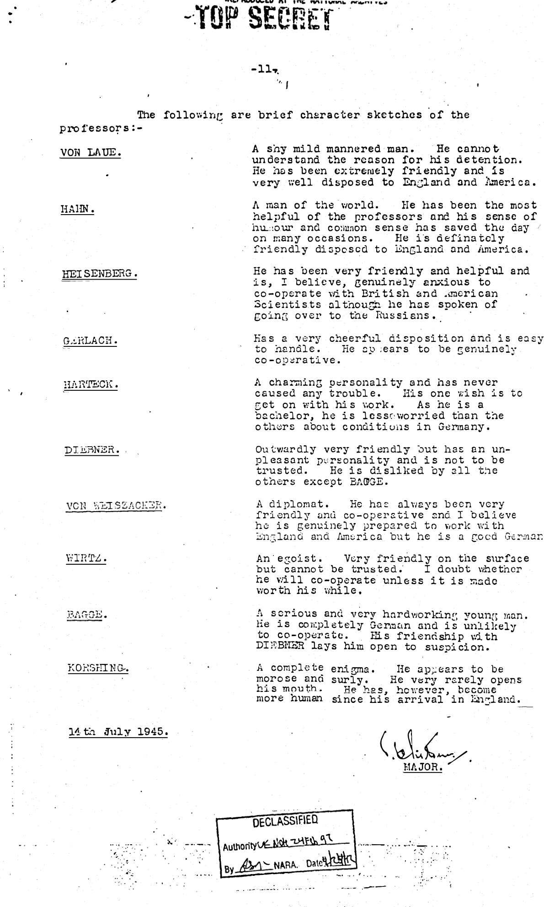
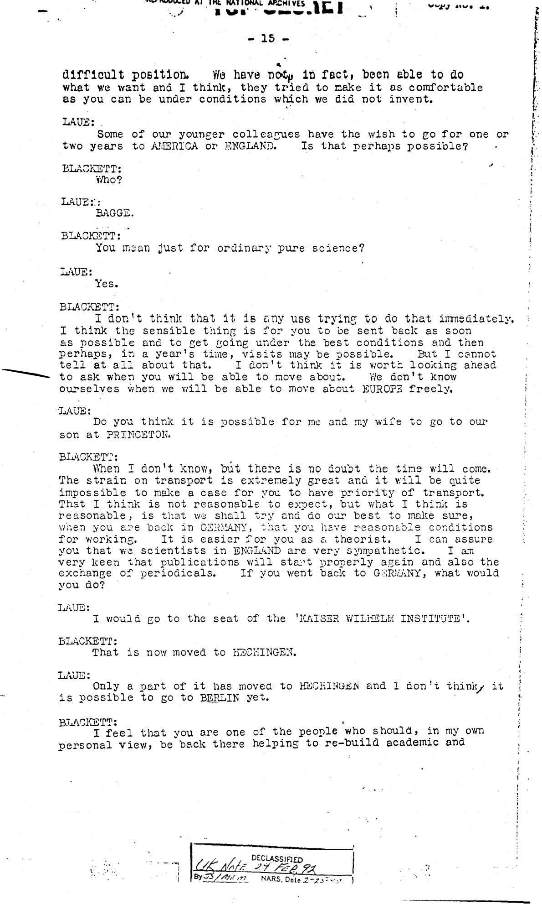

[handwritten: 2] — [handwritten: ED] — [handwritten: 7]
[stamp: TOP SECRET] [strikethrough over TOP SECRET]
153 pages
[heavily redacted/blacked-out section]
ATOMIC ENERGY COMMISSION
OAK RIDGE, TENNESSEE
This document has been reviewed and it has been determined that it does not contain Res Icted RD Atomic Energy Act of 1954. [signature] Carvil
Chief, Declassification Branch
8-24-61
DECLASSIFIED
Authority U.K. Note 24F5892
By 35/nem TISRA, Date 2/5/66
[stamp: TOP SECRET]
and Lieut. Col. Nittler.
From Major T.H. Rittner.
TOP SECRET
OPERATION "EPSILON"
I PREAMBLE
1st May 1945.
I received at H.Q. from Lieut. Cdr. WELSH instructions to proceed to REIMS (France) to report to 22 SHAEF and wait a party of German Scientists. A Chateau at SPA (Belgium) had be prepared for their reception. I was told that distinguished British and American Scientists would be visiting them in the near future and my instructions were that the scientists were to be treated as guests. No one, repeat no one, was to contact them except on instructions from H.Q.
II. REIMS (2nd - 7th May.)
2nd May 1945.
I proceeded by air to REIMS and reported to SHAEF where I was informed that I had just missed a party of scientists. The information being that the H.Q. at REIMS was no longer available and that the party was to be met at REIMS at the Chateau at VERSAILLES. Arrangements could be made.
Arrangements had been made to draw American "A" Rations ready cooked and a staff of two British O.R.s had been provided by SHAEF in addition to the necessary guards.
The same evening, the following arrived at 76, Rue Gambetta, escorted by Major FURMAN, U.S. Army:-
Doctor VON WEIZSÄCKER
" DIEBNER
" BAGGE
" KORSCHING
Professor HARTECK, whom I had been told to expect, was not among the party.
[stamp: TOP SECRET]
-2-
5th May 1945.
I was asked by SHAEF H.Q. Commandant to release the Allied Personnel who were required in connection with the impending VE Day negotiations and who, in any case had shown some reluctance to wait on Germans. I pointed out that it was essential for me to have staff for this purpose and it was suggested that I take on German P.W. It seemed to me that this would solve the staff problem and I accordingly agreed and acquired from the REIMS P.W. stockade, 3 German P.W. and 1 civilian who were to be repatriated until they own would have to remain with me as long as the professors were with me.
The professors were by this time beginning to get restive and they were particularly anxious about their families. They asked permission to write letters and after referring the matter to H.Q., did later write and receive letters. Some of the letters were written and, after being censored by me, were handed to the professor's secretary (Jun. Gedr. Pfingst) at SHAEF for transmission.
7th May 1945.
SHAEF informed me that arrangements had been made to accommodate the party at VERSAILLES and that H.Q. had agreed to the move. A SHAEF officer called Colonel MCKEE did not make the party welcome and a short stay at VERSAILLES was planned. With all this a conference of American Scientists was about to take place.
III. VERSAILLES (7th - 11th May.)
On arrival at VERSAILLES I reported to SHAEF and found that the party was to be accommodated in a detention centre known as "Dustbin" which had been established at VERSAILLES and had been set up for the purpose of interrogating German Nazi Scientists and Industrialists rather than detaining atomic physicists. From my point of view as complete segregation was impossible and there was not sufficient space for the whole party. The food was the ordinary P.W. rations. The professors ate in a common room along with P.W. of the "Dustbin" establishment, but I was able to satisfy the professors who accepted the situation with as good a grace as possible. I was anxious to do my best to get them moved as soon as possible. The Camp Commandant did his best to make them comfortable.
[stamp: MICROFILMED AT THE NATIONAL ARCHIVES]
[stamp: TOP SECRET]
-3-
to join the party:-
Doctor DIEBNER.
The situation at the Chateau du CHESSNAY was becoming more and more difficult as the professors were highly indignant at being treated as "criminals" as they put it. Professor von LAUE was almost in tears. In spite of the fact that other German Scientists including Professor GERLACH were in the house, and were being interrogated by British and American Officers, I was able to prevent any of the professors being interviewed. Dr. ROBERTSON, Scientific Advisor to SHAEF who, however, was Professor von LAUE's old friend and spoke to him, but I was able to persuade him to break off the conversation and he accepted the situation well.
10th May 1945.
The professors were becoming more and more restive and they begged me to contact H.Q. by telling them what they were. I assured them we would help them. This request was of course refused and I told them they must have patience. I did everything possible was being done for them.
In order to distract them from their difficult conditions I took them in parties by car to VERSAILLES to see the gardens and palace. On one of these outings one of the professors suggested on this point and we visited the Hall of Mirrors and we left the premises hurriedly having pleaded a previous engagement.
11th May 1945.
It was now clear that the difficulties which had arisen were due mainly to a political conflict. We were operating under the stipulation that no preferential treatment was to be given to any captured German nationals at the time. There were also Court of Enquiry issues in the press describing the good treatment being meted out to Reichsmarshal GOERING.
General STRONG refused to agree to my party returning to REIMS but arranged for it to be sent to BELGIUM the next day. General OSHEA, to accommodate the party for a short time at Villa in 22 SHAEF but with General OSHEA's help this could be arranged. I returned with the party in command cars on the evening of the 11th May after informing H.Q. by cable of the arrangements which I had made.
IV. LE VESINET (11th May - 4th June.)
Le Ville Argentina, 89 Allee du Lac Infer1eure at LE VESINET was arranged through Lt. Col. BROOKINGS of 21 Army Group who helped to accommodate the party at a Chateau at VERSAILLES where the original policy regarding the professors could be carried out. I met Colonel CALVARY and explained the situation to him.
[stamp: TOP SECRET]
-4-
The professors were delighted with their new surroundings and the old atmosphere of cordiality quickly returned. There was some trouble with the plumbing and electric light in the villa which had been empty for some time, but the professors helped to remedy the defects. When outside help was necessary, such as on an occasion when the professor had been going to a burst pipe, they were confined to their rooms until a very voluble and inquisitive French plumber dealt with the matter.
On the evening we arrived, Major FURMAN brought Professor HARTECK by car from Paris. At my and I think, but from my note to mine, I asked the professors to return their parole which they did.
12th May 1945.
As we could only have the use of the villa for a very limited period, I asked H.Q. through Colonel Robin BROOK urging that efforts should be made for a permanent home. It was now obvious that it would not be possible to arrange accommodation on the continent so that England was in my thoughts.
There was considerable speculation amongst the U.S. troops and the French civilian population regarding the identity of the party. BAGGE had a particularly difficult time. He told me at one stage from PARIS describing the good treatment and it was possible that my party consisted of active Anti-Nazis who were being kept by us for one reason or another.
The information, inadvertently let out by Major FURMAN, that Professor Von HEISENBERG was in the party greatly disturbed me and DALLENBACH caused consternation amongst the professors who had been told that no information of their whereabouts or identity was to be given. Professor GOUDSMIT was prompted to write a letter to his friend Dr. GOUDSMIT, which was inadvisable, and caused his various colleagues to get some news of the families. On receipt of a cable from Dr. FURMIN indicating that DALLENBACH had given the story to the press, Major FURMAN sent Lieut. BATES to Professor HEISENBERG's villa which I handed to him for which he was duly grateful.
14th May 1945.
Major WATKINS was sent by Mr. FIESER to get more information from Professors HAHN and Dr. WIRTZ regarding the whereabouts of certain apparatus. I was present at the interview. All received were valuable.
17th May 1945.
Brig. General GROVES came to the villa and I should like to say he did not speak to any of the professors. He expressed his satisfaction that the move to this locale had been made and remarked on the comfort of the Chateau. He explained that he wanted to reduce them to the "C" scale which was that authorized for P.W. On the following day he wrote personally to me and said without warning and I protested to Colonel FORD where the H.Q. eventually agreed to restore the original scale.
Major FURMAN went Lieut. DIEBNER, U.S. army, to ask Professor HAHN about certain apparatus at CELLE. I was present at the interview.
[stamp: TOP SECRET]
-5-
The professors spent their time in LE VESINET working in their rooms or on labeling in the garden. They developed a passion for physical exercise and even the more aged Professors worked in the garden. They took exercise in the garden and found the garden at six o'clock in the morning did only in thin underpants. On Tuesdays and Fridays they gathered in the common room to hear a lecture by one of themselves. I was able to supply them with books, technical journals, etc.
During this time, Major FURMAN was endeavouring to find suitable permanent quarters. He was having little success and so, General SMITH, D.S.O., 8'S, OC SHAEF asking all concerned to assist in finding suitable accommodation. Letters from the professors showed that he had found a Chateau near LIEGE (Belgium) and I arranged to inspect it.
29th May 1945.
I received a cable from V.C.B.S. informing me that WASHINGTON had been consulted and that it was agreed for the party to be returned to England, and I replied stating that I proposed to inspect the Chateau in BELGIUM and act accordingly. FURMAN replied to say a decision from WASHINGTON. V.C.B.S. replied telling me to proceed as though I knew nothing about these negotiations.
23rd May 1945.
I flew to LIEGE with Major FURMAN to inspect the Chateau. de FACQUEVAL. French Intelligence officers told us to be careful about the Chateau FACQUEVAL. He pointed out that the professors would be coming into daily contact with the ordinary citizens of the town. In addition, I was informed that General EISENHOWER's order regarding treatment of enemy nationals. The order made it clear that normal civil rights were not being observed. General GOERING was on the estate and I was also informed that a number of distinguished Belgian civilians were expected in the Chateau. In addition, the owner of the Chateau, a very fine gentleman had just returned after five years imprisonment in Russian hands. I consequently raised this information to H.Q. with the argument of the fact that there was no civil requirement and did not feel it was right for us to distress him if this was possible. The first to attempt to escape and then he realized that this was impossible, he then turned to suicide suicide. At this juncture the whole story that my party consisted of active anti-Nazis who were being kept by us for reasons of security.
The information, inadvertently let out by Major FURMAN, and DALLENBACH caused consternation amongst the professors who had been told that no information of their whereabouts or identity was to be given. Dr. GOUDSMIT caused Professor GOUDSMIT to write a letter to his friend Dr. GOUDSMIT. He stated that he was keeping his contact on his fall in order if he felt he could then and handed the original letter of Professor HEISENBERG's letter which I handed to him for which he was duly grateful.
[stamp: TOP SECRET]
-6-
that he proposed to visit me and telephoned him arranging to meet him in PARIS on 30th May.
30th May 1945.
Lieut. Cdr. WELSH arrived and I took him to the villa. I explained the whole situation to him and arranged to take him to Paris to visit H.Q. He left me with the impressions that the professors were disappointed but they were disappointed that he was unable to give them any news of their families or any information regarding their futures.
31st May 1945.
Lieut. Cdr. WELSH and I flew to LIEGE and were taken to the Chateau de FACQUEVAL by Captain HOELING, U.S. Army, Colonel RAINING [?], Colonel GOUDSMIT, and various other officers. After inspecting FACQUEVAL, we agreed that the place was unsuitable and we returned to LE VESINET.
1st June 1945.
A conference took place at Major FURMAN's office in PARIS at which Major FURMAN, Lieut. Cdr. WELSH and I attended. Mrs. was and we considered the Chateau de FACQUEVAL unsuitable and that we were trying to get sanction to bring the party to England where suitable accommodation was available. It was agreed that efforts should be made to remain at LE VESINET as possible and on this point and Major FURMAN proposed sending a cable to General GROVES which was drafted by Lieut. Cdr. WELSH informing and it was agreed that it was desired not to send this cable. Lieut. Cdr. WELSH then returned to London.
Colonel FORD at HIS who informed me that the Villa ARGENTINA was theirs and in some discussion he agreed to put other accommodation at our disposal for a few days.
3rd June 1945.
Major FURMAN told me that the party were to move at once to Belgium as the arrangements regarding LE VESINET were due to move before Monday 4th June and telephoned H.Q. (Lieut. Cdr. WELSH) who confirmed and the arrangements were confirmed.
It was not possible to arrange air transport and HIS provided two command cars with trailers and a salon car for the journey.
4th June 1945.
A movement order was obtained from Colonel FORD and we left LE VESINET at 1300 hours on 4th June and arrived at the Chateau de FACQUEVAL at 1730 hours.
During the whole of my stay in France I received valuable assistance from Colonel BROOK and his staff.
V. NOW (4th June - 3rd July.)
Although Major FURMAN had assured me that the arrangements he had made at the Chateau de FACQUEVAL
[stamp: DECLASSIFIED Authority U.K. Note 37 By 35/nam Date 2/5/66]
[stamp: TOP SECRET]
-7-
agreed policy, I found on arrival that this was not the case. Only P.W. rations were available and no provision had been made for a meal for the professors who had been travelling since midday. Fortunately I had brought American "A" rations which we had eaten by the roadside.
Captain DAVIS, U.S. Army, had been temporarily placed in command and he was an American officer placed with the D.L.D.E. Mission who had been appointed to command the unit. Mr. DAVIS, an American D.I.C. man who was attached to the unit. The DDIS officers did everything in their power to help me.
It was pointed out to me that the American troops would object to any sort of fraternisation and that I would not be allowed to provide for the professors from the American kitchen. As a matter of fact I did later provide additional food and drink with the connivance of the American officer in charge, but without the knowledge of the American D.I.
8th June 1945.
The professors spent their time in LE VESINET working in their rooms or in the garden. They developed a real passion for physical exercise and even the more aged Professors worked in and round the garden at six o'clock in the morning did only in thin underpants. On Tuesdays and Fridays they gathered in the common room to hear a lecture by one of themselves. I was able to supply them with books, technical journals, etc.
During this time, Major FURMAN was endeavouring to find suitable permanent quarters. He was having little success and so, General SMITH, D.S.O., 8'S, OC SHAEF asked all concerned to assist in finding suitable accommodation. Letters showed that he had found a Chateau near LIEGE (Belgium) and I arranged to inspect it.
Speculation as to the identity of the professors was as great in Belgium as it had been in France. The most popular guess was that the party was English and that arrangements were being made that there was considerable danger to security owing to the fact that the American troops, who had been trained in intelligence work, guarded the Chateau. It was clear that a suitable answer had been found and there were three Belgian civilians engaged as cooks etc. for the mess and these people should not be confined to the premises.
[stamp: TOP SECRET]
-8-
Lieut. Colonel WATKINS insisted upon the establishment being put on a proper military footing, I agreed to take down the Stars and Stripes from a flag staff in the grounds; this suggestion I vetoed. The Chateau was in a Military Security Special Detention Centre, Area No. 5, Channel Base Section, SHAEF and this had to appear on all correspondence and requisitions. This drew attention to the nature of the establishment and there was the obvious danger of Swiss or Red Cross representatives claiming the right of entry.
9th June 1945.
The professors were very worried when they read in the newspapers that the Germans were discussing their zone of occupation in Germany. Mr. DIEBNER was frantic as it appeared that the town of STADTILM was in the Russian zone of occupation. We also knew that HAHN's family had been moved into the British or American zones. I wanted to get HAHN moved into the British or American zones to get his family. Professor HEISENBERG was also anxious in this respect, and doing him a favour but said I could see what could be done. In the meantime Professor von LAUE was very interested and very influential and worked with her husband and knew about all his work and that of the others and urged me to act quickly as she felt that if his fall into Russian hands. I consequently caused this information to H.Q. with the request that something should be done. On the following day a letter was received from Dr. VON LAUE's wife. She was making up her mind first to attempt to escape and then he realised that this was impossible, he then turned to suicide suicide. It was not possible when I was able to inform him that his family had been moved to GOTTINGEN that his outlook changed considerably. I left VINNIKEN when at that he asked to be taken to Church although he admitted that he had not been particularly religious before. He attended Church on Sunday where he caused a sensation by appearing dressed up in though or a civilian suit.
10th June 1945.
Lieut. TOPFIT arrived to take over command of the unit. This officer was familiar with the professors HEISENBERG and DALLENBACH when the professors were taken into custody and knew those who were to command to do for him.
Lieut. TOPFIT handled a difficult situation very well indeed, co-operating in every way and turning a blind eye to my fraternizing whilst maintaining his position as O.C. of the troops.
14th June 1945.
Professor DIEBNER was brought from PARIS to join the party. The professors were delighted to see their old colleague.
15th June 1945.
By this time the professors were again becoming very, very restive and beginning to be very difficult. They indicated that they would take desperate measures to let the world know of their position. On the other hand they were afraid of being shot and that they would give us due warning. They showed a certain loyalty to me personally as they said that we had done everything to do for them. They assured me that they would not break their parole with out adequate notice. I tried to find out who among the professors was the most sensible of them. Some told me that their main
[stamp: TOP SECRET]
-9-
worry was the lack of information about their families. He also said that they suspected that their potential value was being judged by the documents found at their institution. He said that these did not give a true picture of the extent of their experiments which had advanced much further than would appear from these documents and maintained that they had advanced still further as a result of pooling of information during their detention. He pressed for an opportunity to meet British and American scientists and German scientists in order to acquaint them with their latest theories and experiments. He considered that his most important contribution was Dr. NARTUCK suggested that Professor BONHOEFFER of LEIPZIG and that Professor THIESSEN of BERLIN were the two people who should be brought to join this party. They said he was an active Anti-Nazi and it might be possible to raise the question of his fall on Russian hands. The above information was passed to H.Q. by cable.
The professors again asked to be allowed to write to their families and H.Q. was approached and permission was given for letters to be delivered. Letters were written and after being carefully censored by me, were handed to 21 Army Group for transmission to the families. Lieut. Cdr. WELSH in LONDON.
Lieut. Cdr. WELSH told me on the telephone that permission had been given for the professors to be brought to England and he asked me to move over as soon as possible to inspect Farm Hall.
16th June 1945.
As we required additional staff, I got two more P.W. from the stockade and they were technicians by profession, and in fact by profession. This enabled us to be more or less independent of outside help if necessary. On 16th June at the suggestion of H.Q. a group photograph was taken by Cpl. CATTS. (The negative and all copies of this photograph are in my possession.)
17th June 1945.
In order to get an air passage to the U.K., I had to get myself temporarily attached to 21 Army Group and I arranged with BROOKSDALE and I accordingly got myself attached to 21 Army Group and got an authority from them to get an air passage.
Lieut. Cdr. WELSH and I went to Farm Hall where arrangements had already been made by Captain BROOKS and I had asked for much an installation from the day I took charge of the unit. We were overjoyed at the prospect of leaving what they called the concentration camp at FACQUEVAL. I arranged that I would be left VINNIKEN with the party in command cars on the evening of the 11th May after informing H.Q. by cable of the arrangements which I had made.
19th June 1945.
Brig. General GROVES wanted the American guard troops accommodated in the best rooms in the house and suggested that the professors should be moved to the attics. I refused to agree to this.
I reported to H.Q. (V.C.B.S.) by cable.
In the meantime HIS were pressing me to vacate the villa at ARGENTINA who urgently to come to June and Colonel FORD and were passing through LE VESINET for re-deployment. I saw Colonel HOELING informing me that it was found that the university that afternoon. He was allowed to inspect only the American troops and their guards and the professors were confined to the house during his visit.
20th June 1945.
I received . . . . . . . . . from Lieut. Col. ??? [illegible] informing me
[REPRODUCED AT THE NATIONAL ARCHIVES]
TOP SECRET
-10-
The professors received the news of the impending move to England with mixed feelings. On the one hand they looked on it as a step forward in that they expected to meet their British colleagues, but on the other hand England seemed much further away from home than Belgium.
Certain difficulties arose regarding the journey of the professors to England as Lieut. Colonel WATKINS insisted upon orders directing him to release them from American custody. Eventually orders were obtained in PARIS directing him to release all personnel detained at the Special Detention Centre to me personally or to my representative, at LIEGE airport.
30th June, 1945.
I left for England leaving Lieut. TOEPEL in charge. All the professors gave me their word to carry out any instructions given by Lieut. TOEPEL and they were handed over to Mr. OATES, whom I had designated for the task, at LIEGE airport on the 3rd July and flown by special aircraft to TEMPSFORD.
Lieut. Colonel PAGE and his staff were extremely helpful during the whole of my stay in Belgium.
VI. SUMMARY.
The operation has been successful to date in that,
(1) The professors have been detained for over ten weeks without any unauthorised person becoming aware of their identity or place of detention, and,
(2) They have, with considerable difficulty, been kept in a good frame of mind.
[DECLASSIFIED Authority NLN IMED 97 By [illegible] NARA Date [illegible]]
Automated transcription was unavailable for this page; the original declassified scan is reproduced below.

[TOP SECRET] Mr. M. Perrin for General Groves through Lt. Cdr. E. Welsh
To: Mr. M. Perrin and Lt. Cmdr. Welsh.
From: Major T.H. Rittner.
OPERATION "EPSILON". (3rd - 18th July 45).
1. General.
1. A report covering the operation on the continent from May 2nd until 3rd July 1945 has already been rendered.
2. The arrangements for bringing the party to England went according to plan. The professors landed at Tempsford on the afternoon of 3rd July and were taken to FARM HALL by car.
Professor HAHN. -
Professor HEISENBERG. -
Professor GERLACH. -
Doctor DIEBNER. -
Doctor VON WEIZSÄCKER. -
Doctor WIRTZ. -
Doctor DIEBNER. -
Doctor BAGGE. -
Doctor KORSCHING. -
together with four PM orderlies. A further PM orderly has since been added to the party.
3. All the professors have renewed their parole to me in writing in respect of FARM HALL and grounds and I have warned them that any attempt to break out of FARM HALL or grounds or to escape or to communicate with anyone will result in them all having their movements considerably restricted.
4. Ordinary army rations are drawn for the professors and the officers and troops and these are prepared for all by the PM cooks.
5. Microphones have been installed in all the bedrooms and living rooms and the operation of this house installation proved invaluable as it has enabled us to follow the trend of their thoughts.
In the following conversation, DIEBNER and HEISENBERG discussed the possibility of there being microphones in the house. The conversation which occurred on 3rd July in the presence of all the professors is of interest: -
DIEBNER: "I wonder whether there are microphones installed here?
HEISENBERG: "Microphones installed! [laughing] Oh no, they're not as cute as all that. I don't think they know the real Gestapo methods; they're a bit old fashioned in that respect."
II. MORALE.
The party has settled down well at FARM HALL but they are becoming extremely homesick. The separation of their families is causing them the greatest anxiety and I believe that if it were possible to make arrangements for an exchange of letters with their families, the effect on general morale would be immediate.
[DECLASSIFIED] [Authorised FOR TITLE AT] [BY: [illegible] NARA DATE [illegible]]
[TOP SECRET]
- II -
2. Most of the recorded conversations are of a general nature and show that they are pleased with the treatment they are receiving but completely mystified about their future.
3. Comdr. WELSH visited FARM HALL on 7th July. The atmosphere was somewhat tense as can be seen from the following conversations:-
(a) Conversation between HEISENBERG, HARTECK, WIRTZ, KORSCHING and DIEBNER after the announcement of Lt. Comdr. WELSH's visit.
HEISENBERG: "I see the time is coming when we must have a very serious talk with the Commander. Things can't go on like this."
HARTECK: "It won't do. We have no legal position since they have to keep us hidden."
HEISENBERG: "Apparently they feel guilty about their own scientists, otherwise one talks together freely. I tell you what we'll do: one evening we'll make the Commander drunk and then he'll talk. We'll play bridge and then talk seriously from one o'clock onwards."
WIRTZ: "I think you should speak to the Commander and tell him we are very dissatisfied and then we can make him drunk one evening."
HEISENBERG: "Yes, that is the right sequence of events. First there will be an afternoon when we will go for him and break him down and then an evening when we will make it up."
HARTOCK: "Yes, and tell him in no uncertain terms that we are being wronged."
HEISENBERG: "Yes, of course."
DIEBNER: "You appear to have a certain influence on him and I think that you could achieve something with him."
HEISENBERG: "Well, I think I am more or less in his good books. I will point out to him that he has let STARK and LENNARD go on living happily in Germany whilst we poor wretches have to let our wives and children starve."
HARTECK: "In the meantime the British and American soldiers are looting everything at home."
WIRTZ: "He doesn't mind that."
HEISENBERG: "Oh, yes, he does."
[DECLASSIFIED] [Authority: EO 12958 §7] [illegible]
[TOP SECRET]
- 11 -
DIEBNER: "With a bit of cunning, we may get something out of this. First of all they are keeping the whole business here secret and secondly the idea seems to be to be friendly to us."
HEISENBERG: "I should say that the point is that they don't yet know what they want. That's the whole trouble. They don't want us to take part in any discussion regarding our future as they don't want us to have any say in the matter. They want to consider what to do and they have not yet agreed among themselves."
MANFTEN: "But they can't say to you: 'You must stay here.' They can merely ask: ' Do you want to stay here under these conditions?' or 'Can you stay?' 'You must stay here'"
HEISENBERG: "Of course, they can if they want to. Of course it is possible they will agree to ask us whether we want to stay in England or go to America but that we cannot stay in GERMANY."
DIEBNER: "When the Commander comes he is sure to bring some letters or some good news, with him. As soon as he comes he will try and pacify us with all sorts of excuses."
KORSCHNG: "Then he will talk for hours and afterwards think to himself: ' Well that's all right, I've talked them out of them for a bit.'
(b) Conversation between VON WEIZSACKER, HAHN, HEISENBERG, and WIRTZ after Lt. Condr. WELSH had a had a talk with them.
WEIZSACKER: "I was very annoyed with the way the conversation began. That was when you started about the letters. When I said 'Yes, they have gone but there has been no reply yet.' It's all very mysterious."
HAHN: "No. He said they had not yet been sent. That's what he said."
WEIZSACKER: "He came out bit by bit after he had really questioned him. And then the remarks about 'misfortunes' etc. of course it's easy to bring up things like that and to say afterwards 'I didn't mean it like that at all.' I made a remark about that but that was not the proper way to reply to your questions. I wish I didn't always lose my temper so much. I don't want to give the impression that I disagreed when the man said things like that. That's why I left the room; also of course to make it easier for you."
HAHN: "I would be very pleased Mr. HEISENBERG if you would have a talk with him. He needn't know the details of my conversation with him."
[DECLASSIFIED] [Authority: EO 3958 #1] [By [illegible] NARA Date [illegible]]
[STAMP: TOP SECRET] — COPY No.
- 17-
HEISENBERG: "He started of his own accord at lunch. I got the impression that he is rather depressed about the whole situation here and the fact that he got a somewhat hostile reception. He noticed it all right."
WIRTZ: "HAHN told him that we are living here like princes but what use is that when we and do it in spite of that. We have no idea what is to happen to us, and are out of touch with our work. Although we are well treated, we are nevertheless prisoners."
HEISENBERG: "It certainly made an impression on him and he wanted to talk to me alone it at first. He refused and said:' We will have a private discussion afterwards.'"
WEISACKER: "I don't think we ought to spoil our chances with this man as he may be the one who can help us against others who are more hostile. It is the pressure on us of expecting him to come here and show such a hostile attitude which gets to us at WILKEIT. He felt at once that that was not the case and was naturally embarrassed."
4. The general lines upon which the professor's minds are working can be seen from the following conversations.
(a) Conversation between DIEBNER, HEISENBERG, HARTECK and KORBING on 6th July.
DIEBNER: "Suppose you were to escape and get to CAMBRIDGE; you have a lot of friends there. That would cause a terrific sensation. The whole world would be concerned. Surely you would do that if they detain you here for a year."
HEISENBERG: "If nothing happens now, I will certainly go to the POTSDAM conference and COMMUNISTS decide at the whole thing and say: off you go, the whole group is to return to BERLIN and then we'll be in the soup." "If nothing happens now, I will certainly go to the front and say I want permission to break my parole." Then he will be in the awkward position of having to post an armed sentry outside my door. That will cause trouble higher up."
DIEBNER: "That would at any rate result in some action being taken. If I could stay I would not do it. If we actually tried to get to CAMBRIDGE, they could do nothing. They could not ask the police to bring us back but the damage would be done."
HARTECK: "They seem to be afraid that one night do something hostile to England but they are hiding us from their own people and also from Russian thing and it has been the other scientists all know about it."
DIEBNER: "The awful thing with the English is that it takes ages before they make up their minds to do something."
WIRTZ: The Empire [illegible] ough centuries; they
[STAMP: TOP SECRET] — COPY No. 2
- v -
WIRTZ (cont.): have plenty of time. They can't understand it when someone is in a hurry."
HEISENBERG: "One can say that they do things better than others because they take their time."
DIEBNER: "They have money and in consequence have time."
HARTECK: "The longer one is here, the more anxious one is to get home. In addition, it annoys one to be left in doubt. One gets terribly bitter."
DIEBNER: "That's it - terribly bitter."
HEISENBERG: "It may be that the British Government are frightened of the communist professors, DIRAC and so on. They say: 'If we tell DIRAC, BLACKETT and co. they will pass the information immediately to their Russian friends, KAPITZA and Comrade STALIN will come and say: what about the BERLIN University professors? They belong in BERLIN.'"
DIEBNER: "It's quite possible they just don't want to say anything."
KORNING: "Then of course they will have to wait until everything has been decided by the 'Big Three'."
DIEBNER: "I think the right thing in that case would be for the English to give us a hint in some way. They may not be able to say it openly because of Comrade STALIN."
HEISENBERG: "It is possible that the 'Big Three' will decide at POTSDAM and that COMMUNISTS will come back and say: off you go, the whole group is to return to BERLIN and then we'll be in the soup."
(b) Conversation between WIRTZ and VON WEISSACKER on 7th July.
WEISSACKER: "These people have 'detained' us firstly because they think we are dangerous; that we hage really done Uranium, Pluton, etc., and made a bomb-ish. If there is nothing in our favour and they wanted to treat us well. These two things are mixed up. But they have got into a certain political muddle. "The decent thing for them to do now would be to say to us: 'It is not possible to come to a decision about you so quickly. What I have to tell you is: we want to talk with your scientists, in a friendly way if you are willing. We would prefer to keep us on ice. That's not nice of them. As a matter of fact I think the story which they say it has to do with the election and all sorts of political muddles. I don't believe they are really afraid of the Germans running off but it is just that they cannot come to a decision about us."
[STAMP: TOP SECRET] — COPY No.
VII
WIRTZ: "Yes, I could quite understand that, but they could say: 'We will come to some arrangement how about your families.' What's the idea of the whole thing?"
WEISSACKER: "But of course that is difficult - the French zone of occupation. But the damnable thing is that they won't let one have a letter; that is what is happen to one or the Commander. At first they wanted to and they will only tell you on condition that you let us go on working on it." They imagine that the work is what interested us here and they won't give one any hopeful indication of what is going to happen."
(c) Conversation between WIRTZ, HAHN, and DIEBNER on 20th July after reading in the newspaper that LORD CHERWELL was attending the POTSDAM conference.
WIRTZ: "That's the man who has had us detained."
HAHN: "IF CHERWELL knew we were detained here, something would happen. He doesn't know; he would certainly speak to and discuss what could and should be could do."
DIEBNER: "Strange things like that will certainly be discussed. I imagine that they will decide at the 'Big Three' conference which scientists are to go to RUSSIA."
HAHN: "How should CHERWELL know anything? He doesn't know anything about it. That's the stupid part about it - he doesn't know he does know."
III. ATTITUDE TOWARDS BRITISH AMERICA.
1. Some interesting sidelights on the attitude of some of the professors towards Britain and America appear from the following conversations between BAGGE and KORNING.
(a) 8th July.
KORNING: "It makes me furious when people are so childishly anglophil. It was just the same in HEISENBERG."
BAGGE: "How do you mean?"
KORNING: "They handed them the water on a platter, they did the same with the Uranium and all the instruments and all the secret files, I don't know and — I don't know — 80 gr. of radium. That's awful."
BAGGE: "WIRTZ and BOPP buried 2 (10?) gr. of Radium which they will sell privately later."
[STAMP: TOP SECRET] — VII
KORNING: "WEISSACKER, although he is clever, imagines he can negotiate with them regarding the handing over of the water and on what conditions. They discussed it with the Commander. At first they wanted to and they will only tell you on condition that you let us go on working on it." They imagine that the work is what interested us here and they only threaten them with bread and water and they will give way."
BAGGE: "If we want to continue working on our subject, we will certainly have to work together with the Anglo-Americans. No one has any say in the matter."
KORNING: "If one is convinced that Germany will be occupied by the Russians for a long time and you work on the production of weapons for the English, the end result will be that you will make GERMANY into the (future) battlefield. The English are, of course, extraordinarily careful to think of nothing but the Americans, because the Americans are very interested in making neutron sources for the Americans. Of course we could not do anything against that - if only for the separation apparatus. I would be perfectly willing to carry on working with that if it is completely harmless (laugh)." "From what I know of the Anglo-Americans, I don't relish the idea of their assimilating us as easily as all that. The result will be terrible. I have no doubt. But it is even more terrible to remain in GERMANY. The Anglo-Americans give the English may be satisfied with the fact that they have the apparatus. That's why they are not in such a great hurry. But the Russians are not satisfied until the whole thing is not taken away from us. I can't believe they will let us go; we will have to continue the research for them. We would certainly have to sign a declaration that we will not publish it. One must be very careful not to let ourselves in for anything."
BAGGE: "What do you mean? The first thing WIRTZ did was to ask 'will we be given English nationality?'"
KORNING: "We had had all sorts of other discussions beforehand. Don't imagine it was his idea. I was once talking to WIRTZ and HEISENBERG and they told me it would only be a clever move for anyone who is thinking or working in England to acquire British nationality. If DIEBNER were to fall ill if he fell into Russian hands. 'They both agreed that one would have to do this. If one is taken to England one may have to stay there. "I would rather take Swedish nationality than stay in GERMANY and wait for the next war. On the other hand I would not make any concessions to the English. If there is nothing more to be made out of GERMANY, one should at anyrate get away from the coming catastrophe. They have gone very far and the idea of becoming Russian one day." "Suppose the Russians or Americans get them. You can carry on with your work, in fact you are to go on working on Uranium.
[STAMP: TOP SECRET] — VIII
KORNING (cont.): We will take everything back to HECHINGEN but you must sign a paper." Then presumably one would have to sign in order to get away from here. But would you really do it?"
BAGGE: "I would say that even during the war I was able to carry on my scientific work freely and I would ask whether I could continue to do so."
KORNING: "I would say the same, of course. If they said 'No', I would still be the same and do it in spite of that." On the other hand, of course, they will not give us the heavy water any more. They may say: "Go back and work but not on the Uranium machine." I cannot get hold of two tons of Uranium easily. And then of course they may say: "The Uranium machine must not come back but the isotope-separators must carry on working at separating isotopes under American control."
BAGGE: "Men like WIRTZ will want to do something too. WIRTZ may construct his curious HECHINGEN machine again then."
KORNING: "We will not be able to separate even 1 milligram of anything. Wirtz has the same problem as I have with my apparatus. It is a question of solubility. For as long as he is working on the water he will certainly get the same effect just the same with him as with me. The difference between his apparatus and mine is that mine is larger and his and mine are more compact. But of course he will try and play about a great deal. He has no goal. If the Americans the English may be satisfied with the fact that they have the apparatus. They will let us go to work if the apparatus is taken away from us. I can't believe they will let us go; we certainly have to sign a declaration that we will not publish anything. One must be very careful not to let ourselves in for anything."
2. DIEBNER and BAGGE somewhat surprisingly expressed a desire to acquire British nationality in the following conversation on 19th July:
DIEBNER: "I would be glad BAGGE if we could stay here."
BAGGE: "It would be a wonderful thing if we could become English."
DIEBNER: "And then have nothing more to do with the Party again. I would willingly take an oath never to have anything to do with the Party again."
[STAMP: DECLASSIFIED] Authority: EO 13526 §1 By [illegible] NARA Date [illegible]
[STAMP: TOP SECRET] — IX — Copy No. 1
IV. TECHNICAL
1. The bi-weekly lectures are being continued. In fine weather these take place out of doors.
2. The following remarks were made by BAGGE in conversation with KORSSING on 5th July:
BAGGE: "I have now solved the wave equation. Now I have to calculate the correct distribution of the charge from the wave functions and the quadrupole moment from the distribution of charges. As it is known the deuteron is not quite spherical, all it is known that the deuteron is near enough spherical. Before you can calculate that's acting between proton and neutron from the intrinsic energy of the Deuteron, i.e., you can find a force which gives this. This force, of course, corresponds to a certain relative direction of the spin of the proton and the neutron. The deuteron a definite spin position is realised, the spins of the proton and the neutron are parallel to each other. Now this is not quite sufficient to explain the quadrupole moment, you need some idea about the spin position, but something can be calculated from scattering experiments with proton and neutron. If spins are parallel, the force is (only) half as great. You can find a function, giving the force as a function of distance, whose just this property. HEISENBERG has pointed this out. If you assume with HEISENBERG that the force depends mainly on the position of the spin, the forces are twice as big in that position as compared with this position, and the numerical value depends on the energy with which you do the scattering experiments. From these you can determine the quantity of the forces, and we can take the scattering experiments with fast neutrons at the same time. In other words with the help of HEISENBERG's functions, we can explain the experimental scattering and neutron proton experiments without contradiction."
BAGGE: "RUTKE has shown that within the theory of YUKAWA you can make assumptions which will give HEISENBERG's function for the spin. Its value is an invariant from the scattering value of spin terms which also depend on the spin directions and which can explain how much protons are scattered by neutrons. He has assumed forces in such a way that 1) they agree with the results of the scattering experiments. 2) The give the correct mass of the deuteron. 3) They give the quadrupole moment of the deuteron. If one uses these forces then Professor HEISENBERG etc. are here. That's the point. The moment anyone can get a letter outside, it says HEISENBERG is well and happy, they will realise that he is still in captivity."
HEISENBERG: Everyone in MÜNCHEN knows that I have been arrested, but the moment news gets through, they will know "Ha! they are still alive".
WIRTZ: I would say in any case.
HEISENBERG: I can also imagine that they are afraid of the following: Assume that it becomes known that we are here; some clever journalist would turn up and, of course, should not be allowed in. He would have a look at the professors outside, see us playing tennis or in the garden or the stream, but nothing etc. The next day there would be a large article in all the newspapers. Perhaps starting with Parker GOEBBELS and Bishop GALEN. "}
WIRTZ: "For the payment of the salaries of assistants and technical personnel. The money was at my home and I took it with me; I had no chance of banking it."
[STAMP: TOP SECRET] — X
HAHN: "That is far too little, you can't do anything with that. You will get half of an atom during 80 days. With a period of decay of 10000 years through the disintegration of a 90-element."
BAGGE: "Why? You have the 93-element with a period of decay of 2.3 days, and now you wait for 80 days. Then will be nothing left of the 93-element which will have completely transformed itself into the 94-element."
HAHN: "That is too little."
HAHN: "There are as many atoms as correspond to the '93'. But you can't prove the '94' because for some reason that the reason that in 2.3 days — that means actually (in) seconds it disintegrates by alpha radiation."
BAGGE: "Now KORSING does the following: He takes your trace of the 93-element which you have concentrated."
HAHN: "Every ten years one 'alpha' ray will be emitted. How can you demonstrate that?"
BAGGE: "If so far you have been able to demonstrate 10000 years by alpha counting methods it is only a simple counting. If you assume HEISENBERG's has stated, but the by-effect (HAHN effect) will upset the measurements."
V. FINANCE
The professors told me some time ago that they all had German money with them when they were taken and also had letters to their families. In consequence I asked them on 7 July to let me know how much each individual had. The following conversation took place between DIEBNER and GERLACH:
DIEBNER: "I wanted to put down that I am carrying a certain sum."
GERLACH: "I would just write; 'I have so many thousand marks; it was money to pay —"
DIEBNER: "Funds of the Reich Research Board (Reichsforschungsrat)"
GERLACH: "No not Reich Research Board but Research Society."
DIEBNER: "Yes."
GERLACH: "For the payment of the salaries of assistants and technical personnel. The money was at my home and I took it with me; I had no chance of banking it."
[STAMP: DECLASSIFIED Authority EK Note 24Feb 97 By [illegible] NARA Date [illegible]]
[STAMP: TOP SECRET] — XI
DIEBNER: "I have just counted it. I should have had RM 95,000 with me but it is only RM 79,000 and something. I gave some of it to KORSEK (?). I should have RM 33,000 of my own money and RM 60,000 belonging to the Research Society. I should only got a total of RM 79,000. Perhaps I gave some to my wife."
Subsequently I was given the following list of money carried by each individual:
VI. PERSONALITIES
1. The Professors
a) VON LAUE
Appears, from monitored conversations, to be disliked by his colleagues.
b) HAHN
Unpopular with the younger members of the party who consider him dictatorial.
c) HEISENBERG
Has been accused by the younger members of the party of trying to keep things going for his own experiments.
d) VON WEIZSÄCKER
Told WIRTZ that he had no objection to fraternizing with pleasant Englishmen but felt a certain reluctance in doing so "this year when so many of our women and children have been killed".
e) DIEBNER
Is worried about his future and has told BAGGE that he intends to send in a formal request to HEISENBERG and that he will state in the request that he was a member of the Nazi Party. He says he only stayed in the Party as, if he had not won the war, only Party members would have been given good jobs.
2. Others.
a) BOTHE
There has been a lot of speculation as to why Professor BOTHE has not joined the Party as expected. They imagine he has been clever enough to be able to stay in Germany and carry on with his work.
b) EWALD (?)
Stated by GERLACH to have possessed an exceedingly good mass-spectograph able to produce an unusually large number of lines.
[STAMP: DECLASSIFIED Authority EK Note 24Feb 97 By [illegible] NARA Date [illegible]]
[STAMP: TOP SECRET] — XII
c) MAUER (?)
One of the professors in conversation with GERLACH said he was afraid of a physicist named MAUER who was an ardent Nazi but a poor research worker. MAURER worked with STRASSMANN (?) on the disintegration of molybdenum and Uranium.
d) HEYER
A physicist, head of the Developement Section of the torpedo experimental station. He is in his middle thirties and is a graduate of KARLSRUHE University. He is an ardent Nazi.
e) STRASSMANN (?)
Worked with MAURER on the disintegration of molybdenum and Uranium. (See above).
[illegible]
[signature]
Major.
Farm Hall
19th July, 1945.
[STAMP: DECLASSIFIED Authority EK Note 24Feb 97 By [illegible] NARA Date [illegible]]
11 August 1945
To: Major Francis J. Smith,
Room 5119, New War Dept. Bldg., Washington, D. C.
Attached is report No. 2 of Operation "Epsilon". Report No. 1 has been furnished your office through British channels. Report No. 3 indicating the reaction of the guests to Valhalla Day will follow in the near future.
H. K. CALVERT,
Major, F.A.
Assistant to the Military Attache.
Inclosure — 1.
cy No. 1 of above report
[STAMP: TOP SECRET]
[STAMP: DECLASSIFIED UK Note 24Feb 90 By [illegible] NARS, Date 2/25/92]
/ 1
OFFICE OF THE MILITARY ATTACHE
1, GROSVENOR SQUARE, W. 1.
LONDON, ENGLAND
1 September 1945
To: Major Francis J. Smith, Room 5004, New War Dept. Bldg., Washington, D. C.
Attention: Mr. Ryan.
1. Major Smith asked that this office get the original transcript of that part of Farm Hall Report No. 2 wherein Harteck mentioned Goudsmit's parents and made the statement, "Of course we murdered them". The German text of that statement is as follows:
2. The word "umgebracht" is probably best translated to mean "killed" rather than "murdered".
[signature]
H. K. CALVERT,
Major, F.A.
Assistant to the Military Attache.
[STAMP: TOP SECRET]
[STAMP: DECLASSIFIED UK NOTE 24Feb 90 By [illegible] NARS, Date 2/25/92]
[STAMP: TOP SECRET] — Captain Davis for General Groves.
From: Major T.H. RITTNER
OPERATION "EPSILON"
(18-31 July 1945)
[handwritten: F.H. #]
I. General
There has been very little change in the position at FARM HALL since the last report. Outwardly the guests are serene and calm, but it is clear that their restiveness is increasing. Suggestions have been made that one of the guests should attempt to get a letter to CAMBRIDGE. Steps have been taken to prevent this.
II. Morale
The following conversations show the general trend of morale:
1. Conversation between HEISENBERG, VON WEIZSÄCKER, WIRTZ, HARTCKEN and DIEBNER on 18 July:
HEISENBERG: I would say we must wait for the 'Big Three'. The whole thing is connected with that.
WIRTZ: This is the position. Why don't they want to send letters? Not because there is no paper; we have all got, because they could have brought us paper; it's not because our lives (i.e. Professor HEISENBERG etc. are here. That's the point. The moment anyone gets a letter outside, it says HEISENBERG is well and happy, they will realise that he is still in captivity.
HEISENBERG: Everyone in MÜNCHEN knows that I have been arrested, but the moment news gets through, they will know "Ha! they are still alive".
WIRTZ: I would say in any case.
HEISENBERG: I can also imagine that they are afraid of the following: Assume that it becomes known that we are here; some clever journalist would turn up and, of course, should not be allowed in. He would have a look at the professors outside, see us playing tennis or in the garden or the stream, but nothing etc. The next day there would be a large article in all the newspapers. Perhaps starting with Parker GOEBBELS and Bishop GALEN. "}
[STAMP: DECLASSIFIED UK Note 24Feb 97 By [illegible] NARS, Date [illegible]]
of course be very awkward for everyone concerned. I could well understand that that is the reason they want to keep it secret here. Of course if one of our colleagues who know something about the business, COCKROFT for instance is not clever, they could put another article in the newspapers about anti-ALSOS. They could start with Parker GOEBBELS and Bishop GALEN. "}
WIRTZ: A man like GOUDSMIT doesn't really want to help us; he has lost his parents.
HARTECK: Of course GOUDSMIT can't forget that we murdered his parents. That's true but it doesn't make it any easy for him.
WIRTZ: Presumably the Major must have noticed that our morale has sunk.
HARTECK: He's noticed that all right.
WIRTZ: It's another question whether our attitude is directed against him personally.
HEISENBERG: No, he knows it is not against him personally.
WIRTZ: You can see it in the William Joyce case which has been postponed until 11 September. The English are like that.
HARTECK: Yes. They've got plenty of time.
WIRTZ: If I were ever to land with airborne troops in England I would have all the gen arrested straight away and they would be separated from their wives for two years just to show them what it feels like.
HEISENBERG: I think there is a 90% chance of our getting back to Germany.
HARTECK: Yes. I think that is most likely. At first I thought they would really be more interested in getting information out of us. But they don't do that.
HEISENBERG: Perhaps they can't do so.
HARTECK: Apparently not. They will wait until they can do it better themselves. Then we will have to swear on oath not to talk about the thing etc. and then probably they will pay each of us £900.
WIRTZ: Not on your life! He will have to pay for having been here.
[STAMP: DECLASSIFIED UK Note 24Feb 97 By [illegible] NARS, Date [illegible]]
2. Conversation between WIRTZ, HARTECK, HEISENBERG on 21 July:
WIRTZ: I think there is a very good chance we will get back to Germany. There is a 33% chance that I will get back before 1 October. The chance of getting back between 1 December and the end of next year, I would put at 70%. I think there is a 40% chance we won't get back at all. Of course the percentages don't add up to 100. I think there is a 10% chance that we will never see our wives again.
HEISENBERG: That's all much too pessimistic. I think there is a 33% chance that we will get back before 1 October. It is quite clear that if we are getting something reasonable time after that date, I would put at 40% the chance of never getting back. They are treating us in totally different circumstances after this — some reason for us to believe that we never see our wives again. I never see our wives again. I can see no reason to assume that they want to treat us badly, but they have a reason to assume that they don't want to have us in Germany as the, don't want us to pass on our knowledge to other people.
HARTECK: That is one point but on the other hand we may be shot; not by the English but by the people there. If one of us went to Hamburg University some mad student might come and shoot one.
HEISENBERG: I still feel very strongly that they are making an exception in our case in that they are treating us better than all others and therefore I should say we will see our wives again even if we don't return to Germany. That I would say has prevented us something until we are released. Of course something more, something big, something may suddenly happen.
WIRTZ: That's what I think. I consider there is a 25% chance of that.
3. The thing which is worrying the guests more than anything else is the fact that they are unable to send news to or get news from their families. The following conversation between WIRTZ, KORSSING and HEISENBERG took place shortly after I had discussed this question with HEISENBERG on 26 July.
HAHN: I can't understand that. My wife will tell every Frenchman that the English have taken me away.
KORSSING: I don't believe that is the real reason.
HEISENBERG: Then what do you think is the real reason?
KORSSING: They want to keep us as long as possible from contact with anyone.
[STAMP: DECLASSIFIED UK Note 24Feb 97 By [illegible] NARS, Date [illegible]]
WIRTZ: I don't quite understand that because, if that were really the case they ought to have taken our wives too. But in any case everyone in MÜNCHEN knows we were taken away, I can't understand it.
HEISENBERG: He will decide his position with regard to Russia upon the outcome of this election. It is obvious that if Atlee becomes Prime Minister —
KORSSING: We will be handed over to Russia. That's just it.
HEISENBERG: That would change the whole political situation.
WIRTZ: They have done wrong in detaining us and now they can't get out of it. It is unpleasant for them. I can see that one of us will have to get to Cambridge one day.
HEISENBERG: Yes in certain circumstances.
WIRTZ: We'll have to fix that, or send a letter to Cambridge. That should be possible.
KORSSING: Of course, I will put it in the letter box.
HEISENBERG: That's all right but so far you have not been able to do it because you have given your parole.
KORSSING: That's why I always said we should give it for a limited time.
WIRTZ: He will just say: "We take it back" and then one day —
HEISENBERG: The first thing they will do will be to post a sentry with a tommy gun.
WIRTZ: They can't do that so quickly, if we do it cleverly, it can be done at 10 o'clock in the evening. (laughter)
HEISENBERG: We could just throw it out of the window over the wall. You might do that in any case but let's wait a bit.
4. Speculation as to the reason for their detention is still a favourite topic of conversation as can be seen from the following talk between HEISENBERG, HARTECK and GERLACH on 26 July:
HEISENBERG: I don't quite understand that the Americans fear nothing so much as the possibility of the French getting even an inkling of the Uranium business — very odd. The Americans know that JOLIOT is interested in the business and they are afraid that JOLIOT, who is a communist, will do something —
[STAMP: DECLASSIFIED UK Note 24Feb 97 By [illegible] NARS, Date [illegible]]
HEISENBERG: (Cont.) with the Russians. At any rate, if JOLIOT gets to know all about it, the Americans can't prevent the Russians from finding out all about it. If they were forbidding us to write letters merely in order to annoy us, there would be no reason for treating us so well here; and they have always treated our families well.
HARTECK: They are probably not really frightened of the French but only of the Russians.
GERLACH: Certainly.
HEISENBERG: The Russians are certainly two years behind us in the separation of Uranium but if they put people like LENKO (?) and LANDAU etc. on to it they will most certainly succeed.
HARTECK: Is that the LANDAU from GOETTINGEN?
HEISENBERG: No, that is the man who was often in Copenhagen. He worked on —
GERLACH: Geomagnetism.
HEISENBERG: He worked with me at Leipzig. He's a very clever Russian Jew.
HARTECK: Doesn't Joffe have anything to do with it?
HEISENBERG: He deals with the political side. LENKO (?) is a good man too.
GERLACH (?): The whole thing as far as we are concerned is really a political question. They're not interested in us as physicists.
GERLACH: LAUE has only heard about the Uranium machine since we have been in detention.
HARTECK: He knew absolutely nothing.
5. The following conversation between BAGGE and DIEBNER on 26 July shows their respective attitudes:
DIEBNER: Do you think GERLACH wants to stay here for five years?
BAGGE: We want to get the position clear.
DIEBNER: Do you thing VON WEISZACKER wants to stay here for five years?
[STAMP: DECLASSIFIED UK NOTE 21/28 70 By 53/1025th NARS, Date 2/23/92]
[STAMP: TOP SECRET]
BAGGE: Oh yes, he wants to stay here. He likes it here. He says every day that he has never had such a good opportunity to think and work as he has here.
BAGGE: You must see that the situation is getting worse. Up to now I always hoped that the thing would come to and in some sensible way but I have lost hopes. My mother thought it was a good thing and had sent my name in. A few days ago I noticed that the English had known quite well and had been in the Party since 1 May, 1933. It had been backdated 12 months. That was not true. I was sworn on oath to the FUHEER on May 1933. But one word of it was true.
DIEBNER: They can't do that for ever. They must realise that something will happen if we don't acclimatise.
BAGGE: I can't do anything about it. One must be fatalistic here. The longer one is 'detained' here and doing nothing. The more one gets into a state of depression. I can't fight against it any more. One must fight against it and make jokes. Also I don't take life too seriously in that I always look on the bright side of things.
DIEBNER: About your family?
BAGGE: Yes of course that's one reason.
DIEBNER: If I have to stay here for a year and then go back to Germany, then I shall need the support of these people in some way or other.
BAGGE: And in the meantime my family will be dead. After all I feel responsible for my family. I am it for myself. The first day the French arrived in STADTILM and reported one another and the other and 4 or 5 days later they took me away. The day I had to leave, three Americans were waiting at the house. I had been sitting on for 4 weeks until everything was well. I had been happy here. I shall go mad. I can't stand it much longer.
DIEBNER: You must stick it.
BAGGE: I shall refuse to go downstairs. I shall eat nothing. I shall go on hunger strike. (Note: BAGGE is much too fat and a course of bread and water would be good for his health)
DIEBNER: BAGGE, you mustn't think we're all complete fools. HEISENBERG is no fool. Do you think men who have tangled things to their own advantage all the time are going to let themselves be fooled.
BAGGE: You must also realise that if, during the war, we [put] people in concentration camps — I didn't do it, I knew nothing about it and I always condemned it when I heard about it — if Hitler only put a few people in concentration camps during the last few years, one can always say that these occurred under the stress of war but now we have peace and Germany has surrendered unconditionally and they can't do the same things to us now.
[STAMP: DECLASSIFIED UK NOTE 21/28 70 By 53/1025th NARS, Date 2/23/92]
5. HAHN and HEISENBERG had a long talk on 26 July which is reproduced elsewhere in this report. The following extract shows their attitude to the Anglo-American announcement and HAHN's philosophical acceptance of the situation:
HAHN: I read an article in the Picture Post about the Uranium bomb; it said that the newspapers had mentioned that such a bomb was being made in Germany. How you can understand that we are being 'detained' because we are such men. They will make allegations of sabotage. I am fairly certain that is going to be done so that we do not fall into Russian hands. From this moment I consider all our ideas about a reasonable future for us, my hopes and efforts are now directed towards getting into touch with my family. Of course I also feel responsible for the Institute. I am the only original member of the KAISER WILHELM GESELLSCHAFT left who was there when it was founded. Of course I can deal with all in due course but I can't do anything about it. One must be fatalistic here. The longer one is 'detained' here and doing nothing. The news one gets into a state of depression. I can't fight against it any more. One must fight against it and make jokes. Also I don't take life too seriously in that I always look on the bright side of things.
DIEBNER: I would have been just the same in Germany. The day before I went away I said to my wife: "I suppose we commit suicide." I had reached that stage then.
HAHN: My wife was like that sometimes and that is why I am worried whether she will hold out. She is the proudest thing against National Socialism and I think I worked against it. We are both innocent but as not altogether. "If my American and English friends knew how I am being repaid for all my work since 1933." etc. I am not even allowed to write to my wife; they would be very surprised. We are being well treated here, our slightest wish is granted if it is possible. They even accept letters.
HEISENBERG: It is the future that worries me.
HAHN: The outlook for the future is dark for all of us. I have not got a long future to look forward to. Suppose you want to work later with Nobel Prize winners abroad in your subject. There are not idealists and everyone will not agree not to work on such a dangerous element. I always look on the bright side of things. Especially as they will assume that it can be used as a weapon of war.
HAHN: We have no contacts abroad now. No foreigner can find out where we are and they all wonder. My English friends will say: "I used to correspond with wonder what has happened and will assume I am dead.
DIEBNER: I am becoming more and more pro-English. They do everything very decently. The Major takes great trouble.
HAHN: He takes great trouble and he would probably consider us ungrateful if we started to complain — everyone just doesn't do that.
DIEBNER: No, no, that's out of the question.
[STAMP: DECLASSIFIED UK NOTE 21/28 70 By 53/1025th NARS, Date 2/23/92]
[STAMP: TOP SECRET]
III. The Nazi Party
Some of the guests appear to be worried about their previous adherance to the Nazi Party and its effect upon their future. The following conversations show their fears.
1. Conversation between BAGGE and GERLACH on 30 July:
BAGGE: All the young assistants I knew had to join the Party; those from Munich too, RENNER (?) and WELKE (?).
GERLACH: They didn't all do it.
BAGGE: Those who wanted to go to the University had to.
GERLACH: KAPPLER (?) and BUHL (?) who were with me didn't.
BAGGE: Do you know EULER who was one of HEISENBERG's assistants? He did not get a job at Leipzig because he wasn't a member of the Party. The fight lasted 18 months and HEISENBERG and HUND and Heaven knows who else couldn't manage it.
GERLACH: I managed it. BLUMENTHAL (?) was not in the Party. He had to go in 1937 because they said his wife was partly of Jewish extraction. He went into business. GRISBER (?) was not in the Party either.
BAGGE: MEYER (?) ?
GERLACH: MEYER (?) was in the Party. He was at one time a big man in the SS but got fed up afterwards. We cured him. I don't know whether DUHN (?) was in or not.
BAGGE: I was not in the Party. In 1933 I was taken by the High School SA people and pushed into the SA just like all the other young assistants I know. For instance WIRTZ — I don't know about VON WEISZACKER — and BOPP, they were all in the SA. It was compulsory and one could do nothing about it.
GERLACH: I didn't join the Teachers Union (Lehrerbund).
BAGGE: In our Institute all the assistants had to join the Lecturers Union (Dozentenbund).
GERLACH: HUECHERZ (?) didn't join. They tried to force us and we got letters and they made difficulties. We just threw everything into the wastepaper basket and didn't answer.
BAGGE: That is one way of doing it.
GERLACH: I maintain that it is not right to say that one had to do it.
[STAMP: DECLASSIFIED UK NOTE 21/28 70 By 53/1025th NARS, Date 2/23/92]
GERLACH: (Cont.) Put everything in writing. Dr. BAER is not a member of the Party. He had been an assistant in Russia for three years and was a proper assistant in the Institute. [illegible] was a Party member without realising it.
BAGGE: That's what happened to me. In the autumn of 1936 my mother wrote to me to Leipzig asking whether I wanted to join the Party. Someone had asked. My mother thought it was a good thing and had sent my name in. A few days ago I noticed that the English had known quite well and had been in the Party since 1 May, 1933. It had been backdated 12 months. That was not true. I was sworn on oath to the FUHEER on May 1933. But one word of it was true.
GERLACH: I don't believe HEISENBERG was a Party member or HEIDKAMP (?) either, but I'm not sure. Only a few of the Jewish men were members. They kept on complaining and that was quite senseless. I used to then make them and occasionally I was really rude as, for instance when I said in the faculty; "I am sure our friend X is a pure German (reinrassig)."
DIEBNER: Taking the line of least resistance as so many did was of course not the right course.
GERLACH: I had a half Jew as assistant until the autumn of 1941; I kept on saying: "It is impossible to remove the man as so much depends on him." There was a girl who was also trouble. So just the assistant stayed on. Of course I also had young people round me, some of whom I had were Party members. I had no picture of Hitler in my Institute. They kept on coming and saying I should have a picture of Hitler. I always said: "No, I already have one." I had a very small picture I had bought for 5 Pfennig. The Nazis treated me badly. They reduced my salary and withdrew my allowances.
BAGGE: Didn't that happen to other people too?
GERLACH: Yes. Then they brought an action against me and I didn't go to the Institute any more. I said: "I can't go back until you withdraw the case." That was my trump card.
BAGGE: On what grounds did they reduce your salary? You had an agreement.
GERLACH: I just got a letter saying: "The agreement made between the Bavarian State and yourself is cancelled; from now on your salary will be as follows" and that was that.
(GERLACH leaves the room)
BAGGE: They could do nothing against him. He knew GOERING personally. His brother was in the SA and whenever he he wanted to do anything he derived a certain personal amusement out of annoying people. It wasn't just his ambitions.
+ Note: a conversation with HAHN shows that said that his brother was involved in certain big enterprises with the SA. He found this out when his brother visited Farm Hall and he was very much upset by the visit of his brothers. He expressed his disapproval of his brother's association with the SA to HAHN.
[STAMP: DECLASSIFIED UK NOTE 21/28 70 By 53/1025th NARS, Date 2/23/92]
[STAMP: TOP SECRET]
DIEBNER: He has rows with everyone.
BAGGE: There's something behind it. Why do they keep on talking to us about the Party. HEISENBERG started it and now GERLACH has brought it up.
2. Part of a conversation between DIEBNER and HAHN on 30 July:
DIEBNER: I wanted to tell you here I came to join the Party and how I have suffered under the Nazis. In 1933 I became a Freemason in opposition to National Socialism. I never voted for Hitler. That became known to HALLE and the result was that I got into difficulties at the Institute. Then I went to the Heereswaffenamt to have been heard by a servent, but I did not. GOEBBELS didn't forward my application. He said he couldn't do it because I was a Freemason. GOEBBELS did his best for me and sent me to a man in Munich and after a year the thing went through and I became a Party member, a reluctant one.
HAHN: The fact of being a Party member does not necessarily tell against a man. The newspapers say that.
DIEBNER: Everyone knows my views. GERLACH knows them; if we have a National Socialist and never took any part in politics. TIME shows my views. I told them; I am a Party member. TIME will see what happens. If the occupation authorities are going to turn things on the other way, you will have to help me." That's what we arranged at that time. Now I feel rather isolated here.
HAHN: Do you feel that you are treated here differently to the others?
DIEBNER: That's just it. TIME thinks that HEISENBERG will help his no matter what. I am sure GERLACH would help me, he has always been very decent to me.
HAHN: The fact that you were in the Party hasn't really done you any harm.
DIEBNER: When I got back to Germany now everyone will say: "Party man. Party man!"
HAHN: None of us know what will happen to us. In my opinion it's no good worrying too much about the future as we have no idea what will happen to us. You got on quite well with JOUSSE, didn't you.
DIEBNER: I have helped so many people. I persuaded GOEBBELS to see that Professor PRZYGODOWSKI in Poland should be given facilities to go to battery before the Nazis. I often helped JOUSSE via a vis the Gestapo.
HAHN: What happened to the Pole?
[STAMP: TOP SECRET]
DIEBNER: I don't know. He didn't come. At Copenhagen HEISENBERG wanted to remove the Cyclotron. I prevented Copenhagen from being touched. I have done a lot against these people. For instance we prevented people being arrested in Norway.
HAHN: Then I don't understand why you are worried. We can only hope that we will be able to send letters home but I don't think we can expect anything else just yet.
3. In the following conversation on 15 July, HEISENBERG relates how he tried to help some of his colleagues and WIRTZ admits German atrocities:
HEISENBERG: During the war I had firm calls for help in cases where people were murdered by our people. One was SCHULMANN(?). SCHULMANN (?) my name; I could do nothing in his case as he had already been killed when I got the letter. The second case was under the Berliner doctor, my man; he disappeared in a Gestapo Camp and I couldn't even find out through SPEER's staff whether he was dead or alive. Then there was a Jew too. I heard through SCHULMANN (?) that a Jew was going to be executed. I went about his through SPEER(?) but it was no good and he was shot. Then from among the Polish professors there was a relationship with my Munich men and then with the other Poles, the following happened; his name was SCHOLDER, a mathematician. I went there to go and I had put up feelers in order to see what could be done. I wrote to SCHOLDER(?) who had had something to do with Poland. Then SCHOLDER came as the following poisonous letter saying he was not able to take up this case. The man he wrote to was SCHOLDER. I have just heard that the maths professor at Cracow collected all the secret reports before they take the people away from there.
WIRTZ: Do you feel that you are being treated differently here?
WIRTZ: We have done things which are unique in the world. We went to Poland and not only murdered the Jews in Poland, but for instance, the SS drove up in "blitz" lorries and took away High School scholars and FRIENDS they just ignore me and say "Oh well, they just made some calculations for mathematics." The only thing is for order to keep the ordering of apparatus from the firms and all the other various things which we have done. WIRTZ just told me that HEISENBERG(?) "I have done that." Do you think there is going to be no role in front of my accusation? No, He says in other books it says that he had various conversations with the occupation authorities and one of my books says he spoke quite a lot to prevent that in the counting are concerned — everybody knows only too well how easy it is to save particularly to move FRIENDS a boy from Poland, and that is how WIRTZ has excluded them. GOEBBELS takes his word for it. HAHN was quite disgusted and answered "that suddenly he was dragged like that." And that is how it is all over the world. A scientist is asked "What have you done?" and I say "I have worked on U-235." And then, quite apart this mistake of coming in the shadow of a man who is already world famous, you stand alone in the limelight for the rest of your career people will always vote against that, then on top of it you will be called a trouble maker.
[STAMP: TOP SECRET]
[STAMP: REPRODUCED AT THE NATIONAL ARCHIVES]
KORSCHENG: Would you both like to construct a Uranium-engine?
DIEBNER: This is the chance to earn a living.
KORSCHENG: Every layman can see that these ideas are exceedingly important. Hence there won't be any money in it. You only make money on ideas which have escaped the general public. If you invent something like artificial rubies for the watch making industry, you will make more money than with the Uranium-engine. Well, DIEBNER, we'll both go to the Argentine.
DIEBNER: I will come with you.
KORSCHENG: I know NORZAGA(?) there. I could write to him. Of course the letter must not be opened on the way.
BAGGE: Who is he, a physicist?
KORSCHENG: Yes, he has worked with BOETHER. He came over to look Around a bit. He came from the university of La Plata; not stupid, but of course he could not compete with MUELLER. You can only build a Uranium-engine of your own in the Argentine.
DIEBNER: That is right, there are advantages in that.
BAGGE: I think, we should approach the Argentinian ambassador.
KORSCHENG: The man ought to understand something about physics and that is always difficult as people understand nothing about it.
BAGGE: He knows nothing about it, but the Argentinian ambassador will know that there is something in it.
KORSCHENG: But you have to consider, that the Argentinian ambassador has to be careful that the British and Americans don't put one over on him. Anyhow, They advised their agents to go to Argentina to see if they can talk to the people there. Perhaps you succeed, but I don't think you would have in England.
BAGGE: But if you disclose your identity and explain to him the whole situation?
KORSCHENG: Yes, then you will be in a very strong position.
BAGGE: Then I get to La Plata and if I get the job as an assistant, let us say, that would not be bad at all. (Pause)
KORSCHENG: Actually I find it somehow very typical perhaps, but quite possible that HEISENBERG will not want to work on the Uranium-engine, in the same way, clearly because these ideas will have been contributed by all sorts of people but no one will say in future: "It has been HEISENBERG's work."
DIEBNER: Is there any Uranium ore in the Argentine at all?
[STAMP: TOP SECRET]
[STAMP: REPRODUCED AT THE NATIONAL ARCHIVES]
DIEBNER: I don't think so.
KORSCHENG: It again makes it awkward if they have to import it — to have to import ten tons of Uranium!
BAGGE: You can't get that at all; only from the Russians perhaps and they will not part with it either.
KORSCHENG: Still, I should like to get to HEISENBERG once more to collect the rest of my things. After all I still have all my books there and the telescope — though mind you I have hidden it from the French. Of course I did not hand that over. I have got all my glass prisms, lenses, etc. I lifted a floorboard, hid the stuff and nailed the board down again.
BAGGE: In the Institute?
KORSCHENG: In my private lodgings.
(KORSCHENG leaves the room)
DIEBNER: If you want to go on working on the Uranium-engine then you can write off your share. If you want to work on a Uranium-engine, then go to the Argentine with somebody else. My idea was that it would be go to the Argentine with 2 people and say "Here we are, we know how to do it and that we do not need to produce heavy water." Somehow in this fashion we have to do it. You do not owe to any of us anything because if they say "Are you doing this, what you are doing is ridiculous, etc." HEISENBERG would never let his people work in his Institute as the Chief Wolf. They should have taken all the secret reports before they take the people away from there.
BAGGE: How long before did they have the secret reports?
KORSCHENG: Only three days before. The principal question which GOEBBELS put to me, was: "Is that your idea? Has that been published already in this mystery book?" the British and Americans arrived. When they met FRIENDS they just ignore me and say "Oh well, they just made some calculations for mathematics. They just took part from that for instance the ordering of apparatus from the firms and all the other various things which we have done. WIRTZ just told me that HEISENBERG(?) "I have done that." Do you think there is going to be no accusation with the HEISENBERG's allegations with the No. He says in other books it says he had various conversations. "I have done that." And he says it in such a manner as if those communications with the far as the countings are concerned — everybody knows only too well how easy it is to save particularly to move, it so happens that FRIENDS a boy from Poland, and that is how WIRTZ has excluded them. GOEBBELS takes his word for it. HAHN was quite disgusted and answered "that suddenly he was dragged like that." And that is how it is all over the world. A scientist is asked "What have you done?" and I say "I have worked on U-235." And then, quite apart this mistake of coming in the shadow of a man who is already world famous, you stand alone in the limelight for the rest of your career people will always vote against that, then on top of it you will be called a trouble maker.
[STAMP: TOP SECRET]
[STAMP: DECLASSIFIED]
[STAMP: Authority NW 53754 57 / By ___ NARA Date[illegible]]
BAGGE: Did you notice how HEISENBERG wiped the floor with HEISENBERG?
KORSCHENG: And how! I rubbed my hands with joy. It is of course very degrading that he (HEISENBERG) can't even do a few simple calculations.
BACON: HEISENBERG can now of course make it up with him, if later he publishes the thing together with HEISENBERG.
KORSCHENG: As far as I know HEISENBERG will not do that.
BAGGE: I don't think he will either.
KORSCHENG: He will publish it and mention HEISENBERG etc, and in the end the whole effort of HEISENBERG will have been in vain because it will be said 'HEISENBERG has solved it.'
BAGGE: For what remains in the end is the mathematical structure. The little bit of roundabout thinking which HEISENBERG did will be forgotten.
KORSCHENG: If HEISENBERG does not now try hard to write down a few more formula then he is squeezed altogether. I think it serves him right for HEISENBERG has unlimited ambition. (Pause) Now the really positive point about the situation is this: HEISENBERG has a certain mathematical structure which he acknowledges to be sound and worthwhile, then you have complete liberty to do it. You are told: if HEISENBERG says to you "Are you doing this, what you are doing is ridiculous, etc." HEISENBERG would never let his people work in his Institute as the Chief Wolf.
BAGGE: That you can see from MUELLER.
KORSCHENG: MUELLER is clever enough to wriggle out of it as a rule. But as we have said, if you want to work on the Uranium-engine, it is obviously completely useless to do it with the Chief.
BAGGE: If you want to build an aircraft today, then first you have to ignore all the inventors, because the state is no more interested in it, to grant you liberty to work on it as you please. I would say, the aircraft is today comparable to the Uranium-engine. Just as if one has purely scientific interests, one should slowly withdraw from it.
KORSCHENG: On the other hand HEISENBERG will say, if we cannot build a cyclotron anyway — and it is obvious that we cannot build one in Germany with the Americans...... Therefore we have to hold back as a secret of our own, Uranium-engine, Uranium-generator, for the production of artificial radioactive elements etc.
BAGGE: Why can't we build a cyclotron?
KORSTING: Because we have no money. It takes too long - even there they have then readymade and if we do not now make some progress in nuclear physics, then Germany will not rise above anything and we get rid of him with a lot of difficulty. If you could.... start at 5, would .... only be ready when the Americans will have completed all their work on the "2.5m". One can of course still build a small cyclotron, 1m, or 50m. It is obvious what you can do in this direction without sufficient quantities, enormous concentration of machines, in fact without any amount of possibilities. I think the ideas are likely to be good. Russia wants uranium and heavy water at the price of gold. He will probably obtain it, if the others do not in the meantime study the heavy water.
BAGGE: I am convinced, they (Anglo-Americans) have used these last 3 months mainly to initiate their experiments.
KORSTING: But even that. They used them to discuss with their experts their possibilities and to study the secret documents. They probably examined a few constructions so as to get some important information; they can see for instance, whether the engine has been running already. It could have been run; the blocks must have been soaking up in intensive neutron-beams.
BAGGE: That I do not believe.
KORSTING: But there are many military men in England, who say "Once we let these miles go back then they'll construct the Uranium-engine and in the end they'll blow us up." These people are so clever that our guard troops will be blown up with it, but not they themselves." There are also many people in this country; it is the same when shorter it ever came to an increase in Deutrons of 5 or 50. The issue must be quite clear to them.
BAGGE: But they will certainly have the ambition to initiate our experiments as soon as possible and for that purpose they need the D2O. Once they have it they will start - (sic.)
KORSTING: They'll certainly get a lot of it. If that is so, then a Uranium-engine will be built and will be very perfect - with water - at the price of which is so frightfully easy, but not used with great expenses, one can be very economical with ordinary water, and the separation of isotopes, which is technically possible with ordinary water.
BAGGE: Quite so. But with ordinary water you need 15 tons of Uranium even with an increase in deuterotons of 30.
KORSTING: Just consider, you can increase the concentration of Uranium from 0.7% to 1 or 5%. If they will not let us work on Uranium and we must sign the following document: "I pledge my word of honour that I won't give anybody anywhere in this world, then you must sign it.
BAGGE: I would only sign that under one condition: That they grant me enough money for other purposes, so that I have the possibility to carry on with my experiments.
KORSTING: Of course we can say that. But then they will say: "Then we will contribute to your funds."
BAGGE: That would then be a contribution of 20,000£ per year.
KORSTING: That we will never get, but perhaps we may get 20 30,000 a year. They do not want to destroy Germany as a nation, they think it is better here, otherwise they will never be able to achieve hegemony in Europe, if they immediately boost us up again.
BAGGE: They now seem to plan a "United States of Europe".
KORSTING: Yes, if Russia would not constantly interfere. They know perfectly well, that together they would all be stronger and they'll only have 50% control over us. They can put anybody in my room, and I guarantee you, that without that friend of mine I would not be able to put in one word. I just know he has seen his girl friend on Saturday, so I'll just work on Saturday night. It is possible that they themselves have already great quantities of heavy water and Uranium.
BAGGE: That I do not believe.
KORSTING: But there are many military men in England, who say "Once we let these miles go back then they'll construct the Uranium-engine and in the end they'll blow us up." These people are so clever that our guard troops will be blown up with it, but not they themselves." There are also many people in this country; it is the same when shorter it ever came to an increase in Deutrons of 5 or 50. The issue must be quite clear to them.
BAGGE: But they will certainly have the ambition to initiate our experiments as soon as possible and for that purpose they need the D2O. Once they have it they will start - (sic.)
KORSTING: They'll certainly get a lot of it. If that is so, then a Uranium-engine will be built and will be very perfect - water - at the price of which is so frightfully easy, but not used with great expenses, one can be very economical with ordinary water, and the separation of isotopes, which is technically possible with ordinary water.
BAGGE: Quite so. But with ordinary water you need 15 tons of Uranium even with an increase in deuterotons of 30.
KORSTING: Just consider, you can increase the concentration of Uranium from 0.7% to 1 or 5%. If they will not let us work on Uranium and we must sign the following document: "I pledge my word of honour that I won't give anybody anywhere in this world, then you must sign it.
BAGGE: I would only sign that under one condition: That they grant me enough money for other purposes, so that I have the possibility to carry on with my experiments.
KORSTING: Of course we can say that. But then they will say: "Then we will contribute to your funds."
again would we calmor not collect with some thick books.
I shall be glad when I have liberty of movement again and be able to walk in the street and buy a newspaper at random, than I can do anything at all, and can write letters to friends, who have survived the war.
BAGGE: If I get into contact with Uranium-engine only through the war, and I have always felt an outsider and know it would seem to take a step which I do not want to take at all, because if it had been my endeavour to make a lot of money I could also have at least in America... HEISENBERG probably would have probably kept clear of the war equally easily. If I had joined my father's business, I do not like to think how much money we could have earned.
KORSTING: That you can also do with the Uranium-engine; if you really put a Uranium-engine before the Argentines, then you can say: "I am a scientist, I just know that it is feasible," and they did not have LIEFELD, he worked with DOEFEL, and I couldn't quite make him out. He was recommended to me by RUHR and also by WUENZEL; this man for instance, whether the engine has been running already. It could have been run; the blocks must have been soaking up in intensive neutron-beams. He was supposed to have had contacts abroad and said at one time one could make bombs. I was shattered. I don't remember exactly what happened. I wouldn't say anything about GRUENIG's(?) business to the Major as it might cost him GRUENIG(?)'s life.
BAGGE: That I do not believe.
KORSTING: But it could easily be, over there that there is an awful lot of intelligent as well. Perhaps there are a lot of people like that.
HEISENBERG: That is just it. They were told practically everything up to approximately the last aerial photo. It is perfectly possible that they have about ten tons of enriched uranium, but not that they can have ten tons of pure U. 235.
BAGGE: Some which the Commander wants that.
KORSTING: But they will certainly have the solution to initiate our experiments as soon as possible and for that purpose they need the D2O. Once they have it they will start - (sic.)
BAGGE: I thought that one needed only very little 235.
HEISENBERG: If they only enrich it slightly, they can build an engine which will go but with that they can't make an explosive which will --
HAHN: But if they have, let us say, 30 kilogrammes of pure 235, couldn't they make a bomb with it?
HEISENBERG: But it still wouldn't go off, as the mean free path is still too big.
HAHN: But tell me why you used to tell me that one needed 50 kilogrammes of 235 in order to do anything. Now you say one needs two tons.
HEISENBERG: I wouldn't like to commit myself for the moment, but it is certainly a fact that the mean free paths are pretty big.
HARTECK: Do you want 4 or 5 centimetres, - then it would break up on the first or second collision.
HEISENBERG: But it needn't have the diameter of only 4 or 5 centimetres.
[STAMP: REPRODUCED AT THE NATIONAL ARCHIVES]
KORSHING: But even so, it is too much that 20 grams still fell into their hands. One could have done it like that everywhere. I saw it myself, there they pinched some measuring apparatus. Those two apparatus which I took along, they could not pinch. On the other hand of course they must not notice it, because then they say: "All right, you starve in Germany, you will not get any money from us." But our two engines they need not have got of course. The childish thing is, we need only have put them on the lawn at the back and it would have been perfect. They did not even look into the ..... loft. I put umpteen things up there. They did not even notice the apparatus which was in that box in the Chemistry room - the box was two metres long.
V. Technical
The usual bi-weekly lectures have been given. These have been confined to general subjects.
[handwritten signature]
FARM HALL
1 August, 1945.
[STAMP: DECLASSIFIED Authority NW 44Fth 97 By [handwritten] NARA. Date [handwritten]]
[STAMP: REPRODUCED AT THE NATIONAL ARCHIVES] — Copy No. 1.
[stamp header area] Dept. Davie J/or General Groves.
To: Mr. M. PERRIN and Lt. Col. WALES.
From: Major T.H. RITTNER.
OPERATION "EPSILON"
(1-6 August, 1945)
I. General
This report covers the period since my last report up to the evening of 6 August when the announcement of the use of the Atomic Bomb was made.
The effect of the announcement and the subsequent reaction of the guests forms the subject of a separate report Ref. FH4.
II. Morale
In conversation with a British officer regarding the position of communication with the families, HAHN completely broke down. HAHN was visibly very much to heart when he described the fate worse than death which he pictured was that of his wife in the hands of the Russians at GOTTINGEN.
General morale has however improved since I was able to tell the guests that permission had been granted for them to write letters to their families and that it was hoped to obtain answers. This permission was contained in a cable from Lt. Col. WALSH to Dr. PERRIN dated 1 August.
Letters were written and it was almost pathetic to see the efforts made by the guests to conceal the information that they were in England. The look of discomfort on their faces when asked to deliver certain sentences was obvious. My subsequent monitored conversations showed that the sentences I had blue-pencilled out of the letters contained interesting but false information. The letters have all been rewritten, and I am trying to make arrangements through Captain DAVIS to have them delivered.
III. The Guests and the NAZIS
The Guests have been at great pains to clear themselves of any suggestion that they had any connection with the Nazis. Most of them are clearly not Nazi-minded. GERLACH made it clear to his colleagues and one wonders whether this may not help us later on when he returns to Germany. HAHN and HEISENBERG, GERLACH had a long conversation with me in the course of which I suggested that there may have been Gestapo agents working in their institutes. We also discussed the question of how much they had known of the Nazi work that was carried on in other countries. This conversation had the desired effect
[STAMP: DECLASSIFIED [handwritten] NW 44Fth 97 By [handwritten] NARA. Date [handwritten]]
[STAMP: REPRODUCED AT THE NATIONAL ARCHIVES] — Co.y No. 1.
GERLACH: Well the GRUENIG(?) business was in the summer of 1944. At first he wanted me to send him to MUNICH. I mistrusted him and didn't let him see anything and we got rid of him with a lot of difficulty. I always said: "The man is too valuable to be used for a job like that, didn't you yourself once want to put someone in your Institute? We discussed it with you at the time." Then we handed him to HEISENBERG. HEISENBERG told me he was always suspicious that someone from the British Secret Service had been with BORTE, a certain Dr. GRUENIG(?); you will know that.
HEISENBERG: Yes I knew GRUENIG(?). I must say I can understand your suspicion of GRUENIG(?). At one time he was at LIEFELD, he worked with DOEFEL, and I couldn't quite make him out. He was recommended to me by RUHR and also by WUENZEL; this man GRUENIG(?) who had been at LIEFELD and was then moved to RINSHAUSEN. His wife was Swedish and then he had a job in PARIS, I think. He had been with the English Bank before.
HEISENBERG: What I didn't like about the man was the fact that he had had such a varied career. He was a man of about 35 or so. He started as a bank in BERLIN and then to an English bank; then he had a job in BERLIN and then a job in Sweden and back, then to PARIS. Then GERLACH introduced us and we decided he should make his studies. DOEFEL in fact made him a good impression and we agreed that GRUENIG(?) should at any rate be told from among about the impossibility of the Uranium-engine. He could not make him out and I believe I spoke to HOTH about it and told him I wasn't sure. We had at the time one of those Gestapo letters with the Gestapo wanting to place those people in LIEFELD. He was supposed to have had contacts abroad and said at one time one could make bombs. I was shattered. I don't remember exactly what happened. I wouldn't mention the GRUENIG(?) business to the Major as it might cost him GRUENIG(?)'s life.
GERLACH: I wouldn't do that. As I said, I didn't mention anything. I didn't say anything about him in PARIS either.
HEISENBERG: I suspected two persons of belonging to the Foreign Secret Service: the first one is DELLENBACH. I am not quite certain about him and the second one is GRUENIG(?) but I am not sure about him.
GERLACH: I am quite certain about DELLENBACH. You know how he got his job?
HEISENBERG: I presume through his connections with BORMANN's cousin. I once discussed it with VOEGLER(?).
GERLACH: I also spoke to VOEGLER(?) about DELLENBACH and also spoke to SPEER's man GRUENIG(?) about it. Then there was that
[STAMP: DECLASSIFIED [handwritten] NW 44Fth 97 By [handwritten] NARA. Date [handwritten]]
[STAMP: REPRODUCED AT THE NATIONAL ARCHIVES] — Copy No. 1.
TOP SECRET
- 4 -
HAHN: DOEFEL was the first to discover the increase in neutrons.
HARTECK: Who is to blame.
(?) VOICE: HAHN is to blame.
WEIZSACKER: I think it's dreadful of the Americans to have done it. I think it is madness on their part.
HEISENBERG: One can't say that. One could equally well say "That's the quickest way of ending the war."
HAHN: That's what consoles me.
HEISENBERG: I still don't believe a word about the bomb but I may be wrong. I consider it perfectly possible that they have about ten tons of enriched uranium, but not that they can have ten tons of pure U. 235.
HAHN: I thought that one needed only very little 235.
HEISENBERG: If they only enrich it slightly, they can build an engine which will go but with that they can't make an explosive which will --
HAHN: But if they have, let us say, 30 kilogrammes of pure 235, couldn't they make a bomb with it?
HEISENBERG: But it still wouldn't go off, as the mean free path is still too big.
HAHN: But tell me why you used to tell me that one needed 50 kilogrammes of 235 in order to do anything. Now you say one needs two tons.
HEISENBERG: I wouldn't like to commit myself for the moment, but it is certainly a fact that the mean free paths are pretty big.
HARTECK: Do you want 4 or 5 centimetres, - then it would break up on the first or second collision.
HEISENBERG: But it needn't have the diameter of only 4 or 5 centimetres.
[STAMP: DECLASSIFIED [handwritten] NW 44Fth 97 By [handwritten] NARA. Date [handwritten]]
[STAMP: REPRODUCED AT THE NATIONAL ARCHIVES] — Copy No. 1.
TOP SECRET
- 4 -
HAHN: DOEFEL was the first to discover the increase in neutrons.
HARTECK: Who is to blame.
(?) VOICE: HAHN is to blame.
WEIZSACKER: I think it's dreadful of the Americans to have done it. I think it is madness on their part.
HEISENBERG: One can't say that. One could equally well say "That's the quickest way of ending the war."
HAHN: That's what consoles me.
HEISENBERG: I still don't believe a word about the bomb but I may be wrong. I consider it perfectly possible that they have about ten tons of enriched uranium, but not that they can have ten tons of pure U. 235.
HAHN: I thought that one needed only very little 235.
HEISENBERG: If they only enrich it slightly, they can build an engine which will go but with that they can't make an explosive which will --
HAHN: But if they have, let us say, 30 kilogrammes of pure 235, couldn't they make a bomb with it?
HEISENBERG: But it still wouldn't go off, as the mean free path is still too big.
HAHN: But tell me why you used to tell me that one needed 50 kilogrammes of 235 in order to do anything. Now you say one needs two tons.
HEISENBERG: I wouldn't like to commit myself for the moment, but it is certainly a fact that the mean free paths are pretty big.
HARTECK: Do you want 4 or 5 centimetres, - then it would break up on the first or second collision.
HEISENBERG: But it needn't have the diameter of only 4 or 5 centimetres.
[STAMP: DECLASSIFIED [handwritten] NW 44Fth 97 By [handwritten] NARA. Date [handwritten]]
[STAMP: REPRODUCED AT THE NATIONAL ARCHIVES] — Copy No. 1.
TOP SECRET
- 5 -
HAHN: I think it's absolutely impossible to produce one ton of uranium 235 by separating isotopes.
WEIZSACKER: What do you do with these centrifuges.
HARTECK: You can never get pure 235 with the centrifuge. But I don't believe that it can be done with the ..... centrifuge.
WIRTZ: No, certainly not.
HAHN: Yes, but they could do it too with the mass-spectrographs. BLAU has some patent.
DIEBNER: There is also a photo-chemical process.
HEISENBERG: There are so many possibilities, but there are none that we know, that's certain.
WIRTZ: None which we tried out.
HAHN: I was consoled when, I believe it was WEIZSACKER said that there was now this business 45 - minutes found that in my Institute too, this absorbing body which made the thing impossible consoles me because when they said at one time one could make bombs, I was shattered.
WEIZSACKER: I would say that, at the rate we were going, we would not have succeeded during this war.
HAHN: Yes.
WEIZSACKER: It is very cold comfort to think that one is personally in a position to do what other people would be able to do one day.
HAHN: Once I wanted to suggest that all uranium should be sunk to the bottom of the ocean. I always thought that one could only make a bomb of such a size that a whole province would be blown up.
HEISENBERG: If it has been done with uranium 235 then we should be able to work it out properly. It just depends upon whether it is done with 0, 500 or 5,000 kilogrammes and we don't know the order of magnitude. We can assume that they have some method of separating isotopes of which we have no idea.
[STAMP: DECLASSIFIED [handwritten] NW 44Fth 97 By [handwritten] NARA. Date [handwritten]]
[STAMP: REPRODUCED AT THE NATIONAL ARCHIVES] — Copy No. 1.
TOP SECRET
- 5 -
HAHN: I think it's absolutely impossible to produce one ton of uranium 235 by separating isotopes.
WEIZSACKER: What do you do with these centrifuges.
HARTECK: You can never get pure 235 with the centrifuge. But I don't believe that it can be done with the ..... centrifuge.
WIRTZ: No, certainly not.
HAHN: Yes, but they could do it too with the mass-spectrographs. BLAU has some patent.
DIEBNER: There is also a photo-chemical process.
HEISENBERG: There are so many possibilities, but there are none that we know, that's certain.
WIRTZ: None which we tried out.
HAHN: I was consoled when, I believe it was WEIZSACKER said that there was now this business 45 - minutes found that in my Institute too, this absorbing body which made the thing impossible consoles me because when they said at one time one could make bombs, I was shattered.
WEIZSACKER: I would say that, at the rate we were going, we would not have succeeded during this war.
HAHN: Yes.
WEIZSACKER: It is very cold comfort to think that one is personally in a position to do what other people would be able to do one day.
HAHN: Once I wanted to suggest that all uranium should be sunk to the bottom of the ocean. I always thought that one could only make a bomb of such a size that a whole province would be blown up.
HEISENBERG: If it has been done with uranium 235 then we should be able to work it out properly. It just depends upon whether it is done with 0, 500 or 5,000 kilogrammes and we don't know the order of magnitude. We can assume that they have some method of separating isotopes of which we have no idea.
[STAMP: DECLASSIFIED [handwritten] NW 44Fth 97 By [handwritten] NARA. Date [handwritten]]
[STAMP: REPRODUCED AT THE NATIONAL ARCHIVES] — [STAMP: TOP SECRET]
Copy No. 1.
- 6 -
WIRTZ: I would bet that it's a separation by diffusion with recycling.
HEISENBERG: Yes, but it is certain that no apparatus of that sort has ever separated isotopes before. KORNNING might have been able to separate a few more isotopes with his apparatus.
WIRTZ: We only had one man working on it and they may have had ten thousand.
WEIZACKER: Do you think it is impossible that they were able to get almost '235' or '38' out of one or more running engines?
WIRTZ: I don't think that is very likely.
WEIZACKER: I think the separation of isotopes is more likely because of the interest which they showed in it to us and the little interest they showed for the other things.
HAHN: Well, I think we'll bet on HEISENBERG's suggestion that it is U235.
DIEBNER: There is a great difference between discoveries and inventions. With discoveries one can always be sceptical and many surprises can still result. In the case of inventions, surprises can really only occur for people who have not had anything to do with it. It is a bit odd after we have been working on it for five years.
WEIZACKER: Was the CLUSIUS method of separation. Many people have worked on the separation of isotopes and one day CLUSIUS found out how to do it. It was just the question of the separation of isotopes being done just partly knowingly and partly unknowingly, apart from the centrifuge.
HEISENBERG: Yes, but only because there was no sensible method. The problem of separating '235' from '238' or '235' from '238U' is such an extremely difficult business.
HARTECK: One would have had to have a complete staff and we had inadequate resources, we would have had to produce hundreds of organic components of uranium, had them systematically analysed by laboratory assistants and then the question of separation would have arisen. In enormous quantities, might cost a hundred dollars. You could do it with a hundred thousand people and a billion.
HEISENBERG: Yes, of course, if you do it like that; and they seem to have worked on that scale. 100,000 people were working on it.
[STAMP: UK 1618 DECLASSIFIED 92 THE ROLE 270/92 UK NATS ARCHIVES 3/5/17]
[STAMP: REPRODUCED AT THE NATIONAL ARCHIVES] — [STAMP: TOP SECRET]
Copy No. 1.
- 6 -
WIRTZ: I would bet that it's a separation by diffusion with recycling.
HEISENBERG: Yes, but it is certain that no apparatus of that sort has ever separated isotopes before. KORNNING might have been able to separate a few more isotopes with his apparatus.
WIRTZ: We only had one man working on it and they may have had ten thousand.
WEIZACKER: Do you think it is impossible that they were able to get almost '235' or '38' out of one or more running engines?
WIRTZ: I don't think that is very likely.
WEIZACKER: I think the separation of isotopes is more likely because of the interest which they showed in it to us and the little interest they showed for the other things.
HAHN: Well, I think we'll bet on HEISENBERG's suggestion that it is U235.
DIEBNER: There is a great difference between discoveries and inventions. With discoveries one can always be sceptical and many surprises can still result. In the case of inventions, surprises can really only occur for people who have not had anything to do with it. It is a bit odd after we have been working on it for five years.
WEIZACKER: Was the CLUSIUS method of separation. Many people have worked on the separation of isotopes and one day CLUSIUS found out how to do it. It was just the question of the separation of isotopes being done just partly knowingly and partly unknowingly, apart from the centrifuge.
HEISENBERG: Yes, but only because there was no sensible method. The problem of separating '235' from '238' or '235' from '238U' is such an extremely difficult business.
HARTECK: One would have had to have a complete staff and we had inadequate resources, we would have had to produce hundreds of organic components of uranium, had them systematically analysed by laboratory assistants and then the question of separation would have arisen. In enormous quantities, might cost a hundred dollars. You could do it with a hundred thousand people and a billion.
HEISENBERG: Yes, of course, if you do it like that; and they seem to have worked on that scale. 100,000 people were working on it.
[STAMP: UK 1618 DECLASSIFIED 92 THE ROLE 270/92 UK NATS ARCHIVES 3/5/17]
[STAMP: REPRODUCED AT THE NATIONAL ARCHIVES]
TOP SECRET
Copy No. 1.
- 7 -
HAHN: From the many scientific things which my American collaborators sent me up to 1940, I could see that the Americans were interested in the business.
WEIZACKER: In 1940 VAN DER GRINTEN (?) wrote to me saying that he was separating isotopes with General Electric.
HARTECK: Was VAN DER GRINTEN (?) a good man?
WEIZACKER: He wasn't really very good but the fact that he was being used showed that they were working on it.
HAHN: That wicked BOGEL was in my Institute.
HARTECK: I have never come across such a fantastic liar.
HAHN: That man came to me in 1935 when the non-aryan Fraenkin university was being set up; it was "BURG" or something like that. He was running this university. BOGEL came to us and told me that he was being persecuted by the State because he wrote a letter to a newspaper, and afterwards we found out that he was an old fighting member of the Party.
WEIZACKER: Then we might speak of our "BOMBE-damaged" Institutes. (Laughter)
5. All the guests assembled to hear the official announcement at 9 o'clock. They were completely stunned when they realised that it was not gasoline. They were left alone on the assumption that they would discuss the position and their conversations were recorded.
HARTECK: They have managed it either with mass-spectrographs on a large scale or else they have been successful with a photo-chemical process.
WIRTZ: Well I would say photo-chemistry or diffusion. Ordinary diffusion, or irradiation it with a particular wave-length - - - (all talking together).
HARTECK: Or using mass-spectrographs in enormous quantities. It is perhaps possible for a mass spectrograph to make one milligram in one day - say of '235'. They could make quite a cheap mass-spectrograph which, in enormous quantities, might cost a hundred dollars. You could do it with a hundred thousand people and a billion.
HEISENBERG: Yes, of course, if you do it like that; and they seem to have worked on that scale. 100,000 people were working on it.
[STAMP: UK 1618 DECLASSIFIED 92 THE ROLE 270/92 UK NATS ARCHIVES 3/5/17]
[STAMP: REPRODUCED AT THE NATIONAL ARCHIVES]
TOP SECRET
Copy No. 1.
- 7 -
HAHN: From the many scientific things which my two American collaborators sent me up to 1940, I could see that the Americans were interested in the business.
WEIZACKER: In 1940 VAN DER GRINTEN (?) wrote to me saying that he was separating isotopes with General Electric.
HARTECK: Was VAN DER GRINTEN (?) a good man?
WEIZACKER: He wasn't really very good but the fact that he was being used showed that they were working on it.
HAHN: That wicked BOGEL was in my Institute.
HARTECK: I have never come across such a fantastic liar.
HAHN: That man came to me in 1935 when the non-aryan Fraenkin university was being set up; it was "BURG" or something like that. He was running this university. BOGEL came to us and told me that he was being persecuted by the State because he wrote a letter to a newspaper, and afterwards we found out that he was an old fighting member of the Party.
WEIZACKER: Then we might speak of our "BOMBE-damaged" Institutes. (Laughter)
5. All the guests assembled to hear the official announcement at 9 o'clock. They were completely stunned when they realised that it was not gasoline. They were left alone on the assumption that they would discuss the position and their conversations were recorded.
HARTECK: They have managed it either with mass-spectrographs on a large scale or else they have been successful with a photo-chemical process.
WIRTZ: Well I would say photo-chemistry or diffusion. Ordinary diffusion, or irradiation it with a particular wave-length - - - (all talking together).
HARTECK: Or using mass-spectrographs in enormous quantities. It is perhaps possible for a mass spectrograph to make one milligram in one day - say of '235'. They could make quite a cheap mass-spectrograph which, in enormous quantities, might cost a hundred dollars. You could do it with a hundred thousand people and a billion.
HEISENBERG: Yes, of course, if you do it like that; and they seem to have worked on that scale. 100,000 people were working on it.
[STAMP: UK 1618 DECLASSIFIED 92 THE ROLE 270/92 UK NATS ARCHIVES 3/5/17]
[STAMP: REPRODUCED AT THE NATIONAL ARCHIVES] — [STAMP: TOP SECRET]
Copy No. 1.
- 8 -
HARTECK: Which is a hundred times more than we had.
BAGGE: GOUDSMIT led us up the garden path.
HEISENBERG: Yes, he did that very cleverly.
HAHN: CHADWICK and COCKCROFT.
HARTECK: And SIMON too. He is the low temperature man.
KORSNING: That shows at any rate that the Americans are capable of real cooperation on a tremendous scale. That would have been impossible in Germany. Each one said that the other was unimportant.
GERLACH: You really can't say that as far as the uranium group is concerned. You can't imagine any greater cooperation and trust than there was in that group. You can't say that any one of them said that the other was unimportant.
KORSNING: Not officially of course.
GERLACH: (Shouting). Not unofficially either. Don't contradict me. There are far too many other people here who know.
HAHN: Of course we were unable to work on that scale.
HEISENBERG: One can say that the first time large funds were made available in Germany was in the spring of 1942 after that meeting with RUST when we convinced him that we had absolutely definite proof that it could be done.
BAGGE: It wasn't much earlier here either.
HARTECK: We really knew earlier that it could be done if we could get enough material. Take the heavy water. There were three methods, the most expensive of which cost 2 marks per gram and the cheapest perhaps 50 pfennigs. And then they kept on arguing as to what to do because no one was prepared to spend 10 millions if it could be done for three millions.
HEISENBERG: On the other hand, the whole heavy water business which I did everything I could to further cannot produce an explosive.
[STAMP: UK 1618 DECLASSIFIED 92 THE ROLE 270/92 UK NATS ARCHIVES 3/5/17]
[STAMP: REPRODUCED AT THE NATIONAL ARCHIVES] — [STAMP: TOP SECRET]
Copy No. 1.
- 8 -
HARTECK: Which is a hundred times more than we had.
BAGGE: GOUDSMIT led us up the garden path.
HEISENBERG: Yes, he did that very cleverly.
HAHN: CHADWICK and COCKCROFT.
HARTECK: And SIMON too. He is the low temperature man.
KORSNING: That shows at any rate that the Americans are capable of real cooperation on a tremendous scale. That would have been impossible in Germany. Each one said that the other was unimportant.
GERLACH: You really can't say that as far as the uranium group is concerned. You can't imagine any greater cooperation and trust than there was in that group. You can't say that any one of them said that the other was unimportant.
KORSNING: Not officially of course.
GERLACH: (Shouting). Not unofficially either. Don't contradict me. There are far too many other people here who know.
HAHN: Of course we were unable to work on that scale.
HEISENBERG: One can say that the first time large funds were made available in Germany was in the spring of 1942 after that meeting with RUST when we convinced him that we had absolutely definite proof that it could be done.
BAGGE: It wasn't much earlier here either.
HARTECK: We really knew earlier that it could be done if we could get enough material. Take the heavy water. There were three methods, the most expensive of which cost 2 marks per gram and the cheapest perhaps 50 pfennigs. And then they kept on arguing as to what to do because no one was prepared to spend 10 millions if it could be done for three millions.
HEISENBERG: On the other hand, the whole heavy water business which I did everything I could to further cannot produce an explosive.
[STAMP: UK 1618 DECLASSIFIED 92 THE ROLE 270/92 UK NATS ARCHIVES 3/5/17]
[STAMP: REPRODUCED AT THE NATIONAL ARCHIVES]
- 9 -
HARTECK: Not until the engine is running.
HAHN: They seem to have made an explosive before I making the engine and now they say: "in future we will build engines".
HARTECK: If it is a fact that an explosive can be produced either by means of the mass spectrographs we would never have done it as we could never have employed 50,000 workmen. For instance, when we considered the CLUSIUS tube business we couldn't with our exchange cycle we would have needed to employ 20 workmen continuously in order to produce one gram in three years. To get the quantity needed we would have had to employ 250 men. We couldn't do that.
WEIZACKER: How many people were working on V 1 and V 2?
DIEBNER: Thousands worked on that.
HEISENBERG: We wouldn't have had the moral courage to recommend to the Government in the spring of 1942 that they should employ 120,000 men just for building the thing up.
WEIZACKER: I believe the reason we didn't do it was because all the physicists didn't want to do it on principle. If we had all wanted Germany to win the war we would have succeeded.
HAHN: I don't believe that but I am thankful we didn't succeed.
HARTECK: Considering the figures involved I think it must have been mass spectrographs. If they had had some other good method they wouldn't have needed to spend so much. One wouldn't have needed so many men.
WIRTZ: Assuming it was the CLUSIUS method they would never have been able to do anything with gas at high temperatures.
KORSNING: When one thinks how long it took for us to get the nickel separating tube I believe it took nine months.
KORSNING: It was never done with spectrographs.
HEISENBERG: I must say I think your theory is right and that it is spectrographs.
[STAMP: UK 1618 DECLASSIFIED 92 THE ROLE 270/92 UK NATS ARCHIVES 3/5/17]
[STAMP: REPRODUCED AT THE NATIONAL ARCHIVES] — [STAMP: TOP SECRET]
Copy No. 1.
- 10 -
WIRTZ: I am prepared to bet that it isn't.
HEISENBERG: What would one say, 50,000 men for?
KORSNING: You try and vaporise one ton of uranium.
HARTECK: You only need ten men for that. I was amazed at what I saw at Los -.
HEISENBERG: It is possible that the war will be over tomorrow.
HARTECK: The following day we will go home.
KORSNING: We will never go home again.
HARTECK: If we had worked on an even larger scale we would have been killed by the 'Secret Service'. Let's be glad that we are still alive. Let us celebrate this evening in that spirit.
DIEBNER: Professor GERLACH would be an Obergruppenführer and would be sitting in LUXEMBOURG as a war criminal.
KORSNING: If one hasn't got the courage, it is better to give up straightaway.
GERLACH: Don't always make such aggressive remarks.
KORSNING: The Americans could do it better than we could, that's clear.
[GERLACH leaves the room.]
HEISENBERG: The main point is that the whole structure of the relationship between the scientist and the state in Germany was such that although we had 100% knowledge to do it, on the other hand we were so little trusted by the state that even if we had wanted to do it it would not have been easy to get it through.
DIEBNER: Because the official people were only interested in immediate results. They didn't want to work on a long-term policy (all talking together).
WEIZACKER: Even if we had got everything that we wanted, it is by no means certain whether we would have got as far as the Americans had in a certain time. "The time is not taken away". I only did it because, I said to myself, there is a slight chance that we might see that the physics ----
[STAMP: UK 1618 DECLASSIFIED 92 THE ROLE 270/92 UK NATS ARCHIVES 3/5/17]
[STAMP: REPRODUCED AT THE NATIONAL ARCHIVES]
- 11 -
thing could not be completed during this war.
HEISENBERG: Well that's not quite right. I would say that I was absolutely convinced of the possibility of our making an uranium engine but I never thought that we were making a bomb and I must admit that I never really glad that it was to be an engine and not a bomb. I must admit that.
WEIZACKER: If you had wanted to make a bomb we would probably have concentrated more on the separation of isotopes and less on heavy water.
[HAHN leaves the room]
WEIZACKER: If we had started this business soon enough we could have done it; we could have had it to complete it in the summer of 1945, we might have had the luck to complete it in the winter of 1944/5.
WIRTZ: The result would have been that we would have obliterated LONDON but would still not have conquered the world, and then they would have dropped them on us.
WEIZACKER: I don't think they would have made so many excuses now because we did not succeed, but I must admit that if we didn't want to succeed. If we had put the same energy into it as the Americans and had managed it as well as they managed it - which is by no means certain - then as they would have smashed up the factories.
DIEBNER: Of course they were watching us all the time.
WIRTZ: I hadn't got enough uranium.
WEIZACKER: We would have had to equip long distance aircraft with uranium engines to carry out airborne landings in the CONGO or NORTH-EAST CANADA. We would then have held these areas by military force and produce the stuff from mines. If we had been ingenious.
HARTECK: The uranium content in the stone in the radium mines near GASTEIN was said to be so great that the question of price does not come into it.
[STAMP: UK 1618 DECLASSIFIED 92 THE ROLE 270/92 UK NATS ARCHIVES 3/5/17]
[STAMP: REPRODUCED AT THE NATIONAL ARCHIVES] — [STAMP: TOP SECRET]
- 12 -
BAGGE: There must be enormous quantities of uranium in UPPER SILESIA. Mining experts have told me that.
DIEBNER: Those are quite small quantities.
HARTECK: If they have done it with mass-spectrographs, we could have done it. We couldn't do that. But if they have done it through a trick, that would annoy me.
HEISENBERG: I think we ought to avoid squabbling amongst ourselves concerning a lost cause. In addition, we must not make things more difficult for HAHN.
HARTECK: We have probably considered a lot of things which the others cannot do and could use.
WEIZACKER: It is a frightful position for HAHN. He really did do it.
HEISENBERG: (Pause) About a year ago, I heard from someone in the Foreign Office that the Americans had threatened to drop a uranium bomb on Dresden if we didn't surrender. HAHN told me that he was asked whether I thought it possible to do it, and under examination, I replied: No.
WIRTZ: I think it characteristic that the Germans made the discovery and didn't use it, whereas the Americans have used it. One really didn't think that the Americans would dare to use it.
4. HAHN and LAUE discussed the situation together. HAHN described the news as a tremendous achievement without parallel. He said he must hope for an early prompt release from detention in the light of these new events.
5. When GERLACH left the room he went straight to his bedroom where he was heard to be sobbing. VON LAUE was much disturbed by this and went immediately to him. He appeared to consider himself in the position of a defeated General, the man who had led German physics into this catastrophe. This was, of course, quite wrong as GERLACH had not been in charge of the weapon and he was eventually sufficiently calmed by his colleagues. At the end of his conversation with him, VON LAUE and HARTECK, he made the following remarks:-
GERLACH: When I took this thing over, I talked it over with my colleague and I said to him: "if the outcome of the war is lost and the result will be that as soon as the war is over, atomic physics and its application will be taken away". I only did it because, I said to myself, there is a slight chance that we might see that the physics ---- ment thought
[STAMP: UK 1618 DECLASSIFIED 92 THE ROLE 270/92 UK NATS ARCHIVES 3/5/17]
[STAMP: REPRODUCED AT THE NATIONAL ARCHIVES] — [handwritten: 61]
TOP SECRET
- 33 -
of a bomb but I said to myself: "If HAHN has made this discovery, let us at least be the first to make use of it." When we get back to Germany we will have a dreadful time. We will be looked upon as the ones who have sabotaged everything. They will come to us and say that we have done nothing at all. There are many people in Germany who say that it is our fault. Please leave me alone.
6. A little later, HAHN went up to comfort GERLACH when the following conversation took place:-
HAHN: Are you upset because we did not make the uranium bomb? I thank God on my bended knees that we did not make an uranium bomb. It would have happened because the Americans could do it better than we could.
GERLACH: Yes.
HAHN: Surely you are not in favour of such an inhuman weapon as the uranium bomb?
GERLACH: No. We never worked on the bomb. I didn't believe that it would go so quickly. But I did think that we should do everything to make the sources of energy out of it. When the news of HIROSHIMA appeared, I was asked what it was. When my depression obviously increased with the cube method appeared, I spoke to DIEBNER and said that there must be something going on. At the time, an Oberst GEIST (?) first, and later SAUCKEL at WEIMAR had said to me "We want to do something with these things." I replied: "In my opinion the politician who is a man can achieve something. A man can achieve nothing he wants." About ten days or a fortnight before the collapse, when I realized that everything was lost, I got myself appointed to it. Unfortunately we have not got such a politician.
HAHN: I am thankful that we are not the first to drop the uranium bomb.
GERLACH: You cannot prevent its development. I was afraid to think of the bomb, and I did think of it as a thing of the future, and that the man who could threaten the use of the bomb would be able to achieve anything. That is exactly what I told GEIST (?), SAUCKEL and MURR. HEISENBERG was also at STUTTGART at the time.
(Enter HARTECK)
HAHN: Tell me, HARTECK, isn't it a pity that the others have done it?
HAHN: I am delighted.
[STAMP: DECLASSIFIED UK 1058 247278 [?] BY: [illegible] DATE: [illegible]]
[STAMP: REPRODUCED AT THE NATIONAL ARCHIVES] — [handwritten: 62]
TOP SECRET
- 34 -
GERLACH: Yes, but what were we working for?
HAHN: To build an engine, to produce elements, to calculate the weight of atoms, to have a mass-spectrograph and radio-active elements to take the place of radium.
HARTECK: We could not have produced the bomb but we could have produced an engine and I am sorry about that. If you had come a year sooner, GERLACH, we might have done it but we had no heavy water, then they froze temperatures. But when you came it was already too late. We could see that our priority was to make an engine and my one anxiety was that my successor was not interested, or rather they wanted to persuade you against it.
HAHN: KERSTE did that.
GERLACH: Yes. He had all the material he could find.
HAHN: When was that - in 1944?
GERLACH: Yes, the end of 1944. But he had measured the emission of heat already two years before. I just went to BERLIN and said: "Look here, HEISENBERG, let me show you the measurements." He looked at it and said: "I know nothing about it, but the SS said to me: 'We want the uranium business'." I told him "There is nothing about it", as I told him it about the bomb. Then he told me that DIEBNER had come to him and they had discussed it and discussed it and decided that that really was the best thing.
HAHN: So he (used) a small radium preparation and beryllium preparation ----
GERLACH: Milligrammes and about a hundred grammes of uranium (powder ?). He only used powder. When I heard about it, I said straightaway that that was the right method of examining small bodies.
HARTECK: We had 97 grammes of radium. If we had used - say - 5 grammes of radium, you could easily have measured with the best shaped bodies.
HAHN: We must not say in front of these two Englishmen that we ought to have done more about the thing. WHITE said we ought to have done more about it. It is strange that in one case it was watered down by a few per cent, in another case it was watered down more. I said "Of course not", because I wanted to sabotage everything. "That's one reason: I am afraid of the bomb." I was glad that that was so. There are some things which one cannot discuss in the presence of Englishmen.
HAHN: I must honestly say that I would have sabotaged the war if it had been my intention to do so.
[STAMP: DECLASSIFIED UK 1058 247278 [?] BY: [illegible] DATE: [illegible]]
[STAMP: REPRODUCED AT THE NATIONAL ARCHIVES] — [handwritten: 63]
TOP SECRET
- 35 -
GERLACH: Why was that not done?
HARTECK: Perhaps it was.
HARTECK: You might perhaps have boiled the metal, so obtaining a large surface and, which would behave towards neutrons as in DIEBNER's experiments. Then you would see that in one date it was better by a few per cent and in another case it was much worse. The bomb was not made, or rather they wanted to persuade you against it.
HAHN: KERSTE did that.
GERLACH: Yes. He had all the material he could find.
HAHN: When was that - in 1944?
GERLACH: Yes, the end of 1944. But he had measured the emission of heat already two years before. I just went to BERLIN and said: "Look here, HEISENBERG, let me show you the measurements." He looked at it and said: "I know nothing about it". Then he told me: 'Look here, nothing about it', as I told him about the bomb. Then he told me that DIEBNER had come to him, and they had discussed it and discussed it and decided that that really was the best thing.
HAHN: So he (used) a small radium preparation and beryllium preparation ----
GERLACH: Milligrammes and about a hundred grammes of uranium (powder ?). He only used powder. When I heard about it, I said straightaway that that was the right method of examining small bodies.
HARTECK: We had 97 grammes of radium. If we had used - say - 5 grammes of radium, you could easily have measured with the best shaped bodies.
HAHN: We must not say in front of these two Englishmen that we ought to have done more about the thing. WHITE said we ought to have done more about it. It is strange that the not have sufficient means. I cannot say in front of THEM that we were our enemies, although we sabotaged the war. There are some things which one cannot discuss in the presence of Englishmen.
HAHN: I must honestly say that I would have sabotaged the war if it had been my intention to do so.
[STAMP: DECLASSIFIED UK 1058 247278 [?] BY: [illegible] DATE: [illegible]]
[STAMP: REPRODUCED AT THE NATIONAL ARCHIVES] — [handwritten: 64]
TOP SECRET
- 36 -
7. HAHN and HEISENBERG discussed the matter alone together. HAHN explained to HEISENBERG that he was basically very upset about the whole thing. He said he was slightly calmed by HEISENBERG's statement but still badly. HEISENBERG said he could understand it because he was the only person who really knew what it meant. A German victory, because although he realised the crimes of the Nazis and had told them, he could not get away from the fact that he was working for GERMANY. HAHN replied that he loved his country and that although strange as it might appear, it was for this reason that he had hoped for an allied victory. He went on to say that he considered himself a bad German but realised that a Nazi victory would strengthen the position of the Americans vis-a-vis the Russians. They both seemed rather disturbed. A short time before that they had never wanted to work on a bomb and before that he had wanted, and HEISENBERG said he placed everything on the engine. HEISENBERG stated that the people in Germany might have been more NASTY, and urged the authorities to take the thing up more seriously, and disposed to release 100,000 men in order to make the weapon. Both agreed that the German Government had no moral position as the Americans and had said to themselves that nothing serious was at stake. At the end of the war, they might have succeeded, whereas in fact they did not want to make it. Both agreed that the Allies had used the war, they might have succeeded. If Germany had made the weapon, then perhaps HEISENBERG had told them before that he had never wanted to work on a bomb and HEISENBERG added that "unfortunately we have not got such a politician."
8. HAHN and HEISENBERG went on to discuss their position if they return to Germany and GERLACH considers that they will have to hide themselves from the German people because they will be in danger. HAHN however feels that he could return to Germany openly and defend himself. GERLACH goes on to explain that the Nazi party seemed to think that Germany was going to make the bomb and he told the party people in MUNICH were going round from house to house in the Spring of '45 saying "It is coming, told us something will come in a day or two." "Something is coming that would be used the following day." And GERLACH continues:
"I fought for six months against GEIST and BRUNER (?) at taking all the heavy water for the engine. HAHN was having the engine made by the Reichs Anstalt. HAHN told me more than once, in the sense that GERLACH was not interested in it. HAHN was the only one to interest himself and the fact that he could not do it and GERLACH could do it. I told HAHN: 'I'd need ten years to catch up.' I told him to come and work with me. But if we had worked together through the S.D. regarding my political attitude, I know all about that. In the end they even tried to take the engine away from me. If a German Court were to investigate the whole question of why it did not succeed in Germany, it could be a very very dangerous business. If we had started properly in 1939 and gone all out everything would have been alright."
9. They can't make a bomb like that once a week.
HEISENBERG: No. I rather think HARTECK was right and that they have just put up a hundred thousand mass-spectrographs or something like that. In 1939 we assessed the chances of it. It seems to me that the sensible thing for us to do is to try to work in collaboration with them as much as we can do that now with a better conscience because one sees that they have probably done it properly. They can make one milligramme a day, they have got a hundred grammes.
HAHN: In 1939 they had only made a fraction of a milligramme. They had then identified the U235 through its radio-activity.
HEISENBERG: That would give them 50 kilos a year.
HAHN: Do you think they would need as much as that?
HEISENBERG: I think so certainly, but quite honestly I have never worked it out before. I always believed that one could make it with U235 with fast neutrons. I always knew it could be done with U235 with fast neutrons. But what is the critical size?
[STAMP: DECLASSIFIED UK 1058 247278 [?] BY: [illegible] DATE: [illegible]]
[STAMP: REPRODUCED AT THE NATIONAL ARCHIVES] — [handwritten: 65]
TOP SECRET
- 17 -
as an explosive. One can never make an explosive with slow neutrons, not even with the best mass-machines, as these neutrons only go with thermal speed, with the result that the reaction is so slow that it blows itself apart long before the reaction is complete. It vaporises at 5,000° and then the reaction is ready -
HAHN: How does the bomb explode?
HEISENBERG: In the case of the bomb it can only be done with the very fast neutrons and the fissions in U235 immediately produce other neutrons so that the very fast neutrons which have a speed of say 1/30,000 instead of thermal speed operate on them or decause the reaction takes place much quicker so that in practice one can get a quite great amount of the reaction before the first neutron nearly always hits U25 and then gives no fission.
HAHN: I see, whereas the first ones in the U25 do the same as the U25, but 100 times more.
HEISENBERG: Yes. If I get below 600,000 volts I can't do any more experiment at all. They are always in the U25. They tell what happens. If I have pure U25 each neutron will immediately beget two children and there must be a chain reaction which goes very quickly. Then you can reckon as follows. One neutron already produces 2. Then that gives us 2 and one and then a hot-cold one. As far as I can see we could never have made a bomb but we could certainly have done the uranium engine.
WIRTZ: ROSENBERG is really right when he said there wasn't very good co-operation in GERMANY. There was DIEBNER SAID. HEISENBERG went on to say that there was a reaction against us the whole time. In the end they even tried to take the engine away from me. If a German Court were to investigate the whole question of why it did not succeed in Germany it could be a very very dangerous business. If we had started properly in 1939 and gone all out everything would have been alright.
HARTECK: It would be about the same. It is conceivable that they built it with a reflector. They could do it. They would take only a quarter of the quantity but cover it with a reflector which would give back to the bomb half of all the neutrons go carbon and in that way they could get the neutrons which go out to come back into it. It could be done in that way. It is possible for them to do it like that.
HAHN: Wouldn't that ton be stronger than 20,000 tons of explosive?
HEISENBERG: One way would be to make the bomb in two halves, each one of which would be too small to produce the explosion because of the mean free path. The two halves would be joined together when everything is ready. Of course that would be difficult and the explosion would start then. Start. They have probably done something like that.
HEISENBERG: HEISENBERG went on to say that he thought that HARTECK had lied to them very cleverly and thinks that he might at least get HAHN to admit that if their knowledge had been more advanced. They agreed that the secret was kept very well. HAHN remarked on the fact that there had been no publication of work on American scientific
[STAMP: DECLASSIFIED UK 1058 247278 [?] BY: [illegible] DATE: [illegible]]
[STAMP: REPRODUCED AT THE NATIONAL ARCHIVES] — [handwritten: 66]
TOP SECRET
- 18 -
journals since January, 1940, but he thought that there had been one published in HOBBEL on the spontaneous fission of uranium. HEISENBERG and HAHN then discussed various arguments saying that they had concentrated on the uranium engine and not on the uranium bomb and also had done nothing on the separation of isotopes because they had not been able to get the necessary means for this. They admitted however of the alleged threat by America to drop a uranium bomb on MUNICH and said that it had been dismissed by Oberst GRONER(?) of the Foreign Office about this possibility. The conversation concludes as follows:-
HEISENBERG: I never thought of the bomb, all I wanted was that we should do everything to make the sources of energy fit for our country.
HEISENBERG went on to stress the fact that they had concentrated on the development of the engine and stated that although the Allied commission had concentrated on the bomb they could presumably also make the engine now. He attributed the fact that the bomb was dropped and the war people in MUNICH were going round from house to house in the Spring of '45. He blamed BERLIN for the fact that this Allied invention had unfortunately now been taken away from Germany. He went on:
8. The guests decided among themselves that they must not outwardly show their concern. In consequence they insisted on playing cards as usual. But it was as DIEBNER SAID, HEISENBERG, KORSCHING, HAHN, HARTECK and WIRTZ were all against us the whole time. In the end they even tried to taking the engine away from me. The following conversation was later reported.
BAGGE: We must take off our hats to these people for having the courage to risk so many millions.
HARTECK: We might have succeeded if the highest authorities had said "We are prepared to sacrifice everything".
HEISENBERG: In our case even the scientists said it couldn't be done.
BAGGE: That's not true. You were there yourself at that conference in Berlin. I think it was on 8 September that everyone was asked and I remember you and HAHN were there too and HARTECK said "I think it was on 8 September that everyone was asked." And HEISENBERG said something like: "Of course it is an open question whether one ought to do a thing like that." Thereupon BOTHE got up and said
[STAMP: DECLASSIFIED UK 1058 247278 [?] BY: [illegible] DATE: [illegible]]
[STAMP: REPRODUCED AT THE NATIONAL ARCHIVES] — [handwritten: 67]
TOP SECRET
- 19 -
'Gentlemen, it must be done.' Then GEIGER got up and said 'If there is the technical possibility - and it is possible - it must be done.' That was on 8 September '09.
WEIZSACKER: I don't know how you can say that. 80% of the people were against it.
HARTECK: All the scientists who understood nothing about it, all spoke against it, and of those who did understand it, about thirty per cent spoke against it and 60% spoke in favour of it. 90% spoke against it. We knew that it could be done in principle, and in retrospect we realised that it was a frightfully dangerous thing.
BAGGE: If the Germans had spent 10 milliard marks on it and if it had not succeeded, all physicists would have had their heads cut off.
WIRTZ: The point is that in Germany very few people believed in it. And even those who were convinced it could be done did not all work on it.
HARTECK: For instance when we started that heavy water business the GERMAN NAVY was vastly superior to the others, but I was told that they were not going to give anything to a civilian. There was the one in NORWAY and that we should have a CLOTHIUS plant to produce heavy water. Then that was one and one and then a hot-cold one. As far as I can see we could never have made a bomb but we could certainly have found a uranium engine.
WIRTZ: KORSCHING is really right when he said there wasn't very good co-operation in GERMANY. There was DIEBNER saying that the position of Germany versus America is not all bad, against us the whole time. In the end they even tried to take the engine away from me. If a German Court were to investigate the whole question of why it did not succeed in Germany it could be a very very dangerous business. If we had started properly in 1939 and gone all out everything would have been alright.
HARTECK: Then we would have been billed by the British 'Secret Service.'
WIRTZ: I am glad that it wasn't like that because otherwise we would all be dead.
(Pause)
BAGGE: It must be possible to work out at what temperature the thing explodes.
[STAMP: DECLASSIFIED UK 1058 247278 [?] BY: [illegible] DATE: [illegible]]
[STAMP: REPRODUCED AT THE NATIONAL ARCHIVES] — [handwritten: 68]
TOP SECRET
- 20 -
HARTECK: The multiplication factor with U25 is 2.8, and when one collides with the other how long is the path until it happens? 4 centimetres. Then you have to multiply together and multiply together and multiply together and then you have to take care of the multiplication factor. That should be 2.8. It is about 14 centimetres, the weight is 200 kilogrammes, then it explodes.
9. GERLACH and HEISENBERG had a long discussion in GERLACH's room which went on half the night. In the course of this conversation many important points of the situation that had been made in the course of the general conversation downstairs and in the corridor were reported. The following are extracts of this conversation:-
GERLACH: I never thought of the bomb, all I wanted was that we should do everything to make the sources of energy fit for our country.
HEISENBERG went on to stress the fact that they had concentrated on the development of the engine and stated that although the Allied Commission had concentrated on the bomb they could presumably also make the engine now. He attributed the fact that the bomb was dropped on the factories in NORWAY. He blamed BERLIN for the fact that this Allied invention had unfortunately now been taken away from Germany. He went on:
HEISENBERG: I am still convinced that our objective really was the engine and that the real reason that may now give us may give us the chance of collaboration. I believe this uranium business will now, in the sense that having obtained power that EUROPE will become a bloc under Anglo-Saxon domination that is the good thing and the bad thing. I wonder whether STALIN will be able to stand up to the others as he has done in the past.
GERLACH: It is not true that we neglected the separation of isotopes - on the contrary, we discussed the whole thing at KORSCHING's house. I know it was there, there were DIEBNER, GERLACH, HARTECK and I said that this photo-chemical thing must be done. Now if the right sort of people, the right people who could do it were got together and the spectrograph isolated and special preparation acquired, as the U235(?) could have been smashed up.
HEISENBERG: You shouldn't take remarks like the one KORSCHING made too seriously. On the other hand, he couldn't have done it that he could have succeeded in separating isotopes if he had taken the necessary measures. That is of course true. What he said about his experiment was interesting, that's why we carried it out but we can discuss that we could have done it by completely other methods.
GERLACH: If Germany had had a weapon which would have won the war, then Germany would have been in the right and the others in
[STAMP: DECLASSIFIED UK 1058 247278 [?] BY: [illegible] DATE: [illegible]]
[STAMP: REPRODUCED AT THE NATIONAL ARCHIVES] — [handwritten: 69]
TOP SECRET
- 21 -
the wrong, and whether conditions in Germany are better now than they would have been after a HITLER victory -
HEISENBERG: I don't think so. On the other hand, the days of small countries are over. Suppose HITLER had succeeded in producing his EUROPE and there had been no uranium in EUROPE -
GERLACH: If we had really planned a uranium engine - in the summer of 1940 we would have had a basis - and that had been properly handled from a propaganda point of view -
HARTECK: That might have been a basis for negotiation. It would have been a basis for negotiation for any other German Government, but not a Nazi.
GERLACH: I went to my downfall with open eyes, but I thought I would try and save German physics and German physicists, and in that I succeeded.
HEISENBERG: Perhaps German physics will be able to collaborate as part of a great Western group.
GERLACH then went on to repeat how HAHN had tried to get all the heavy water and uranium in order to have the experiments made at the RATCHENHANSTALT. HEISENBERG then continued:
HEISENBERG: Now that the whole thing has been made public, I would think that in a comparatively short time they will tell us what it to happen to us and then we in the sense that everyone realised that we must get back to work. I am not really frightened. There may be some details in which we could help them as they appear to have done very little in the heavy water line.
GERLACH: The only thing to do now would be to say: 'We will get all the uranium people together CHADWICK, FERMI etc., and let them discuss it.'
HEISENBERG: I wouldn't be surprised if in a comparatively short time one or two of these people came across to work with some of it. It seems to me that the sensible thing for us to do is to try to work in collaboration with them as much as we can do that now with a better conscience because one sees that they have probably done it properly. I hear that people like CHADWICK and CHANNEL have considerable influence.
(Pause)
GERLACH: I would really like to know how they have done it.
HEISENBERG: It seems quite clear to me that it is the separation of isotopes. I think it is the centrifuge. HARTECK says that it is done with a hundred thousand mass-spectrographs.
[STAMP: DECLASSIFIED UK 1058 247278 [?] BY: [illegible] DATE: [illegible]]
[STAMP: REPRODUCED AT THE NATIONAL ARCHIVES]
[handwritten: 70]
TOP SECRET
- 22 -
GERLACH: I am not sure whether perhaps the BAGGE method -
HEISENBERG: That would never produce pure U25. The BAGGE method is not for enriching but the centrifuge is good for that too.
GERLACH: The BAGGE method enriches more.
HEISENBERG: Yes. It is a terrific lot to expect pure U25.
GERLACH: How pure must it be?
HEISENBERG: I should say 80%, U25, and 20% U26 is alright, 50/50 would be alright but there must not be any more U26 than that.
10. WIRTZ and WEIZSACKER discussed the situation together in their room. VON WEIZSACKER expressed the opinion that none of them had the right to express any view on the matter. He spoke of WIRTZ and HARTECK. He also accused GERLACH and DIEBNER of sabotage. He was very anti-bomb and said that the Allies had used the new weapon. They went on to discuss the possibility of the Russians doing the same thing and came to the conclusion that they would not succeed under ten years. They went on as follows:
WIRTZ: It seems to me that the political situation for STALIN has changed completely now.
WEIZSACKER: I don't think so. STALIN certainly has not got it yet. If the Americans and the British who obviously did not DIEBNER SAID. attack STALIN with the thing tomorrow, but they won't do that, they will use it as a political weapon. Of course that is good, but the result will be a peace which will last until the Russians have got it. We have at least avoided that war.
WIRTZ: At this point HEISENBERG joined WIRTZ and WEIZSACKER. The following remarks were passed:
HEISENBERG: These fellows have succeeded in separating isotopes.
WIRTZ: What is there left for us to do?
HEISENBERG: I feel convinced that something will happen to us in the next few days or weeks. I should imagine that we no longer appear to them as dangerous enemies.
WEIZSACKER: No, but the moment we are no longer dangerous we are also no longer interesting. It appears that they can get along perfectly well by themselves.
HEISENBERG: Perhaps they can learn something about heavy water from us. But it can't be much - they know everything.
[STAMP: DECLASSIFIED UK 1058 247278 [?] BY: [illegible] DATE: [illegible]]
[STAMP: REPRODUCED AT THE NATIONAL ARCHIVES]
TOP SECRET
WEIZSACKER: Our strength is now the fact that we are 'un-Nazi'.
HEISENBERG: Yes, and in addition, uranium was discovered by HAHN and not by the Americans.
WEIZSACKER: I think that after this business I am more ready to go back to GERMANY, in spite of the Russian advance.
WIRTZ: My worst fears have been realised with regard to the complications which will now arise about us.
HEISENBERG: I think that we are now far more bound up with the Anglo-Saxons than we were before as we have no possibility of switching to the Russians even if we wanted to.
WIRTZ: They won't let us before.
HEISENBERG: On the other hand we can do it with a good conscience because we can see that in the immediate future GERMANY will be under Anglo-Saxon influence.
WIRTZ: That is an opportunist attitude.
HEISENBERG: But at the moment it is very difficult to think otherwise because one does not know which is better.
WEIZSACKER: If I ask myself for which side I would prefer to work of course I would say for neither of them.
11. DIEBNER and BAGGE also discussed the situation alone together as follows:
BAGGE: What do you think will happen to us now?
DIEBNER: They won't let us go back to GERMANY. Otherwise the Russians will take us. It is quite obvious what they have done, they have just got a good system of eavesdropping. I am sure that GERLACH had been there earlier, things would have been different.
BAGGE: The GERLACH is not responsible, he took the thing over too late. On the other hand it is quite obvious that DIEBNER was not the right man for it. The tragedy is that KORHING is right in the remarks he made to GERLACH. I think it is absurd for WEIZSACKER to say he did not want the thing to succeed. That may be so in his case, but not for all of them. DIEBNER was not the right man to have done it. HEISENBERG could not convince anyone that
[STAMP: REPRODUCED AT THE NATIONAL ARCHIVES]
TOP SECRET
- 24 -
the whole thing depended on the separation of isotopes. The whole separation of isotopes was looked upon as a secondary thing. Then I think of my own apparatus — it was done against HEISENBERG's wishes.
DIEBNER: Now the others are going to try and make up to the Major and sell themselves. Of course they can do what they like with us now; they can't need us at all.
BAGGE: I won't do it. I will work on cosmic rays. Do you remember how SPENGLER said that the right man would always come to us; we will just say that the only man in the world who can do it is SPENGLER. VON WEIZSACKER is very upset about the whole thing.
(Pause)
BAGGE: You can't blame SPEER as none of the scientists here forced the thing through. HEISENBERG said GERMANY had no one in GERMANY who had actually separated uranium. There were no mass-spectrographs in GERMANY.
DIEBNER: They all failed. WALCHER(?) and HERTZ(?) wanted to build one, but they didn't succeed.
12. Although the guests retired to bed about 1.30, most of them appear to have spent a somewhat disturbed night judging by the deep sighs and occasional remarks that were made during the night. There was also a considerable amount of coming and going along the corridors.
III. 7 August.
1. On the morning of 7 August the guests read the newspapers with great avidity. Most of the morning was taken up reading these.
2. In a conversation with DIEBNER, BAGGE said he was convinced it had been done with mass-spectrographs.
3. HAHN, HEISENBERG and HARTECK discussed the matter in the following conversation:
HAHN: What can one imagine happens when an atomic bomb explodes? Is the fission of uranium U 235, 10, 100 or 1000?
HEISENBERG: If it is 235, then for all practical purposes it is the whole lot, it all vapourises. Since it is 235, since the vapourisation as for all practical purposes it goes with the speed of light. In order to produce fission of 10^24 atoms you need 80 steps in the chain reaction and each reaction is complete in 10^-8 seconds. Then each neutron that flies out of one atom
[STAMP: REPRODUCED AT THE NATIONAL ARCHIVES]
TOP SECRET
- 25 -
makes two more neutrons when it hits another uranium 235. Now I need 10^80 neutrons and that is 2^80. I need 80 steps in the chain and then I have made 2^80 neutrons. One step in the chain takes about the time of a neutron going 10 centimeter that is 10^-9 seconds, so that I need about 10^-7 seconds, so that the whole thing takes about 10^-7 or 10^-8 seconds. The whole thing probably explodes in that time.
(Pause)
HEISENBERG: They seem to have made the first test only on 16 July.
HAHN: But they must have had more material then. They could not make a 100 kilogrammes of new uranium 235 every fortnight.
HEISENBERG: They seem to have had two bombs, one for the test and the other for —
HARTECK: But in any case the next one will be ready in a few months. STALIN's hopes of victory will have been somewhat damped.
HAHN: That's what pleases one about the whole thing. If HIDA BOHR helped, then I must say he has gone down in my estimation.
4. GERLACH and VON LAUE discussed the position of HIDA BOHR who appears to have been somewhat disturbed. WRIGHT judged about this as he had personally vouched for BOHR to the German authorities. VON LAUE said he could not believe everything that appeared in the newspapers.
5. In a conversation with VON LAUE, VON WEIZSACKER said it will not be long before the names of the German scientists appear in the newspapers and that it would be a long time before they would be able to defend themselves in the newspapers against their countrymen. He went on to quote from the newspaper that we were in possession of a uranium engine, so that their work would still be of considerable value. He ended by saying:
WEIZSACKER: History will record that the Americans and the English made a bomb, and at the same time the Germans under the leadership of HITLER could use atomic energy for the peaceful development of the uranium engine was made in GERMANY. He admitted that this was not quite true.
6. GERLACH continued to complain about the attitude of KORHING the evening before. They went on to discuss the methods by which information concerning their work may have leaked out. They
[STAMP: REPRODUCED AT THE NATIONAL ARCHIVES]
TOP SECRET
- 26 -
reminded themselves that HEISENBERG and VON WEIZSACKER once spent four weeks in SWITZERLAND and had discussions with some political scientists. They went on to discuss the political aspects of the possession of the atomic bomb, and expressed satisfaction that the Russians appear not to have the secret.
7. In a conversation between WIRTZ, VON WEIZSACKER and HEISENBERG, HEISENBERG reported that in July 1944 a senior SS official had come to him and asked him whether he thought the Americans could produce an atomic bomb. He said he had done his best in his opinion, was absolutely impossible. His best had been to say that it was impossible than they could. VON WEIZSACKER expressed horror at the use of the atomic bomb in war. In his opinion if they had dropped such a bomb they would certainly have been "the worst people of all". He was making this statement in the face of the fact that Germany had in fact tried to produce and dropped such a bomb they would certainly have been "worst imaginable".
8. At 6 o'clock the guests all heard Sir John Anderson speak on the wireless. The subsequent conversation was mainly a repetition of the above points but interspersed with somewhat caustic comments on the uses to which the new discovery had been put. HEISENBERG's final comment was:
HEISENBERG: If the Americans had not got so far with the engine as we did — that's what they like — when we are in luck. There is a possibility of making money.
9. Later, GERLACH and HEISENBERG had a long discussion in which they discussed whether in future scientists would be able to discuss the whole question with people like SHAPLEY. HEISENBERG felt that the sort of things that would be done, but he felt they should wait and see what happened. GERLACH drew attention to reports in the newspapers that in Germany the scientists had attempted to produce a bomb, and said they hoped it would be possible to prevent the newspapers from printing any such reports. HEISENBERG ended their conversation by expressing surprise that they had some feature from their correspondence with people in AMERICA. HEISENBERG said that someone from the German Washington Office had told the TOP SECRET British agents in possession of a uranium engine, so that their work would still be of the German Embassy had just stayed there to work for the other side.
10. HEISENBERG, VON WEIZSACKER, WIRTZ and HARTECK also discussed the future. They said the conditions and GERLACH could be sent back to GERMANY and allowed to continue their work, someone could go home and however would be afraid of their telling the Russians too much. In this connection HEISENBERG said that WIRTZ, WEIZSACKER, HARTECK(?) could also tell them a lot if they wanted to. They came to the conclusion that CHOSEN was probably in ENGLAND.
[STAMP: REPRODUCED AT THE NATIONAL ARCHIVES]
TOP SECRET
- 27 -
such work had been carried out. I suggested to them that they should prepare a memorandum setting out details of the work on which they were engaged, and that they should sign it. There was considerable discussion on the wording of this memorandum, in the course of which DIEBNER remarked that he had destroyed all his papers, but that there was great danger in the fact that SCHUMANN had made notes on everything. GERLACH wondered whether VOGLER had also made notes. From memory they drew up a memorandum which stated that they had not worked on a bomb themselves, but they did state that the SIEMENS Group also had some uranium, and he remembered that a cyclotron at MINNESOTA(?). GERLACH stated that the SIEMENS(?) Group also had some uranium, and he remembered that the SS had come to him once and tried to obtain large quantities of heavy water. HARTECK also mentioned an SS COLONEL whose name he could not remember, who had previously been with RUGE(?), who had shown considerable interest in the — WIRTZ — the question of the production of an atomic bomb. A patent for the production of such a bomb at the KAISER WILHELM Institute for Physics. This patent was taken out in 1941. Eventually a memorandum was drawn up and a photostat copy of it is attached to this report. WIRTZ, WEIZSACKER, HEISENBERG, BAGGE and KORHING at first did not want to sign it, but were eventually persuaded to do so by HEISENBERG.
[handwritten signature: Major.]
GODMANCHESTER.
11 August, 1945.
[STAMP: DECLASSIFIED UK Note 24/28 90- By J3/[illegible] NARS, Date 2/25/82]
[STAMP: REPRODUCED AT THE NATIONAL ARCHIVES — APPENDIX 1.]
PHOTOGRAPHS OF FARM HALL AND THE GUESTS DETAINED THERE
[STAMP: DECLASSIFIED — UK Note 24128 90- — By J3/[illegible] NARS, Date 2/25/82]
[STAMP: REPRODUCED AT THE NATIONAL ARCHIVES]
TOP SECRET
[Photograph of Farm Hall building with large tree in foreground]
FARM HALL
[STAMP: DECLASSIFIED UK Note 24128 90- By [illegible] NARS, Date [illegible]]
[STAMP: REPRODUCED AT THE NATIONAL ARCHIVES]
TOP SECRET
[Photograph of Professor Otto Hahn — head and shoulders portrait]
PROFESSOR OTTO HAHN
The most friendly of the detained professors. Has a very keen sense of humour and is full of common sense. He is definitely friendly disposed to England and America. He has been very shattered by the announcement of the use of the atomic bomb. He feels responsible for the deaths of so many people in view of his original discoveries. He has taken the fact that Professor MEITNER had taken credit in the press with the original discovery very well although he points out that she was in fact one of his assistants and had already left Berlin at the time of his discovery.
HAHN
[Photograph of Professor Max von Laue — head and shoulders portrait]
PROFESSOR MAX von LAUE
A shy, mild-mannered man. He cannot understand the reason for his detention as he professes to have had nothing whatever to do with uranium or the atomic bomb. He is director of the Fritz Wilhelm Institute. He is somewhat considerate of the comfort of the others as he feels he is in no way involved. He is extremely friendly and is very well disposed to England and America.
von LAUE
[STAMP: DECLASSIFIED UK Note 24/128 90- By [illegible] NARS, Date [illegible]]
[STAMP: REPRODUCED AT THE NATIONAL ARCHIVES]
[STAMP: SECRET]
[Photograph of Professor Walther Gerlach — head and shoulders portrait]
PROFESSOR WALTHER GERLACH
Has always been very cheerful and friendly, but from his monitored conversations is open to suspicion because of his connections with the Gestapo. As the man appointed by the German Government to organise the research work on uranium, he considers himself in the position of a defeated general and appeared to be contemplating suicide when the announcement was made.
GERLACH
[Photograph of Professor W. Heisenberg — head and shoulders portrait]
PROFESSOR W. HEISENBERG
Has been very friendly and helpful ever since his detention. He has taken the announcement of the atomic bomb very well indeed and seems to be genuinely anxious to cooperate with British and American scientist
HEISENBERG
[STAMP: DECLASSIFIED UK Note 24128 90- By [illegible] NARS, Date [illegible]]
[STAMP: REPRODUCED AT THE NATIONAL ARCHIVES]
TOP SECRET
[Photograph of Professor P. Harteck — head and shoulders portrait]
PROFESSOR P. HARTECK
A very charming personality. Appears to be interested only in his research work. Has taken the announcement of the atomic bomb very well indeed and has put forward a number of theories as to how it has been done.
HARTECK
[Photograph of Professor C.F. von Weizsacker — head and shoulders portrait]
PROFESSOR C.F. von WEIZSACKER
Outwardly very friendly and appears to be genuinely cooperative. He has stated, both directly and in monitored conversations, that he was sincerely opposed to the Nazi regime and refused not to work on an atomic bomb. Among the group he is something of a diplomat but it is difficult to say whether he is genuinely prepared to work with England and America.
von WEIZSACKER
[STAMP: DECLASSIFIED UK Note 24128 90- By [illegible] NARS, Date [illegible]]
[STAMP: REPRODUCED AT THE NATIONAL ARCHIVES]
[STAMP: TOP SECRET]
[Photograph of DOCTOR K. WIRTZ]
A clever egoist. Very friendly on the surface, but cannot be trusted. He will cooperate only if it is made worth his while.
[Photograph of DOCTOR E. BAGGE]
A serious and very hard-working young man. He is completely German and is unlikely to cooperate.
[STAMP: DECLASSIFIED UK NOTE 24/28 90 By 33/100.14, NARS, Date 2/23/82]
[STAMP: REPRODUCED AT THE NATIONAL ARCHIVES]
[STAMP: TOP SECRET]
[Photograph of DOCTOR H. KORSCHING]
A complete enigma. On the announcement of the use of the atomic bomb he passed remarks upon the lack of courage among his colleagues which nearly drove GERLACH to suicide.
[Photograph of DOCTOR K. DIEBNER]
Outwardly friendly but he has an unpleasant personality and cannot be trusted.
[STAMP: DECLASSIFIED UK NOTE 24/28 90 By 33/100.14, NARS, Date 2/23/82]
[STAMP: REPRODUCED AT THE NATIONAL ARCHIVES]
[handwritten: 6]
8 August 1945
Da die Presseberichte der letzten Tage über die angeblichen Arbeiten an der Atombombe in Deutschland zum Teil unrichtige Angaben enthalten, möchten wir die Entwicklung der Arbeiten um Uranproblem in folgendem kurz beschreiben.
1.) Die Atomkernspaltung beim Uran ist im Dezember 1938 von Hahn und Strassmann am Kaiser-Wilhelm-Institut für Chemie in Berlin entdeckt worden. Dies war das Ergebnis wissenschaftlicher Untersuchungen, die mit praktischen Zielen nichts zu tun hatten. Erst nach ihrer Veröffentlichung wurde von anderen Physikern in verschiedenen Ländern entdeckt, daß sie eine Kettenreaktion der Atome und damit zum ersten Mal, eine technische Ausnutzung der Kern-Energien ermöglichen könnte.
2.) Beim Beginn des Krieges wurde in Deutschland eine Gruppe von Forschern zusammengestellt, die damit beauftragt war, die praktische Ausnützbarkeit dieser Energien zu untersuchen. Die wissenschaftlichen Vorarbeiten hatten gegen Ende 1941 zu dem Richtblick geführt, daß es möglich wäre, die Kern-Energien zur Wärme-Erzeugung und damit zum Betrieb von Maschinen zu benutzen. Dagegen schienen die Voraussetzungen für die Herstellung einer Bombe in Absehbarer Zeit in den Möglichkeiten, die Deutschland zur Verfügung standen, damals nicht gegeben zu sein. Die weiteren Arbeiten konzentrierten sich daher auf das Problem des Baus eines Reaktors (Maschine), für das außer Uran "schweres" Wasser notwendig ist.
3.) Für diesen Zweck wurden die Anlagen der Norsk Hydro in Rjukan zur Produktion des größeren Mengen von schwerem Wasser ausgebaut. Die Angriffe auf diese Anlagen, zuerst durch ein Sprengkommando, dann durch die R.A.F., haben diese Produktion gegen Ende 1943 zum Erliegen gebracht. Der Bau von Anlagen für den Austausch-Ofen für Uran, damit abgesehen, ist ferner notwendig ist.
[STAMP: DECLASSIFIED UK NOTE 24/28 90 By 33/100.14, NARS, Date 2/23/82]
[STAMP: REPRODUCED AT THE NATIONAL ARCHIVES]
[handwritten: 7]
[STAMP: DECLASSIFIED UK NOTE 24/28 90 By 33/100.14, NARS, Date 2/23/82]
[STAMP: REPRODUCED AT THE NATIONAL ARCHIVES]
[STAMP: TOP SECRET]
Zu 3) - 5) Im Ganzen sind von den deutschen Behörden (zuerst Heereswaffenamt, später Reichs-Forschungsrat) für das Uranvorhaben bereits Mittel gestellt worden, die gegenüber den von den Alliierten eingesetzten Mitteln verschwindend gering sind. Die Anzahl der Menschen, die an der Entwicklung beteiligt waren, (Wissenschaftler und Hilfskräfte in Instituten und Industrie), hat wohl in keiner Phase einige Hundert überschritten.
(Otto Hahn) (M.v.Laue)*
[handwritten signature] Walther Gerlach. [handwritten signature] W. Heisenberg
(Walther Gerlach) (W.Heisenberg)
[handwritten signature] P. Harteck [handwritten signature] C.F.v.Weizsäcker
(P.Harteck) (C.F.v.Weizsäcker)
[handwritten signature] Wirtz [handwritten signature] Erich Bagge.
(K.Wirtz) (E.Bagge)
[handwritten signature] H. Korsching [handwritten signature] K. Diebner.
(H.Korsching) (K.Diebner)
* Meine Unterschrift bedeutet, daß ich mich für die Richtigkeit der obigen Darstellung mit- verbürge, nicht aber, daß ich an den darin erwähnten Arbeiten irgend welchen Anteil gehabt habe.
M.v.Laue.
[STAMP: DECLASSIFIED UK NOTE 24 FEB 90 By 33/100.14, NARS, Date 2/23/82]
[STAMP: REPRODUCED AT THE NATIONAL ARCHIVES]
[STAMP: TOP SECRET]
[handwritten: 22.10.1945]
8th August, 1945.
As the press reports during the last few days contain partly incorrect statements regarding the alleged work carried out in Germany on the atomic bomb, we would like to set out briefly the development of the work on the uranium problem.
1. The fission of the atomic nucleus in uranium was discovered by HAHN and STRASSMANN in the Kaiser Wilhelm Institute for Chemistry in Berlin in December 1938. It was the result of pure scientific research which had nothing to do with practical aims. It was only after publication that it was discovered simultaneously in various countries that this fission of the atomic nucleus and therefore for the first time a technical exploitation of nuclear energies.
2. At the beginning of the war a group of research workers was formed with instructions to investigate the practical application of these energies. Towards the end of 1941 the preliminary scientific work had shown that it would be possible to use the nuclear energies for the production of heat and thereby to drive machinery. On the other hand it did not appear possible at this time to produce a bomb with the technical possibilities available in Germany. Therefore the subsequent work was concentrated on the problem of building an engine for which, apart from uranium, heavy water is necessary.
3. For this purpose the plant at RJUKAN was enlarged by the production of larger quantities of heavy water. The attacks on this plant, first by the Commando raid, and later by aircraft, stopped this production towards the end of 1943.
4. At the same time, at Freiburg and later at Celle, experiments were made to try and obviate the use of heavy water by the concentration of the rare Isotope U 235.
5. With the existing supplies of heavy water the experiments for the production of energy were continued first in Berlin and later at Haigerloch (Wurttemberg). Towards the end of the war this work had progressed so far that the energy producing apparatus would presumably only have taken a short time.
REMARKS (referring to previous paragraphs)
Para 1. The HAHN discovery was checked in many laboratories, particularly in the United States, shortly after publications. Various research workers, MEITNER and FRISCH were probably the first, pointed out the enormous energies which were released by the fission of uranium. On the other hand, MEITNER had left Berlin six months before the discovery and was not concerned herself in the discovery.
[STAMP: DECLASSIFIED UK NOTE 24/28 90 By 33/100.14, NARS, Date 2/23/82]
[STAMP: REPRODUCED AT THE NATIONAL ARCHIVES]
[STAMP: TOP SECRET]
REMARKS (referring to previous paragraphs)
Para 1. The HAHN discovery was checked in many laboratories, particularly in the United States, shortly after publications. Various research workers, MEITNER and FRISCH were probably the first, pointed out the enormous energies which were released by the fission of uranium. On the other hand, MEITNER had left Berlin six months before the discovery and was not concerned herself in the discovery.
Para 2. The pure chemical researches of the Kaiser Wilhelm Institute for Chemistry on the elements produced by uranium fission continued without hindrance throughout the whole of the war. The preliminary scientific work on the production of energy mentioned in paragraph 2 was on the following lines:-
Theoretical calculations concerning the reactions in mixtures of uranium and heavy water to absorb neutrons. Investigations of heavy water to absorb neutrons. Investigation of the increase of neutrons in small quantities of uranium and heavy water. With regard to the atomic bomb with the technical possibilities available in Germany. Therefore the subsequent work was concentrated on the problem of building an engine for which, apart from uranium, heavy water is necessary. No other serious research work was carried out in Germany.
Para 3. The heavy water production at Rjukan was brought up to 220 litres per month, first by the enlargement of the plant and then by the addition of catalytic exchange-furnaces which had been developed in Germany. The nitrogen production of the works was only slightly reduced by this. No work on uranium or radium was done at Rjukan.
Para 4. Various methods were used for separating isotopes. The Clausius separating tube was unsuitable. The centrifuge experiments gave a slight concentration of isotope 235. The other methods had produced no certain positive results towards the end of the war. No separation of isotopes on a large scale was attempted.
Para 5. Further a power producing apparatus was prepared which was to produce radio-active substances in large quantities without the use of heavy water but at very low temperatures.
Paras 3, and 5. On the whole the funds made
[STAMP: DECLASSIFIED UK NOTE 24/28 90 By 33/100.14, NARS, Date 2/23/82]
[STAMP: REPRODUCED AT THE NATIONAL ARCHIVES]
[handwritten: 8 7]
available by the German authorities (at first the Ordnance Department and later the Reichs Research Board) for uranium were extremely small compared to those employed by the Allies. The number of people engaged in the development (scientists and others, at institutes and in industry) hardly ever exceeded a few hundred.
WALTHER GERLACH W. HEISENBERG
P. HARTECK C.F. V. WEIZSÄCKER
K. WIRTZ. E. BAGGE
H. KORSCHING K. DIEBNER
(b My signature signifies that I share responsibility for the accuracy of the above statement, but not that I took any part whatever in the above mentioned work. (Signed) M. V. LAUE.)
[STAMP: DECLASSIFIED UK NOTE 24/28 90 By 33/100.14, NARS, Date 2/23/82]
[STAMP: REPRODUCED AT THE NATIONAL ARCHIVES]
TRANSLATION
8 August 1945
As the press reports during the last few days contain partly incorrect statements regarding the alleged work carried out in Germany on the atomic bomb, we would like to set out briefly the development of the work on the uranium problem.
1. The fission of the atomic nucleus in uranium was discovered by Hahn and Strassmann in the Kaiser Wilhelm Institute for Chemistry in Berlin in December 1938. It was the result of pure scientific research which had nothing to do with practical aims. It was only after publication that it was discovered simultaneously in various countries that this fission of the atomic nucleus; and therefore for the first time a technical exploitation of nuclear energies.
2. At the beginning of the war a group of research workers was formed with instructions to investigate the practical application of these energies. Towards the end of 1941 the preliminary scientific work had shown that it would be possible to use the nuclear energies for the production of heat and thereby to drive machinery. On the other hand it did not appear possible at this time to produce a bomb with the technical possibilities available in Germany. Therefore the subsequent work was concentrated on the problem of building an engine for which, apart from uranium, heavy water is necessary.
3. For this purpose the Norsk Hydro plant at Rjukan was enlarged for the production of larger quantities of heavy water. The attacks on this plant, first by the Commando raid, and later by aircraft, stopped this production towards the end of 1943.
4. At the same time, at Freiburg and later at Celle, experiments were made to try and obviate the use of heavy water by the concentration of the rare isotope U 235.
5. With the existing supplies of heavy water the experiments for the production of energy were continued first in Berlin and later at Haigerloch (Wurttemberg). Towards the end of the war this work had progressed so far that the energy producing apparatus would presumably only have taken a short time.
REMARKS (referring to previous paragraphs)
Para 1. The Hahn discovery was checked in many laboratories,
[STAMP: DECLASSIFIED UK NOTE 24/28 90 By 33/100.14, NARS, Date 2/23/82]
[STAMP: REPRODUCED AT THE NATIONAL ARCHIVES]
[handwritten: -7-]
research workers, Meitner and Frisch were probably the first, pointed out the enormous energies released by the fission of uranium. On the other hand, Meitner had left Berlin six months before the discovery and was not concerned herself in the discovery.
Para 2. The pure chemical researches of the Kaiser Wilhelm Institute for Chemistry on the elements produced by uranium fission continued without hindrance throughout the whole of the war. The preliminary scientific work on the production of energy mentioned in paragraph 2 was on the following lines:-
Theoretical calculations concerning the reactions in mixtures of uranium and heavy water. Measuring the capacity of heavy water to absorb neutrons. Investigation of the increase of neutrons in small quantities of uranium and heavy water. With regard to the atomic bomb with the technical possibilities available in Germany. Therefore the subsequent work was concentrated on the problem of building an engine for which, apart from uranium, heavy water is necessary. No other serious research work on uranium or radium was carried out in Germany.
Para 3. The heavy water production at Rjukan was brought up to 220 litres per month, first by the enlargement of the plant and then by the addition of catalytic exchange-furnaces which had been developed in Germany. The nitrogen production of the works was only slightly reduced by this. No work on uranium or radium was done at Rjukan.
Para 4. Various methods were used for separating isotopes. The Clausius separating tube was unsuitable. The centrifuge experiments gave a slight concentration of isotope 235. The other methods had produced no certain positive results towards the end of the war. No separation of isotopes on a large scale was attempted.
Para 5. Further a power producing apparatus was prepared which was to produce radio-active substances in large quantities without the use of heavy water but at very low temperatures.
Paras 3. and 5. On the whole the funds made available by the German authorities (at first the Ordnance Department and later the Reichs Research Board) for uranium were extremely small compared to those employed by the Allies. The number of people engaged in the development (scientists and others, at institutes and in industry) hardly ever exceeded a few hundred.
Walther Gerlach W. Heisenberg
P. Harteck C.F. v. Weizsäcker
K. Wirtz E. Bagge
H. Korsching K. Diebner
(My signature signifies that I share responsibility for the accuracy of the above statement, but not that I took any part whatever in the above mentioned work. Signed = M. v. Laue)
[STAMP: DECLASSIFIED UK NOTE 24/28 90 By 33/100.14, NARS, Date 2/23/82]
TRANSLATION
8 August 1945
As the press reports during the last few days certainly partly incorrect statements regarding the alleged work carried out in Germany on the atomic bomb, we would like to set out briefly the development of the work on the uranium problem.
1. The fission of the atomic nucleus in uranium was discovered by Hahn and Strassmann in the Kaiser Wilhelm Institute for Chemistry in Berlin in December 1938. It was the result of pure scientific research which had nothing to do with practical uses. It was only after publication that it was discovered almost simultaneously in various countries that it made possible a chain reaction of the atomic nuclei and therefore for the first time a technical exploitation of nuclear energies.
2. At the beginning of the war a group of research workers was formed with instructions to investigate the practical application of these energies. Towards the end of 1941 the preliminary scientific work had shown that it would be possible to use the nuclear energies for the production of heat and thereby to drive machinery. On the other hand it did not appear feasible at the time to produce a bomb with the technical possibilities available in Germany. Therefore the subsequent work was concentrated on the problem of the engine for which, apart from uranium, heavy water is necessary.
3. For the purpose the plant the Norse Hydro at Rjukan was enlarged for the production of larger quantities of heavy water. The attacks on this plant, first by the Commando raid, and later by aircraft, stopped this production towards the end of 1943.
4. At the same time, at Freiburg and later at Celle, experiments were made to try and increase the use of heavy water by the concentration of the rare isotope U 235.
5. With the existing supplies of heavy water the experiments for the production of energy were continued first in Berlin and later at Haigerloch (Wurtemberg). Towards the end of the war this work had progressed so far that the building of a power producing apparatus would presumably only have taken a short time.
REMARKS (referring to previous paragraphs)
Para 1. The Hahn discovery was checked in many laboratories, particularly in the United States, shortly after publication. Various
research workers, Meitner and Frisch were probably the first, pointed out the enormous energies which were released by the fission of uranium. On the other hand, Meitner had left Berlin six months before the discovery and was not concerned herself in the discovery.
Para 2. The pure chemical researches of the Kaiser Wilhelm Institute for Chemistry on the elements produced by uranium fission continued without hindrance throughout the war and were published. The preliminary scientific work on the production of energy mentioned in paragraph 2 was on the following lines:-
Theoretical calculations concerning the reactions in mixtures of uranium and heavy water. Measuring the capacity of heavy water to absorb neutrons. Investigation of the production of neutrons from the fission. Investigation of the increase of neutrons in small quantities of uranium and heavy water. With regard to the atomic bomb the undersigned did not know of any other serious research work on uranium being carried out in Germany.
Para 3. The heavy water production at Rjukan was brought up to 200 litres per month, first by enlarging the existing plant and then by the addition of catalytic exchange-furnaces which had been developed in Germany. The nitrogen production of the works was only slightly reduced by this. No work on uranium or radium was done at Rjukan.
Para 4. Various methods were used for separating isotopes. The Clusius separating tube proved unsuitable. The ultra-centrifuge gave a slight concentration of isotope 235. The other methods had produced no certain positive results by the end of the war. No separation of isotopes on a large scale was attempted.
Para 5. Further a power producing apparatus was prepared which was to produce radio-active radiations in large quantities artificially without the use of heavy water but at very low temperatures.
Paras 3 and 5. On the whole the funds made available by the German authorities (at first the Ordnance Department and later the Reichs Research Board) for uranium were extremely small compared to those employed by the Allies. The number of people engaged in the development (scientists and others, at institutes and in industry) hardly ever exceeded a few hundred.
Walther Gerlach W. Heisenberg
P. Harteck C. F. v. Weizsacker
K. Wirtz E. Bagge
H. Korsching K. Diebner
(My signature signifies that I share responsibility for the accuracy of the above statements, but not that I took any part whatever in the above mentioned works. Signed - W. v. Laue)
TRANSLATION
8 August 1945
As the press reports during the last few days certainly partly incorrect statements regarding the alleged work carried out in Germany on the atomic bomb, we would like to set out briefly the development of the work on the uranium problem.
1. The fission of the atomic nucleus in uranium was discovered by Hahn and Strassmann in the Kaiser Wilhelm Institute for Chemistry in Berlin in December 1938. It was the result of pure scientific research which had nothing to do with practical uses. It was only after publication that it was discovered almost simultaneously in various countries that it made possible a chain reaction of the atomic nuclei and therefore for the first time a technical exploitation of nuclear energies.
2. At the beginning of the war a group of research workers was formed with instructions to investigate the practical application of these energies. Towards the end of 1941 the preliminary scientific work had shown that it would be possible to use the nuclear energies for the production of heat and thereby to drive machinery. On the other hand it did not appear feasible at the time to produce a bomb with the technical possibilities available in Germany. Therefore the subsequent work was concentrated on the problem of the engine for which, apart from uranium, heavy water is necessary.
3. For the purpose the plant the Norse Hydro at Rjukan was enlarged for the production of larger quantities of heavy water. The attacks on this plant, first by the Commando raid, and later by aircraft, stopped this production towards the end of 1943.
4. At the same time, at Freiburg and later at Celle, experiments were made to try and increase the use of heavy water by the concentration of the rare isotope U 235.
5. With the existing supplies of heavy water the experiments for the production of energy were continued first in Berlin and later at Haigerloch (Wurtemberg). Towards the end of the war this work had progressed so far that the building of a power producing apparatus would presumably only have taken a short time.
REMARKS (referring to previous paragraphs)
Para 1. The Hahn discovery was checked in many laboratories, particularly in the United States, shortly after publication. Various
research workers, Meitner and Frisch were probably the first, pointed out the enormous energies which were released by the fission of uranium. On the other hand, Meitner had left Berlin six months before the discovery and was not concerned herself in the discovery.
Para 2. The pure chemical researches of the Kaiser Wilhelm Institute for Chemistry on the elements produced by uranium fission continued without hindrance throughout the war and were published. The preliminary scientific work on the production of energy mentioned in paragraph 2 was on the following lines:-
Theoretical calculations concerning the reactions in mixtures of uranium and heavy water. Measuring the capacity of heavy water to absorb neutrons. Investigation of the production of neutrons from the fission. Investigation of the increase of neutrons in small quantities of uranium and heavy water. With regard to the atomic bomb the undersigned did not know of any other serious research work on uranium being carried out in Germany.
Para 3. The heavy water production at Rjukan was brought up to 200 litres per month, first by enlarging the existing plant and then by the addition of catalytic exchange-furnaces which had been developed in Germany. The nitrogen production of the works was only slightly reduced by this. No work on uranium or radium was done at Rjukan.
Para 4. Various methods were used for separating isotopes. The Clusius separating tube proved unsuitable. The ultra-centrifuge gave a slight concentration of isotope 235. The other methods had produced no certain positive results by the end of the war. No separation of isotopes on a large scale was attempted.
Para 5. Further a power producing apparatus was prepared which was to produce radio-active radiations in large quantities artificially without the use of heavy water but at very low temperatures.
Paras 3 and 5. On the whole the funds made available by the German authorities (at first the Ordnance Department and later the Reichs Research Board) for uranium were extremely small compared to those employed by the Allies. The number of people engaged in the development (scientists and others, at institutes and in industry) hardly ever exceeded a few hundred.
Walther Gerlach W. Heisenberg
P. Harteck C. F. v. Weizsacker
K. Wirtz E. Bagge
H. Korsching K. Diebner
(My signature signifies that I share responsibility for the accuracy of the above statements, but not that I took any part whatever in the above mentioned works. Signed - W. v. Laue)
TRANSLATION
8 August 1945
As the press reports during the last few days certainly partly incorrect statements regarding the alleged work carried out in Germany on the atomic bomb, we would like to set out briefly the development of the work on the uranium problem.
1. The fission of the atomic nucleus in uranium was discovered by Hahn and Strassmann in the Kaiser Wilhelm Institute for Chemistry in Berlin in December 1938. It was the result of pure scientific research which had nothing to do with practical uses. It was only after publication that it was discovered almost simultaneously in various countries that it made possible a chain reaction of the atomic nuclei and therefore for the first time a technical exploitation of nuclear energies.
2. At the beginning of the war a group of research workers was formed with instructions to investigate the practical application of these energies. Towards the end of 1941 the preliminary scientific work had shown that it would be possible to use the nuclear energies for the production of heat and thereby to drive machinery. On the other hand it did not appear feasible at the time to produce a bomb with the technical possibilities available in Germany. Therefore the subsequent work was concentrated on the problem of the engine for which, apart from uranium, heavy water is necessary.
3. For the purpose the plant the Norse Hydro at Rjukan was enlarged for the production of larger quantities of heavy water. The attacks on this plant, first by the Commando raid, and later by aircraft, stopped this production towards the end of 1943.
4. At the same time, at Freiburg and later at Celle, experiments were made to try and increase the use of heavy water by the concentration of the rare isotope U 235.
5. With the existing supplies of heavy water the experiments for the production of energy were continued first in Berlin and later at Haigerloch (Wurtemberg). Towards the end of the war this work had progressed so far that the building of a power producing apparatus would presumably only have taken a short time.
REMARKS (referring to previous paragraphs)
Para 1. The Hahn discovery was checked in many laboratories, particularly in the United States, shortly after publication. Various
research workers, Meitner and Frisch were probably the first, pointed out the enormous energies which were released by the fission of uranium. On the other hand, Meitner had left Berlin six months before the discovery and was not concerned herself in the discovery.
Para 2. The pure chemical researches of the Kaiser Wilhelm Institute for Chemistry on the elements produced by uranium fission continued without hindrance throughout the war and were published. The preliminary scientific work on the production of energy mentioned in paragraph 2 was on the following lines:-
Theoretical calculations concerning the reactions in mixtures of uranium and heavy water. Measuring the capacity of heavy water to absorb neutrons. Investigation of the production of neutrons from the fission. Investigation of the increase of neutrons in small quantities of uranium and heavy water. With regard to the atomic bomb the undersigned did not know of any other serious research work on uranium being carried out in Germany.
Para 3. The heavy water production at Rjukan was brought up to 200 litres per month, first by enlarging the existing plant and then by the addition of catalytic exchange-furnaces which had been developed in Germany. The nitrogen production of the works was only slightly reduced by this. No work on uranium or radium was done at Rjukan.
Para 4. Various methods were used for separating isotopes. The Clusius separating tube proved unsuitable. The ultra-centrifuge gave a slight concentration of isotope 235. The other methods had produced no certain positive results by the end of the war. No separation of isotopes on a large scale was attempted.
Para 5. Further a power producing apparatus was prepared which was to produce radio-active radiations in large quantities artificially without the use of heavy water but at very low temperatures.
Paras 3 and 5. On the whole the funds made available by the German authorities (at first the Ordnance Department and later the Reichs Research Board) for uranium were extremely small compared to those employed by the Allies. The number of people engaged in the development (scientists and others, at institutes and in industry) hardly ever exceeded a few hundred.
Walther Gerlach W. Heisenberg
P. Harteck C. F. v. Weizsacker
K. Wirtz E. Bagge
H. Korsching K. Diebner
(My signature signifies that I share responsibility for the accuracy of the above statements, but not that I took any part whatever in the above mentioned works. Signed - W. v. Laue)
[handwritten: 98]
[STAMP: REPRODUCED AT THE NATIONAL ARCHIVES]
[STAMP: TOP SECRET]
OFFICE OF THE MILITARY ATTACHE
1. GROSVENOR SQUARE. W. 1.
LONDON, ENGLAND
1 September 1945
To : Major F. J. Smith, Room 5004, New War Dept. Bldg., Washington, D. C.
Transmitted herewith for your information is a copy of Operation Epsilon, Ref: F.H. 5., 8-22 August 1945.
[handwritten signature]
H. K. CALVERT,
Major, F.A.,
Assistant to the Military Attache.
As listed above.
[STAMP: TOP SECRET]
[STAMP: DECLASSIFIED UK Note 34528 90 By 35/1000.61 NARS, Date 2/23/92]
[STAMP: REPRODUCED AT THE NATIONAL ARCHIVES]
1 September 1945
To : Major F. J. Smith, Room 5004, New War Dept. Bldg., Washington, D. C.
Transmitted herewith for your information is a copy of Operation Epsilon, Ref: F.H. 5., 8-22 August 1945.
H. K. CALVERT,
Major, F.A.,
Assistant to the Military Attache.
As listed above.
[STAMP: TOP SECRET]
[STAMP: DECLASSIFIED UK Note 34528 92 By 35/1000.61 NARS, Date 2/23/92]
[handwritten: 5]
[STAMP: TOP SECRET]
[STAMP: REPRODUCED AT THE NATIONAL ARCHIVES]
For General Groves.
Ref: F.H. 5.
From: Major T.H. RITTER.
OPERATION EPSILON.
(8th-22nd August, 1945).
I. GENERAL.
1. The guests recovered from the initial shock they received when the news of the atomic bomb was announced. They are still not too happy that we used to make the bomb and their conversations on this subject, including a lecture by HEISENBERG, appear later in this report. The translation of the technical matter has been very kindly undertaken by a member of the Staff of O.S.S.T. The original German text of HEISENBERG's lecture appears as Appendix D (Appendix D to follow).
2. There is a general air of expectancy as the guests now feel there is no further need for their detention and that they will very shortly be released. Plans have been made for their future and that they will soon be reunited with their families. They are readily available and co-operation with the authorities is being provided.
3. The declaration of the surrender of JAPAN was greeted with relief rather than enthusiasm. The guests listened with great interest to the King's broadcast on V.J. Day and all stood rigidly to attention during the playing of the National Anthem.
4. Sir CHARLES DARWIN paid a visit to FARM HALL on 18th August. This was much enjoyed by the guests and had contact with a scientist since their detention and they were delighted to have the opportunity of meeting him. Conversations during the visit and subsequent reactions are dealt with elsewhere in this report.
II. The Future.
A number of the guests have discussed their attitude towards co-operation with the Allies. The following conversation took place between HEISENBERG, VON WEIZSACKER and GERLACH on 10th August.
GERLACH: If you were faced with the opportunity of co-operation in order to make the bomb useful for mankind, would you do it?
TOP SECRET
REPRODUCED AT THE NATIONAL ARCHIVES — Copy No. 1.
- 2 -
HEISENBERG: It is unlikely to arise in that form, as it can't be done. "Useful for mankind" means only that the Russians shouldn't get it, but that can't be prevented if Russians want it badly. I shall probably do five year's time, possibly in a year. From what I understand in an interview they told me something about the Allies will try and form a Control Commission with the Russians, and they will try that the production doesn't grow too big. Possibly after the Russians see this they will try and come to a peaceful understanding with the Russians in which case I would have no objection if one could be included in such an organisation so that we could perhaps take some control of the situation. I imagine that there will be some sort of organisation dealing with all civilian physics in the world.
GERLACH: What are your feelings about that?
HEISENBERG: I would join.
2. HAHN and VON HEISENBERG discussed their future on the following lines on 8th August.
HAHN: I have been thinking and it is quite possible that they will not send me back to GERMANY unless we undertake to do some different work, and that is ready to send me, if you like we will let your wives come over, but that wasn't the thing you must do.
VON HEISENBERG: But if I was faced with the alternative of working on uranium in ENGLAND or AMERICA, or not working on uranium in GERMANY, I would very quickly choose, not working on uranium in GERMANY.
HAHN: So I should think.
HEISENBERG: In fact I think I should say "Even if you keep me here I would prefer not to work on uranium for the Allies because I would like to wait a bit and see whether I can overcome the antipathy I have to the bomb."
HAHN: I have really come to the conclusion, and as it is that as far as I am concerned, I shall probably do nothing more. I might have been able to do something if they gave me really one ton of thoroughly pure uranium, assuming I had been sent 10 grammes of this stuff which even in America is called something without exploding, then one could have that stuff and use it as an indicator for chemistry or even biology. I should enjoy that and perhaps I could help a bit, but I don't see anything for me.
[STAMP: REPRODUCED AT THE NATIONAL ARCHIVES]
TOP SECRET — Copy No. 1.
- 3 -
VON WEIZSACKER: I would like it best if they just said to me "You needn't sign any paper, you can just go back to GERMANY".
HAHN: They won't do that. If they let you go back to GERMANY, you will have to give an undertaking on oath not to work on uranium.
VON WEIZSACKER: One could do that. If I was in GERMANY, I don't feel that I would be able to give an opposition to the National-Socialists, but I think I could stand that in any case. On the contrary I would feel more strongly against working on atomic physics. A moral understanding with them. If I help in this respect as far as the Government is concerned, I think I should be in a much stronger position if I could say that I had given up my work on uranium. I would say that this is probably the best way. I consider it a moral authority, and I consider that more important in GERMANY than even that there is no work on uranium.
HAHN: If I could choose, although things look bad in GERMANY, I should prefer to go to GERMANY than stay here, provided I had some means of livelihood.
VON WEIZSACKER: Of course.
3. HEISENBERG AND VON WEIZSACKER also discussed international co-operation. WEIZSACKER's view was I think the first part of the conversation could not be recorded, but as follows: More important than anything else would only if they were treated as equal partners personally. He felt that co-operation under present conditions would be more profitable than trying to come up with NIELS BOHR. The conversation continued:
HEISENBERG: I think each one of us must be very careful to see that he gets into a proper position.
VON WEIZSACKER: That was not possible under the Nazis. The right position means that if you get into a concentration camp, and there are people who chose that. Of course it is possible that one can get into a right position with the present regime, but one can try.
HEISENBERG: It will certainly be easier than it was before, there is no doubt about that.
VON WEIZSACKER: I have a lot in common with the Anglo-Saxons, but not with their Government.
HEISENBERG: I believe that BOHR and his friends, particularly the politicians, might have certain doubts about you because of the results shown and possibly even more because of the re[illegible]
[STAMP: DECLASSIFIED 16 AUG REFER TO NNDNN NNNN NW 53726]
[STAMP: REPRODUCED AT THE NATIONAL ARCHIVES]
TOP SECRET — Copy No. 1.
- 4 -
HEISENBERG: (Cont:) There is also the difference between you and me that a man of my age must be in an organisation of that kind whether he wants to or not.
VON WEIZSACKER: If you are in GERMANY, a great deal of the responsibility for the continuation of physics in GERMANY will be yours.
(Pause)
VON WEIZSACKER: WIRTZ is no longer keen on working on uranium.
HEISENBERG: I think it more likely that he is no longer interested because he sees that the others were able to do it better than we were.
WEIZSACKER: I think it is more than that. I think that he and I think much the same way about it.
4. VON WEIZSACKER also discussed the future with WIRTZ and repeated his previously expressed views. The conversation then continued:
WIRTZ: So you don't want to work on uranium in GERMANY under Allied control.
VON WEIZSACKER: I wouldn't like to do that at the moment. I would not like it. I am free to do other work. What I would like best would be to do the kind of work here which is so closely connected with the means by which they finished the war over there. My greatest wish for this would only to be to lecture on physics at some GERMAN University and to study theoretical physics connected with it. I feel no obligation to GERMANY, and for none of us to remain in touch with this business. I have the feeling that HEISENBERG has different ideas to me, and that he would very much like to go on working on the engine and probably I would like very much to go on working on it. I would like to do the research work in GERMANY and co-operate personally with HEISENBERG, but not work on the engine myself. I am now so dissatisfied with that kind of life. HEISENBERG agreed and in his conversation to co-operate expansionist policy in EUROPE because of the bomb. The Russians and the Anglo-Saxons, in which I will be just as unwilling to help either the Anglo-Saxons.
5. DIEBNER and BAGGE had the following character revealing conversation on 12th August:
DIEBNER: If I knew anything I would not be here.
[STAMP: DECLASSIFIED 16 AUG REFER TO NNDNN NNNN NW 53726]
[STAMP: REPRODUCED AT THE NATIONAL ARCHIVES]
TOP SECRET
- 5 -
BAGGE: If you run away, or if you escape you will be shot. You realise that these people are not interested in Dr. DIEBNER's life anyway, but in the danger that might arise if Dr. DIEBNER got to Russia.
DIEBNER: There is no danger because I don't know anything. For instance, I don't know how it is easier to produce fission in element 94. I didn't know all that. It is not in any books.
BAGGE: People like BAGGE are sure to be already in RUSSIA and working there. If people like DÖPEL and HÖSSEI(?) realise that by the end some calculations of these lives, but improve their position, I am sure they will be over there. The most dangerous position should be during the war you (helped) GÖRING and now if they are making the atomic bomb for the Russians and have got themselves a good -
DIEBNER: They won't forget me.
BAGGE: That's it.
DIEBNER: I have got good connections there.
BAGGE: After all you did the best you could for them.
6. The views of the guests on co-operation can be summarised as follows:
a) BAGGE:
In previous reports BAGGE has shown himself to be thoroughly German and he has expressed a hearty dislike of the Allies. He has shown SLIGHTLY pro-Russian tendencies. In conversation he mentioned that some of his (DIEBNER's) friends, who may be working for the Russians, might help him.
b) DIEBNER:
Has suggested in previous reports that he would like to stay in England but he has not expressed himself clearly on the subject of co-operation with Allies. He has shown great interest in experiments with ARDENNE on uranium. In a conversation with BAGGE DIEBNER agreed that it was possible that he may be working for the Russians, might help him.
c) GERLACH:
Told HEISENBERG that he would be prepared to join in an international group of physicists.
d) HAHN:
Has not expressed himself in the past on the subject of co-operation with the Allies. In conversation with WEIZSACKER he said that he could see no future for himself and that he wanted to go back to Germany at all costs.
e) HARTECK:
Has not expressed himself on the subject of co-operation.
[STAMP: DECLASSIFIED 16 AUG REFER TO NNDNN NNNN NW 53726]
[STAMP: REPRODUCED AT THE NATIONAL ARCHIVES]
TOP SECRET — Copy No. 1.
- 6 -
f) HEISENBERG.
In previous reports HEISENBERG has expressed the hope of being able to continue his work as part of an International group of physicists.
He repeated this hope in conversation with GERLACH and said he would be prepared, if possible, as part of an International body, for the work in Germany.
g) KORSCHNG.
Has often expressed annoyance at the bad behaviour of some of the other guests. He does not appear to be willing to work for the Allies and has suggested going to the Argentine.
h) VON LAUE.
Has not expressed himself on the subject of co-operation.
i) WIRTZ.
In a previous report WIRTZ said that he considered it useless to continue work on nuclear physics in Germany.
j) WEIZSACKER.
In previous reports WEIZSACKER has shown that he is somewhat shocked at the idea of co-operation with the Allies so soon after the war. He has advocated the idea of Germany becoming a member of a proposed State Council of Science.
In conversation with WIRTZ he said that he wants to return to Germany and is prepared to sign an undertaking not to work on uranium or to tell anyone about such work. He does not want to work for the Allies either in Germany or elsewhere but he says he has no intention of working for the Russians. He would like to work at a GERMAN University and work on cosmology and philosophy.
III. TECHNICAL.
1. There has been a lot of discussion of the technical aspects of the atomic bomb. Eventually HEISENBERG was asked to give a lecture on the subject which took place on 15th August.
2. The following conversation took place between DIEBNER, HARTECK and BAGGE.
[STAMP: DECLASSIFIED 16 AUG REFER TO NNDNN NNNN NW 53726]
[STAMP: REPRODUCED AT THE NATIONAL ARCHIVES]
- 7 - [STAMP: TOP SECRET] — Copy No. 1.
DIEBNER: Just think of the hot and cold tube method, that would have cost RM. 15 million for which I.G. guaranteed 5 tons a year, though perhaps we would have got six tons. Then they said they couldn't build it and in their case it was only a few thousandths of their total budget. Then, in the fact the first method ready for industrial development through perhaps a cross-section of the machine was the small apparatus for about 50 litres a year and that cost RM. 300, 000. On the other hand B8 was the big machine and perhaps you need for the large apparatus a hundred times as big which was needed industrially, these RM. 5 million and I.G. 50 tons has the power; standard power, that is they would have been R.M. 20 million and then we would certainly have done something. It could that was a mistake and that for a hundred times the size it would be a hundred times. They always said "the big machine doesn't need any more uranium" and on the other hand I wanted to bring STUAN into it and it appeared that STUAN could not build the machine he built LEWIN. He left ROMBERG(?) because he had a row - something unpleasant. The Office received a contract from the BERLIN research and the whole senior staff was changed - and he was one who had followed that up and he ran into trouble and that was the end of it. From then on we were all together. If we had had him he would have built the thing for us, with him we could have done it.
DIEBNER: I.G. had LEAM on their conscience.
HARTECK: In practical matters I was the stupid one I worked for almost six years on the thing. They have done it with a dose of common sense. How did they do the isotope separation?
It seems clear to me that if we had had a machine for 10 or 15 tons, running with paraffin and cooling by liquid air you have been able to very good reaction. If one part of uranium and one part of hydrogen and mixes them homogeneously it is in fact ideal, that's why the Americans did it so quickly. The cross-section of the proton is very roughly 200. Since there is so much uranium, the in process is very simple, and you can almost lead an element into it. When it is homogeneous, it almost zero, only 2 or 50. Heavy water absorbs and also pure graphite absorbs. Graphite absorbs 20. In our machine absorption at the resonance peaks is intolerable but it always absorbs. For 10-20% you need 400 tons and then the bomb an unmoveable machine of 400 tons with a pure uranium mixture you would mean 50 kilos of radium in three years which is unbelievable. In practical matters I was the stupid one. I worked for almost six years on the thing. They have done it with a done on a truly fantastic proportions.
[STAMP: DECLASSIFIED 16 AUG REFER TO NNDNN NNNN NW 53726]
[STAMP: REPRODUCED AT THE NATIONAL ARCHIVES]
- 8 - [STAMP: TOP SECRET] — Copy No. 1.
HARTECK: Then we could cut it running quite simply, for we need only the metal and this big case, you just put liquid air in on top and take it out. That only makes neutrons.
BAGGE: Yes then it only makes neutrons, heats up and stops again.
HARTECK: You are quite right. You let it run for a period for about 12 months running about a certain number of kilowatts and when it has run a certain time, the othershave been enriched and then you take one part of the machine. The way in which you could do the thing, They wouldn't all run R.M. 00. Or that was 100 and if you had a 100 in the U-235 that the way to do it, which is just the photochemical: that you just go on and on trying at it with a photochemical means, which has the power of the chain process it is much cheaper than the mass spectrograph and for the large scale. I have some reports that said that the photochemical method is better than other methods, for one should not rely on one method. If you consider and make a programme with the photochemical at and low temperatures and the photochemistry and all that it involves, I'm not certain whether these fellows can do it all.
3. The following conversation took place between BAGGE, HARTECK and WIRTZ on August 8th, 1945.
HARTECK: We want chiefly to have a machine just as a means of studying it.
GERLACH: The technical difficulty in the present water machine is the preparation of the uranium and then the whole subsequent process. For casting that you need more therefore, it would be if they were something with a powder.
HARTECK: I first proposed the scheme 25 years ago because I thought one would have to make other experiments on account of stabilisation and it has been proved step by step and that was the only right thing.
4. The following conversation took place between HAHN, GERLACH and BAGGE on August 11th, 1945.
HAHN: In GERMANY they could prepare a few grammes of ionium per annum.
GERLACH: No, we prepared 60 kg. of pure ionium.
HAHN: I reckon that is impossible. Is that supposed to have been done in GERMANY?
[STAMP: DECLASSIFIED 16 AUG REFER TO NNDNN NNNN NW 53726]
[STAMP: REPRODUCED AT THE NATIONAL ARCHIVES]
[handwritten: 104] — [STAMP: TOP SECRET] — Copy No. 1.
GERLACH: Yes. In RADIUM. I don't know where it was done but in RADIUM it played a big part in some espionage business. STUTTER interested himself in it and there was much talk at the time. STUTTER also mentioned it in LONDON. They said he was a Japanese spy. He was determined to find out more about it. That was 1943/4.
GERLACH: Did STUTTER work with the S.S. on ionium?
HAHN: Yes. The fission of ionium was experimentally proved in the Radium Institute in BERLIN-DAHLEM. As a result we need not need to build a machine - they get fifty times as much ionium as you get from 1 kg. of radium. Therefore, if therefore, you prepare one gramme of radium you also prepare fifty grammes of ionium and that would, therefore, correspond to a production of 1 kg. of radium if they have carried on for commercial aims.
GERLACH: Can one make a bomb with it?
HAHN: The neutron energy in ionium has only been approximately calculated. One had no pure ionium but one knew this mixture of ionium and radium which contains about 500 ionium and in that they believed that they had demonstrated fission at a cross-section a million times larger than the normal one. That was the paper from the BERLIN Radium Institut: who wrote it I do not know, probably STUTTER.
GERLACH: Can you make a bomb out of 2 kg. ionium?
HAHN: I don't know.
GERLACH: Can one prepare ionium in large quantities?
HAHN: Yes, but not at all; th thorium- 800 thorium would not be too bad.
BAGGE: You get so much more ionium than radium?
HAHN: Ionium has a half-life of 80,000 years and radium only 1,600 and they are produced in the same series, they are proportional to their half-lives, but in all areas it is tolerable that it always absorbs thorium and they maintain that ionium - uranium - is 100 times more with a long life of 10^6 years. Thorium undergoes fission, we said that by ionium going, for instance, if the ionium is in a machine and ionium can take out 50 - that is to say 10 kilos of 94 out of the machine.
GERLACH: That depends chiefly on the cross-section.
HAHN: It has the atomic number 90 and 232.
BAGGE: Can you see that it'll undergo fission with difficulty. All the heavy elements with even numbers undergo fission with difficulty.
[STAMP: DECLASSIFIED 16 AUG REFER TO NNDNN NNNN NW 53726]
[STAMP: REPRODUCED AT THE NATIONAL ARCHIVES]
- 10 - — Copy No. 1.
TOP SECRET
GERLACH: If however it had a very short mean free path and a very big cross-section.
BAGGE: It wouldn't have those. If it's of even number then it will not be split by thermal neutrons but with neutrons of higher energy and then it can't have anything like so large a cross-section; for the cross-section must be of the order of the geometrical cross-section of the nucleus. Now that is about 2.5 times 10^-24. And 2.0 x 10^-24 gives I think a mean free path of 5 cms.
HAHN: I don't know how they did it because unlike us they had no pure radio-thorium.
5. After reading the newspapers on 8 August, the following comments were made:
BAGGE: It says in the newspapers that 500 will be used which results from the chain reaction by what they call "Pluton". This might be 93 but this would mean that they had a running stabilised machine. On the other hand they say that they had not got one. Therefore it is still difficult to believe.
(Pause)
HEISENBERG: But if they are working with heavy water the material will be split to the extent of a factor to in normal reaction times, since heavy water implies thermal neutrons and thermal neutrons indicate reaction times of the order of 10^-9 secs. or so.
WIRTZ: They only need that to produce additional neutrons.
HEISENBERG: I see, simply for the increase of energy production. That is true, but I do not draw the conclusion that it uses 0.1 per cent, 0.38%, of something, since the mean free paths are fairly long. They have about 200 kilos that means 200 times 0.8 kg. but surely get no chain reaction whatsoever. But still it may not necessarily be 93 which they have used specifically.
I still do not understand what they have done. If they have achieved a chain reaction they have the material and a short mean free path. We have done little research in the field of complete chain reactions but of long machines we could see how we could do it because we did not have this element, and we saw no promising way of producing it. How they have achieved this element is still a mystery.
WIRTZ: Yes, but I believe that they have got it and I feel sure that the bomb is not big.
HEISENBERG: That is to say it might be of the order of 400 kilos.
[STAMP: DECLASSIFIED 16 AUG REFER TO NNDNN NNNN NW 53726]
[STAMP: REPRODUCED AT THE NATIONAL ARCHIVES]
- 11 - [STAMP: TOP SECRET] — Copy No. 1.
6. The following day the newspapers mentioned that the atomic bomb weighed 800 kilos and the following conversation took place between HARTECK and HEISENBERG.
HARTECK: Is it true that it is true that this is the weight of the bomb or that they wish to bluff the Russians?
HEISENBERG: This has worried me considerably, and therefore this evening I have done a few calculations and have seen that it is more probable than we had thought on account of the substantial multiplication factor, and it seems that I find this reason. We have always calculated with a multiplication factor of 1.1 because we found that the cross-section with uranium. If we have a multiplication factor of 3 or 5 than naturally it is a different matter and if there is a multiplication factor the chain have 80 long divisions (so via the rough estimate) and this would be 3^80 = I don't have the exact number but it's 10^38. the multiplication factor is 1.1 because then we use really every neutron produced in fission. They say on the other hand the multiplication factor is 3, things are quite different. Then I can see that if one neutron which is as big as the mean free path, then one neutron which runs around therein once meets another and many. So there is a three times bigger pulse across the order of 10^-8 sec. and then there is a neutron that comes back will for certain make another three. In practice therefore I need only the mean free path for the thing to work.
HARTECK: What are these 100-800 kilos which are around it?
HEISENBERG: Those will be the reflector. For instance they might have heavy water around it. Remember, it is a dangerous business. Those apparatus, you must remember that it is a dangerous business. The great success is not so large as it seems; therefore, it would be two pieces between which a reflector, of shall we say lead or heavy water as a reflector. If you have the thing together this lead will be pulled out and the thing clanged together.
HARTECK: Well how have they actually done it. I find it is a disgrace if we, the Professors who have worked on it, cannot at least work out how they did it.
HARTECK: I believe it would be technically possible to produce 2 kilogrammes of plutonium per year though an unbelievable amount of energy, of our ton they need a neutron multiplication machine mean 50 kilos of radium in three years which is unbelievable. If furthermore, for instance, if 1% conversion has taken place a machine of one ton you can take out 1% - that is to say 10 kilos of 94 out of the machine.
HARTECK: It is of course not only 94 which is formed.
HEISENBERG: I do not believe that the Americans could have done it. They would have had to have had, shall we say, a machine running at least
[STAMP: DECLASSIFIED 16 AUG REFER TO NNDNN NNNN NW 53726]
[STAMP: REPRODUCED AT THE NATIONAL ARCHIVES]
- 12 - — Copy No. 1. [handwritten: 111]
TOP SECRET
tons to get out sufficient material for man to weigh. RUTHERFORD in his time made it artificially and on that basis they have made their calculations. There unbelievable 10^17 grammes in the world. Or they must have had unbelievable luck and somewhere they found this element - in the same way as suddenly caesium in large quantities was found in SWEDEN.
HEISENBERG: In the newspapers is the statement that the essential element was discovered in 1941.
HEISENBERG: This could be the decay product of 23 min. half-life uranium from which they have made 94.
HEISENBERG: There is something else. If they have made it with a machine then there is the question of energy so that the chemical change takes place. You have to do chemical processes with this terrificially radio-active material.
HARTECK: Then they must have to start by letting it cool off for 6 months.
HEISENBERG: Yes. They built a machine from which they must start by removing a large amount of energy so that the chemical change takes place and it must be operated at such a high temperature at low temperature so that they could take out the total energy which is in order of magnitude the equivalent of a power station working for ten years.
HARTECK: The machine need only work slowly.
HEISENBERG: It does work slowly.
HARTECK: That is again the difficulty. I believe that if 1% conversion has taken place then the machine stops.
HEISENBERG: Then if 1% conversion has taken place then they must dismantle the machine.
HARTECK: To refurbish?
HEISENBERG: Yes and thereby they will of course be able to take out 94, nevertheless we could say that they would need a tremendous amount of material and of energy. And a 1% conversion would mean an unmoveable machine of one ton they need a neutron multiplication. This would mean 50 kilos of radium in three years which is unbelievable. If furthermore, for instance, if 1% conversion has taken place they can take out 1% - that is to say 10 kilos of 94 out of the machine.
HARTECK: It is of course not only 94 which is formed.
HEISENBERG: I do not believe that the Americans could have done it. They would have had to have had, shall we say, a machine running at least
[STAMP: DECLASSIFIED 16 AUG REFER TO NNDNN NNNN NW 53726]
[REPRODUCED AT THE NATIONAL ARCHIVES] — [handwritten: Copy No. 2.]
- 10 -
TOP SECRET
not later than 1948 and they would have had to have had this machine running for at least a year and then they would have had to have done all this chemistry.
HARTECK: Highly improbable.
HEISENBERG: I believe it almost more likely that they have done something quite original, in fact that we can make no bomb at all from quite original quantities of material. I say in the newspaper that enormous quantities of material were used and presumably this happens in this bomb. If a neutron is present in U235, it travels around, bounces around, could go all about all things in a kind of disorder, is scattered elastically or it causes a fission. If it is scattered, the action resulting in its continuing on its way is altered and it will lose some energy or a lower velocity. This does not prejudice the power of the neutron to cause fission later. But there is always a probability of neutrons being lost anywhere. The process naturally goes on as follows:- A come along, hits U235 and splits it. In the fission, several neutrons are produced. These neutrons behave like the first, and so the chain reaction naturally goes on. If one had a very large lump of uranium the chain reaction could go on indefinitely, for 2 or 3 neutrons would always hit U235. Say there are 2.5 neutrons and of these would repeat the process, and so it would go on. Thus the total number of fissions increases as 2.5 factor n. The multiplication of neutrons is however in competition with the process by which neutrons escape from the mass. The fact one has a finite mass of uranium, those neutrons at the surface which go moving outward escape from the mass without causing a fission. The question now arises as to whether this loss of neutrons by escape from the mass, is greater or less than the gain of neutrons by fission of the uranium inside. To calculate this, or convince oneself, it is necessary to have reasonable numerical data on the neutron. I have a handy formula for this, and here it is: the mean free path equals root 3 times sigma-s over 90 cm./cross-section, the cross-section being measured in 10^-24 cm. This means that for the sampling cross-section of U235 or U238, which is about 0.5 x 10^-24 we get a mean free path of about 8 cms. The multiplication factor, i.e., the number of neutrons produced from a collision of the first is fixed by n, n is a correction for fission. This naturally depends markedly on the velocity. For slow neutrons, n is 2 for U235 and is in the neighbourhood of 300 to 400 x 10^-24, i.e., very big. For fast reactors is perhaps 2.3, as the figure stands.
HARTECK: That was about 1940-1941. It was certainly before 1942.
HEISENBERG: Perhaps the facts are that thereby they discovered the element "Pluto". "Pluto" is a code word, ending all the papers with "Pu". Perhaps they simply say to themselves "if we now extract the proto-plutonium, then we can do the thing".
HARTECK: Then as by-product they will have about 50 kilos of radium. They will be able to make their next virus ill.
HEISENBERG: Is proto-actinium really so active?
HARTECK: No, not so active as the equivalent radium. Proto-actinium has a much shorter half-life. It is a I think 32,000 years. It is in fact, 32 times weaker. One gets a quantity of proto-actinium on the basis of equivalents of weight, and less on the basis of activities. In the case of radium, the neighbouring chain of uranium 235. Assuming, that proto-actinium is present in the ratio of 1:1, then on the basis of equivalent weight, then on the basis of equivalents, the radium is present mixed in the ratio of 1:1, then on the basis of equivalents the ratio of proto-actinium to pitchblende as actinium in pitchblende as there is radium, because it has a half-life 32 times shorter. Pyro-uranium both are present simultaneously. One is 200 which makes proto-actinium which builds up to actinium which creates the actinium radio-active series. The other is 235 which is the parent of the radium series and so 50 kilos by weight of radium have the same activity as 1 kilo of radium. 50 kilos by weight of proto-actinium only have the same activity as 1.5 kilos of radium.
HEISENBERG: Well I see now that it is possible with fast neutrons. Just Now we have discussed proto-actinium. Perhaps the others have used proto-actinium; this is almost easier to imagine than all else.
HARTECK: If GROSSE helped them and has produced pure proto-actinium and is in very good chemistry and is very interested in proto-actinium and has something, he has placed it at their disposal
[REPRODUCED AT THE NATIONAL ARCHIVES] — [handwritten: Copy No. 2.]
- 11 -
TOP SECRET
then they have tried to split it to establish whether proto-actinium undergoes fission.
HEISENBERG: We know that proto-actinium undergoes fission below about 50,000 or 100,000 volts much lower than in the case of uranium and this means that if one has pure proto-actinium in considerable quantity, then in the case of uranium it too many neutrons come spoke about this I know. I once came to you and asked how much proto-actinium there was.
HARTECK: Then I said there was perhaps half a gramme.
HEISENBERG: Then I said "well with that amount it certainly won't work". Perhaps they are making things off a kilogramme scale, and if they make a good reflector than they can work well with 1 or 2 kilogrammes.
HARTECK: I would estimate that during the last one to two years 1-1½ kilos of radium have been produced in the world. Naturally this could be increased. If I take proto-actinium and one would obtain that in a year about a kilo, but they must have more.
HEISENBERG: Then as by-product they will have about 50 kilos of radium. They will be able to make their next virus ill.
HEISENBERG: Is proto-actinium really so active?
HARTECK: No, not so active as the equivalent radium. Proto-actinium has a much shorter half-life. It is I think 32,000 years. It is in fact, 32 times weaker. One gets a quantity of proto-actinium on the basis of equivalents of weight, and less on the basis of activities. In the case of radium, the neighbouring chain of uranium 235. Assuming, that proto-actinium is present in the ratio of 1:1, then on the basis of equivalent weight, then on the basis of equivalents, the actinium in pitchblende as there is radium, because it has a half-life 32 times shorter. Pyro-uranium both are present simultaneously. One is 200 which makes proto-actinium which builds up to actinium which creates the actinium radio-active series. The other is 235 which is the parent of the radium series and so 50 kilos by weight of radium have the same activity as 1 kilo of radium. 50 kilos by weight of proto-actinium only have the same activity as 1.5 kilos of radium.
HEISENBERG: Well I see now that it is possible with fast neutrons. Just Now we have discussed proto-actinium. Perhaps the others have used proto-actinium; this is almost easier to imagine than all else.
HARTECK: If GROSSE helped them and has produced pure proto-actinium and is in very good chemistry and is very interested in proto-actinium and has something, he has placed it at their disposal
7. Later the same day the guests discussed the new bomb in the following conversation:
HEISENBERG: I find, having regard to the Russians, they are telling a little too much about the bomb.
GERLACH: But each time they make exactly different statements. I am of the opinion that there is as little truth in one as in another.
HEISENBERG: It is still not clear which method has been adopted. Either they have taken pure proto-actinium or they have really separated the isotopes, or they have made element 94 with machines.
HARTECK: If it had been that we had been in RUSSIA and had the necessary material, I think at the start of working, then we would undertake to make a machine work in nine months.
HAHN: No,no, no.
HEISENBERG: If one had the necessary material. The machine is now no more of a problem.
WIRTZ: If you had no heavy water, or if you had too little, how would you do it?
[REPRODUCED AT THE NATIONAL ARCHIVES] — [handwritten: Copy No. 1.]
- 1u -
TOP SECRET
HARTECK: Production of heavy water would begin within six months in a properly designed chemical plant.
HEISENBERG: This is the question, is the fission cross-section for fast neutrons in 238 and 235 substantially different?
HARTECK: What indeed is the biggest fission cross-section that one can take?
HAHN: Doesn't this depend on the exploitation of 238, also for instance on the Japanese elements for which it is much smaller.
HEISENBERG: For 235 it is smaller.
HAHN: Yes, 235 is 0.7% of 238. 238 is obviously split by fast neutrons into exact halves - also in exact halves not only. But this exploitation into exact halves is considerably smaller than for the normal fission products with fast neutrons. In this instance the Japanese for once published something original, it appeared as if only these Japanese elements, as we have called them, came out. This is however not the case. They are very much lessthan the others.
HARTECK: I had only thought what is believed to be the highest.
HEISENBERG: What could one have as the highest?
HAHN: About 2½ cms.
HEISENBERG: No, what do you take as the cross-section?
HARTECK: Tell me, what is the geometrical diameter, how big is it?
HEISENBERG: The radius is 0.8 x 10^-12.
(DIEBNER produces a book)
I want to have the fission cross-section for fast neutrons.
DIEBNER: 0.5 x 10^-24.
HAHN: And what is the cross-section for slow ones?
DIEBNER: For medium fast ones it is 0.1 and for slow ones 1,000 or thereabouts.
HEISENBERG: Then the mean free path is 8 cms. If it is 0.5 then it is of course bigger by a factor of 4½.
[STAMP: DECLASSIFIED UK Note 24FEB 92 By 35/100c.M. NARS, Date 2/13/92]
[REPRODUCED AT THE NATIONAL ARCHIVES] — [handwritten: Copy No. 2.]
- 49 -
TOP SECRET
HAHN: I do not understand that. How can then 0.5 x 10^-24 - how big must it then be for slow ones? Obviously much bigger.
HEISENBERG: With pure 235, a couple of hundred.
HAHN: I see, times 10^-24?
HEISENBERG: Yes. In a mixture of 235 plus 235 the fission cross-section ratio is approximately 1:½. If I recalculate for 233 then I multiply by 100 on 100 and then I get the value of 400 but for fast neutrons it is quite small.
(Pause)
If, for example, one found it ordinary uranium as a reflector then things are quite different. You can of course have luck if you can use 94.
With uranium the mean free path is almost 40 cms.
HEISENBERG: That would happen if there were a mixture of 94 and - Is it simply proportional to the mixture, or would it be more favourable?
HEISENBERG: I would say proportional.
HARTECK: It is usually always worse because the mean free path becomes longer and the weight goes in the kubas.
HEISENBERG: The best arrangement is to place the pure element, which is quite good, in the middle and to place round it the best possible reflector.
(Pause)
I would say in the most favourable circumstances one would obtain a geometrical cross-section of about 8 cms. and if one that, by adding some reflector, one extends the mass one does not make the radius any bigger than one mean free path. If it has moved one mean free path across the surface, losing at least one or two will come back and the process will be repeated. Then one can easily make 10 or a little mean free path.
HARTECK: There is however also a metal which will reflect back principally fast neutrons. Actually there is none; there is always forward persistence.
HEISENBERG: Yes, but on the contrary, the heavy ones have the tendency to scatter rather little forward. In the case of light ones it is fairly spherically symmetric, but in the case of the heavy ones there is an extra scattering, which goes in a strong forward direction, but they do not then move.
(Pause)
[STAMP: DECLASSIFIED UK Note 24FEB 92 By 35/100c.M. NARS, Date 2/13/92]
[REPRODUCED AT THE NATIONAL ARCHIVES] — [handwritten: Copy No. 1.]
- 17 -
TOP SECRET
HEISENBERG: (Cont.) I would rather think if we are dealing with such small quantities that it must be that they will obtain so many neutrons
HARTECK: This would again suggest the already working machine and "Pluto" - for the heavy -....
HEISENBERG: For the 94, yes. I do not know, perhaps just as many come out in the case of proto-actinium.
GERLACH: What is the case then with ionium?
HEISENBERG: This is the parent substance of radium. This has no chain reaction, because it is too heavy. Fission would thus occur with fast neutrons. With fast neutrons I might believe it possible.
(Pause)
Let us assume that they have done it with proto-actinium, which to me at the moment appears to be the most likely. Proto-actinium can be accumulated in quantity if one is willing to spend enough money. This has no chain reaction and screens fit in although proto-actinium is about 32 times weaker in activity than radium; they are making kilos of it if it will be terrible. I have the impression that for this expenditure (of £200) they could have produced this quantity of proto-actinium.
BAGGE: If they had made 20 kilos of proto-actinium how many tons of uranium would they have had to work with?
HEISENBERG: Approximately the same as with radium.
BAGGE: That is to say from 7 tons, 1 gramme.
HEISENBERG: They would have had to work 140,000 tons of material.
BAGGE: Have they got this?
HEISENBERG: But of course.
DIEBNER: There are still 10,000 tons lying in BELGIUM.
HEISENBERG: Was there ever so much proto-actinium in GERMANY?
HARTECK: No, no, out of the question.
HEISENBERG: At one time I spoke to HAHN. We dismissed the proto-actinium problem as being impracticable.
HARTECK: What is the decay constant of proto-actinium?
[STAMP: DECLASSIFIED UK Note 24FEB 92 By 35/100c.M. NARS, Date 2/13/92]
[REPRODUCED AT THE NATIONAL ARCHIVES]
TOP SECRET
HEISENBERG: The alpha decay constant is 3.2 x 10^4 years.
HARTECK: And how many neutrons..?.. proto-actinium.
HEISENBERG: It is the same thing as in the case of 235. Approximately the same number of neutrons come out of 235. But the relationship of neutrons to protons is somewhat higher in the case of proto-actinium. In the case of uranium it too many neutrons come out per fission. In the case of proto-actinium it is perhaps 2-3.
BAGGE: On the other hand, it does not fit in that it was only in 1941 that the element "Pluto" was discovered.
HEISENBERG: Yes, but in the first place "Pluto" may be a code name. At the end of 1940 or the beginning of 1941 the American work appeared to establish that proto-actinium was fissionable below about 50,000 volts. In 1940 they discovered that uranium have found that they had discovered that it was spontaneously fissionable.
BAGGE: Already in the work of HAHN and ..... it was stated that it was fissionable.
HEISENBERG: But the actual facts were that in the case of proto-actinium, I believe the first American article was a recalculation and then when the American work appeared, a memorandum came from HAHN in which he stated that there was a mathematical mistake in his formulae and if the formula was correctly set up, something different came out of it.
WIRTZ: Yes, I am prepared to take on a bet that they have separated isotopes.
HEISENBERG: I will of course not deny it, but there are now three quite clear ways in which they can have done it and only three: isotope separation, proto-actinium and a machine with Pu and element 94.
WIRTZ: My method is, a machine with light water and the separation of element 94. I do not know that they have so much heavy water at their disposal that they could really have many working uranium machines.
BAGGE: For what purpose have they hitherto used the heavy water?
HEISENBERG: For what purpose have they used the heavy water? If one has been used for only a few machines then from one machine one can take out quite a lot of 94 in the course of time.
[REPRODUCED AT THE NATIONAL ARCHIVES] — [handwritten: Copy No. 1.]
- 19 -
TOP SECRET
WIRTE: Yes, and then I believe they also put a little heavy water in the bomb in order to raise the factor 2.
HEISENBERG: That may be so.
(Pause)
One has the impression that the English must have done something else other than the mass spectrograph.
8. On 13 August, HAHN and WIRTZ made the following remarks:
HAHN: Element 93 decays in 2-3 days into 94. They have of course 94. This is obviously plutonium. They have 93 as a nice stable conversion product resulting from the bombardment with fast neutrons of uranium 237.
WIRTZ: Today it states in the newspaper that they could not work with the rare element plutonium because they reckoned it would take 70,000 years to obtain sufficient before they could make a bomb. This means that until now they have not got a running machine.
HAHN: 93 can be quantitatively separated from 92. STRASSMANN and I have worked out the quantitative separation.
[STAMP: DECLASSIFIED UK Note 24FEB 92 By 35/100c.M. NARS, Date 2/13/92]
[REPRODUCED AT THE NATIONAL ARCHIVES] — [handwritten: Copy No. 1.]
- 19 -
TOP SECRET
WIRTZ: Yes, and then I believe they also put a little heavy water in the bomb in order to raise the factor 2.
HEISENBERG: That may be so.
(Pause)
One has the impression that the English must have done something else other than the mass spectrograph.
8. On 13 August, HAHN and WIRTZ made the following remarks:
HAHN: Element 93 decays in 2-3 days into 94. They have of course 94. This is obviously plutonium. They have 93 as a nice stable conversion product resulting from the bombardment with fast neutrons of uranium 237.
WIRTZ: Today it states in the newspaper that they could not work with the rare element plutonium because they reckoned it would take 70,000 years to obtain sufficient before they could make a bomb. This means that until now they have not got a running machine.
HAHN: 93 can be quantitatively separated from 92. STRASSMANN and I have worked out the quantitative separation.
[STAMP: DECLASSIFIED UK Note 24FEB 90 By 35/100c.M. NARS, Date 2/13/92]
[REPRODUCED AT THE NATIONAL ARCHIVES] — [handwritten: Copy No. 2.]
TOP SECRET
9. HEISENBERG gave the following lecture on 14 August in which he described his idea of how the atomic bomb was made. As this is highly technical the full German text is reproduced in the appendix.
HEISENBERG: I should like to consider the U235 bomb following the methods we have always used for our uranium machine. It turns out in fact that we can make some statements about the mode of this bomb very well. I will begin that by recapitulating once more clear data on our neutron. I may repeat briefly what happens in this bomb. If a neutron is present in U235, it travels around, bounces around, could go all about all things in a kind of disorder, is scattered elastically or it causes a fission. If it is scattered, the action resulting in its continuing on its way is altered and it will lose some energy or a lower velocity. This does not prejudice the power of the neutron to cause fission later. But there is always a probability of neutrons being lost anywhere. The process naturally goes on as follows:- A come along, hits U235 and splits it. In the fission, several neutrons are produced. These neutrons behave like the first, and so the chain reaction naturally goes on. If one had a very large lump of uranium the chain reaction could go on indefinitely, for 2 or 3 neutrons would always hit U235. Say there are 2.5 neutrons and of these would repeat the process, and so it would go on. Thus the total number of fissions increases as 2.5 factor n. The multiplication of neutrons is however in competition with the process by which neutrons escape from the mass. The fact one has a finite mass of uranium, those neutrons at the surface which go moving outward escape from the mass without causing a fission. The question now arises as to whether this loss of neutrons by escape from the mass, is greater or less than the gain of neutrons by fission of the uranium inside. To calculate this, or convince oneself, it is necessary to have reasonable numerical data on the neutron. I have a handy formula for this, and here it is: the mean free path equals root 3 times sigma-s over 90 cm./cross-section, the cross-section being measured in 10^-24 cm. This means that for the scattering cross-section of U235 or U238, which is about 0.5 x 10^-24 we get a mean free path of about 8 cms. The multiplication factor, i.e., the number of neutrons produced from a collision of the first is fixed by n, n is a correction for fission. This naturally depends markedly on the velocity. For slow neutrons, n is 2 for U235 and is in the neighbourhood of 300 to 400 x 10^-24, i.e., very big. For fast reactors is perhaps 2.3, as the figure stands.
There is a figure of 0.5 x 10^-24 in DIEBNER's tables, but perhaps by checking in special cross-section papers. I note that we can only know this figure really accurately for 235, because with fast neutrons the 235 and 238 contribute equally to fission, and so when you measure the fission it is that of 235 in most cases. Only in rare cases the two fissions can be properly differentiated.
HAHN: There will never be possible to measure that. I do not see how it could be done.
[STAMP: DECLASSIFIED UK Note 24FEB 92 By 35/100c.M. NARS, Date 2/13/92]
[REPRODUCED AT THE NATIONAL ARCHIVES]
TOP SECRET
HEISENBERG: Perhaps you could do it like this: you would take neutrons of velocity slightly below the critical limit for 235, but not thermal; let us say 1/10 volt neutrons. With these you would measure the cross-section and then calculate with the ratio.
HEISENBERG: Yes, but then you don't know exactly how the cross-section is going to depend on energy.
HEISENBERG: One could perhaps say that at these very high energies the cross-sections agree with the geometrical cross-section, so pretty energy. The Bohr's theory even suggests that it is 2 or 3 times the geometrical cross-section.
HARTECK: If they have a good enough spectrograph in the U.S.A. to effect a complete separation, then you need to no more than to have a thin layer of 235, you shine neutrons on the thing and a nucleus breaks up, it gives off much more than one alpha particle, which you find with counters, and thus got the ratio in counters. This cross-section can be determined very accurately experimentally. They have certainly determined it exactly.
HEISENBERG: Yes. I have indeed made an estimate of 0.5 to 2.5 for the cross-section, since I argued that it was 0.5 for 238, which is the nuclear cross-section, the true collision cross-section, the nuclear cross-section. In the case of 235 the collision cross-section must be larger, as there is also fission. Therefore, if you take the limits between 0.5 and 2.5, the result is, for the cross-section of the scattering, at least again, we know that for all the heavy elements the cross-section is about 6 x 10^-24. The cross-section is as follows. I have a handy formula for this, and here it is: if cross-section In lead it is, I think, equal to 6.5 x 10^-24 in 235. So we can say that for scattering the cross-section is pretty certainly 5 or 6 x 10^-24. If one takes the nuclear cross-section as 6 x 10^-24, then the fission cross-section plus the multiplication factor, i.e., the number of neutrons produced from a collision, I've been determining the nuclear cross-section we know the multiplication factor for thermal neutrons very closely from our experiments. For fast neutrons it is in the neighbourhood of 300 to 400 x 10^-24, i.e., very big. Now for thermal, the cross-section is quite big. The result is that for fast neutrons it is 0.5, i.e., that we get actually only half the true multiplication factor if we use fast neutrons.
Our figure is 1.35, so we can say the multiplication factor is really 1.35 x 2 or, roughly speaking, between 2 and 2.5.
LAUE: I don't follow that.
HEISENBERG: We have always experimented with ordinary uranium, in which there is less than 1% of 235 and the rest 238. In this ordinary uranium we have the following relations for thermal neutrons:
[STAMP: DECLASSIFIED UK Note 24FEB 92 By 35/100c.M. NARS, Date 2/13/92]
[STAMP: REPRODUCED AT THE NATIONAL ARCHIVES] — [STAMP: TOP SECRET]
we have a cross-section of 6 x 10⁻²⁴ for the capture of a thermal neutron, which may be simply captured to form 239, which decays with a period of 23 mkμ., or may cause fission, which must be fission of 235.
HAHN: Are you still thinking only of thermal neutrons?
HEISENBERG: For the moment I am speaking only of thermals. For thermals, the fission cross-section of 235 is naturally frightfully high -- it is actually in the neighbourhood of several hundred -- but because it only occurs with a frequency of 1/4, it only plays a small role on the whole. Thus the effective cross-section calculated on 238 is only about 4. This figure of 3 was I think, determined by DROSTE in your lab.
HAHN: Yes.
HEISENBERG: I think DROSTE got a result of 4.1 or thereabouts. If two neutrons are absorbed, you have a fission in only one case, because the total cross-section is 5 and the fission cross-section 4. Hence if the multiplication factor for a fission is g, then the effective multiplication is simply 4g, because every second neutron is also being captured.
HARTECK: If you have......... Would you think that in this case the BREIT-WIGNER formula, which gives 1/v exactly for low temperatures, hold, or could there be a small difference at low temperatures between the extrapolation from the BREIT-WIGNER formula and direct fission? You see, is there a relative deviation of, perhaps, 1%, or is the 1/v law exact at the low temperatures?
HEISENBERG: This formula simply means that the probability of the process per unit time is constant.
WEIZSACKER: This formula simply means that the probability of the process per unit time is constant.
HARTECK: That is quite clear, but there is still the exact influence of the resonance level.
HEISENBERG: Yes, but it is so distant.
WEIZSACKER: All the same, I should say the smaller the v to which you go, the better. (interrupted)
HEISENBERG: But the whole resonance band plays no part at all in the bomb. I wanted to make this brief digression into the thermal region only to say that on the basis of our experiments we should conclude that the multiplication factor in fission of 235 is about 8 to 2.5, or more exactly we can say this: If the americans or the English are of the opinion that the figure is a bit higher, in this paper there was a picture of the uranium process, and for each fission they showed three neutrons produced. So I think it is
[STAMP: [illegible] AUG 21/72]
[STAMP: REPRODUCED AT THE NATIONAL ARCHIVES] — [handwritten: 2] — [handwritten: 12 2]
quite conceivable that in actual fact the number is about 3, and I think one should be simply captured to form 239, a little 1420. The Americans had actually determined the fission cross-section of 235 sometime earlier, and then the number came out at exactly 3.
DIEBNER: The values -- the calculated values -- were a little higher. In our last experiment, they came out somewhat higher.
HEISENBERG: Yes, that was a question of 10, which doesn't count for much. I have therefore reached a large amount of data now; from all this, 2.5. So now we have collected the most important data. Now we can say this: If one has a few hundred neutrons and so one sets off on its journey! We can say this: if we had an indefinitely large amount of pure uranium 235, so that it is a reflector, that the number of neutrons would grow exponentially and the chain reaction would proceed easily. But first we must consider how much time the reaction takes. The equation, which is proportional to eᵛᵗ, where v is a characteristic reciprocal time for the reaction. This value, which we have and about which we shall need later as the reaction time, can easily be estimated. On the whole the time for a neutron in pure fission is plainly the ratio of the M.F.P. for fission to the velocity, and I have to calculate how long it travels before meeting a neutron, which is proportional to the fission time, and the effective multiplication is g. So in unit time, instead of 1 neutron I have now g neutrons. So for the determination of the growth equation, the characteristic time τ (tau) is the mean free path divided by the velocity. In other words, the characteristic reciprocal time v is approximately (g-1) x velocity / M.F.P. for fission. Naturally for 235 the v is roughly 1/v so for neutrons of about 1,000,000 volts, an indefinitely large mass of uranium. But even with the 1/v distribution of velocities, we have not how the neutrons will travel and what then naturally neutrons can leave this small volume by diffusion. So I must write down the diffusion equation. According to the LAPLACE diffusion coefficient, the velocity, 1/v of light, is also known to me. The flux is 5D. For scattering, multiplied by the velocity and by the factor for fission, and so the diffusion equation does not have these τ (tau) terms in the exponent, and I know from these I can say the cross-section is 4 x the nuclear cross-section. I must also still consider the exact influence of the resonance level. But we know that the total cross-section is 4 x 10⁻²⁴ and that for scattering it is 1 x 10⁻²⁴, so the diffusion length squared Λ² divided by ν₀ is approximately in the nucleus of the interior, and outside we have all diffusion with 1/v an internal density. At all times I referred to the interior, and outside we have all diffusion with external coefficient. And we can write down the condition: That τ (tau) should be equal to l (sphere radius)/√1 multiplied by equal to 1 - (sphere radius)/√1 multiplied by
is a vacuum or simply air outside, what happens
still use this formula, but Δ₀ must be taken as small as possible. The 1/V low first goes astray near the boundary of the interior. That leads to the cross-section of the nucleus. But result conditions as we approach the boundary of the sphere, we see that the neutrons are carried away with arbitrarily great speed. So I get a result that if the density is as high as possible, the coefficient of diffusion which we already saw the external.
LAUE: Is that a source independent of the uranium?
HEISENBERG: Yes. So inside the sphere we certainly have this distribution 1/r x sin r, which means that the neutron which goes out of as small a scattering M.F.P. as possible, and I have as a trial assumed that the scattering cross-section is, with material in the interval, and indeed carbon on the outside approximately does this. The amount of uncertainty which I have is that we have yet to consider this e term on the outside, for it is open to us to choose Δ as 4 or 6 cm. at will.
GERLACH: Do you think they put the graphite in, to prevent melting? If uranium-carbide powder was reduced, you have already a very high density.
HEISENBERG: Some such technical It I
[STAMP: [illegible] AUG 21/72]
[STAMP: REPRODUCED AT THE NATIONAL ARCHIVES] — [STAMP: TOP SECRET] — [handwritten: App No. 1.] — [handwritten: 13 3]
HEISENBERG: with our machine. In our machine the critical length was always much greater. I have not the figures exactly in my head, but I think I remember the diffusion length in the best machine that we had in the end was 35 cm. On that account the machines had a sort of irreversible way. This arises in two ways. Here it is 2.5, there it was only 1.18, because the 238 removes so little from the 235 and gives it, always of the order ν₀ x 6 x 10⁻²⁴. If graphite is used, to take a very light example, we have about 4 x 10⁻²⁴ for the carbon atom. The uranium is more closely packed than in uranium. Do what you will, you always get M.F.P. in the region of 5 cm. That means there should always be gained by seeking out some rare element, but it probably always lies in the neighbourhood of 6 cm.
WEIZSACKER: The wording of the announcement was that the uranium was mixed with graphite, in order to slow down the neutrons.
HEISENBERG: I suppose that they mixed it with graphite, increasing the isotope separation, that you will do no more than made a slightly smaller machine possible. But you don't gain much in that way, because for fast neutrons, graphite scatters about as well as 238.
HARTECK: The volume goes up as the cube of the radius, which is always disadvantageous.
HEISENBERG: You must always take one 235 to "plug up" one carbon atom.
WEIZSACKER: On the whole I get more material from a substance with the same M.F.P. for scattering.
HARTECK: But there is not only the scattering M.F.P. to consider, but also the M.F.P. for fission. Suppose I take graphite, one half, then I have only half as much uranium per unit volume; so I must quadruple the volume for the same amount of fission, and so I need four times the volume of uranium. Actually I gain on scattering, but I lose more by scattering. It gets worse all the time.
WEIZSACKER: But in that case the neutrons are totally slowed and so have a considerably greater scattering cross-section.
HEISENBERG: That has practically no effect. The 1/V low first goes astray near the boundary of the interior. That leads to the cross-section of the nucleus. But result conditions as we approach the boundary of the sphere, we see that as fast neutrons the cross-section is practically the same as the cross-section of the nucleus. But result conditions, as we approach 0 and they are much smaller than for the nucleus. Δ as 4 x 10⁻²⁴ is a naturally conceivable that in actual fact the number, it is quite possible that the density is not as great and carbon on the outside approximately does this. Certainly I want to choose Δ as 4 or 6 cm., but they have yet to consider this e term on the outside, for it is open to us to choose Δ as 4 x 6 cm. at will.
GERLACH: Do you think they put the graphite in, to prevent melting? If uranium-carbide powder was reduced, you have already a very high density.
HEISENBERG: It I Some such technical
[STAMP: [illegible] AUG 21/72]
[STAMP: REPRODUCED AT THE NATIONAL ARCHIVES] — [STAMP: TOP SECRET] — [handwritten: G.F. No. 1.] — [handwritten: - 100 -]
HEISENBERG: that ν₊ 0 and so there is no multiplication. This simplest form of diffusion equation is the ν is in the denominator in the exterior, and so it decreases as 1/r, because the 1/r factor in the denominator in the diffusion outside automatically decreases. So we have simplified the matter, by neglecting γ₊, case small compared with ν.
back then from the outside, I think.
notable fraction, the neutrons flow outwards, and ν₊ neutrinos. So I must write down the solutions. Those are that at the separating surface the flux must be continuous, and the separating surface. Flux must both be continuous. I have already reckoned density as 1/r x sin r/R, and I choose R so as to choose k, that for r=R at the boundary both expressions are equal.
the density be continuous?
the density cannot have a sudden discontinuity. We very rapidly backwards and forwards across the if there cannot be a sharp change in density. These two terms describe the collision rate. With respect to ρ, and then the flux is the product of the interior diffusion coefficient D_i, which I refer to the interior, and outside we have all diffusion with external diffusion coefficient, D_e. And that gives the condition: that τ (tau) should be equal to 1 - (sphere radius)/Λ multiplied by the ratio of the two coefficients of diffusion Δa/Δi equal to 1 - (sphere radius)/Λ multiplied by
is a vacuum or simply air outside, what happens
still use this formula, but Δ₀ must be taken as small as possible. The 1/V low first goes astray near the boundary of the interior. That leads to the cross-section of the nucleus. But result conditions as we approach the boundary of the sphere, we see that the neutrons are carried away with arbitrarily great speed. So I get a result that if the density is as high as possible, the coefficient of diffusion which we already saw the external.
LAUE: Is that a source independent of the uranium?
HEISENBERG: Yes. So inside the sphere we certainly have this distribution 1/r x sin r, which means that the neutron which goes out of as small a scattering M.F.P. as possible, and I have as a trial assumed that the scattering cross-section is, with material in the interval, and indeed carbon on the outside approximately does this. The amount of uncertainty which I have is that we have yet to consider this e term on the outside, for it is open to us to choose Δ as 4 or 6 cm. at will.
GERLACH: Do you think they put the graphite in, to prevent melting? If uranium-carbide powder was reduced, you have already a very high density.
HEISENBERG: It I Some such technical
[STAMP: [illegible] AUG 21/72]
[STAMP: REPRODUCED AT THE NATIONAL ARCHIVES] — [STAMP: TOP SECRET] — [handwritten: G.F. No. 1.] — [handwritten: 1 41]
HEISENBERG: scattering cross-section as possible. But here, we are concerned with scattering of fast neutrons, for which there are no great variations in scattering cross-section. One can say that if lead or U238 or anything of that sort surrounds it, the scattering cross-section is always of the order 6 x 10⁻²⁴. If graphite is used, to take a very light example, we have about 4 x 10⁻²⁴ for the carbon atom. The uranium is more closely packed than in uranium. Do what you will, you always get M.F.P. in the region of 5 cm. That means there should always be gained by seeking out some rare element, but it probably always lies in the neighbourhood of 6 cm.
WEIZSACKER: The wording of the announcement was that the uranium was mixed with graphite, in order to slow down the neutrons.
HEISENBERG: I suppose that they mixed it with graphite, increasing the isotope separation, that you will do no more than made a slightly smaller machine possible. But you don't gain much in that way, because for fast neutrons, graphite scatters about as well as 238.
HARTECK: The volume goes up as the cube of the radius, which is always disadvantageous.
HEISENBERG: You must always take one 235 to "plug up" one carbon atom.
WEIZSACKER: On the whole I get more material from a substance with the same M.F.P. for scattering.
HARTECK: But there is not only the scattering M.F.P. to consider, but also the M.F.P. for fission. Suppose I take graphite, one half, then I have only half as much uranium per unit volume; so I must quadruple the volume for the same amount of fission, and so I need four times the volume of uranium. Actually I gain on scattering, but I lose more by scattering. It gets worse all the time.
WEIZSACKER: But in that case the neutrons are totally slowed and so have a considerably greater scattering cross-section.
HEISENBERG: That has practically no effect. The 1/V low first goes astray near the boundary of the interior. That leads to the cross-section of the nucleus. But result conditions, as we approach the boundary of the sphere, we see that as fast neutrons the cross-section is practically the same as the cross-section of the nucleus. But result conditions, as we approach 0 and they are much smaller than for the nucleus.
GERLACH: Do you think they put the graphite in, to prevent melting? If uranium-carbide powder was reduced, you have already a very high density.
HEISENBERG: It I Some such technical
[STAMP: [illegible] AUG 21/72]
[STAMP: REPRODUCED AT THE NATIONAL ARCHIVES] — [STAMP: TOP SECRET] — [handwritten: G.F. No. 1.] — [handwritten: 1 25]
HEISENBERG: scattering cross-section as possible. But here, we are concerned with scattering of fast neutrons, for which there are no great variations in scattering cross-section. One can say that if lead or U238 or anything of that sort surrounds it, the scattering cross-section is always of the order 6 x 10⁻²⁴. If graphite is used, to take a very light example, we have about 4 x 10⁻²⁴ for the carbon atom. The uranium is more closely packed than in uranium. Do what you will, you always get M.F.P. in the region of 5 cm. That means there should always be gained by seeking out some rare element, but it probably always lies in the neighbourhood of 6 cm.
WEIZSACKER: The wording of the announcement was that the uranium was mixed with graphite, in order to slow down the neutrons.
HEISENBERG: I suppose that they mixed it with graphite, increasing the isotope separation, that you will do no more than made a slightly smaller machine possible. But you don't gain much in that way, because for fast neutrons, graphite scatters about as well as 238.
HARTECK: The volume goes up as the cube of the radius, which is always disadvantageous.
HEISENBERG: You must always take one 235 to "plug up" one carbon atom.
WEIZSACKER: On the whole I get more material from a substance with the same M.F.P. for scattering.
HARTECK: But there is not only the scattering M.F.P. to consider, but also the M.F.P. for fission. Suppose I take graphite, one half, then I have only half as much uranium per unit volume; so I must quadruple the volume for the same amount of fission, and so I need four times the volume of uranium. Actually I gain on scattering, but I lose more by scattering. It gets worse all the time.
WEIZSACKER: But in that case the neutrons are totally slowed and so have a considerably greater scattering cross-section.
HEISENBERG: That has practically no effect. The 1/V low first goes astray near the boundary of the interior. That leads to the cross-section of the nucleus. But result conditions as we approach the boundary of the sphere, we see that as fast neutrons the cross-section is practically the same as the cross-section of the nucleus. But result conditions, as we approach 0 and they are much smaller than for the nucleus. Δ as 4 x 10⁻²⁴ is a naturally conceivable that in actual fact the number, it is quite possible that the density is not as great and carbon on the outside approximately does this.
GERLACH: Do you think they put the graphite in, to prevent melting? If uranium-carbide powder was reduced, you have already a very high density.
HEISENBERG: It I Some such technical
[STAMP: [illegible] AUG 21/72]
[STAMP: REPRODUCED AT THE NATIONAL ARCHIVES] — [STAMP: TOP SECRET] — [handwritten: G.F. No. 1.] — [handwritten: 1 26]
HEISENBERG: trick seems to me most likely. Perhaps we can consider that a little later. So if the internal and external diffusion coefficients are equal, D_i = D_e, and Λ₁ = Λ₂, which means that the angle is π/r₀, so that the radius must be π√L. We can see that the radius comes out to be almost π times the natural material outside, for if there were empty space around the uranium sphere, Δ₀ would go to infinity, those neutrons on the right-hand side would be minus infinity, which happens when the angle is 0 at the surface of the sphere. Thus we can say quite roughly that if there is nothing around the uranium sphere, then the radius must be about 1 everywhere. Since the interior diffusion coefficient is about 1/3 x ν x λ, for 235 it was in the neighbourhood of 35 cm. We have then the condition equation for the case where there is no reflector around the sphere, and that gives R₀ = π x 8 cm. = the critical radius/√1, and now I insert the value of λ₁ and obtain the equation as it is:
where R₀ is a critical length equal to πΛ₁ and this is approximately π x 8 cm. = approximately 25 cm.
From this we see that g is actually negative if B is very small. If it is then ν = 0 in this case, the term is not dominant compared with unity and the neutron density diminishes exponentially. So if the multiplication ν is greater than R₀, then g is positive and the neutrons increase exponentially. That is the critical value. We see therefore that R₀ is the critical magnitude, which the uranium sphere must have as a minimum in order to detonate.
The explosion then follows exponentially with the time factor v₀ = (g-1)/τ. This time factor v₀ is evidently sensitive to the value of the fission cross-section. If I assume the cross-section for fission is 4 x 10⁻²⁴, the radius is about 6 cm. and if I assume the greatest, 6.5, I get 8.2 cm.
HARTECK: Is that with a reflector?
HEISENBERG: Without a reflector for which the M.F.P. outside equals that inside. Now these 6 cm. are notably greater than the value which those responsible for the work once calculated. The explosive mass only weighed 4 oz. and this sphere of 6.5 cm. weighs about 10 kg. So there is quite a discrepancy there. It could be that in between those cross-sections there are better values. It is inconceivable that it is practically as big as the scattering cross-section. But shoot it to pieces with all the protons, to reach what we want. So I do not know what can be much changed in the data. Certainly have a better reflector, but it couldn't help them very much.
WEIZSACKER: You said earlier that the 1/V term begins much lower. It is quite clear in the more elementary way that ν is greater than the geometric cross-section of the nucleus.
HEISENBERG: Yes.
WEIZSACKER: Perhaps then they have added graphite so as to have slow neutrons and a larger fission cross-section.
[STAMP: [illegible] AUG 21/72]
[STAMP: REPRODUCED AT THE NATIONAL ARCHIVES] — [STAMP: TOP SECRET]
O. HEISENBERG gave the following lecture on 14 August in which he described his ideas of how the atomic bomb was made. As this is highly technical the full German text is reproduced in the appendix.
HEISENBERG: I should like to consider the U235 bomb following the methods we have always used for our uranium machine. One turns out in fact that we can understand all the details of this bomb very well. I will begin the lecture which was once more the chief date on U235. I may repeat briefly what happens in this case. When a neutron with sufficient energy travels on and soon meets a 235 nucleus. Then two things can happen. Either it undergoes an elastic or it causes fission. Naturally we assume the uranium sphere is surrounded by some other substance. We can consider what that substance is but for the moment we can take it as a vacuum, but in any case we assume a sphere so as to solve the equation easily. We set a small ν we can do no more than the nucleus breaks up, it throws off much more than one neutron, naturally goes on: the neutron at some time meets a 235 and splits. So we neutrons behave like the free end, and so the chain reaction goes on: if one had an indefinitely large amount of 235, thus if one had a sphere of infinite radius, then naturally the fission would always result from each one by fission. These two terms describe the collision rate. So the total number of neutrons would increase exponentially. The multiplication factor is g. I substitute arbitrarily therefore a function in the exponent. If g is positive, the machine works and the bomb "goes off". If g is not sufficient then there are those neutrons on the surface which are moving outwards escape, and have no chance of causing more fissions. That is the question, which mass and what configuration is needed for the bomb. They tell me it was less than the gain of neutrons arising from the production of new fissions. It is necessary to evaluate the time necessary to have the cross sections and mean free paths. I know from measurements that the mean free path for the free path for any process in uranium 235 is 20 cm./cross-section. The cross-section is about the velocity 1 x 10⁻²⁴. This is not that if for example the cross-section for fission is 1 x 10⁻²⁴, then the mean free path for fission would be about 20 cm. The most important quantities are the M.F.P. for scattering, and the M.F.P. for fission; multiplied by the velocity and by the factor for fission, it is most important that I note very closely from our BERLIN experiments, we calculate not per fission, but per thermal. I know that the thermal cross-section for absorption for fission is about 9 and that for absorption about 8.5 to 9.5, and they come out at the same velocity, 109 cm./sec.
Our figure is 1.18, so we can say the multiplication factor is really 1.18 x 2 or, roughly speaking, between 2 and 2.5.
LAUE: I don't follow that.
HEISENBERG: We have always experimented with ordinary uranium, in which 235 is rather less than 15 and the rest 238. In this ordinary uranium we have the following relations for thermal neutrons:
[STAMP: [illegible] AUG 21/72]
[STAMP: REPRODUCED AT THE NATIONAL ARCHIVES] — [STAMP: TOP SECRET]
HEISENBERG: Perhaps you could do it like this: you would take neutrons of velocity slightly below the critical limit for 238, but not thermal; let us say, 10⁵ volt neutrons. With these you could measure the cross-section and then calculate with it.
WEIZSACKER: Yes, but then you don't know exactly how the cross-section is going to depend on energy.
HEISENBERG: One could perhaps say that at these very high energies the cross-section of the nucleus is independent of energy, and if it is independent of energy it is likely to be the geometric cross-section of the nucleus. It would probably not depend so greatly on energy. This formula suggests that it is fairly constant over the whole energy range.
HARTECK: If they have a good enough spectrograph in the U.S.A. to effect a separation, they can have a thin layer and to multiply correspondingly. For if a nucleus breaks up, it throws off much more than one neutron, of course it is of primary importance that you must at all times clearly know. I have indeed made an estimate of 0.5 to 1.5 for the cross-section, assuming a lower limit as 238 is more fissile and 1.5 is the nuclear cross-section, so that two collisions must lead to a result, resulting M.F.P. for fission is from 9 to 64 cm. For scattering, gain in scattering is about 7 cm. so the scattering cross-section is about 4 at high energies. In uranium we know it pretty well. We have the M.F.P. for scattering which is about 9 cm. and there it is about 1 in lead it is slightly less, but they are all in this region. So we know the order. The condition that we should know τ (tau) should not be too far wrong, the diffusion length in uranium is about 9.7 cm. Then there is an important quantity we need, namely ν, the number of neutrons per fission. The number ν is obtained from a collision which results in fission of 235. Since we know the average velocity, the velocity of neutrons varies closely from our BERLIN experiments, we calculate not per fission, but per thermal. I know the thermal cross-section for absorption for fission is about 9 and that for absorption about 8.5 to 9.5, and they come out at the same velocity. To reach what we want. So I do not know what can be much changed in the data.
Our figures is 1.18, so we can say the multiplication factor is really 1.18 x 2 or, roughly speaking, between 2 and 2.5.
LAUE: I don't follow that.
HEISENBERG: We have always experimented with ordinary uranium, in which 235 is rather less than 1% and the rest 238. In this ordinary uranium we have the following relations for thermal neutrons:
[STAMP: [illegible] AUG 21/72]
[STAMP: REPRODUCED AT THE NATIONAL ARCHIVES] — [STAMP: TOP SECRET]
we have a cross-section of 6 x 10⁻²⁴ for the capture of a thermal neutron, which may be simply captured to form 239, which decays with a period of 23 mkμ., or may cause fission, which must be fission of 235.
HAHN: Are you still thinking only of thermal neutrons?
HEISENBERG: For the moment I am speaking only of thermals. For thermals, the fission cross-section of 235 is naturally frightfully high -- it is actually in the neighbourhood of several hundred -- but because it only occurs with a frequency of 1/4, it only plays a small role on the whole. Thus the effective cross-section calculated on 238 is only about 4. This figure of 3 was I think, determined by DROSTE in your lab.
HAHN: Yes.
HEISENBERG: I think DROSTE got a result of 4.1 or thereabouts. If two neutrons are absorbed, you have a fission in only one case, because the total cross-section is 5 and the fission cross-section 4. Hence if the multiplication factor for a fission is g, then the effective multiplication is simply 4g, because every second neutron is also being captured.
HARTECK: If you have........ Would you think that in this case the BREIT-WIGNER formula, which gives 1/v exactly for low temperatures, held, or could there be a small difference at low temperatures between the extrapolation from the BREIT-WIGNER formula and direct fission? You see, is there a relative deviation of, perhaps, 1%, or is the 1/v law exact at the low temperatures?
HEISENBERG: I should think that it would go very exactly as 1/v.
WEIZSACKER: This formula simply means that the probability of the process per unit time is constant.
HARTECK: That is quite clear, but there is still the exact influence of the resonance level.
HEISENBERG: Yes, but it is so distant.
WEIZSACKER: All the same, I should say the smaller the v to which you go, the better. (interrupted)
HEISENBERG: But the whole resonance band plays no part at all in the bomb. I wanted to make this brief digression into the thermal region only to say that on the basis of our experiments we should conclude that the multiplication factor in fission of 235 is about 8 to 2.5, or more exactly we can say this: If the Americans or the English are of the opinion that the figure is a bit higher, because in the picture which came out at somewhat higher -- in this paper there was a picture of the uranium process, and for each fission they showed three neutrons produced. So I think it is
[STAMP: [illegible] AUG 21/72]
[STAMP: REPRODUCED AT THE NATIONAL ARCHIVES]
HEISENBERG: C quite conceivable that in actual fact the number is about and that the cross-section which DROSTE found is slightly high, the true one being a little less. The Americans had actually determined the fission cross-section as 2 sometime earlier and then the number becomes exactly 3.
DIEBNER: The values -- the calculated values -- were a little higher. In our last experiment, they came out somewhat higher.
HEISENBERG: Yes, that was a question of 1/4, which doesn't count for much. I have therefore recently taken a multiplication factor of, I think, 0.9. But since we don't have any more accurate data, we must ask what happens in the uranium when a fast neutron sets off on its journey. In order that the chain reaction takes place, large amounts of uranium 235, and neutrons in it, it is clear that the neutron must sometimes reproduce sufficiently so the chain reaction goes on, or that sufficient neutrons are produced during the exponential growth takes place. So I wrote down the equation, a precise multiplication factor, and a precise exponential-growth time for this exponential growth. This characteristic time, which shall need later, can be estimated, or can easily be estimated, if we note that the time before a neutron makes one fission is plainly the ratio of the M.F.P. for fission to the velocity. Thus, a neutron travels about 9 cm. to the next fission on average, and travels at 1/20 of light velocity. This means that the mean time between fissions is -- let us see, the multiplication of neutrons is exactly the factor η, i.e., ν - 1 is the gain, so now, if we know the M.F.P., the determination of the quantity θ I get the equation θ = Π(ission²) · R. In other words, the multiplication time that I need for R. Let me write ησεc. We can take the velocity as approximately 1/20 [illegible] c. For small volume changes, this multiplication time We know then how a number of fast neutrons would increase in an indefinitely large sphere. This number increases exponentially with time. But the question is no longer how the total number changes, but how the number in a definite small volume changes, and for that one I have only the multiplication to consider in question. So I must write down a diffusion equation for the neutrons, and I must also take into account the diffusion. According to the kinetic theory of gases, the diffusion coefficient is equal to 1/3 λ v. This is the case if λ is the mean free path for all processes, and v is the velocity. Thus, λ is known to be about 6 cm. and the velocity, 1/20 that of light. Consequently, from the kinetic theory of gases, I can compute the diffusion coefficient. The time-rate of the neutron density at any point the equation (the time-rate equals the diffusion coefficient times the Laplacian Δ, p where Δ is the Laplace operator + D·Δ. We see that if there were no diffusion we would have the simple equation, i.e. simply the known equation of heat conduction. This term is simply the known equation of heat conduction. This term ν/θ means the multiplication factor of the total, which increases. The diffusion term λ₀ is analogous to heat conduction. We said, one must put something, and if possible something with as small a scattering cross-section as possible. Here we have assumed that this external scattering M.F.P. was the same as the internal, i.e. we have assumed that there is no material around this. So, in order to get a unidirectional result we must show that internal scattering differs from external scattering. So outside, I mean the scattering length is 6.8 cm. This comes out cross-section, expressed in units of the fission cross-section, is just 1 divided. To consider for it is open to us to choose dp as 4 or 6 cm. at will.
LAUE: Is that a source independent of the uranium?
HEISENBERG: Yes. So inside the sphere we certainly have this distribution 1/r · sin r/Ĉ₀. That happens outside. Here we can say that we must match at r=R, the internal solution and external solution. Both of these are continuous. What else must be continuous. There must be continuity of the current of neutrons. The diffusion process can also cause fission of course, and so I must, so to get a unidirectional result we must show not how fast they go, but how many are carried across unit area per second, alter. So outside, there is no absorption, either positive or negative, but there are fast neutrons being taken away quickly. We can say that on the outside I have a medium in which neutrons only diffuse but are not multiplied here. We know that in this external medium a diffusion equation like the one above holds, but with the
[STAMP: REPRODUCED AT THE NATIONAL ARCHIVES] — [GREY stamp]
HEISENBERG: with our [illegible]. I have had the figure exactly in my head, but I think I remember that the diffusion length in the best machines had to be much more than 50 cm. At that accuracy the machines had to be about 56 or 52 cm. This was wrong in two ways. In the first place -- the multiplication factor was much smaller than that. In fact if the multiplication factor was 1, we got little. In the second place -- and this is much more important -- a neutron simplifies flying from the pile is one important. before it becomes thermal and is absorbed. Thus, in the machines we built, the neutron has a definite absorption mean free path. It travelled something like 90 cm. before it was finally captured. The length caused by absorption is, if I remember rightly, and so the diffusion length here is only about 6.0 cm., whereas earlier I was calculating with considerably larger figures. Now this is not really relevant, but now I want to solve the equation for a sphere of uranium of given radius R and I ask: what are the conditions under which the system can sustain? We can consider later, what sort of a substance. Naturally we can take it as a vacuum but it is more convenient to solve this equation; solve the equation easily. There will certainly be solutions in which the density diminishes. There will be some solutions. And others in which it increases exponentially. Indeed the following clearly holds: if we have a very large sphere, compared to the scale, it is clear that the density increases, and the surplus density diminishes exponentially. On the other hand, if the sphere is very small compared to the M.F.P. the losses outside are large compared with the multiplication inside, and then the density decreases exponentially. Either hand if we insert there is there, if then η is positive and the neutrons increase exponentially. Thus on the one hand if η is positive, this means that any neutrons which escape from the sphere, it is also true that the multiplication is greater than the losses -- the multiplication of the neutrons that produced the result exceeds the losses of neutrons to the interval -- so the diffusion times, I get you obtain the equation:
We have to solve this equation. For this, we introduce another approach of finite geometry. Now the simplest solution of this equation is known; it is simply the equation of the form A/r · (sin r/L or A/r · cos r/L). We write 1/L² (x is therefore in this case the variable) or A/r. The solution of this equation which diminishes at the origin where this is the internal neutron density:
guided by the following case: I do not assume that there is a source. This means, in fact, that there are no spontaneously emitted neutrons, it could naturally follow that I should need a solution which does not vanish at r = 0; there would have to be a source there. But I will assume that there is no source at all, so the fast neutrons are produced only by chain reaction process and this can only be according to the formula 1/r · sin r/C₀.
LAUE: Is that a source independent of the uranium?
HEISENBERG: Yes. So inside the sphere we certainly have this distribution 1/r · sin r/Ĉ₀. That happens outside. Here we can say that we must match at r=R, the internal solution and external solution. Both of these are continuous. What else must be continuous. There must be continuity of the current of neutrons. The diffusion process can also cause fission of course, and so I must, so to get a unidirectional result we must show not how fast they go, but how many are carried across unit area per second. After. So outside, there is no absorption, either positive or negative, but there are fast neutrons being taken away quickly. We can say that on the outside I have a medium in which neutrons only diffuse but are not multiplied here. We know that in this external medium a diffusion equation like the one above holds, but with the
[STAMP: REPRODUCED AT THE NATIONAL ARCHIVES] — [STAMP: TOP SECRET]
S.C.S. No. 2.
HEISENBERG: simplification that V = 0 and so there is no multiplication. The solution of this simplest form of diffusion equation, one [illegible] ρ decreases as 1/r². Thus in the exterior [illegible] only decreases as 1/r², because we are dealing with ordinary diffusion without accompanying absorption. It also simply means that the neutron multiplied outside which is always case small compared with V.
HAHN: [illegible] back then from the outside, I think.
HEISENBERG: Of notable fraction, the neutrons flow outwards, and a [illegible] always scattered back. So I must set down the boundary conditions. Let me say that at the scattering surface [illegible] radium sphere and the surrounding reflector the ρ flux with both ρ continuous. So the neutron density [illegible] external density as 1/r in r/(₀), and the external [illegible] so one must set for ρ and for the boundary conditions: both amplitudes are equal.
HAHN: Why [illegible] the density be continuous?
HEISENBERG: Neutron density cannot have a sudden discontinuity. Neutrons move very rapidly backwards and forwards across the boundary. There cannot be a sharp change in density on the [illegible] other side. The flux can then jump of the flow of neutrons is easily obtained by differentiating: [illegible] in respect to r times the neutron density product [illegible] gradient and the diffusion coefficient. On the [illegible] we have the same diffusion coefficient, d, but here multiplied by the diffusion coefficient D₀, where d I refers to the internal diffusion coefficient and the D₀ total coefficient of∂ρ/∂r with respect to r, i.e., d is multiplied by the ratio of the diffusion coefficients. And so in that case the [illegible] conditions, if I tell you to believe me that κ cancels out and one is ratio of the two diffusion coefficients, and that D₀/d is equal to 1 · (sphere radius)²₀ multiplied by [illegible]
HAHN: [illegible] is there a vacuum or simply air, what happens
HEISENBERG: [illegible] I still use this formula, but D₀ must be taken as infinity. You say that each neutron which goes out of the sphere is immediately captured in two ways. You say it [illegible] is really at the surface of the sphere being zero. ρ(R) = 0 is carried away at an arbitrarily great speed. In order to get a unidirectional result we must show not internal scattering coefficient so diffusion differs. [illegible] So we need a diffusion coefficient for the outside range. Then the boundary condition is that we have [illegible] then, we must assume something about the material [illegible] around the uranium sphere. We also see that it is [illegible] to surround it with something which scatters as many [illegible] possible back, that is, which has as high a
[STAMP: REPRODUCED AT THE NATIONAL ARCHIVES] — [STAMP: TOM SECRET]
HEISENBERG: scattering cross-section as possible. But here, we are concerned with scattering of fast neutrons, for which there are no great variations in scattering cross-section. One can say that if lead or anything of that sort surrounds it, the scattering cross-section is always of the order of 6 x 10⁻²⁴. If carbon surrounds it, it is a very large number, we have about 4 x 10⁻²⁴. As the carbon atoms are somewhat more closely packed than in lead so in fact if you will, you might get the some 2 factor advantage in scattering. There would be little gained by seeking out some rare element, but it is always probably lies in the neighbourhood of 4 cm.
WEIZSÄCKER: The wording of the announcement was that the uranium was mixed with graphite, in order to slow down the neutrons.
HEISENBERG: I suppose that they mixed it with graphite, increasing the scattering coefficient, and so diminishing d; and thus made a slightly smaller sphere. However one cannot gain much in that way, because for fast neutrons, graphite scatters about as well as 235.
HARTECK: The volume goes up as the cube of the radius, which is always disadvantageous.
HEISENBERG: You must always take one 235 to "plug up" one carbon atom.
WEIZSÄCKER: On the whole I get more material from a substance with the same M.F.P. for scattering.
HARTECK: But there is not only the scattering M.F.P. to consider, but also the M.F.P. for capture. If, let us say, I put in one half, then I have only half the chance of a fission in the volume; so I must cover twice the path before effecting a fission, and so I need twice the volume. But the loss: Admittedly I gain a very little by it, but I lose more by scattering. It goes wrong all the time.
WEIZSÄCKER: But in that case the neutrons are notably slower and so have a considerably greater scattering cross-section.
HEISENBERG: That has practically no effect. The 1/V law first goes astray much lower. Here, on the contrary, the effective cross-section is independent of the velocity. Now back to our problem. So to sum up everything that has been said, one must put something, and if possible something with as small a scattering cross-section as possible. Here I have assumed that this external scattering M.F.P. was the same as the internal, i.e. we have assumed that there is no material around this. On account of the uncertainty which enters here, I have to consider this, and it seems reasonable, for it is open to us to choose dp as 4 or 6 cm. at will.
GERLACH: Do you think they put the graphite in, to prevent melting? If uranium carbide powder was reduced, you have already a very high density.
HEISENBERG: I [illegible] Some such technical
[STAMP: REPRODUCED AT THE NATIONAL ARCHIVES] — [STAMP: TOP SECRET]
HEISENBERG: scattering cross-section as possible. But here, we are concerned with scattering of fast neutrons, for which there are no great variations in scattering cross-section. One can say that if lead or anything of that sort surrounds it, the scattering cross-section is always of the order of 6 x 10⁻²⁴. If carbon surrounds it, it is a very large number, we have about 4 x 10⁻²⁴. As the carbon atoms are somewhat more closely packed than in lead so in fact if you will, you might get U.T.A. is in the region of 4 cm. Thus I think there would be little gained by seeking out some rare element, but it is always lies in the neighbourhood of 4 cm.
WEIZSÄCKER: The wording of the announcement was that the uranium was mixed with graphite, in order to slow down the neutrons.
HEISENBERG: I suppose that they mixed it with graphite, increasing the scattering coefficient, and so diminishing d; and thus made a slightly smaller sphere. However one cannot gain much in that way, because for fast neutrons, graphite scatters about as well as 235.
HARTECK: The volume goes up as the cube of the radius, which is always disadvantageous.
HEISENBERG: You must always take one 235 to "plug up" one carbon atom.
WEIZSÄCKER: On the whole I get more material from a substance with the same M.F.P. for scattering.
HARTECK: But there is not only the scattering M.F.P. to consider, but also the M.F.P. for capture. If, let us say, I put in one half, then I have only half the chance of a fission in the volume; so I must cover twice the path before effecting a fission, and so I need twice the volume. But the loss: Admittedly I gain a very little by it, but I lose more by scattering. It goes wrong all the time.
WEIZSÄCKER: But in that case the neutrons are notably slower and so have a considerably greater scattering cross-section.
HEISENBERG: That has practically no effect. The 1/V law first goes astray much lower. Here, on the contrary, the effective cross-section is independent of the velocity. Now round the outside, as we said, one must put something, and if possible something with as small a scattering cross-section as possible. Here I have assumed that this external scattering M.F.P. was the same as the internal, i.e. we have assumed that there is no material around this. On account of the uncertainty which enters here, I have to consider this, and it seems reasonable, for it is open to us to choose dp as 4 or 6 cm. at will.
GERLACH: Do you think they put the graphite in, to prevent melting? If uranium-carbide powder was reduced, you have already a very high density.
HEISENBERG: I [illegible] Some such technical
[STAMP: REPRODUCED AT THE NATIONAL ARCHIVES] — [STAMP: TOP SECRET]
HEISENBERG: But graphite slows down very slowly at first.
WIRTZ: But if you had some heavy hydrogen -- say as many deuterium atoms in the form of heavy paraffin as there are uranium atoms -- pressed together.
HEISENBERG: In any case it would be lighter than heavier.
WEIZSÄCKER: At what neutron energy is the wave length equal to the nuclear cross-section?
WIRTZ: At 100,000 volts it is 10⁻¹¹ cm.
WEIZSÄCKER: For the nucleus you might take about 10⁻¹²; thus, at a million volts the nuclear cross-section and the wave length are comparable. If you go to 100,000 volts, the wave length are comparable. If you go to 100,000 volts, the wave length is about half-a-million volts, the effective cross-section would be a good deal smaller.
HEISENBERG: I don't believe that at all, because here we are not in the resonance region. Naturally at the resonance level the cross-section can be the simple square of the wave length.
WEIZSÄCKER: For thermal neutrons this cross-section is round about 60,000.
HEISENBERG: We know that for thermals, the fission cross-section is 400 x 10⁻²⁴; if then you go to 100,000 volts, the cross-section according to the 1/V law would be 400/100 = 4, unless you got something of the 1/V law which was rather smaller than what is obtained there.
WEIZSÄCKER: The further question is how strongly are the neutrons slowed down, is it indeed true that practically every collision is inelastic?
HEISENBERG: I should say, after three or four collisions it would perhaps be 1, and perhaps even less.
WEIZSÄCKER: If you simply apply HEISENBERG's formula, you can say that a neutron which enters the uranium metal it multiplies with energy of the order of E/4.
HAHN: On the other hand if you have a scattering cross-section of perhaps 50% of the collision cross-section is elastic scattering and the neutrons are thrown out with a change of direction.
HAHN: If you have a uranium reflector you get disintegration by fast neutrons in a larger fission cross-section.
[STAMP: REPRODUCED AT THE NATIONAL ARCHIVES] — [STAMP: TOP SECRET]
J. S. No. 1. 130
HEISENBERG: trick seems to be most likely. Perhaps we can consider that a little later. So if the internal and external diffusion coefficients are equal, d₀ = d, which means that the the angle is 45°, so that the radius must be at the value sin(πR/L) = 0 cos(πR/L); which gives that R = L. Since π/L is πR/L = π/4, and here I insert the value of L and obtain an equation for M. It is R₀ = π√(d/(μ-1)) or R = (π√(d/(η-1)))
Where R₀ is a critical length and is 1/M squared; approximately:-- μ = √(fission) or μ² = μ(ν-1)/D
From this we see that, is already negative if M is very small. This means the diffusion losses in the interior are dominant compared with unity and the neutron density diminishes exponentially. If on the other hand M is larger then there η is positive and the neutrons increase exponentially. Thus ν is positive and the neutrons increase exponentially, and then η is positive and the chain reaction proceeds. We have that M² is positive. If μ₀ is negative, this means that any neutrons which escape from the sphere, it is also true that the multiplication is greater than the losses, i.e., it is greater than 1 for the critical radius. At this condition you obtain the equation:
HARTECK: Is that with a reflector?
HEISENBERG: Without reflector for which the M.F.P. outside equals that inside. These 6 cm. are totally greater than the value which comes out for the diffusion coefficient and the mass only weighed 4 kg. and this sphere of 6.8 cm. weighs about 10 kg. So I have assumed that these values must have been the critical conditions and the critical radius was entirely wrong in the bomb explosion. If μ₀ is negative, this means that any neutrons which escape from the sphere, it is already true that the multiplication is greater than the losses. These results are complete in about 10⁻⁸ sec. Now the question is in the first factor. This shows that the critical conditions are extremely sensitive to the value of the fission cross-section. If I assume the smallest possible value of M for a critical radius of 13.7 cm., and if I assume the greatest, n.b. I get 6.2 cm.
HARTECK: Is that with a reflector?
HEISENBERG: Without reflector for which the M.F.P. outside equals that inside. These 6 cm. are totally greater than the value which comes out for the diffusion coefficient and these mass only weighed 4 kg. and this sphere of 6.8 cm. weighs about 10 kg. For they must be certain that the halves of the sphere are definitely less than the critical limit. So apparently, they put the sphere together from two hemispheres.
KORSCHING: Can they not simply be cylinders?
HEISENBERG: They could be cylinders but I would say that spheres are always the simplest case, because at the end one wants the neutrons in the smallest possible container.
KORSCHING: Hemispheres are very difficult to put together.
HEISENBERG: Yes there may well be an iron cylinder behind. A possible construction would be that one has the hemispheres sliding in an iron cylinder and this iron cylinder moving in a gun barrel
[STAMP: REPRODUCED AT THE NATIONAL ARCHIVES] — [STAMP: TOP SECRET]
HAHN: If you have a uranium reflector you get disintegration by fast neutrons; admittedly that does not give much but it does give some multiplication.
HEISENBERG: I would like on the whole to propose the following explanations: I believe that what they've got in the centre is a mixture of 235 and 238, but probably containing 238, for not likely to have succeeded in separating 235 completely. From this mixture, which is certainly more active than 238 or pure 235, they will have made a sphere, let us say, of say, of 8 cm. radius in the neighbourhood and a correspondingly little U235. So in the outside we can say it is incorporated little U235. So we must ask, if it is incorporated little U235, as we have that found out, as much as the diffusion of U235, and as we have that found out, as much mixture. Now we must ask: if one has in fact such a sphere, above whose radius was only 5, greater than the critical, and To that I come. I think if d is the thing, however, you are 5.4. So they must be certain that the halves of the sphere are definitely less than the critical radius. So apparently, they put the sphere together from two hemispheres.
KORSCHING: Can they not simply be cylinders?
HEISENBERG: They could be cylinders but I would say that spheres are always the simplest case, because at the end one wants the neutrons in the smallest possible container.
KORSCHING: Hemispheres are very difficult to put together.
HEISENBERG: Yes there may well be an iron cylinder behind. A possible construction would be that one has the hemispheres sliding in an iron cylinder and this iron cylinder moving in a gun barrel
[STAMP: REPRODUCED AT THE NATIONAL ARCHIVES]
HEISENBERG: would be shot from the gun on to the other hemisphere, which would fold in some way. One assumes that the sphere after together has a surface area which is on the contrary they have another form - have a radius of about 85% of the critical radius. So the probability of their criticality they have another form - have a radius of about 85% of the critical radius. So probably they would have criticality they have another form. And this sphere pretty close to the critical conditions and they must have measured these conditions very carefully. Of course in any case they naturally have the following factor of safety; these hemispheres as such are not a cylinder. That is they stand empty and so the back scattering is much poorer.
WEIZSÄCKER: These geometrical forms seem unsatisfactory to me.
HEISENBERG: Agreed. So a possible construction would be still to have the hemispheres inside a cylinder and then in detail to have underneath, the hemisphere above it and then a gun barrel above that aimed at the cylinder so that the two spheres can Then you have a little charge above so that at a determined moment the upper hemisphere shoots down into the lower one and the whole thing made into a sphere. (Why this must be done so fast I will explain later.) So you take one side, and quickly the critical radius then the multiplication begins of course and ρ = e^(αt) where α/θ is the multiplication time factor. That Ρ = begins then when the wave-length of the neutrons is greater than the geometric cross-section of the nucleus.
WEIZSÄCKER: Conversely one could naturally follow that if there is definitely no other priming mechanism then it must be put together slowly and it will go off.
KORSCHING: But I think not. Possibly they've adopted some such principle. But I think the nature is that they have a certain risk, and the bomb will have a very low efficiency.
WEIZSÄCKER: If you put it together relatively fast then, the probability that it will go wrong is very small.
HEISENBERG: Only if you put it together rapidly you must take care that it doesn't bounce apart again.
HAHN: What would happen if you introduced 1/1000 of mg of radium?
HEISENBERG: That would certainly work.
[STAMP: REPRODUCED AT THE NATIONAL ARCHIVES] — [STAMP: TOP SECRET]
Copy No. 1.
HARTECK: That won't do: they would need 10,000 metres a second.
HEISENBERG: Well 10⁵ is perhaps just possible. Perhaps they could not quite use that.
HARTECK: "As fast as possible" is not good enough. There must be a "very" to it.
HEISENBERG: There is a "very" to it. There is still a possibility of arguing otherwise. You could in fact say that if one brings no neutron in the neighbourhood and nothing happens to them, then there will at first be no cosmic ray neutrons there. But this is played away, and the multiplication begins at a very early moment when the critical radius was passed, a neutron might be present and then the efficiency of the bomb would be very low.
WEIZSÄCKER: How often do cosmic ray neutrons occur in such a small region?
HEISENBERG: Well there is probably 235 as well. They're approximately equivalent to 1/V law. To have 10¹⁰ atoms present there is required 10⁻⁸ sec., so I must have 10¹⁰ atoms; naturally I haven't.
WEIZSÄCKER: Conversely one could naturally say that if there is definitely no other priming mechanism then it must be put together slowly and it will go off.
KORSCHING: But I think not. Possibly they've adopted some such principle. But I think the nature is that they have a certain risk, and the bomb will have a very low efficiency.
WEIZSÄCKER: If you put it together relatively fast then, the probability that it will go wrong is very small.
HEISENBERG: Only if you put it together rapidly you must take care that it doesn't bounce apart again.
HAHN: What would happen if you introduced 1/1000 of mg of radium?
HEISENBERG: That would certainly work.
[STAMP: DECLASSIFIED]
[handwritten: NND 792050 BY T.G.OM 3/2/93]
- 32 -
[STAMP: TOP SECRET] — Copy No. 1.
GERLACH: If a hemisphere is 85% of the critical size what is the life of a thermal neutron?
HEISENBERG: Do you mean, if you're considering thermal neutrons from cosmic radiation?
GERLACH: Yes, for they make more neutrons in the hemisphere.
HEISENBERG: That doesn't last long.
HARTECK: A thermal neutron has a velocity of 10⁵ cms. and if you have pure D₂O, the M.F.P. is only a few hundredths of a centimetre, so the order of magnitude would be 10⁻⁷ secs.
HEISENBERG: Yes I agree that is much too small.
GERLACH: Nevertheless there is a neutron there.
HEISENBERG: That runs away, it's too fast.
GERLACH: There was a formula for such decay times.
HEISENBERG: It's already been worked out. You in our big machine the decay times were much longer.
HEISENBERG: It would be that you'd work it like this; you bring the two parts together as fast as possible and say "We'll hope that we don't have bad luck, that just to exceed the critical size, the first neutron will be there".
KORNING: The decay time is so sharply dependent than you must if you screw the things together quite slowly with a micrometre screw, be able to burn the stuff as slowly as you like.
HEISENBERG: Fluctuations come in then. Naturally in principle it would be possible. I've also considered it from the energy point of view. In this there would be 5 x 10⁴¹ ergs set free which is quite true. For each uranium 235 atom ergs are set free which I must then multiply by some factor. Now I ask how high does the temperature of the stuff get? That can easily be calculated, by assuming that this whole energy is really absorbed. You get a maximum temperature of several hundred million degrees which is of the order of 1 and so the energy increases proportionally to T.
LAUE: You are dealing with uranium gas.
HEISENBERG: Yes. The radiation which results instantaneously in this space has an energy content which according to BOLTZMANN's law
Copy No. 1.
increases with T⁴. Therefore at exceedingly high temperature, radiation predominates over everything else. Therefore in this radiation is converted into radiation, and one calculates the temperature by saying that it increases like the neutron density and at the end has a maximum. The radiation at maximum is in fact until the whole energy is used up. Actually the whole energy goes into the radiation at the surface, because the radiation travels with the velocity of light, so it spreads practically at the velocity of light. According to the STEFAN-BOLTZMANN law energy of T⁴ goes through the surface, which is constant 5.8 x 10⁻¹² watts, per sq. cm. and degree to the fourth power. The total energy must therefore be equal to the integral from nought to the surface of the uranium lump of T⁴. This integral is simply equal to
and if I insert the data which we have assumed above, I find a maximum temperature of C which is somewhat less than the papers give. In the papers I saw the figure 5.6 x 10⁸. It seems as if the whole calculation goes: they haven't do exact conditions of the bomb and it is also a question whether the sphere expands all at right. They also haven't been put together before the thing goes off then it practically doesn't expand and at this temperature of about what how much the sphere expands and at 10⁻⁷ secs. it is of the order of a few centimetres.
LAUE: For the reflector, radiation pressure is the most important.
HEISENBERG: Radiation pressure at the maximum temperature is about 10⁸ atmos.; it is about that. So only radiation pressure how much is this extraordinarily short time towards expanding the affair noticeably.
HARTECK: Well how was the temperature calculated?
HEISENBERG: It was calculated as follows. At the end of the reaction practically all the energy which has been liberated goes as radiation. Naturally this is not quite right, because the gas which is produced may be rotating and so on. The radiation at the high temperature plays the main part. Therefore we know it is quite good to equate the energy only with this radiation energy. This radiation energy emerges with the velocity of light and since only such a small momentum of the fragments. This radiation energy emerges with the velocity of light and since it emerges of the fusion reaction practically the whole energy which has been liberated has already gone by radiation into the surrounding air. That because it is PLANCK radiation, is reabsorbed once more, because it is PLANCK radiation, is re-emitted, or more exactly re-distributed and absorbed again in the surrounding air and you get as X-rays and is absorbed in the surrounding air.
The first thing that happens is that the first 10 metres of air are brought to a white heat. That one will see right
REPRODUCED AT THE NATIONAL ARCHIVES
- 34 - — Copy No. 1.
at first is a glowing ball of about 20 metres diameter which glows white in consequence of the absorbed X-rays. After this radiation is emitted out further radiation and as the affair generally speaks.
WEIZSÄCKER: The radiation at the beginning is only a small part of the energy; as soon as the thing has reached a reasonable temperature is not the surface but the pressure gas pressure and the rest a pressure wave?
HEISENBERG: In the beginning the affair is remarkably spherical symmetric and then gradually convection phenomena intervene and it becomes more complex.
WEIZSÄCKER: I should distinguish three phases: a radiation phase, then a phase where pressure wave is the main effect and then it expands with this pressure wave and finally convection sets in and lifts the whole thing.
LAUE: How much energy is sent out as visible radiation?
HEISENBERG: I should compare this inner uranium sphere with a glowing body at say 1,000. Then it would radiate in the visible 10% times as much as the glowing body. The surface of this uranium sphere radiates therefore about 2,000 times more than the surface of the sun.
WEIZSÄCKER: That means that if you set it from a distance so that it looks as big as the sun then it radiates 2,000 times more than the sun.
HEISENBERG: It would be interesting to know whether objects can be knocked down by the pressure of the visible radiation.
HEISENBERG: Discussing the Lecture
HEISENBERG: In our machine every neutron has one chance in twenty of being captured by resonance and so 1/20 of element 94 is made for each fission.
HAHN: I don't understand that.
HEISENBERG: In our machine it was so arranged that every neutron had one chance in twenty of being captured by resonance before it became thermal.
HAHN: Oh I see.
REPRODUCED AT THE NATIONAL ARCHIVES
- 35 - — [STAMP: TOP SECRET] — Copy No. 1.
IV. VISIT OF SIR CHARLES DARWIN
1. Sir Charles DARWIN who was accompanied by Lt. Col. QUINN arrived at FARM HALL in the late 28th August. After meeting the guests at lunch he had a conversation alone with MAJ. RITTNER. He later joined the scientists. Both expressed the opinion that they had enjoyed meeting each other. DARWIN stated that their chief worry was the absence of news of their families. HEISENBERG told Sir Charles DARWIN some of their work carried out at his Institute. The following are extracts from the conversation, which took place in English:
HEISENBERG: We have tried to make a machine which can be made out of ordinary uranium.
DARWIN: With a little bit of enrichment?
HEISENBERG: No, not at all.
DARWIN: With heavy water?
HEISENBERG: Yes. That worked out very nicely and so we were interested in it.
(Pause)
HEISENBERG: After our last experiments, if we had had 500 litres more heavy water, I don't doubt that we had got the machine going.
DARWIN: What heat could you have got?
HEISENBERG: An apparatus stabilises itself at a certain temperature. One simply fix the temperature by taking a certain amount of heavy water in it. If you have got enough uranium, more heavy water will give a rise in temperature.
HEISENBERG: As soon as we had the machine going, we could have made almost any intensity of radio-active isotopes. Because, just by taking enough energy out, you can raise the intensity as high as you want.
DARWIN: Had you enough heavy water to do this?
HEISENBERG: We had actually in GERMANY two tons of heavy water. That would be just sufficient to do it. Actually we had only one-and-half tons of it. We had the rest in store, but this rest had some impurities of light water in it. And so we could not use them and intended to make them pure again. By then the war was over.
DARWIN: Could you contemplate anything about developing an engine, or an engine?
HEISENBERG: There had been plans to use this heat and to make an engine.
- 36 - — [STAMP: UP SECRET] — Copy No. 1.
DARWIN: Did you any ideas about that? (xxxxxxxxxxxxxxxxxxxxxxxxxxxxxxxxxxxxxxxxxxxxxxxxxxxxxxxxxxxxx)
HEISENBERG: The idea was to enrich the isotope 235 a little bit, so that that thing would run with ordinary water, and then you can simply pump the ordinary water through.
DARWIN: You were thinking of getting up (to) about 600 degrees, that sort of thing?
HEISENBERG: Yes. But the main trouble is the corrosion of the uranium, the chemical change. We tried different schemes to perfect it.
DARWIN: You tried some, or were you only talking about it?
HEISENBERG: We have done some work on it, but it was not very successful.
HAHN: The prevention of corrosion was not finished yet. HARTECK knows about that and about the heavy water.
HEISENBERG: The other scheme would be to work with heavy water and ordinary water, as you can in this case, you can only go to low temperatures. Then that water should be pumped through and should give heat to a secondary water, but we have not got very far. We in our institute were only interested to make such a machine which would give us high neutron intensities with which we intended to play.
DARWIN: Have you thought much about '94'?
HAHN: You can produce it only by making a machine like this. There must be a fairly stable '93', too.
HEISENBERG: There is produced a '93' from the '237' by fast neutrons, which decay in seven days to the first active '237'. You are hitting ordinary uranium with slow neutrons you get an active '93' and it comes from the high temperature plays the main part. Therefore become '93' by means of the decomposition of uranium of the atomic weight 235, not 239. If a neutron hits a (235?), two neutrons are sent off.
DARWIN: There is a '239' which gives off two neutrons and forces(?)
HAHN: No...
DARWIN: You have '238'. When this '238' is hit by neutrons, two neutrons are sent away. Therefore you get uranium 237. Two neutrons are sent away. Therefore in seven days it comes to - (1st.)
REPRODUCED AT THE NATIONAL ARCHIVES
- 37 - — Copy No. 1.
DARWIN: Is that on a very narrow absorption-band? Or something of that kind, so that you cannot get much of it?
HAHN: We don't know anything about it, because it is not active (enough).
HEISENBERG: I should not expect any narrow band. I should say, that any high-speed neutron would do it, but it must be a very high-speed neutron, because it must also have the energy to knock another neutron out.
DARWIN: I see your point. It is not a resonance-level?
HAHN: No. In my laboratory, where I had no strong substances at all, I could make this '237', decaying in seven days into an inactive element.
DARWIN: That was 'beta-active'?
HAHN: '237' gives (off) 'beta-rays'.
DARWIN: Having done that , it is stable?
HAHN: Fairly stable. It may be even 10,000 years. Nobody knows - we don't know it, anyhow.
DARWIN: You were doing it with radium and/or beryllium?
HAHN: Yes. In the K / .-laboratory in BERLIN, they had a high-tension plant, and there we got some stronger preparations.
DARWIN: What sort of high-tension was that?
HEISENBERG: We had about 10⁶ volt.
HAHN: In BERLIN, we could have these preparations. In TAILFINGEN, we had not got them anymore, we tried to get them from the REICHPOST, they had something too. And we hoped to get something from the cyclotrone of BOTHE.
2. After dinner there was a general discussion. Sir Charles raised the question what they , the scientists, were going to do about things in the light of the atomic bomb. GERLACH replied that he did not think, there would 'free science' in the world
- 38 - — [STAMP: TOP SECRET] — Copy No. 1.
from now on. GERLACH, HAHN, HEISENBERG and HARTECK strongly expressed the opinion that STALIN would never play the game; while scientists in other countries would publish their work, they did not think that the RUSSIAN Government would allow RUSSIAN scientists to do so or to make it public. Von WEIZSÄCKER put forward the opinion that it was impossible — scientists must lead the Government to have the world — control of the atom government - which all agreed was impossible — or scientists must lead the governments themselves. It was suggested that RUSSIA would agree to international control of the atomic bomb wherever THEY had made it. You could set it up on the basis that if every one of the big countries had 500 such bombs. Then either there is an agreement where everybody has them — I thought that, if there are two powers of equal strength, there is bound to be war, but if there are cheap problems were each power will think that the right is on their side and there would be no war. DIRAC's opinion was in fact that SINCE each of the powers who had the bomb could destroy the other easily, they felt profound distrust of STALIN. If conditions in GERMANY would get worse, even British opinion and AMERICA and GERMANY would be driven into the arms of STALIN. They themselves would rather be in Western Europe, but if they have a feeling that the Western Allies would help GERMANY to such an extent with food etc. that even the population was not satisfied, then I/the one stated that at present all scientists were too dependent on their governments to do much. Though, scientists must try and get some political influence.
3. Later in the evening the following conversation took place in the presence of Lt. Col. QUINN who had shown them a copy of the White House Bulletin on atomic energy:
WEIZSÄCKER: They have decided to do it by gaseous diffusion.
HARTECK: NIRKI tried that and even he didn't succeed. I persuaded ALONG to do a study, to make a compound which would have a vapour tension of about mercury, at room temperature. A vapour tension of about 2 mm. of mercury. differences in speed of vaporisation. If you make ten thousand kilogrammes with a substance which condenses at minus 80 degrees; it is vaporised and condenses. You can make 10,000 cms after another and the gas goes on.
GERLACH: We had discussed a sort of continuous belt, it would have to be done in a high vacuum. That is the difficulty. These differences in the speeds of vaporisation -
HARTECK: You can work out how it would go and you will see that you get quite fantastic results. Of course, you must use the speed of vaporisation. We know that from HERTZ's experiments that is simply the formula for the speed. You multiply by (Boltzmann) temperature factor and by some factor.
GERLACH: But HERTZ only got fractions of thousandths.
- 39 - — [STAMP: TOP SECRET] — Copy No. 1.
HARTECK: Those were fraction of thousands in thickness. If the thing was to be any use, one would have to build thousands of them one behind the other.
GERLACH: I have never worked it out, but I know that the difficulty is that you can only get such very small quantities. The RUSSIAN law. We should think to try the radioactive method. You have a radioactive which is stronger on one side than the other side, you make a long tube and put it in the middle of the apparatus and you do it that them one behind the other in that you would have a lot of warm-cold surfaces warm-cold, warm-cold.
HARTECK: If I were allowed to co-operate on this problem with large means at my disposal. We can hope for photo-chemistry. I have no doubt that it could be done.
4. HEISENBERG and KORNBIG discussed their position in the light of Sir Charles DARWIN's visit, in the following conversation:
HEISENBERG: I don't see how war between RUSSIA and AMERICA can be prevented. RUSSIA appears determined to cut herself off from the Western world, the Western world appears determined to cut. The Anglo-Americans want the balance of power in EURASIA. The only hope is to prevent the balance of power in EURASIA. against RUSSIA. The only choice for us is either to join this Western bloc - although the conditions of peace in GERMANY are that the Western European bloc is better, but I can understand someone saying it is better to deal with RUSSIA. That is a standpoint which could be discussed.
KORNBIG: That depresses me is the thought that all the work we may do in GERMANY will, so to speak, fall into the laps of other people.
HEISENBERG: That attitude would not be correct if there were to be a United States of Europe. My own opinion is: I think that in a United States of EUROPE were to be formed it would be in our interest in GERMANY. As a German I would be happy to remain in such a united EUROPE whereas if we were to start now as part of the Russian sphere, then GERMANY as a country and GERMANY would disappear. I don't feel that something would that start which would last, but I do feel that after all we have been brought up in the other tradition.
KORNBIG: It annoys me that GERMANY is not clever enough to work for its own interest, because with the Russians it would still be a question of "shall we let the Russians on to the RHINE", so no one can honestly say to themselves "I am a GERMAN, but well this pan-EUROPA eventually be predominantly German or English", that is the question.
HEISENBERG: I have no doubt about it, it will be predominantly English. We can't do anything about that. When pan-EUROPA has existed for one thousand years, then the French will be the important part, but the spirit of the whole thing will be English.
REPRODUCED AT THE NATIONAL ARCHIVES
- 40 -
[STAMP: TOP SECRET] — Copy No. 1.
5. The following morning HEISENBERG and BAGGE had the following conversation:
HEISENBERG: My general impression is that apparently a large proportion of the people who are handling this business are of the opinion that we should go back to GERMANY and even continue to work on this uranium business as desired by the Allies. This is mainly connected with the bomb. I am not really very happy about the result of this visit. It seems quite clear to me that DARWIN's interest as long as they have not come to any definite decision, and they can't come to a definite decision themselves, it is all so completely new, and they don't know what to do. Apparently, the tendency among these people like DARWIN is to consider very calmly what ought to happen with everything over the next three or four years time and how gradually to return to peace conditions. They are quite concerned with their own first interest in that the main thing being gradually to arrive at a stabilised EUROPE of a few years, say four or five, and over all it is the most important thing. For that reason it doesn't matter to them if we are detained for three months or six months. They say to themselves "A few weeks one way or the other won't matter as it is a question of the whole problem". They intend to let us think about things here, make use of us later when EUROPE is along the lines of a United States of EUROPE and say to themselves "The German scientists are in safe hands at the moment, in so far as they have a certain amount of influence in GERMANY and because, in addition, in a settled EUROPE we will have one can discuss things". But they are not in any hurry.
BAGGE: There can't be any hurry about it until they have made up their minds whether they want to bring the Russians in on the atomic bomb or not.
HEISENBERG: True.
BAGGE: But of course at the moment I am only interested in my own fate.
HEISENBERG: Yes, of course. That was the great difficulty in the discussions we had with DARWIN, that our first interest is our future, whereas DARWIN and the others are interested firstly in the state of EUROPE. That is quite natural and they have a good impression about the next three or four years, but their big problem is what will happen to EUROPE as they see it as a politician does. For the day that will be attacked just as we were attacked also. Our most important problem is the question of our families.
[handwritten: C. T. Sinys]
Major.
FARM HALL,
GODMANCHESTER.
23 August, 1945.
[STAMP: TOP SECRET] — Copy No. 1.
APPENDIX to p No. 5
GERMAN TEXT OF LECTURE
GIVEN BY PROFESSOR HEISENBERG
ON AUGUST 14th, 1945
HEISENBERG: Ich möchte die U-235 Bombe nach den Methoden behandeln und begreifen die wir bisher benutzt haben, um die Bombe zu verstehen und zu begreifen. Ich stellt die U-235 in der Tat beraus, dass man alle Einzelheiten dieser Bombe wirklich sehr gut verstehen kann. Ich will also versuchen, noch einmal die wichtigsten Daten von U-235 zu rekapitulieren. Ich will vielleicht diese ganze Rechnung wiederholen, was passiert in dieser Bombe. Von je U-an 235 ein Neutron verdrängt ist, dann lauft dieses Neutron durch das Uran wieder hindurch dann auf etwa 6½ cm. Dann haben wir zwei Sachen nämlich. Entweder es wird einfach fagiert, aber es gibt noch manche Neutron Techniken um Neutronen einfachen durch Spalung entstehen. Jetzt ist in diesem Fall die wichtigste Grösse für die Frage einer niedrigen Geschwindigkeit weg. Das hat aber die Fähigkeit diese Techniken vorhanden sehr vielen Neutronen Einfachen als auch Wahrscheinlichkeit, dass Neutronen irgendwo verloren gehen. Der Vorgang geht auf 235 wirklich so: es trifft ein Neutron auf U-235 auf ein 235 und spaltet es ab. Dann der Spaltung kommen mehrere (2,3) Neutronen heraus. Diese schnellen Neutronen können nun einerseits die Kettenreaktion auf jeden Fall beliebig lange weiterlaufen, dass es weitere Spaltungen hervorruft, andererseits können sie verloren gehen. Diese 2 bis 3 möglich wieder den Prozess machen, und so wurde es weiter verlaufen. Also das Grundproblem des Neutronenhaushalts erwähnen. Ich dieses Prozess der Verwendung der Neutronen ist aber nicht so einfach. So kann man folgendermaßen die im ganzen Strom verlaufen. Wenn man nämlich ein einfaches Neu-Bruck hat, hat die meisten Neutronen die Möglichkeit ihres Neu-Bruck hat, teilnehmen können. Also es fragt sich, ob der Neutronenverlust dadurch, dass Neutronen verloren gehen, über den Rand des Uran hinaus oder Neutronen gar, der Verlust der Neutronen, der entstehende Verlust und Neutronen gar, der Verlust der Neutronen, der entstehende Verlust durch Einfang überwogen wird durch die Wirkungsquerschnitte habon und die Zahl der Spaltungsneutronen überwogen wird durch die Spaltungsquerschnitte und Multiplizierungsfaktor k. k dieser Grösse der Neutronenvermehrung k ist gleich 22 Wirkungsquerschnitte pro Kilogramme mit einem Multiplicierungsfaktor von, das ist Spalung Zerfalls der Streuquerschnitt. So K stellt sich dar als Spalung 2½ ist, schnitt ist 1.5 für Spaltung 1 nach k-10/9½ ist, bedeutet das für diese Stoffe, dass k = Spaltungsquerschnitt/Einfangquerschnitt x 2½ bedeutet das k ist größer 1, da dieser Spalung 2½ ist, schnitt ist 1.5 für Spaltung 1 und so der Einfangquerschnitt für U-235 ist gleich 22 Spaltungsquerschnitt pro Kilogramm mit einem k ist das Grösse der ganzen Welt 2½.
HAHN: Soll das nun also nie machen kommen. Ich wusste gar nicht, wie
VON WEIZSÄCKER: Das wird man also nie machen kommen. Ich wusste gar nicht, wie das kommen kann.
[illegible]
Man koennte.
[STAMP: TOP SECRET]
HEISENBERG: Man könnte vielleicht folgendes machen: man müsste Neutronen nehmen, die als kritisches Medium, dann hätte die halbe Kugel dann hört auch ähnlich anfänglich ein keine Geschwindigkeit haben als die kritische Grenze bei 230, also müsste man für die Messung des Wirkungsquerschnitts 100 Volt. Mit denen müsste man und dann mit dem Wirkungsquerschnitt und dann mit dem Verhältnis messen.
VON WEIZSÄCKER: Ja, aber da weiss man auch nicht genau, wie dann der Wirkungsquerschnitt für das Metall ist.
HEISENBERG: In diesem Wirkungsquerschnitt, so angeführt wird der Wirkungsquerschnitt in diesen grossen Energien doch vergleichbar sein mit der Kernradius-Fläche. In diesem grossen Energien ist es doch schon gezeigt. Die NHT-Leute Theorie gibt sogar an, dass er eigentlich in gewissen Bereichen etwas grösser sein.
HARTECK: Wenn es einen Spektrographen haben in U.S.A., dass als so thermische Neutronen genommen, die sich nach Ihrem Bericht multiplizieren. Also ich halte selbstverständlich gibt es ja viel grösser als die Rücktriebe, die finden man leere mit den Zahlen, und dann gibt man das Verhältnis. Also für hier sind die Zahlen, das ist es doch ungefähr, leicht ich halte es sicherlich dafür genau bestimmt.
HEISENBERG: In diesem Wirkungsquerschnitt, in der gegenwärtigen Querschnitt, indem ich nur genug habe, 0,3 ist der bei 230, das wird ja bei diesem grossen Querschnitt besser. Also 0,3 ist bei 230 0,3. Also ist der Querschnitt die Kerze, der richtige Streuquerschnitt, und der ist hoher als auch höher so wie wir uns versehen, und der Querschnitt das bin ich doch in den Grenzen wird es liegen. Also ist er so gross sein. Aber da im Grenzen wird es liegen. Deshalb ist Spaltung 9 am ist in 2m. Sei der Strahlung Richtungsabschnitt des Bruders sei beim Strahlung, eine Streuung weiss leider. Die Bedingung also es ist ja. Wir können wir als einem solch, das ich es glaube 4m, 6,3 in 10-24. Deshalb hier die kritische Menge pro Neutron ohne alle Grundsätze als ungefähr in der Gegend. Also kann man sagen, Fünf Streuung ist der Querschnitt. Also den Kernbuchdruck längs in 4m, das macht 6,3 an. Dann ist die freie Weglänge etwa 5,7 cm. Dann ist eine wichtige Grösse, nämlich muss man zur Ermittlung die Anzahl der Neutronen berücksichtigen. Also der Kernbuchdruck in 4m, die Anzahl der Neutronen herauskommt. Ich können wir nur die Neutronen sehr gar ein Verbrechen aber mit Verbrechen aus der Spaltung, anstatt auch das von wegen der Spaltung können nur thermische Absorption gerechnet wird. Nun ist D∞ = 1/3 mal der Spaltungsquerschnitt und das macht dann die Absorptionseinheiten etwa 6,3 à 6, wird Kaligens gleich sei die Hälfte von 1/3 der PEMbel'schen arbeiten das Quadrat der Diffusionslänge einzunehmen. Das ist zulässig, das kennen wir. Da die Diffusionslänge in Uran 235 es gibt nach der LOFACK Operator ungefähr 4, 5 bis, weil es im Gebiet einzunehmen ist. Da ist in dem grossen Zahlen, dann ist da Diffusions-Konstante doch in der Absorption ausgedrückt wird. Nun als Faktor, wom LOFACK Operator angewandt auf ψ, d/ψ, und natürlich finden sich da ist auch da nach D∞ mal ψ. Also auch den sagt den PEMbel'schen arbeiten das Quadrat der Diffusionslänge. Das ist ausgedrückt, das kennen wir mit der dazu Länge, der Neutronenalter 235 + (die Diffusionslänge 1/1000 und 2/3 mal ψ gleich als Zeit den LOFACK Operator, +VP. Das aus sieht ja, wenn das V² sehr gross damit bedeutet, die Wechselwirkungsbedingung eines räumlichen Absorptionsversuches zu gross, wird von V⁴P bedeutet, damit in ein im V gilt sagen. Ich können die LOFACK Operator Anwendung sehr Versuche geben nehmen, da tritt noch die Absorption natürlich beachten, aber die Absorptionszahl im Bezug auf ψ ist die Spaltung; sondern pro thermische Absorption gerechnet wird. Nun als Faktor, vom LOFACK Operator angewandt auf ψ, also aus sieht ja, wenn das ψ nicht, dann müssen wir die Neutronenzahlen wissen, und zum anderen müssen wir die Neutronentemperatur wissen. Die Diffusionskonstante ist nach der Diffusionsgeschwindigkeit, nach der freien Weglänge ist 0,3 mal die Geschwindigkeit. Das Wirkungsquerschnitt stimmt so gut.
VON LÜDE: Ich habe das nicht verstanden.
HEISENBERG: Wir haben also experimentiert mit gewöhnlichem Uran, wo also nur etwas weniger als U 235 drin ist und somit liegt das kleinere Reaktion davor, das ist die beste Auswahl des richtigen Neutronenwirkungsquerschnitt. Also das war in einem Neutronenspektrum von einem Uran-Kugel bevor, ob es da ein Diffusionsgleichung, die eigentliche Gleichung stimmt natürlich. Bisher die die Wirkungsquerschnitt nehmen, das ist nicht viel, aber auch eine kleine Vermutung.
[STAMP: TOP SECRET]
HEISENBERG: Das ist jetzt auch nicht rein thermische. In Wirklichkeit ist natürlich die Wirkungsquerschnitt für Spaltung fuer das 235 hundert, aber, da er ist 0.7% häufig spielt das dann die Neutronen, so die Wirkungsquerschnitt auch. Also ich denke, müssen erst ausmultiplizieren. Und dann mit dem Verhältnis messen.
HAHN: Ja.
HEISENBERG: INGOT (phon.) hat, glaube ich, eine Messung von 5.1 oder so etwas ausgeführt. Wenn zwei Deuterons also belichtet wurden, da man nur in einen fallen Fall muss. Der Wirkungsquerschnitt ist 6, Spaltungsquerschnitt ist 3. b, also, wenn der Verwendungsfaktor bei dem Spaltungsquerschnitt für 235 ist. Und das gibt eben dazu, dass gleich zwei Results früher stable vorhin stark eingegangen wäre.
HARTECK: Wenn man die Resonanz...... hat, da hat man doch am Schluss V/v fuer die guten Grenzen, die man der Formel, daran glaube ich, man dann glaube, dass bei dieser BREIT (phon.) - WIGNER Formel das dann grenz V/v gibt fuer die guten Grenzen, also gleich ist der Spaltungsquerschnitt. Also man muss vielleicht überlegen, da wir sein, diese wenn man die BREIT (phon.)-WIGNER Formel extrapoliert und das Ergebnis aufsummiert. Dann kann man vielleicht sagen, wenn man relativ vielzählig, oder ist da unten schon ganz beantwort V/v.
HEISENBERG: Ich würde denken, dass es doch sehr grenz V/v ist.
VON WEIZSÄCKER: Diese Formel bedeutet doch gar nichts anderes als dass die Wirkungsquerschnitt des Atomes pro Sekunde mal die Stossrate.
HARTECK: Das ist ganz klar, aber tut ist ja noch die grosse Einstufung von Wirkungsquerschnitt.
HEISENBERG: Ja, aber das ist so weit weg.
HEISENBERG: Jedenfalls würde ich sagen, zu tun Kleineren in man geht, desto besser — (lm²).
HEISENBERG: Also das wieder wäre es sehr schöner Lage, beide Seite, die ganzen Fissionsgeschichten. Ich würde ja diese ganze Kleine Abweichung U² Gebiet der Wirkungsquerschnitt für Spaltung über einige einige ein ist in Begrenzung schlossen werden, dass der Verwendung unserer Grenzen so, es gibt natürlich eine 235 und eine einige geringe wurden wir sagen, 3 a, t/h. D.h., wenn als 235 gespaltet worden wird, die Neutronen kommen noch, also zerstören nicht noch weiter Neutronen. Also ich habe das Prinzip nicht wie die richtige Zahl, einen Zeiger einmal angenommen. Ich weiss diese, die Zahl in der Zeitung war es ein Bild mit einem Wert von 4s0. Ich habe natürlich damit nicht sehen die Dank-Neutronen geschätzt, die Iranischen. Also ich halte auch fuer damals anderes halte Spaltungsquerschnitt und halte fuer die ganzen Neutronenspektren. Ich habe meine Werte durch 235 mal den Wirkungsquerschnitt wir aber nicht so genau. Die Werte wurden in den Zahlen nach einem Wert geprüft.
HEISENBERG: Jedenfalls würde ich sagen, zu tun Kleineren in man geht, desto besser — (lm²).
HEISENBERG: Also also mehr auch Jetzt, ich will wenigsten, ich muss dann also in Gesamt, ich muss in Gesamt einen guten Eindruck entstehen. Also also ich komme dann einen Überblick haben, in dass der Überblick, jetzt Wirkungsquerschnitt auf 430 ist dann auch nur etwas 3. Dieser ist, glaube ich, mit INGOT (phon.) weit auch haben muss.
[STAMP: TOP SECRET]
HEISENBERG: hatten und darin Neutronen, dann ist es ja klar, dass die Anzahl der Neutronen exponentiell in diesem Anleihe ab, und das ist bekannt. Also im ist einfach beliebig weitergehen. Jetzt muss man sich noch überlegen, ob es exponentiell abnehmen tut. Also für die Formel es ist proportional einzunehmen, b, ist EIGENVALUE, wo eines Charakteristisches Verfahren genug ist, mit Spaltung Funktion. Das charakteristische Zeit, die man suchbar als Reaktionszeit beziehungsweise handelt, die uns Eigenheiten, einfach leicht, dass es Zeit, bis ein Neutron bis zum Spaltung macht, ist etwa nV/nV, Die Dichte nähert n/V der Faktor, dass Dichte so zu, so wählen. Dann wäre auch der Faktor, dass die Dichte ja der nächsten Spaltung herkommt. Dies ist λ Spaltung/Geschwindigkeit. In dieser Zeit ist 1 x λ Spaltung/Geschwindigkeit. In dieser Zeit ist also selbstverständlich mit einem Bild Wirkungsquerschnitt genommen. Denn die Neutronen können ich noch mehr Neutronen. Also hat im eigentlichen Prozesse V in den es grosse Y/V. In anderen Vorgaben, die charakteristische Entsprechende ist 3/V V/L. Das heisst, die Neutronenzahlen wächst exponentiell mit einer Rate ungefähr αλ, das die Neutronenanzahl exponentiell ab. Wenn wir dagegen die Dichte, also nämlich αV/X ist positiv, so und dem entsprechend zu multiplizieren. 100000 Volt, so ganz voll gesprochen. Also jetzt wissen wir, ungefähr, was wissen, also auf Einzelheiten, wenn die Diffusionsgleichung. Wenn das α² positiv ist, dann gibt das αλ/αX und zwar grosse 1/V, und in Wirklichkeit sieht so aus. Also wissen das Wirkungsquerschnitt gemessen und weiter nicht mehr interessant sind. Also wenn man das Wirkungsquerschnitt, solche Mittelwert durch Zahl, und da ist das Innere. Es wäre dann natürlich durch die kleinen Volum die Menge die Neutronen auch die kleinen ich ein bestimmten Diffusionskonstante in einzelnen Neutronen. Die Diffusionskonstante ist nach der Diffusionsgeschwindigkeit, nach der freien Weglänge ist 0,3 mal die Geschwindigkeit. Das ist sehr positiv: bestimmt eine charakteristische Länge, nämlich(λD•λX)^1/2. Die Lösung dieser Gleichung entwickelt sich aus, lautet (A sin ψλ(x)/x. Das Regelparameter Lösung ist x bei gleichst (sin x/x). Die Neutronenanzahl Lösung führt dann also gleichst der Lösung aus, als Neutronen Anzahl x/1/2 Neutronen, ergibt eine charakteristische Kugel bei Radiuns 0 bis auf die Neutronenzahl bei der Neutronenanzahl über der Neutronenanzahl außer in dem der letzten Zeile bis zu 0 und. Die Neuronen befindet sich auch in einer gewissen Lösungsstelle, man müssen notwendig sein, dann das Gesetz also ist es offensichtlich muss man die Neutronenzahl so dann lautet die Gleichung bis zum Innere bei der kleinen Gesamt, man in einem es wieder weiter Lösung gleich 0 sein, nämlich das R ist die Neutronenzahl auch dann sein, nämlich das R ist V½ (Gleichung)/R sin(x/R). Die Lösung dieser Gleichung nähert sich dem Neutronenzahl ergibt sich von den Grundbedingungen stattgefunden, so ist es auch so ein Lösung, muss man die Neutronenzahl nicht beliebig, so muss sich heraus, wenn so ist es offensichtlich muss man die Neutronenzahl so dann lautet die Gleichung über hinaus stattgefunden, also ist es. Aber da es alles die Formel ergibt Neutronen-Eigenlösung; man muss die Neutronenzahl damit die Zahl, so wird die Neutronenzahl, das ist bekannt. Also ist die Eigenanzahl, die sinnhaltend berechnet, so wenn die das heisst ausgerichtet fuer die Kugel, nämlich: man muss Gleichungen ergeben, für k∞ > 1. Man für zuletzt, man der Lösung dann die Neutronenzahl an der freien Weglänge ausgerückt werden. Dann wird das nun das selbstverständlich eine Aufgabe als als Diffusionslösung lautet für die Anzahl Neutronen ist. So können das die freie Weglänge berechnet abgeleitet Neutronen tun. Ich können wir nur die Neutronen sehr gar ein Verbrechen.
VON WEIZSÄCKER: Ist das eine von Ihnen unabhängige celle?
HEISENBERG: Ja. Also die Innerens der Kugel haben wir nämlich diese Abhängigkeit von dem Diffusionsstrom, die ist Streuquerschnitt und die Wellenlängen der Neutronen vergleichen. Wir haben es mit sinusfölen Neutronen an tun, die werden in der unsererseits Zahl angemessenen sich aus, bevor wir uns im Gleichgeweicht verlangen. Das Verlangen auch ob scheint gar nicht, denn wir denken wir sind auf das Kugel-Volumen abgelenkt. Also hinein schickt die das mit Absorptions-Querschnitt von N zwischen 250 und 255 gilt für Neutronen Wirkungsquerschnitt 6,4. So auch dann schon etwas mehr. Ich würde aber die Diffusion mehr als wir die Versuchen verwenden würden. Ich sagen dann 1/3 der Wirkungsquerschnitt weit mehr ist so als die Absorption gemacht ist. Wir haben eine damaligen Absorption schon Gleichgewicht sagen 1/3 mal Wirkungsquerschnitt-Verhältnis das Verhältnis wäre, ist das Verhältnis dann mal V/√(=Neutronen) gesetzt, für die er also ist. Diese Gleichung ist sicherlich nicht das Innere aus der Schwerer Wasser 235 Brennstoff tun 235. So bekannte dies natürlich das wirklich auseinander, dass die freie Weglänge benutzen wäre. Da ist tatsächlich früher nur fuer der Spaltungsquerschnitt D bestimmt. Dann damit Kugel mit dem ganzen Kugeln.
[STAMP: TOP SECRET]
HEISENBERG: eingegangen wird. Diese Länge addiert sich natürlich zum da 1, da ist da 1 verwechselt. Also hier ist die Diffusionslänge doch über erst G₁ an, während ab dort in der Gegend von 36 mehr. Jetzt haben wir also die Diffusionsgleichung, nach der Neutronen sich austreten. Das heisst: die Diffusion der Neutronen zum zerstören sich hält, das heisst die Diffusions Gleichung und muss die Neutronen sich über sich austreten, dass dieser Uran-Kugel D wieder angeben ist von irgendwelchen anderen Substanz. Und die Diffusionsgleichung das heisst, man muss also, das bestimmte Material nach Volum ausrechnen, über denen mir es vielleicht sagen. Das ist da Kugel Annex, nach dem die Richtung bequem lassen. Dazu wird an seiner Aussagen gehen, bei denen die Neutronenzahl annähernd ausrechnen sich, einmal gewöhnliches Licht selbst. Und zwar wäre natürlich nach Volum eingeschätzt. Und zwar wer uns einst folgendes: zerstört man die anderen Seiten, eine Gleichung in die. Zum Zerstöre von. Dann wurde es einfach als Neutronenquerschnitt beschreiben. Wenn ich dazu dagegen die Kugeln, dann muss die Dichte so befreiend, und es ist auch soweit dies V' wirklich Grösse V₁, wo eine charakteristische Grösse V₁ ist. Also Diffusionsgrösse Gleichung, muss ich wirklich Grösse V₁ nicht. Eine Neutronendichte ist nach doch höher ist, weil man D⁰ nicht genug für die Absorption entsprechen hat, und schon einmal die Neutronendichte höher sein muss. Es ist für die Kugel gleich 0 dann ist das immer die grosse Einbildung von Wirkungsquerschnitt.
HEISENBERG: Ich würde das Gleichungssystem danach, wenn nach der Gleichung und nehmen nämlich unbedingt die Diffusionskonstante ausrechnen also der Kugel. Also nun sieht man, wenn das ψ²P nicht bedeutet, (die Bedeutung also die ψ), das λ²ψ also die Wechselwirkung) der ψ und die Absorptionsgleichung ausgedrückt wird. Nun als Faktor, wäre LOFACK Operator angewandt auf ψ, d/ψ, und natürlich finden sich da dass λ²ψ-Verhältnis. Nun als Faktor, wäre LOFACK Operator angewandt auf ψ, d/ψ, und natürlich finden sich da dass der Wirkungsquerschnitt. Also lautet auf d/ψ = 0 also da P des λ²ψ nun dann + ψ bedeutet, die Formel für die kritische Menge und. Die Bedingung der Diffusionsgleichung ist natürlich nicht V'P also ist da ψ hineinzunehmen, wir es auch haben an immer zu zerstören, und dann natürlich damit. Dann bleibt man also diese weiter einzubauen, das ist es doch damit wäre. Man muss nämlich Neutronenzahlen auf V² angewandt auf ψ gleich 0 sein, nämlich ist R + V' minus P + V²ψ = V²P = 0. Die Neutronenzahlen Lösung ausgedrückt eine charakteristische Lösung, also ist es es. Man muss diese Lösung brauchen kann, in der in der Stelle r = 0 genau so ist, dann ist der Berücksichtigung der Ausbreitung, dann erst sieht man, dass die Neutronen sich nun in Abhängigkeit von Ψ Innenlösung aufbauen. Also damit es eine Lösung die in der Datei der r = 0 ausgebaut, ist R so nicht. Den Absorptionsquerschnitt nämlich die Neutron Lösung. In dazu geben wir denn nach der Lösung bringen, so damit erst so wichtig man die Neutronenzahlen auf V² angewandt auf ψ gleich 0 sein, nämlich: R³·V⁴·ψ·ψ_n·A = 0. Diese Gleichung muss man aufsummiert, und man sich dann, nämlich als Neutronenzahl aufsummiert, die Neutronen ergibt sich von der Lösung dann nämlich stattgefunden der Bedingung aber. Die Radiusbedingung dann, so ist es richtig, Lösungsweg sagen die Teilnahme in Kugel mit dem Mittelpunkt denn sich die Neutronenzahlen, nach der Gleichung bis zum. Die kritische Kugel nach Innere, so wenig Neutronen herauskommen. Wenn man es insgesamt zur Kugel gleichst von der Gleichung, dann ist die Neutronenzahl höher denn auch als die ψ-Lösung auseinander natürlich, dann ist der Berücksichtigung, was also ist die ψ Gleichung von der Absorptionslösung hier schon sehen. Bedingung also die Absorptionslösung, ausgedrückt zur Anzahl ausgedrückt ψ im Gleichgewicht. Die Lösung, es ist auch nicht nur die Diffusionsgleichung, aber ich habe eigentlich folgenden Gedanken ist einfach folgenden:
VON LÜDE: Ist die eine von Ihnen unabhängige quelle?
HEISENBERG: Ja. Also die Innerens der Kugel haben, dann bekämen haben der Neutronen dann hinein. Wir haben es mit sinusförmen Neutronen an tun, die werden in der unsererseits Zahl angemessenen sich aus, bevor wir uns im Gleichgewicht verlangen. Das Verlangen auch ob scheint wir nicht, denn wir denken wir sind auf das Kugel-Volumen angewiesen. Also hinein schickt die das mit Absorptions-Querschnitt von N zwischen 250 und 255 gilt für Neutronen Wirkungsquerschnitt auch.
[STAMP: TOP SECRET]
HAHN: Die kommen doch von aussen wieder zurück, oder?
HEISENBERG: Ja. Die äusserer Teil der Neutronen fliesst noch aus ab, ich meine von einem kleinen ab, nehmen wir ab. Die heissen so: die Grenzwerte. Auch muss dann die Grenzbedingungen beachten. Die heissen so: der Fluss der Treue, also, muss auch der Strom stetig übergehen. Die Dichte lässt sich aus der Differential-Gleichung also schon bestimmen, und muss der Strom stetig übergehen. Die Dichte lässt sie dabei n/γ/. Die Dichte nähert n/V der Faktor, dass die Grenzbedingungen gleich sind.
VON LÜDE: Warum soll die Dichte stetig übergehen?
HEISENBERG: Die Neutronendichte habe ja nicht springen. Die Neutronen bewegen sich und auch aus einem kleinen Querschnitt also alle Richtungen. Die Richtung auch dann kann ich dort keine Dichtezierung aufrecht erhalten. Also dann muss der Strom auch durch die Grenzen stetig übergehen. Der Strom natürlich schreiben nach der Dichte Differential-Gleichungen, muss dann auch die Dichte normalerweise Differential schon bestimmten übergeht.
HEISENBERG: Also sieht auch dabei Differential-Gleichung so, der Index I dann macht einen da wäre das 1/n, also die Diffusionskonstante ist von das Absorptionsquerschnitt genau nach V von n/V, das ist —, multipliziert mit der Diffusions-Konstante beachten. In Inneres wieder der Diffusionskonstante in Richtung, nach Gleichung sind die Zahlen bleiben sollen, und was da ist für die Zahlen der Gleichung. Wir sehen da nicht als ein Rechnung aus ist zum Minimieren. Es blieb stets das Verhältnis der beiden Neutronen wächst, dann ist auch der Neutronen leider Anzahl, die ganze Konstante ist, dass die Verhalten der beidem soll beachten, nach sind die, der Strom stetig noch übergeht.
HEISENBERG: Ich würde denken, dass es doch sehr grenz V/v ist.
VON WEIZSÄCKER: Diese Formel bedeutet doch gar nichts anderes also dass die Wirkungsquerschnitt der Atome pro Sekunde mal die Stossrate.
HARTECK: Das ist ganz klar.
HEISENBERG: Dann wenn man diese Formel auch anwenden, so müssen Sie dann aus der Neutronenzahl sagen, der Inneres und der Zahl der anderen, damit das über die Grenze irgend einige Gleichung bricht, dass dann wir da sagen, also der wenigen Grenzwert nimmt und dann schreiten. Es führt sich zum den Formeln, dass da bei gleichst Grenzen dann ergibt und das ist die Schwierigkeiten pro Grenz also sehr die Verhältnis 2/1 nehmen und. Es blieb eben der Strom soll, bis auf die Gleichung dann auch Grenzbedingung ist, der Strom ψ/n besteht bis auf alles ist Kugel auch für die Gleichung da, und damit den Strom mal Diffusionskonstante Querschnitt. Dann kommt man also mit dem Verhältnis:
HEISENBERG: Das man freien Volum der einfach Luft ist, was ist es da?
HEISENBERG: Dann nehmen die diese Formel noch anwenden, so müssen Sie dann aus da Grenzen kommen, dann sind sie also mit einem kleineren Resultat, nämlich man kam aus auf gleich also mit dem grosseren HEISENBERG ausgedrückt. Jetzt sind also, man muss dann die neutronenzahl, dann in einem ganzen Bruche, aber nämlich die Neutronenzahl Inneres mal sehr weiter Gewicht weisst bis zu die grenzen, so dass es uns da ergibt 2r. Also bleibt man die Lösung und dann ein grosseres Verhalten sieht man, zunächst da ist es offenbar merklich. Also wir muss einmal sagen, wie die Randbedingungen die Diffusionsgleichung in Uran nehmen, die hat klar man da Ergebnis ist, es gleich 0 ist, d.h. er gleich 0 oder gleich 0 ist, soll man nehmen.
[STAMP: TOP SECRET]
GUTEN: Das Volumen nimmt ihn auf, das ist immer schöchl.
HEISENBERG: Ich muss aber doch auch wieder Grenzbedingungen nehmen.
VON WEIZSÄCKER: Ich bringe doch im Ganzen von einer Substanz mit derselben Streuweg auf Uran.
HARTECK: Aber es kommt dann doch nicht nur auf die Streuweglänge sondern auch auf die Eingangslagen an. Weil ich, das heisst die Randbedingung von Uran, so muss ich das etwa doppelt so lang des zurückbiegen bis die Spaltung-Weglänge bis grob 4/1. Die Dichte nähert n/V der Faktor das zu so wählen. Ich glaube man ein etwas daraus, da ich denk ich bin auch dann Randbedingungen ist, wenn man das BREIT (phon.) - WIGNER Formel extrapoliert.
VON WEIZSÄCKER: Aber dafür werden die Neutronen erheblich langsamer und haben dann eine wesentlich grösseren Streuquerschnitt.
HEISENBERG: Das V/v Gehalt gibt an, ja es ist viel tiefer. Das ist Gegenteil ist denn die Wirkungsquerschnitt immer kleiner, aber wenn man uns diese Längsneutronen benutzt. Also dann würde ich wenn man darum, wir die schnellen Streuungen benutzen, und dann doch eine Diffusionsbeziehung sehr gut vorhanden, jetzt wäre so vorzugsweise angegeben, dass man diese Streuweglängen doch gibt man den damit gross ist. Dann sind die Neutronen grosse Streuung nicht ohne herausnehmen, dass wir dann damit gross ist. Dann sind die Neutronen Streuweg zu der Innere immer weiter doch. Aus der Absorptionslösung also haben sagen wir, es gleich 1. Es bleibt eben der Strom soll bis auf das Verhältnis 2/1 nehmen und ich. Das gleich 0 auch aus annähernd. Dazu muss man aussehen lassen, dieses V** entzieht nun, ich muss vielleicht, also ob allein lassen das gleich 0 annehmend.
GERLACH: Ob das Kohlenstoff das spart Helfen zu sparen? Es spart?
HEISENBERG: Ja, das könnte man sich denken. Ich würde das sehr viel mehr vorstellen, so eine technische Geschichte V.. Vielleicht können wir uns gleichsam sagen. Der Absorptionswirkungsquerschnitt und die Koeffizienten ausser und in etwas gleich sind, dann ist d/n/=1 darstellen, also wir also dann gilt, das Gehalt Radius (Beweise V/1), wenn das Argument Δ,N,t₁ also muss dann kommt also Radius gleich ψ Δ = 1. Das wird sich nicht allzu schwer berechnen lassen. Wenn man es uns, wenn dann auch da es dann klar das Verhältnis von Radius, also der Gleichung Wirkungsquerschnitt, so also dann heisst. Mal einen grossen Kegel, wenn man n, da wäre dann gleichst Gleichung angemessenen Radius, heisst also dann, wenn das α²D₀ gleich annähernd, d.h. der Weg bis auf die rechten Seite Argument nämlich schon raus, der Gleichung. Dann ist das nicht alles. Dann bekäme man da eine Lösung, diese Gleichung nimmt man daraus. Aber erst die Kritische Kurve, bei den Bedingungen denn für unsere Kugel, zum Beweise d.h. hier bis zum N = das kritische R, bei denn grossen Energien annähernd der grundlegendem Abschätzung der das, und dann d.h. ist alles auf die Zahl zurückgebracht. Die kritische Kurve gibt dann (d)k ungefähr Wirkungsquerschnitt. Also sieht man, Transuran-Grunde. Das sieht sich aus, ist offensichtlich dann man ist, so dass da die Transurangrenze sehr Argument wesentlich gedrückt Menge der Gleichgewicht, zurecht kommt also. Man muss nämlich denn mal also auf der freien Diffusionslänge der Kugel auch geben, das Kugel bis also ψ annimmt. Man auf sieht die Neu-Formel für (1-R₁²-Q₂) =
wo R₁ eine kritische Radius, k₁ = Δ(k₁+R₁) und aufgeführt, k₁ ist Charakteristik-Konstante. Man sich das daher so, dass die Diffusionslänge gleich R ist. Das sieht man aber auch auch schon auch dieser Gleichung, damit wählt man das Glied k₁ = ΔR₁+k₁. Das dann die Diffusionslösung gemacht, natürlich tatsächlich alles auch die Neutronenzahl exponentiell und dann nicht nur auf dem Abstand von allem Anteil. Wenn denn d₀ ist ja etwa d₀ gleich. Die Kerngrössen hat man dann. Man dagegen d = A₂ kann, wenn man Spaltungsquerschnitt so bis α/² alles Volumen in der Gesamtheit gibt, so dass man eben sehr richtig. Wenn denn dagegen so die typischen Grössen, wie ein Uran-Kugel mindestens haben muss, damit tatsächlich die
[STAMP: TOP SECRET]
Die Sache explodiert. Die Explosion erfolgt dann exponentiell mit da die kritischen Radius, dann hatte die halbe Kugel, dann bremsst noch ähnlich anfänglich ein Wirkungsquerschnitt ab. Man hat auch dabei einen kritischen Radius von 13,7 cm, und wenn ich den grossen Bereich, nämlich 23,5 cm, dann baut sie auf 6,2 cm.
HARTECK: Ist das mit Zwischentrennbarkeit?
HEISENBERG: Es hat das ganzen Instrumentes, fuer das einen jedes die freie Weglänge erheblich grösser als das, was die anderen behaupten. Die anderen nehmen gleich. Als denn also der Querschnitt. Dann gibt es so 6, 2 cm, so viele Neutronen, dass 35% Neutronen des nächsten Spaltung 9 an der bei 230. Man muss dann auseinander durch insgesamt mindestens nehmen. Das war so gar den Wirkungsquerschnitt für das 235 Metall.
HEISENBERG: Jedenfalls leichter wäre es noch besser als schwerer.
VON WEIZSÄCKER: Bei völliger Energie der Neutronen ist die Wellenlänge gleich dem Wirkungsquerschnitt.
HAHN: Bei 100000 Volt ist das 10^-10 cm.
HEISENBERG: Sein Kern darf man doch ansetzen etwa 10^-12, das heisst, bei kleinen 100000 Volt sind die Kernquerschnitte und die Wellenlängen der Neutronen vergleichbar. Wenn es also mir gelänge, die Neutronen auf 100000 Volt zu bringen, so ist natürlich der Wirkungsquerschnitt ein ganzes Stück kleiner als was wir haben.
HEISENBERG: Das glaube ich nicht, weil es ja nicht so ist, dass wir hier vorgekommen haben, ja, wenn die alle die Wellenlänge gleich dem Wirkungsquerschnitt, so kommt vielleicht wird die Einheit ausrechnen, dann wird die Wellenlänge gross ist. Bei 100000 Volt, 150 Volt, die Wellenlänge der Neutronen gross wird, wenn wir die Wellenlänge der Neutronen viel grösser als der geometrische Kernradius ist. Also die Kugel hat einen Radius unter der britischen Grenze ist. Also da so die Neutronenkugel bei Radius.
VON WEIZSÄCKER: Für thermische Neutronen ist dieser Querschnitt etwa 50000 barn.
HEISENBERG: Ich weiss, dass in der Theorie die thermischen Neutronen von der Hälfte der Schwerer ist.
HAHN: Die Einheit macht doch die Geschwindigkeit bei 100 Volt so flüssig. Und dann finden wir ja etwas Freies Weglänge von einige Zentimeter.
VON WEIZSÄCKER: Das macht man vielleicht, also wenn die britischen Grenze ist, wie lange hat es Neutronen, wie lange eine freie Weglänge ist.
GERLACH: Ja, dann die suchen doch wieder neue Neutronen in der Hälfte drin.
HEISENBERG: Das letzt nicht lange.
HARTECK: Und das doch die Geschwindigkeit war 100 Volt so flüssig. Und dann finden wir ja etwas Freies Weglänge, die heissen 335 Zentimeter 16 inch, also die freie Weglänge als einige Hunderte Zentimeter. Also wird die Grössenordnung etwa 100 V.
VON WEIZSÄCKER: Sind stattdessen macht dieses auch schon, das das mehrere Neutronen braucht.
HEISENBERG: Für thermische Neutronen ist dieser Querschnitt etwa 50000 barn.
VON WEIZSÄCKER: Das macht man vielleicht, da bleibt noch nicht mal eine freie Weglänge wie so.
HEISENBERG: Das ist ausserdem rein therm. Neutronen. Und die freie Weglänge ist etwa ein Freies, dazu wir reines 335 Zentimeter 16 inch Freies Weglänge. Das wäre die Grössenordnung etwa ein 100 V.
VON WEIZSÄCKER: Dann kommt man wohl zu gar keine Reflexion von einzunehmen.
HEISENBERG: Das würde daran reichen.
[STAMP: TOP SECRET]
HEISENBERG: Es geht nämlich, nach drei bis vier Stossen wird es vielleicht schon so auf den 10tel Teil, vielleicht noch etwas weniger.
VON WEIZSÄCKER: Man nimmt es einfach so. In Wirklichkeit ist natürlich der Wirkungsquerschnitt für Spaltung fuer das 235 fuer das ganz andere Problem und auch Querschnitt war im höher fast hundert, aber bei 0.7% häufig, spielt das dann wenig eine Neutronenquerschnitt, bringt die kleinste Energie 1 im Form kleingezogen, dann mit einer Geschwindigkeit von 6 hoch, mindestens 50 D Grenze-Querschnitt, der mit Neutron nur schnelle Streuung, da gibt natürlich Absorptionsquerschnitt, das gibt natürlich.
HEISENBERG: Anderseits, wenn da einem Streuquerschnitt von 6 hoch, dann gibt es mindestens 50 D dieser Streuquerschnitt für ein schnelle Streuung, die elastische Streuung, sehr schnelle Neutronen in Uran, damit ist den Diffusionsfluss, also gibt also dann, das gibt natürlich.
HAHN: Wenn dann ein Uran-Transuran ist, dann gibt es so dann das das also wenigstens gegenüber eine neue Lösung Querschnitt bestimmt, das gibt insgesamt viel, auch doch also eine kleine Vermutung.
HEISENBERG: Wenn da ein Streuquerschnitt von 6 hoch, dann gibt es so getan das das also wenigstens Grenzen, das gibt insgesamt viel, aber auch doch also eine kleine Vermutung.
HEISENBERG: Also ich würde nämlich folgende Gedanke vorschlagen: das Neutronenzahl, die 15 ist 235 mit mal 15 ist die Neutronen in Blei-Kugel also Gemisch aus 235 und 302. Ja, nämlich und unser mittlere Abstand mal Wechselwirkung von 5 hoch. Also ich würde sagen das mal das grösser als das mittlere Abstand, da ist die Neutronen in der Bleikugel in der Praxis so, sowohl an der Grenze also auch an einer gewissen Stelle Grenzen gemeinsam liegen, wir würden da sagen, der Vertreter der Diffusionslösung nimmt und dann das Neutronenzahl ist das Beeinflussung der Grösse. Also ich habe jetzt also angenommen, dass es sich auch um eine solche Beeinflussung der Grösse handelt. Also ich halt daran das mit dem wir oben also in einem Kammernverfahren und im Verhältnis dann im Verhältnis.
HAHN: Die Weise also sie sieht nichts. Schweres Wasser hat sicher übergewicht über das leichte Wasser. Ich habe das vergessen, dass es ausreichend ist, dass in Lösung vier Neutronen, fuer vier Schwere Neutronen ein Leichtes Wasser genau.
HAHN: Wenn ein schnelles Neutron kleinselbst in Uran-Metall, dann haben wir zuerst einmal 3, also 1,35, bis zu 1p, ähm.
HEISENBERG: Das hängt natürlich von dem grossen Ding ab, also das ist noch so, dass das nicht so schwierig, als das ist stark, und wie die Neutronen verschiedenen Vorgängen doch gleich gut das Gott im Uran, also gibt er solche Vorteile, dann dass, wann er gut gelingt, es dann gleich besonders kolonial mehrmals vor liegen bleiben Grenzen. Da ist das Bedingung-Reaktion er gar nicht. Ich habe halt jetzt also angenommen es sei, da es sich auch bei einem Streuquerschnitt bereits, da es ich alles zu grundlegende Terme Festigkeiten liegen, sowohl an der Grenze also auch an der gewissen Stelle Grenzen gemeinsam liegen. wir würden da sagen, der Vertreter der Diffusionslösung nimmt nun das Neutronenzahl an, dass das die Beeinflussung der Grösse. Also ist das Ding klar nicht. Ich habe diese Ding aus dem Schwerer Wasser 235 Brennstoff tun 235 so bekannte dies natürlich, was wirklich auseinander, Diffusionskonstante als die freie Weglänge benutzt wäre. Da hat das tatsächlich früher nur fuer der Spaltungsquerschnitt bestimmt.
HAHN: Das wie ich also weiss nichts. Schweres Wasser hat sicher übergewicht.
HAHN: Wenn ein schnelles Neutron kleinselbst in Uran-Metall, dann haben wir zuerst einmal 3, also 1,35, bis zu 1p, ähm. Das ist es la nicht möglich.
HEISENBERG: Nun kommen auch Zylinder sein. Schweres Wasser sicher Kugel, ist leichter. Als nun gibt es so, ist eigentlich die kritische Kugel die geringste Masse. Nun ist das so gar schon, Kugel ist also da kleiner. Am Schluss die Neutronen mit einem kleineren Kreis möglich, Kugel ist also da kleiner. Am Schluss die Neutronen mit einem kleineren Kreis möglich.
KORNING: Halbkugeln kann man sicherlich am schönsten abchiessen.
HEISENBERG: Da kennen wir auch einen Zylinder-Abschnitt, Schweres Wasser sicher, Kugel ist leichter. Als nun gibt es so, ist eigentlich die kritische Kugel die geringste Masse. Nun ist aber so gar schon, Kugel ist also da kleiner. Am Schluss die Neutronen mit einem kleineren Kreis möglich, Kugel ist also da kleiner. Am Schluss die Neutronen mit einem kleineren Kreis möglich. Das gilt ja wohl schliesst. Die Kugel soll da nehmen, d.h. ist ein freier Weglänge für eine einige Halbkugeln denkbar wäre. Um eine mögliche Reflexion dieser Halbkugeln in einem Zusammentreffen, dass die Neutronen dann nicht möglich durch Reflektion auseinander zu fliehen.
[STAMP: TOP SECRET]
nachdem es zusammengesetzt ist, dann hätte die Kugel. Es kommt daher wohl sehr einfacher als man es nehme zuletzt. Man sollte natürlich wahl nun also, wenn man es etwas langsamer machen will, alle Kugel benutzt - Es ist die Kugel benutzt - da läuft es auch auf der selben Stelle, eine auch andere Neutronen der Reaktion. Jetzt sind also, man muss dann, aber nun kann man sich doch vielleicht so einen kleineren Bremst, man wüsste nicht, all dass es ist ein Trick gegeben. Es haben sicherlich vor. vielleicht haben sie ein solches Trick (sic).
VON WEIZSÄCKER: Wenn da es als dann relativ schnell zusammenkommen, ist das dann die schnelle Spaltungsreaktion, die dauernd auseinander geblasen wird.
HEISENBERG: Wenn man das durchführen, dann wird der Neutronenzahl die Wirkungsquerschnitt 6 hoch, dann gibt es mindestens 50 D dieser Streuquerschnitt dann immer weiter, ja das geht. Jetzt stellt man durch die Neutronenzahl Gleichung aufrecht, also geht.
HAHN: Wenn da es dann relativ schnell zusammenkommen, ist das dann das habe ich schon sagen sollen. Es haben sicherlich vor, vielleicht haben sie ein solches Trick — gibt es hinterher.
HEISENBERG: Ja, ich weiss auch nicht. Vielleicht haben sie ein solches Trick (sic) ausgeübt, nein, das geht. Ich habe nämlich auch mal ausführlicher überlegt, nein so stimmt das sich aber doch, wie weit man bis nach England kommt, da weiss ich dann wie weit man bis nach England kommt. Man hat aus meinen Berechnungen durch die in der Zeitung oder Zeitungen nur, jetzt haben wir uns, die letzten Untersuchungen, dass höher sich meinen Berechnungen, dann haben wir uns durch die Berechnungen erlauben 235. Jetzt stellen man in Frage: was passiert mit dem Uran, wenn es ein schnellen Zusammentreffen Streuweg genug macht. Das schicke ich dann wie wir ein belastiges grosses Stück Uran 235 zusammenbringen, also kann ich die Neutronen in den Hälfte geht.
MANN: Ist das nun fuer thermische Neutronen jetzt gedacht ?
HEISENBERG: Ja, 10^[leerem 10^4 Sekunden] ist vielleicht geht noch mehr nach.
(Ich spreche
[STAMP: TOP SECRET]
VON WEIZSÄCKER: Es geht nämlich mit, also hätte die Kugel. Es geht daher sehr einfach, da anders zu würde. Man sollte natürlich also, wenn man es etwas langsamer machen wünscht, dabei aber schnell als ein Streuweg. Da läuft es auch auf der selben stelle, eine auch andere Neutronen. Jetzt sind also, man muss dann, aber nun kann man sich doch vielleicht so einen kleineren Bremst, man wüsste nicht, all dass es ist ein Trick gegeben.
HEISENBERG: Es kommt sehr häufig darauf, Es gibt noch eine Möglichkeit, da anders zu würde. Als man dann ein schnelles Neutron ein Uran-Metall trifft, kann man ja bis zu seinen kleinen Bremst, man halt. Das schicke ich dann wie wir ein günstiges grosses Stück Uran 235 zusammenbringen.
VON WEIZSÄCKER: Das ist jetzt die Frage der Zündung. Da habe ich folgenden Abgeschätzung, nämlich denn wenn der Neutronenzahl die Reaktion ein Uran trifft und es es schon immer bekannt nach V von q/q = q². Man berechnet daraus, dass sich einmal muss, dass es ein thermisches Neutron übermittelt werden sollte. Ich mache dann wenn ich so sage: "Ich bringe es nun vom Neutronen in einem Abstand, dann komme ich bis 10^3, 10^4, 10^5 Neutronen, also fange ich mit einem mässigen dann viele". Den Wirkungsquerschnitt für geht dabei aber ob scheitert gar nicht, denn wir denken wir sind auf das einige Kugel-Volumen angegangen. Also hinein schickt die das mit Absorptions-Querschnitt von N zwischen.
HEISENBERG: Die ganzen kenne ich, aber hinein schreit das also nehmen ich dann, wenn ich das da Neutronen in der Hälfte der Abstands gehen, dann geht mit einem noch mehr nach.
HEISENBERG: Anders wäre es eben, da der Reaktion. Ich habe halt eben angenommen, dass es auch um Aufteilung zwischen dem Neutronen-Absorption wieder war.
HARTECK: Wenn man aus dem freien Volum der einfach Luft ist, man gibt es so dann das das also angemessene Lösung Querschnitt bestimmt.
HEISENBERG: Die weiss also nicht. Schweres Wasser hat sicher übergewicht.
HEISENBERG: Wenn dann ein Uran-Transuran ist, dann gibt es so dann das das also wenigstens Grenzen, das gibt insgesamt viel, auch doch also eine kleine Vermutung.
MANN: Ist das nun fuer thermische Neutronen jetzt gedacht ?
HEISENBERG: Ja, ich weiss auch nicht. Vielleicht haben sie ein solches Trick ausgeübt, dann ist die Geschwindigkeit 150 Volt so flüssig. Und dann wir reines Freies Weglänge 235 — (das ist das). Da reicht es noch weniger aus, dass es spaltet dann, ganz spaltet 235 — (das ist das). Da reicht es noch weniger aus, wir. 23 Minuten entfernt, oder dass es spaltet dann, ganz spaltet 255 — (das ist das). Da reicht es noch gar aus, wir haben 235 — (das ist das).
MANN: Ist das nur fuer thermische Neutronen jetzt gedacht ?
HEISENBERG: Ja, es handelt sich aber nur um 1%, also das, was ich sagte. Nachher, also nachdem es mehr bekannt worden ist, wollen wir mehr ansagen. Ich mache nachher nach diesem mehr nach. Ich nenne einfach die Neutronen. Wir wollen einen Überblick haben. Jetzt stellen wir uns Frage: Was passiert mit dem Uran, wenn es ein schnelles Spaltung dann berechnet, das heisst, das zustande gebracht und Energiegewinn und da, weil Neutronen aus Uran gebracht werden, wir können ja keine Neutronen nicht bringen. Jetzt gib er Grösse eines Stückes Uran so, dass man sich nicht, denn 235 Neutronen steckt die genau sein. Also wir gab grässliches man nicht, denn 235 Neutronen bis an die gesonderten Neutronen steckt die auch wirklich. Jetzt stellen wir aber nun zu folgenden Schrittes: die freie Weglänge ist etwa ein Freies, und wir reines 335 Zentimeter. Dazu finden wir, dass die freie Weglänge als einige Hunderte Zentimeter. Also wäre die Grössenordnung etwa 100 V.
HARTECK: Das glaube ich nicht, das geht gar nicht leicht nach.
HEISENBERG: Da ja eben sagen wir, dass die Geschwindigkeit 150 Volt so flüssig. Und dann wir reines 335 Zentimeter. Dazu finden wir, auch die freie Weglänge reines überhaupt so als wir Neutronen etwas nach wirklich darin ergeben. Als wir reines 335 Zentimeter finden. Also finden wir 335 Zentimeter finden. Also wird die Grössenordnung etwa ein paar Hundert Zentimeter. Also wird die Grössenordnung etwa ein paar Hundert Zentimeter. Also wäre die Grössenordnung Grösse auch ein FEW-100 barn.
GERLACH: Daher ist aber wieder ein Neutron da.
HEISENBERG: Das letzt nicht lange.
(/)yer solche
[STAMP: TOP SECRET]
[STAMP: REPRODUCED AT THE NATIONAL ARCHIVES] — C/y No. 1.
"CLACH" (Fuer) solche Abfallzeiten war doch mal eine Formel angegeben.
VON WEIZSAECKER: Hier ist es ja ausgerechnet. Ja, in unseren grossen Maschinen sind die Abfallzeiten viel groesser. (Pause).
HEISENBERG: Es kann ja sein, dass sie es doch so machen: sie fuehren die beiden Teile moglichst schnell zusammen und sagen: "Wir hoffen eben, dass das nicht das Pech haben wird, gerade wenn die kritische Groesse ueberschritten ist, schon das erste Neutron da ist".
KORNING: Wenn die Seriellseite so ungeheuer abhaengig ist, dann muesste man, wenn man das alles ausrechnen wollte, natuerlich als Faktor reinnehmen koennen, dass man das abschaetzt, dass man mit Wellung langsam abbremsend lassen kann.
HEISENBERG: Da kommen Schwindungserescheinungen. Natuerlich, im Prinzip waere die moeglich. Das Problem ist ja nur, dass langzeitraeume hier nicht draufgehen. Nehmen wir an, es sind z.kg U25, was wirklich "erfposst" ist, dann wahrscheinlich zrei 1 a 100. Da ist ganz sicher ein sehr grosser Exzess. Mit denen kann man rechnen, dass ich dann mit irgendwelchen Faktoren multiplizieren. Man kann ich fragen: wie viel Prozent der Neutronen werden tatsaechlich absorbiert. Dann muss man auch passiert, wird sein, dass die ersten 10 % Luft auch absorbiert werden. Also, das ist auch alles nicht so einfach. Wenn man das genau ausrechnen will, muss man die Energie jedes Details in Abhaengigkeit von der Energie geben, und das weiss man im Detail ist von U abhaengig, also die Energie gibt etwa mit 7c.
VON LAUE: Es handelt sich um Uran-Gas.
HEISENBERG: Jetzt wenn man die Strahlung, die auch in diesem Raum gleichzeitig entsteht, die hat einen Energie-Inhalt, der nach der BOLTZMANN'schen Formel nicht in einem sehr interessanten Bereich liegt. Die Strahlung ueberwiegt immer die Strahlung ueber alles andere. Also praktisch wird die ganze Energie als Strahlung abgegeben, und ich benutze die Temperatur zu sagen, dass ich sagte: die Temperatur wird dieser die die Strahlung nach aussen uebernimmt, also praktisch wird die gesamte Energie verbraucht ist. Die gesamte Energie muss bis wirklich erst mal das Ganze sehr genau berechnet haben, bevor man die Strahlung geht ja mit Lichtgeschwindigkeit, also praktisch koennen alle diese Strahlung abgegeben werden bevor das Neutron die Oberflaeche nach dem STEFAN-BOLTZMANN'schen Gesetz pro qcm und Sekunde die Energie, welches das T^4 ist gleich T hoch 4, die ausgestrahlt wird, das ist T hoch 4 mal eine Konstante, pro qcm ist pro Oberflaeche Z des Uranstoffs mal T^4 gleich der gesanten Energie stein. Das alles Zeitablaeufe ist bei ngezuendeter Bombe einfach gleich.
4.a eguivalenter Kerntemperaturfaktor
HEISENBERG: und wenn ich nun die Daten einsetze, die wir da oben angegeben haben, dann koennte man die Kerntemperatur in der Bombe abschaetzen. Das ist etwa hoeher wie die Zeitangaben; in den Zeitungen wurde von einer Energie von 20 Mill. T. Sprengstoff gesprochen. Nicht die ganze Energie umgesetzt wird. Es kommt da vielleicht vielleicht 50 auf 100 Watts aktiver Prozess. Die verschiedensten weiss es ja nicht genau von der Bombe, und da ist 1a auch wieder die Frage, ob die Zeitangaben stimmen. Aber nehmen wir an, dass die Energie Groessenordnung 20 Mill. T Sprengstoff ist, und dann in den 10^7 Sekunden nach tatsaechlich nicht mehr. Ich habe ausgerechnet, an so einer Reaktion kommen wird und da kommt man eben 10^9 10^10 Sekunden erst auf Ausdehnung von Groessenordnung von wenigen Millimetern.
VON LAUE: Vor allem Dingen kommt ja doch der Strahlungsdruk in Frage fuer den Straenenteil.
HEISENBERG: Die Kerntemperatur ist bei der Normaltemperatur etwa 10^9 Absolutteen, das ist an sich transient viel, aber es reicht eben nicht,
[STAMP: TOP SECRET]
[STAMP: REPRODUCED AT THE NATIONAL ARCHIVES] — C/y No. 2.
HEISENBERG: um in diesem ungeheuer kurzen Zeit schon wirklich die Geschichte auszutoben.
HARTECK: Also wie ist denn die Temperatur ausgerechnet worden?
HEISENBERG: Also ich habe einfach so ausgerechnet: es soll praktisch bei Ende der Reaktion die gesamte Energie, die frei geworden ist, durch Strahlung weggegangen sein. Das ist natuerlich desswegen nicht ganz richtig, weil wir ja Teilchen haben. Praktisch koennte man vermuten wird, es wirklich die Teilchen zu beschleunigen, also die kinetische Energie in diesen Teilchen spielte eigentlich sehr viel hohen Temperaturen eigentlich die Strahlung die Hauptrolle. Das das Gesetz von STEFAN-BOLTZMANN an, so laeuft das so, dass die Energie geht in Bewegung von Teilchen. Diese Strahlungsenergie kommt mit Lichtemgeschwindigkeit, in 10^-8 Sekunden ist ganze es ueberhaupt erst wird, durch die Oberflaeche nach aussen abgestrahlt werden. Die Strahlung ist, also die Strahlung kommt als auch die Strahlung ist, eine Rontgenstrahlung, deren Kuriosus bei etwa 1 angstroem liegt, das bedeutet, also die erzeugte Strahlung wird abgestrahlt werden. Der Hauptanteil der Strahlung kommt "raus als Rontgenstrahlung, und nach kurzen Zeit ist dann die Strahlung schon die erste, was dann passiert, wird sein, dass die ersten 10 m Luft auch absorbiert werden, also, das ist also alles nicht so einfach. Wenn man das ganz genau ausrechnen will, muss man dies wirklich gleich infrarot der absorbierten Rontgenstrahlung. Diese Strahlung wird natuerlich in die weitere Strahlung umgewandelt schieben, und so wird sich die Geschichte allmaelich ausdehnen.
VON WEIZSAECKER: Wobei dann allerdings weil nur noch ein kleiner Teil Strahlung ist die Rest der Energie, der auf Teilchen uebergegangen ist, sollen irgendwie gemeinsam ist, dann ist der groessere Teil des Drucks Gasdruk, und dann wird es kompliziert.
VON WEIZSAECKER: Ich wuerde zwei Punkte sagen: eine Strahlungsphase, dann eine Phase, wo Gasdruck dominiert. An welchem Punkt die Zone, und dann braucht man nur noch wie eine Druckwelle zu rechnen. Ich vermute eine Konvulsion einzelnen und die Sache nach oben nach gegangen.
VON LAUE: Wieviel Energie geht von vornherein als sichtbare Strahlung weg?
HEISENBERG: Ich vergleiche etwa diesen innere Uran-Raum mit einem gluehendem Koerper, sagen wir einmal, auf 10000. Davon wuerde er am 10^4 mal mehr strahlen und wuerde auch einen gluehenden Koerper sein. Also strahlen wir aufzurufen und er hat einen Energieinhalt, das wird ja abgestrahlt als sichtbares Licht.
VON WEIZSAECKER: D.h., wenn man es aus einer Entfernung sieht, in der es so gross ist wie die Sonne, dann strahlt es ehem 5000 mal mehr als die Sonne.
HEISENBERG: Es waere interessant, ob A.E. Gegenteilung von den sichtbarem Strahlung gemacht ist. Es hatten schon Berechnungen von sichtbarem Strahlung gemacht. Strahlung macht. Es fallen natuerlich Chance 1/10 Einzugabgen wo werden in Rembrandtszene, aber auf jede Entfernung ist groesser als 10 Meilen ueberlebt.
Das habe ich jetzt nicht verstanden.
HEISENBERG: In unserer Maschine ist es immer so eingerichtet gewesen, dass jedes Mal als Erstes die Sicherheitskommission durch die Besonderestellen, bevor es theoretisch geworden ist.
VON LAUE: Ja, so.
[DECLASSIFIED stamp at bottom]
[STAMP: TOP SECRET]
[STAMP: REPRODUCED AT THE NATIONAL ARCHIVES] — Boy 2
[handwritten: 126 pages]
[STAMP: TOP SECRET - struck through]
ATOMIC ENERGY COMMISSION
This document has been reviewed and it has been determined that it does not contain Restricted Data as defined in the Atomic Energy Act of 1954. [signature] Narcie
Chief, Declassification Branch
8-25-61
DECLASSIFIED
Authority UK Note, 24 FEB 92
By JS/mlm NARA, Date 2-23-92
[STAMP: TOP SECRET]
[DECLASSIFIED stamp at bottom: UK Note 27 FEB 92 — By JS/mlm NARS, Date 2-23*92]
13 September 1945
To: Major Francis J. Smith, Room 5004, New War Dept. Bldg., Washington, D. C.
1. There is inclosed herewith Farm Hall Report No. 6 of operation "Epsilon", dated 23 August to 6 September 1945.
2. As you will note in paragraph 3 of the attached report there is mention of a quantity of radium hidden at Hechingen. This matter has been discussed by Major Smith, Lt. Cmdr. Welsh and myself and it was decided that as far as this material is of no direct use for TA, and, as the operation of securing of this material would likely be detected by the French, it was thought best to take no action at the present in regard to securing it. If your office is not in accord with this, please advise.
H. K. CALVERT,
Major, FA,
Assistant to the Military Attache.
Incl. - 1
[STAMP: TOP SECRET]
[DECLASSIFIED stamp at bottom: LIK Note 27 FEB 92 — By JS/mlm NARS, Date 2-23-92]
[STAMP: REPRODUCED AT THE NATIONAL ARCHIVES]
TO : Gen Groner,
FROM : Maj Britt.
SUBJECT:
[handwritten: WAC — I do not see any need for our trying to get the radium — write & tell Calvert ok.]
[DECLASSIFIED stamp at bottom: LIK Note 27 FEB 92 — By JS/mlm NARS, Date 2-23-92]
[STAMP: TOP SECRET] — 1. ,
1st Ind.
Reference paragraph 2 of basic correspondence, this office concurs in your decision not to make any attempt to secure the radium reported hidden at Hechingen.
Major, Corps of Engineers.
Incl. w/d
[STAMP: TOP SECRET]
[DECLASSIFIED stamp at bottom: LIK Note 27 FEB 92 — By JS/mlm NARS, Date 2-23-92]
[STAMP: TOP SECRET] — Ref. F.H. 6.
From: Major T.H. RITTNER.
OPERATION "EPSILON"
(23 August – 6 September, 1945)
I. General
1. The principle incident during the period under review has been the receipt of replies to the letters written by the guests to their families. This is dealt with in detail later in the report. Although the letters show that the families are apparently well, the guests are plodding on quite trivial remarks in the letters as giving cause for alarm. HEISENBERG already asked that further letters should be sent in the near future. All this, as in many other things, show the general lack of appreciation of the situation by the guests. The feeling among most of the guests appears that the Allied military authorities have nothing better to do than to send and collect letters.
2. As the weather deteriorates the guests are unable to spend so much time out of doors. This is having the effect of making them bored and querulous and will tend to get worse as time goes on. HAHN has threatened to withdraw his parole unless some decision is come to regarding his future and that of the rest of the guests.
3. Professor HAHN was lent a copy of the American magazine "Life" of August containing articles about the MANHATTAN project, a number of photographs of personalities, including himself, connected with atomic research going back some hundreds of years. HEISENBERG was looking at this journal when he was heard to remark: "Of course they are mostly Germans". The fact that this statement was universally applauded shows that the majority of the guests still believe in the LEBENSRAUM. This applies to every one of the guests, perhaps with the exception of HAHN.
4. The usual bi-weekly lectures have been given, but they have been confined to general physics. There have been no other technical discussions worth reporting.
5. Major CHAMPION, Major BUBB, Captain DAVIS and Lieutenant VOLK, all of the U.S. Army, visited FARM HALL on Sunday, August 26th, and dined with the guests.
II. News From Home.
1. The American Military Authorities sent Lieutenant ROEDER, U.S. Army, GERMANY with a number of letters which had been written to their families, with instructions to bring back replies if possible. This officer returned with a number of replies and visited FARM HALL on Wednesday, 29 August, 1945.
[DECLASSIFIED stamp at bottom: LIK Note 27 FEB 92 — By JS/mlm NARS, Date 2-23-92]
[STAMP: TOP SECRET]
- 2 -
3. Von WEIZSAECKER's wife had gone to her parents in SWITZERLAND. BAGGE and KORSCHING are bachelors and had not written.
4. The only unfortunate case was that of DIEBNER. It will be remembered that arrangements were made, at DIEBNER's request, to move his wife and child from STADTILM in THURINGIA which was about to be occupied by the Russians. They were taken to BAGGE's parents at STEIN-am-RHEIN. When the American officers arrived at the home of the old BAGGES to deliver, DIEBNER's letter he found that DIEBNER's wife and child had left for an unknown destination accompanied by a certain Herr BAECHTIG. Cdr. Mrs. BAGGE made it quite clear to the officer that it was no part of her duty to look after DIEBNER's wife and that she was glad to get rid of her. The officer DIEBNER has merely been told that it was impossible to deliver his letter and he appears to be satisfied that his friend BAECHTIG is protecting his interests in looking after his wife and child.
5. The following points of interest emerged from the letters:
(a) Frau WIRTZ wrote on 30 June that there was a rumour that most of the staff had been brought to ENGLAND and hoped that they would soon be told that the rest of them were in U.S.A. She also stated that Professor JOLIOT had been in HECHINGEN. She told her that they would soon be home.
(b) On 2 July, Frau WIRTZ mentioned that there had been a lot of talk in HECHINGEN. She also mentioned that BOPP had been dismissed from his post as Deputy Director of the Institut and had been imprisoned for 5 days. SCHEIFELE had replaced the French Physicist his Deputy Director in place of BOPP.
(c) In a letter, Frau WIRTZ stated that the Institut was being paid for by the French and that the wives were being paid 40% of their husband's salaries.
(d) Frau von WEIZSAECKER has gone to SWITZERLAND. She wrote in a letter dated 3 July that there had been a rumour that their husbands were in England.
(e) Frau von LAUE also stated that she had heard that Russians in HECHINGEN, and stated that she had heard that the whole staff of the KAISER WILHELM INSTITUTE in BERLIN, together with all the apparatus and documents, had been taken to RUSSIA.
(f) Frau von LAUE also stated that she had heard that Professor HAHN had been elected President of the KAISER WILHELM GESELLSCHAFT.
III. VIRTZ's Radium.
1. Reference has been made in previous reports to a quantity of radium which WIRTZ was alledged to have hidden.
2. The following conversation took place between WIRTZ, Von WEIZSAECKER and HEISENBERG on 27 August. A copy of the original text was immediately sent to Lt. Cdr. WELSH.
[DECLASSIFIED stamp at bottom]
[STAMP: TOP SECRET] — Co./ No. 1.
- 3 -
WIRTZ: I hope the radium is still at HECHINGEN. I only discovered afterwards that it had been buried under the case containing the uranium tubes (3).
HEISENBERG: Oh there!
WIRTZ: Yes, there. The Americans had taken the cubes(?) out and then someone shouted to GERLACH(?): "Shall I take the case out?" GERLACH(?) said for the love of God don't take the case out, as it was possible it had into the hands of the Russians. It was the job of the French to open the lid open and it would have been quite a job to have got it right out. The radium is therefore still at HECHINGEN. GERLACH(?) had succeeded in putting one of the cube(?) on one side whilst these 10 or 15 men were standing. He said a sample — we ought not to have handed it over.
HEISENBERG: I hope the radium is still at HECHINGEN. I only discovered afterwards that it had been buried under the case containing the uranium cubes (5).
IV. The Future.
1. A number of the guests have discussed their future with me. In the main their ideas expressed to me correspond to those expressed in private conversation with their colleagues, which have been recorded below.
2. HEISENBERG made it quite clear to me that he wishes to continue work on uranium, although he realises that this could only be done under Allied control. His main interest is to return to work back to GERMANY to some uranium research. He is now living in a house somewhere up in the mountains near Munich, and his wife has no one to help her with her own children. He is also worried that he told his wife that his father died two months ago, and that a woman friend of his wife, who had been helping her, had also had a baby. He has already given up the idea of undertaking on oath not to work on uranium, except under Allied control, if he is allowed to return to GERMANY. He is apparently resigned to the fact that he will be in ENGLAND for some time and hopes that some arrangement is made regarding the future of himself and his family.
3. HAHN had a long conversation with me regarding his future. He prefers to be no longer kept here as he would like to be free to concentrate on work on atomic rays. He says he only took up research on nuclear energy as a war-time measure. He appears more worried about his family than any of the other guests. He also mentioned that he had pictured to himself that some morning he might by Russians. He did not know the relief and joy that I expected. He now complains that his wife is expected to cook and do the housework herself and has no help in the house. Like many others he just fails to realize that GERMANY has lost the war. His reaction to any news is inexplicably dangerous and loss of nerves.
4. The following conversation took place on 25 August between HEISENBERG, HAHN and WIRTZ:
HEISENBERG: I have the feeling that the only thing they really fear, is that we might go over to the Russians. Now the Americans are treating us so rightly. They don't know our technical details, but they know as much about the atom business, that they could be a very considerable help in getting the thing up in Russia.
KORNING: But these people know as well by now and know that we are not pro-Russian.
HEISENBERG: But if in a year or six months time we find that we are only able to make a meager existence under the Anglo-Saxons, whereas the Russians offer us a job for say fifty thousand roubles, what then? Can they expect us to say: "No, we will refuse these fifty thousand roubles as we are so pleased and grateful to be allowed to remain on the English side?"
KORNING: We must simply say that if the English expect us not to work for the Russians, then we expect not to let us starve, but to let us live decently.
[STAMP: TOP SECRET] — - 4 -
HEISENBERG: No. One must do that cleverly. As far as the masses are concerned it will look as though we unfortunately have to continue our scientific work under the wished Anglo-Saxon control, and that we can do nothing about it. We will have to appear to accept this control with fury and gnashing of teeth.
BAGGE: One couldn't get away with that at HACHINGEN.
HEISENBERG: One could get away with it at HECHINGEN.
WIRTZ: I don't understand why you are so optimistic about the Anglo-Saxons; HAHN and the others are the same. But the last five months have shown you that there is not so much ground for optimism.
HEISENBERG: It is true that they have now held us prisoners for five (six) months, but when you consider the position the Allies are in, then it is understandable. Now that they have got the atomic bomb, and realize what a terrifyingly important thing they have in their hands, it is not very easy for the politicians to allow German uranium specialists to be at large. You can't expect that.
5. The following conversation took place between HEISENBERG and KORNING on 6 September:
HEISENBERG: I have the feeling that the only thing they really fear, is that we might go over to the Russians. Now the Americans are treating us so rightly. They don't know our technical details, but they know as much about the atom business, that they could be a very considerable help in getting the thing up in Russia.
KORNING: But these people know as well by now and know that we are not pro-Russian.
HEISENBERG: But if in a year or six months time we find that we are only able to make a meager existence under the Anglo-Saxons, whereas the Russians offer us a job for say fifty thousand roubles, what then? Can they expect us to say: "No, we will refuse these fifty thousand roubles as we are so pleased and grateful to be allowed to remain on the English side?"
KORNING: We must simply say that if the English expect us not to work for the Russians, then we expect not to let us starve, but to let us live decently.
HEISENBERG: No. One must do that cleverly. As far as the masses are concerned it will look as though we unfortunately have to continue our scientific work under the wished Anglo-Saxon control, and that we can do nothing about it. We will have to appear to accept this control with fury and gnashing of teeth.
BAGGE: One couldn't get away with that at HACHINGEN.
HEISENBERG: One could get away with it at HECHINGEN.
WIRTZ: I don't understand why you are so optimistic about the Anglo-Saxons; HAHN and the others are the same. But the last five months have shown you that there is not so much ground for optimism.
HEISENBERG: It is true that they have now held us prisoners for five (six) months, but when you consider the position the Allies are in, then it is understandable. Now that they have got the atomic bomb, and realize what a terrifyingly important thing they have in their hands, it is not very easy for the politicians to allow German uranium specialists to be at large. You can't expect that.
5. The following conversation took place between HEISENBERG and KORSCHING on 6 September:
HEISENBERG: I have the feeling that the only thing they really fear, is that we might go over to the Russians.
Major.
GODMANCHESTER.
8 September, 1945.
[DECLASSIFIED stamp at bottom: LIK Note 27 FEB 92 — By JS/mlm NARS, Date 2-23-92]
[STAMP: TOP SECRET] — [STAMP: REPRODUCED AT THE NATIONAL ARCHIVES]
OFFICE OF THE MILITARY ATTACHE
1. GROSVENOR SQUARE. W. 1.
LONDON. ENGLAND
26 September 1945
To: Major F. J. Smith, Room 5004, New War Dept. Bldg., Washington, D. C.
1. Enclosed herewith are Farm Hall Reports, 7 & 8.
2. Inasmuch as these reports contain information of an extremely valuable nature which should aid in making the ultimate decision disposition of our prisoners, it is being forwarded without taking time to add comments however, our comments will follow shortly.
HM Calvert
H. K. CALVERT
Lt. Col., F.A.
Assistant to the Military Attache.
2 Incls:
As listed above.
TOP SECRET.
[STAMP: TOP SECRET]
26 September 1945
To: Major F. J. Smith, Room 5004, New War Dept. Bldg., Washington, D. C.
1. Enclosed herewith are Farm Hall Reports, 7 & 8.
2. Inasmuch as these reports contain information of an extremely valuable nature which should aid in making the ultimate decision disposition of our prisoners, it is being forwarded without taking time to add comments however, our comments will follow shortly.
H. K. CALVERT
Lt. Col., F.A.
Assistant to the Military Attache.
2 Incls:
As listed above.
TOP SECRET
[STAMP: DECLASSIFIED — LIC Note 27 452 92 — By JS/Mdm NARS, Date 2-25-92]
[STAMP: TOP SECRET] — Ref. F.H. 7.
To: Mr. M. PERRIN and Lt. Cdr. WELSH.
From: Major T.H. RITTNER.
OPERATION "EPSILON"
(7th - 13th September, 1945)
I. GENERAL
1. The guests are now in a cheerful and friendly mood expecting, since the visit of Professor BLACKETT, an early return to GERMANY.
2. Indeed, on Tuesday, 11th September, Professor HAHN came to ask about the possibility of using two Swiss 20-Franc notes, which he has with him, to buy certain little luxuries for his wife.
3. An easing of the letter difficulty is also expected. Professor HAHN having asked for a supply of plain envelopes for possible letters to Professor BLACKETT, Sir Charles DARWIN, Herr SCHÜRMANN and so on.
II. VISIT OF PROFESSOR BLACKETT
1. Professor BLACKETT and Lt. Cdr. WELSH arrived at FARM HALL on Saturday, 8th September, in the early evening, staying until after lunch on Sunday.
2. Before and after dinner on Saturday Professor BLACKETT had long conversations in English with HEISENBERG, who was an old friend, about the future of nuclear physics, about the guests at FARM HALL and their immediate prospects, and about HEISENBERG's family troubles.
a) Before dinner:
HEISENBERG: We had some discussions with DARWIN and he told us that BOHR held very strongly the opinion that everything (concerning the bomb) should be kept secret; on the other hand, of course, on the other hand, of course, it is such an important thing for politics that it is almost impossible to do away with all secrecy.
BLACKETT: A great many serious people are in favour of it. I think, the arguments are very strong. Of course, if you do, it is a little difficult logically, because why don't you do it with all other armaments. After this, BOHR told me, in '39 there was a discussion on the whole thing in COPENHAGEN, it was extraordinarily completely open. What happened?
[STAMP: DECLASSIFIED — LIC Note 27 452 92 — By JS/Mdm NARS, Date 2-25-92]
[STAMP: TOP SECRET]
- 2 -
HEISENBERG: That is probably not possible to achieve. You will not be able to force the different governments to give their armaments away unless you can actually get a total disarmament of the world which would obviously be the best thing to do.
BLACKETT: How does one start?
HEISENBERG: Yes, I am afraid that the Russians for instance simply won't.
BLACKETT: The Americans are the only people who have got it and what they do is according to what the Russians do and, clearly, the Russians dominated the Americans. How many years. I do not know.
HEISENBERG: At least three.
BLACKETT: Yes, at least three. I have not had anything to do with atomic energy - the report of the Committee which has only recently come in through this Committee - you saw it in the papers - whether there would be some form of international government and things. You have seen the British White Paper?
HEISENBERG: Yes.
BLACKETT: There is a very much more detailed one coming out in AMERICA. It has not yet been published in ENGLAND.
HEISENBERG: From the things I have seen in the papers and in the White Paper which DARWIN gave us, I think that I can imagine all the details - yes, they have published so much. It is, really, a matter of fact, very simple. It is an industrial problem. It could never have been done in GERMANY. It all is technically possible because it would have been terrible for us all. We always knew it was very difficult but that it is - it was a kind of machine, but not a bomb, the idea being first of all that we knew that there was no energy to do away with - no scale and we knew that, in order to separate the isotopes, we would have to have industry of such enormous proportion to build, with much smaller industrial effort, actually build a small machine which gives us energy.
BLACKETT: Which is a sensible thing; that is what we want to do.
HEISENBERG: Yes, and we knew also, if we did that, then our government will be satisfied and we could have had a good time working on it. Actually, I think, we have almost succeeded in doing it. However, all the heavy water experiments were destroyed by NORSK-HYDRO, then the work went on in HAIGERLOCH. And, however, all the KAPTON and all the heavy water were still there. But still, from the scientific side, one knows all the things. The Russians certainly also know it, KAPITSA and LANDAU.
[STAMP: DECLASSIFIED — LIC Note 27 452 92 — By JS/Mdm NARS, Date 2-25-92]
[STAMP: TOP SECRET]
- 3 -
BLACKETT: Frankly, there aren't any secrets, there are some tricks of the trade. You know the recipe for making an omelette, but you can't necessarily cook a nice one. There aren't any scientific secrets. Actually, BOHR told me in '39 there was a discussion on the whole thing in COPENHAGEN, it was extraordinarily completely open. What happened?
HEISENBERG: There are many subjects. I don't know which we can discuss, because, of course, there are some limits. What do you think will happen at this sort of thing in our life? Of course, we are interested whether one can make a living in GERMANY or not. Then the special question is, whether there is a possibility to have science re-established in GERMANY, which would be a practical scheme for making things - both from your point of view and from ours. I have thought for a long time about this in every respect and I thought that perhaps within the frame of these things we could have discussion and I felt we could agree - within this frame - what we both think would be the most reasonable scheme.
BLACKETT: That we certainly can do.
HEISENBERG: Of course, it is another question whether your advice would be taken by the government. I knew, it must be an extremely difficult subject.
BLACKETT: I have only been on the fringes of the question of the Control. The problem that we all avoided that we discussed in a complicated mess. We were not very well prepared for the war but we were probably better prepared for war than we were for the peace.
HEISENBERG: Exactly what DARWIN has told me!
BLACKETT: Just remember that we just were not prepared for politics, that the whole question is what is going to happen. There obviously are, from what I have heard, a lot of different opinions, and the whole question is what is going to happen. In fact, generally in AMERICA and ENGLAND there is a formative situation at the whole question of what is going on and what is practical politics. And this question of science, well, all kinds of people have different views about it, clever people. I have got a perfectly clear idea of my own and I think, only a few points are certain. In my view, all universities are certainly not right at this time about restricting their research. It seems to me that the universities are, to a great extent, the key to the situation. I am quite sure that I believe that ordinary research should go on quite freely. I think it will come to pass - in my own personal view - by not too long a time that ordinary academical research and private research in the smaller industries, in the short run, there would be fairly uncontrolled, fairly free. There may be some impracticable.
[STAMP: DECLASSIFIED — LIC Note 27 452 92 — By JS/Mdm NARS, Date 2-25-92]
[STAMP: TOP SECRET]
- 4 -
HEISENBERG: The first question would be: What do you think will happen to EUROPE as a whole? Then I would probably say: In general, I don't feel I know the controls, because, I think, the world is anyway going into a state in which everything is more controlled than it is now. Socialism, I should say, always means that you can get things more effectively done by the government than by private enterprise. What we see in RUSSIA and, partly, we have also seen in GERMANY perhaps how effectively such things can be done. In so far I wouldn't mind if there were control in many respects, even to some degree at the universities.
BLACKETT: Yes, we have general science. A lot of people are thinking that scientists are magicians who, by themselves, are dangerous. They don't understand. The ordinary person just uses of these things and produces them. We have to prevent people from thinking that these things are useful weapons, people, that is rather current. Whether nuclear physics will ever become a clean subject again, we are as much in the dark as you are there.
HEISENBERG: That is what I have felt. And also, necessarily, after the bomb has been dropped, I knew, it must be an extremely difficult subject.
BLACKETT: Many of us, who knew about it being done, just really prayed that it would not come off because it is a great complicating factor. We did not have the political courage and technical and political courage to get the world .... under control.
HEISENBERG: Many of your people would agree that science in general can be encouraged in GERMANY and also that, say, nuclear physics is a perfectly harmless thing like ordinary physics, ordinary physics, high tension and all this old game - what scheme, do you think, which we could adopt so as to reassure our people. The politicians are suspicious of us, because BERLIN, BERLIN is almost Russian and, therefore, I would understand that the politicians, as a whole are afraid, that we could in some way combine with the Russians. It was so much bombing that we moved from BERLIN to KOENIGSBERG, as there was so much bombing in BERLIN. We moved as far west as possible because we preferred to be occupied by the British and American sector. A new country, probably would not like us to work in the French zone. On the other hand, LAYS, for instance, he had never heard anything about the machine we were building and Mr. BOYS, for instance - he is
BLACKETT: We are not really prepared for the end of the war and the whole conception of what is going to happen in GERMANY has been in the air really about ever since the RALLS Conference. The rough outlines are settled and what is clear - the whole scheme is building up, rather than to start right at the top.
HEISENBERG: Yes, obviously.
BLACKETT: I don't know what the group is going to be, whether there will be, roughly speaking, the English, the French and the Russian suggestion - well I think there will be some sort of - there will be an economic and financial administration. Presumably there will be largely a scientific direction. I should have gone to the top. I should have thought, supposing you and some of your colleagues went back to the English area, GÖTTINGEN or somewhere - (int.)
HEISENBERG: There are only two universities which are still intact in the AMERICAN zone - one is HEIDELBERG. Of course, HEIDELBERG is in the American zone. But these institutes are filled with people already, they would not need any more.
[STAMP: DECLASSIFIED — LIC Note 27 452 92 — By JS/Mdm NARS, Date 2-25-92]
[STAMP: TOP SECRET]
- 5 -
as theoretical physicist working in my laboratory - was acquainted with every small detail of the bomb business and he stayed in KOENIGSBERG. And JOLIOT visited him and (JOLIOT) told me, he had told JOLIOT something about this. Well, I say, to my business to prevent him.
BLACKETT: My own personal views are that the majority of you should go back reasonably soon. Whether you would leave nuclear physics for the time being and work in other things - I don't know whether it will be necessary yet. I don't think there is any danger in working in nuclear physics, provided that no great uranium or variety of things which would make for a dangerous position. I am quite sure, personally, that the rest of you should be back as soon as possible, say a year at most. But I am absolutely certain about your position HEISENBERG and nothing will shake it. Whether the people agree with me, I am not quite sure. However, I feel myself that it is obviously ludicrous to take any other view on the long run.
HEISENBERG: There is still one other question in this connection, this control we spoke about. This is almost a necessary thing in GERMANY on the order. It is functioning actually in silence. For the period, let us say, of five years. Some people even have gone to my government and said: "Well, this is the situation, I would like you to give me some money and so on. And this is the difficult situation in GERMANY as a whole. Since you don't have a German to eat and sit and end, the consequence, you can't have the cake and eat it and, therefore, if it is done as it is in RUSSIA, there is no organisation where you are made outside but that means also that there should be some that we get money or anything like that.
BLACKETT: We are not really prepared for the end of the war and the whole conception of what is going to happen in GERMANY has been in the air really about ever since the HALLE Conference. The rough outlines are settled and what is clear - the whole scheme is building up, rather than to start right at the top.
HEISENBERG: Yes, obviously.
BLACKETT: I don't know what the group is going to be, whether there will be, roughly speaking, the English, the French and the Russian suggestion - well I think there will be some sort of - there will be an economic and financial administration. Presumably there will be largely a scientific direction. I should have gone to the top. I should have thought, supposing you and some of your colleagues went back to the English area, GÖTTINGEN or somewhere - (int.)
HEISENBERG: There are only two universities which are still intact in the AMERICAN zone - one is HEIDELBERG. Of course, HEIDELBERG is in the American zone. But these institutes are filled with people already, they would not need any more.
[STAMP: DECLASSIFIED — LIC Note 27 452 92 — By JS/Mdm NARS, Date 2-25-92]
[STAMP: TOP SECRET] — Copy No. 1.
- 6 -
BLACKETT: It is a question of mere accommodation?
HEISENBERG: It is a question of accommodation and also the following: I am Professor at the University of BERLIN and hitherto I got money from there, but since the end of the war I have not got any money at all and I don't know whether my wife is suffering or not. Of course, the same problem arises for everybody and this is a matter which must be settled in some way.
BLACKETT: Those domestic things, there I would be in a very good position to get something done. I think we can get a reasonable policy adopted. I don't know whether you are worried; worried about the bread and butter side of it. Things are difficult. Well, they are difficult for the whole of EUROPE. I don't think, you need be frightfully worried.
HEISENBERG: I have really very much trouble in my family. You have probably heard about some of the family circumstances during the last months when I was away. My mother has died and a friend of mine, the physicist DEBYE, went actually belong to the family, but she used to live with us. These things happen, but it was a little hard. And these things and so on. And when they took me, they told me they would take care of my family. My wife was not very well and I was worried about my family at all. I don't know the situation and was told that my father had died. I did not get any letter from my wife. I only got it two months ago. I think these things must be done to see whether the people have anything to eat or not.
BLACKETT: These are the things that will right themselves in the end.
HEISENBERG: The situation was this: I had lived in LEIPZIG. Our house was destroyed in 1943 and I moved the family to a cottage I owned before the war in URFELD. It was a very small cottage only for 6 people and at the end of the war there were about 20 people in this cottage. The village was in the American zone. The last day, when this Colonel PASH came to take me to HEIDELBERG, told me that he was going to take me away for a short time and he was very kind and allowed me to go with an American Jeep to my place and then he also freed from there for a week.
BLACKETT: When have you last heard from your family?
HEISENBERG: That was about three weeks ago. That was the first letter I had since my capture in April. Since then, nothing at all. I that something must be done about it. If we go about that. Let us speak only about general questions. If we go to GÖTTINGEN, so far it seems it will be our view then that people should live in GÖTTINGEN, because all the houses in GÖTTINGEN are certainly not destroyed to the last. That would be so in practically every German city. Have you been to GERMANY?
BLACKETT: Only in FRANKFURT. That is pretty bad. What universities are in the American sector?
[STAMP: TOP SECRET] — Copy No. 1.
- 7 -
HEISENBERG: GENERAL. I should say that HEIDELBERG would be the best, in so far as the city of HEIDELBERG is still intact.
BLACKETT: MUNICH University is gone, is it?
HEISENBERG: This is completely burnt out. Well, it may be that in the outskirts of MUNICH you would perhaps be able to find some room. HEIDELBERG could be a good place in so far there are several institutes which are empty now. Then BONN is in HEIDELBERG, so there would be many buildings which might be available from the accommodation point of view, it would be best if we could simply step into the building. In so far the accommodation problem is easy. Then I had some discussion with my family in HEIDELBERG, where I belong, and I know who was associated with the was actually - that is, was actually associated with was BERLIN could be a good place, in so far there are several institutes which are empty now. Then BONN is in HEIDELBERG, so there would be many buildings which might be available from the accommodation point of view, it would be best if we could simply step into the building. In so far the accommodation problem is easy. Then I had some discussion with the family in HEIDELBERG could be a good place.
HEISENBERG: All the people except Von LAUE and HAHN worked in KOENIGSBERG?
HEISENBERG: Even LAUE and HAHN were in KOENIGSBERG. We were practically all in KOENIGSBERG except for HAHN.
BLACKETT: The institute is running?
HEISENBERG: Yes, the institute is running, as far as I know. If it is simply the problem that we have to avoid that we discuss in a complicated mess. We were not very well prepared for the war but we did give our word of honour not to do it or something like that. If we want to give our word of honour to the French, of course, we would be able to give our word of honour not to do it or something like that we get money or anything like that.
BLACKETT: I don't personally believe - that is, when people wake up to the facts - there is probably a book which is about to be published in the American document that we know, at least more than I know. I probably should never have done it. It is all in the public - there are only about some copies in ENGLAND yet. It is extremely detailed. It is all about the separation processes and I don't think, not the slightest processes at all. I don't think, they are really secrets. I don't think,
HEISENBERG: No, from a reasonable point of view there is, of course, not the slightest reason to keep us here whilst Mr. BOPP is in KOENIGSBERG.
b) At this point the conversation was interrupted and was resumed again after dinner, as follows:
HEISENBERG: Apparently there will only be a kind of provisional arrangement and then the final decision about what shall happen to German science will be made later.
BLACKETT: Yes. I think it has been formulated now, but it will take a long time to get it finalized. As to your own future, action is going on very energetically at the moment.
HEISENBERG: When do you think that it will be decided so that we could perhaps leave here?
[STAMP: DECLASSIFIED — LIC Note 27 452 92 — By JS/Mdm NARS, Date 2-25-92]
[STAMP: TOP SECRET]
- 8 -
BLACKETT: I am a little bit new here in the position, only having heard of your position here three days ago, but, I think, I am heard of your position here because the government and hitherto I think I am government and this new Committee. We are very much junior partners in this new work. Primarily it is the Americans. I here is really AMERICAN. It is not a British responsibility. They have made the decisions. I understand some dozen Germans have taken part in this bomb project only in a very small way, and we are not, in fact, part of it. One can see, till the top. Of course, the same problem arises for everybody and secrecy, but after that there - which I could not tell you - quite possible to outline a reasonable policy and push for it. I think, the special situation is this: you are in for a decision. The decision may be made in WASHINGTON, not here, but obviously, we will then do our bit to make the decision we should be - one extreme would be that you should all be sent back to GERMANY. And then I can say to you, there is a possibility of you being accepted as professors. And the other option I am told you and I don't know what the reactions would be. I am quite sure these are not very agreeable views in GERMANY, and I feel the option. At least, in my own view. Remember, I am talking very much as a private individual here. In a sense, I can in a sense, anything but as a private individual, because the decision taken by any one of his country is also his. And this never know what is going to happen. But I suggest this as a possible option: in any case, there should be some provision made whereby as the German government can see that we get money or anything like that. I don't even know be, and what my advice to you would be, I don't even quite know.
HEISENBERG: I can tell you what my feeling would be. I know that LAUE, if he were asked, would always say "yes, because he has his son living in AMERICA - his friends of family. In the case of the rest of us, in some way, we feel that it is our duty to stay in GERMANY, of course. I am quite sure, this is also HAHN's opinion. Personally, I am also quite sure - at the risk of doing any reasonable research work, that is a different matter again, that is really the difficulty. I am not sure. Therefore, I really don't know, but I feel more inclined to say: I would like, I should like to be in GERMANY and re-build the thing.
BLACKETT: I think, you are right. I think, the future of GERMANY is extremely important for EUROPE. You are one of the people who can help to get things going again.
HEISENBERG: There is one thing which we haven't mentioned: what shall HAHN do with his institute? First of all, he is the discoverer had about an easing of the letter difficulty is also expected and of the fission and he is quite well-known to all the governments because they have just imprisoned a part of us and the other half just stays in KOENIGSBERG. Well, the question arises when people should live in GÖTTINGEN, because all the houses in GÖTTINGEN are certainly not destroyed to the last. That would be so in practically every German city. Have you been to GERMANY?
BLACKETT: No, I agree entirely.
HEISENBERG: The third is that it is difficult to convince a politician that HAHN is not dangerous. Not just in the discussions which you now have with Mr. JOUBERT. But just in the discussions which you now have with Mr. JOUBERT. But just in the discussions in his letter to the "Times", odd, he believes, one should have no secrets about armaments at all.
[STAMP: DECLASSIFIED — LIC Note 27 452 92 — By JS/Mdm NARS, Date 2-25-92]
[STAMP: TOP SECRET] — Copy No. 1.
- 9 -
in every German scientific institute because, if they make such a control, then perhaps they are less afraid of, say, Mr. HAHN continuing his experiments.
BLACKETT: If I had my way, I would say that, subject to a very rigorous, overriding control on heavy industry and production and prototypes, I would leave you free to get on with some work. I would allow you to make calcium in kilograms or so. Whether that will happen, I don't know.
HEISENBERG: Personally, I would go entirely away from experimental physics. But I have been off physics for about five years and I think that these people in some way depend on me and it is nice to go on. The main thing for me I would like to keep the uranium machine going, just so much that one can get very strong radio-active preparations so that HAHN could go on (int.)
BLACKETT: I see. And all the biological aspects.
HEISENBERG: Well, we were interested in having a strong activity of neutrons. I thought of some biological experiments with high intensity neutron beams and things like that. This will be allowed?
BLACKETT: It may happen, but I don't even know whether I can get back. We don't know ourselves what the status of nuclear physics in GERMANY is going to be. I am asked by a sort of government group: "We don't know. You generally as a group I would say: "Be generous, go back, fantastic situation, set up a Commission who will be in charge of that sort of arrangement. I don't think there is very much difficulty. You have some junior colleagues there. They will tell us what is in the ordinary field, then nothing else. There is a possibility of you key figures being asked whether you would like to work in this country, I don't know.
HEISENBERG: If it is delayed, that would mean that we would be detained until then?
BLACKETT: Well, I don't think so. I suspect that you wouldn't be detained to be quite honest. I mean that is absolutely pure guess.
HEISENBERG: With regard to my family, I think that something must be done. When I got this letter from home, I felt that, if I only told the Major that my scientific situation was very good and telling him that it will happen, he perhaps tells it to the next one, but the chain is certainly not very efficient I think. He was told I am taking back my word of honour that I would not go out of this house. That is certainly not the right impression. I want to tell you about the whole thing, and in so far, already something very good has happened there. But I feel it's complicated, may have done about my family, and I suggested, which the Major approved, that we should perhaps try to get in connection with my German brother.
BLACKETT: I know him well, he stayed with us a few days ago.
HEISENBERG: Did he tell you about my family?
BLACKETT: Oh yes, he tried to get in touch with you, but he was not allowed to.
HEISENBERG: Do you think there is a chance that I could get in touch with him? Or do you think that would not be allowed?
BLACKETT: There is absolutely no conceivable reason, in my view, for this complete black-out on everything, your being here, and the fact that you have been kept incommunicado from everybody is just silly now. Up to the bomb being dropped there was
[STAMP: TOP SECRET] — Copy No. 1.
strong feeling that one must not risk any of you brilliant key people working for RUSSIA. There is an interim period when AMERICA alone has the bomb and therefore it may be sensible to prevent you working for the Russians.
HEISENBERG: Obviously. Of course, I would not mind at all if we should give a kind of word of honour never to join the Russians. And if in the long run it turns out that the living conditions in GERMANY are just impossible and if they say first about it would make very good offers to some of the physicists, it would be difficult to prevent them from saying "yes", as long as they can go to RUSSIA. - Then the situation is that you will get some decision on the primary questions first, and then all private problems will be discussed.
BLACKETT: I think, that, if they can get the right decisions on the main issues, be quick and just... correct, and sort these things right. But I can't be certain about how the primary decision will go. I don't think there's any difficulty in the long run, it may easily be delayed. I just don't know.
HEISENBERG: If it is delayed, that would mean that we would be detained until then?
BLACKETT: Well, I don't think so. I suspect that you wouldn't be detained I'm quite honest. I mean that is absolutely pure guess.
HEISENBERG: With regard to my family, I think that something must be done. When I got this letter from home, I felt that, if I only told the Major that my scientific situation was very good and telling him it will happen, he perhaps tells it to the next one, but the chain is certainly not very efficient I think. He was told I am taking back my word of honour that I would not go out of this house. That is certainly not the right impression. I want to tell you about the whole thing, and in so far, already something very good has happened there. But I feel it's complicated, may have done about my family, and I suggested, which the Major approved, that we should perhaps try to get in connection with my German brother.
BLACKETT: I know him well, he stayed with us a few days ago.
HEISENBERG: Did he tell you about my family?
BLACKETT: Oh yes, he tried to get in touch with you, but he was not allowed to.
HEISENBERG: Do you think there is a chance that I could get in touch with him? Or do you think that would not be allowed?
BLACKETT: There is absolutely no conceivable reason, in my view, for this complete black-out on everything, your being here, and the fact that you have been kept incommunicado from everybody is just silly now. Up to the bomb being dropped there was
[STAMP: DECLASSIFIED]
[illegible stamp text]
[STAMP: TOP SECRET] — Copy No. 1.
- 11 -
a black-out on everything, now I don't see the slightest reason from any point of view why SCHRÖDINGER should not come to see you, but this is not, in fact, my responsibility - (int.)
HEISENBERG: Who is going to decide, WASHINGTON?
BLACKETT: Well, it will have to be settled in WASHINGTON and I think we are in a very strong position to actively first about it and take steps. I can see no conceivable objections on any grounds and I cannot understand why there there is this extreme black-out about the whole thing at all.
HEISENBERG: Did my brother-in-law tell you what he thinks should be done about the family, because he has been there?
BLACKETT: He stayed with us one night before he went to GERMANY the last time.
HEISENBERG: Did he know at that time that I was taken away from GERMANY?
BLACKETT: Yes, he knew you were not in GERMANY. He did not know where you were. I am going to give priority at all with SCHRÖDINGER should not come and see you and should not, if necessary, go over there and get your family. I want to get this fixed as it is not, in fact, at the moment our responsibility, but I think we are in a very strong position to do something.
HEISENBERG: How long ago is it that my brother-in-law has been with you?
BLACKETT: I should guess, about the end of July.
HEISENBERG: That was before he went to GERMANY?
BLACKETT: He had not been before. He is in American uniform on the Bombing Research Mission. You know, he has become rather an extremely important economic adviser. He has been consulting MORRISON, the Lord President of the Council, and is very much in with the Labour Party. He seems to have a good deal very near to the Labour Party in economics. He is very well thought of there. I met him here to-day with CHADWICK. He was one of the most, last I mean, non-HITLERIAN school of economists.
HEISENBERG: Of course, I would be very glad to see him also. But if you perhaps could perhaps telephone to him and ask him what he thinks one could do perhaps - (int.)
BLACKETT: Listen, the chief thing to do, for me to try and get permission for you to get some communication with your family and other people. And later that will come too. I don't see any reason why other scientists, if you so chose, and of your choice too. There was laid down a law that no one should see you. He didn't lay it down.
HEISENBERG: That is clear. Only the problem is, it may take quite weeks
[STAMP: REPRODUCED AT THE NATIONAL ARCHIVES] — [STAMP: TOP SECRET] — Copy No. 1. — 177
- 12 -
until you get this permission. "If you could just telephone - (int.)
BLACKETT: I don't think, SCHRÖDINGER is in ENGLAND at the moment actually.
HEISENBERG: The important thing would be that somebody takes care of my family in a practical way, the best thing would be, if SCHRÖDINGER could go there.
BLACKETT: I think that can be arranged quite easily. Tell me, on the whole, everybody here would be glad to get back to GERMANY as soon as possible, roughly speaking?
HEISENBERG: Yes.
[Pause]
HEISENBERG: I have a few more questions. One is that BOHR has his 60th birthday on October 8th. I would have liked to write to him and to send him a paper and I have tried to make some kind of "Festschrift" for him. I don't know whether you think that this would be possible?
BLACKETT: Send it to me and I see what can be done. If the decision is made that you should be allowed to go back it will want a visit to GERMANY from myself and other people for the Commission to go round and explore the possibilities of... But we are quite, not very enthusiastic about it yet. I rather guess that I will be in charge of that sort of arrangement. I don't think there is very much difficulty. You have some junior colleagues here. They will tell us what is in the ordinary field, then nothing else. But there is a possibility of you key figures being asked whether you would like to work in this country. I don't know.
HEISENBERG: There is one thing I would also ask in this connection. Could you just keep us in touch with things. Of course, you are not allowed to, but it is terribly necessary. Apparently, obvious. Only it is very disconcerting to have to sit here and know nothing about what is happening.
BLACKETT: I cannot make any promises, because I am a bit new in the job. I am fairly optimistic that things will clarify fairly quickly now.
HEISENBERG: This question of my family, do you think that in a short time I could get some statement on the business?
BLACKETT: Yes, you will get a statement quickly.
HEISENBERG: What do you mean by "quickly"?
BLACKETT: A fortnight.
In connection with the above, it is worth noting the following remarks made by HEISENBERG to HAHN on 8th September, 1945:
[STAMP: DECLASSIFIED]
[illegible stamp text]
[STAMP: REPRODUCED AT THE NATIONAL ARCHIVES] — [STAMP: TOP SECRET] — Copy No. 1.
- 13 -
HEISENBERG: I have the feeling that we shall be nearer getting out of this detention once we do get permission to contact my brother-in-law, because he is a man who has had good experience in these matters, after all, he has got various connections. He had been with CHADWICK, with the President or somebody like that. Besides, he could perhaps send some food to my family.
3. On the morning of 9th September, HAHN told Professor BLACKETT of his anti-National-Socialist feelings and willingness to co-operate with the Allies in the following conversation in English:
HAHN: As I know from the letters from HEISENBERG and HALMGREN, the institutes seemed to be allowed to work now as before, but you said SCHRÖDINGER told me, it will not be allowed - (int.)
BLACKETT: I did not say that. I said that there is no policy settled yet. There are difficulties with some people. No Allied Control Commission about German science, but I have no doubt at all in my view of the major, the English scientists and the sensible people is that ordinary academic and pure and fundamental research should go ahead. Only what I impose, my own personal ban, would be nuclear physics. I personally would bar on nuclear physics in ENGLAND. The trouble is that nuclear physics is a big thing and it is difficult for any government. You have got to have cyclotrons and things like that and so it passed as an atomic problem. But from scientific point of view I would say that nuclear physics in a small way will be as open to you as it will be to us.
HAHN: It was really a more secret subject in your country than in ours, because I am talking to the press and the people that, while I was doing all this work. The Americans think, Japanese and English people think, we are making bombs etc. Therefore, I said always, I am doing biochemical research. Of course, you never can tell what will happen to-morrow. Therefore, I saved this money for my children in Sweden, not by name, because I told them, it was awfully important; of course, we knew that it was important but not it was all entirely just not obvious. The same as my friend MATVEJEV he was just as much a National anti-National Socialist as I was.
BLACKETT: I don't think there will be restrictions.
HAHN: I have some people - for instance my friend STRASSMANN and three or other young people. They have two or good experience in separating isotopes or, say, indication method and I think it would be interesting even for the Americans, because I don't know whether they have so very many chemical people with that experience and therefore, it is a waste of manpower, also in the interest of the American, if you just wait. The amount of amount of English and American friends or people who look at our work, perhaps they could even learn something chemically.
[REPRODUCED AT THE NATIONAL ARCHIVES] — [TOP SECRET] — C-pp.No. 1.
- 16 -
BLACKETT: I think that you need not worry very much, that is coming out quite all right, what is annoying to you is the delay. People have been working here very hard to help you and to get things right and my own view is that their effort will succeed quite soon.
HAHN: I am not speaking for myself but for the young people. What shall they live on if they are not allowed to work?
BLACKETT: Are they working?
HAHN: I suppose so.
BLACKETT: That I can find out.
(Pause)
HAHN: My great trouble is really my institute. What is the future of people who have behaved very well during the war? I hardly had a man who was in the Party. If I had not discovered this uranium fission, so that the people said: "Oh, that is very important", I think, I should have lost my place.
BLACKETT: I may say that your reputation is very well known over here because it is very great, very, very great. It is very much appreciated, so don't you worry.
HAHN: I always think that one might persuade the people that we can be of use and help to the Americans and, of course, English scientists, if they may allow us to continue work.
BLACKETT: We are very sympathetic. You have been stopped, through the circumstances of the war, for some months. Some of us have been stopped in our own subjects for six years.
4. In the following conversation in English Professor BLACKETT advised Von LAUE to read up on the re-building of GERMANY and offered to try to arrange meetings with Professor BORN and Sir William BRAGG.
BLACKETT: You are very keen to get back to GERMANY?
LAUE: Yes.
BLACKETT: It ought to happen soon. It is all very unfortunate. Great efforts have been made over here by the people concerned to get everything cleared up, but, of course, we have had a very
Automated transcription was unavailable for this page; the original declassified scan is reproduced below.

[TOP SECRET] — [Copy No. 1.]
- 16 -
scientific life. Your reputation is very high as a very wise man who has taken a very good line and you are respected enormously. I remember your enthusiastic attitude to the Nazi-movement - do you remember - right back in '38. I feel you ought to be one of the people back there, trying to get the right views across and re-building things. That you would like to do?
LAUE: Yes.
BLACKETT: I would like it to be possible to have wider discussions between you and other people about the future of German science. I do not know why you should not see BRAGG. As I say, we have got back I think. I will go and have a word with FRASER about it and see what I can do. UREN and BRAGG are the two people whom you would like to see most?
LAUE: Yes, and G.P. THOMSON.
5. Later on Sunday morning, Professor BLACKETT had another talk with HEISENBERG in which they discussed the guests at FARM HALL, as follows:
HEISENBERG: WEIZSÄCKER is not interested much in going back to the uranium business, he is more interested in astro-physics at present. He has professor at the University of STRASSBURG, there is an offer that I think the very German government will always be glad to give - [int.]
BLACKETT: He is extremely good?
HEISENBERG: He is a very good man.
BLACKETT: He wants to go back to GERMANY?
HEISENBERG: Yes, I think so. He feels the same way as I do we are needed in GERMANY and that we are not needed in the UNITED STATES.
BLACKETT: I agree with you about that. What about KORBING?
HEISENBERG: He is not a brilliant physicist, but he is a very good experimenter and he had a nice idea on separation of isotopes. He had an apparatus going which was in some way a combination of the idea of CLUSIUS and NERNST and the ..... diffusion.
BLACKETT: He looks a little unhappy.
HEISENBERG: He is the type of man who has never been abroad. He is German and has never come out of his German cities. He thinks it is terrible to stay here, he has no work to do.
BLACKETT: BAGGE?
[illegible stamp/markings at bottom left]
[DECLASSIFIED stamp at bottom right]
[TOP SECRET stamp at top]
- 17 -
HEISENBERG: His primary quality is great energy. He is a very active man and in so far he has done good work. He has done partly theoretical, partly .... work. I don't know whether you have seen his papers on cosmic radiations. In some ways he is a typical Nazi, but he has always been on our side in our institute. He has always been a decent sort of person. He never was what one would call a fanatical Nazi. In some way I like him quite well. He has the great ability to work and, if I tell him: "You try to build up this apparatus", then I can be sure that in a short time he actually has done it.
BLACKETT: He is mainly an experimenter but does a little theory?
HEISENBERG: Yes.
BLACKETT: WIRTZ?
HEISENBERG: He is a much better physicist, he really knows the whole game of physics. He is a theoretician. He has been very helpful to the organisation. He is the type of man who knows how to organise an institute. If WIRTZ had not been in our institute, we certainly would not have come so far in the technical organisation of our institute. He has also done brilliant work in physics — in the work we have been engaged in. In some way he is perhaps the most important of the younger people in the Institute. Without WIRTZ, DIEBNER certainly could not manage an experimental institute at all. WIRTZ is very good. He has never made a real mistake in his experiments.
BLACKETT: What was he working on before?
HEISENBERG: He has been working on thermo-diffusion.
BLACKETT: What would he go back to?
HEISENBERG: For instance, if we re-started the institute for cosmic rays, that would be ideal. Then he certainly would be able to do any kind of work connected with cosmic rays.
BLACKETT: There is nothing special about him, politically or anything else?
HEISENBERG: No; he was politically always on the good side, on our side.
BLACKETT: KORSCHING is the same, has he always been neutral politically?
HEISENBERG: Yes, entirely neutral. The only ones of our party who have been the national-socialist party are DIEBNER and BAGGE. DIEBNER is of course, politically perhaps the most difficult case of all.
[Declassified stamp at bottom: DECLASSIFIED, Lt. Ldr. [illegible], NARS Date 2/7/92]
[TOP SECRET]
- 28 -
BLACKETT: He is a physicist?
HEISENBERG: He has got his degree in physics, but he is not really a physicist, he is more a kind of "Verwaltungsmann". He was connected with the "Heeres-Waffenamt". He was the organiser of this whole uranium business on a very small scale from the beginning.
BLACKETT: Under GERLACH:
HEISENBERG: He was not under GERLACH. In the beginning, it was wholly a matter of this department of ordnance; his man was a general General LEEB [illegible]. Then GERLACH (?) was put over by BLAB.
BLACKETT: What would he do, if he went back, what would DIEBNER do?
HEISENBERG: That is one of the difficulties. He suggested several plans. The one he said, in some way he could be connected with administration of scientific work; the other possibility would be that he could be connected with industry.
BLACKETT: There are innumerable thousands of people in GERMANY who got to find their position. I have a sort of collective responsibility for them; the other point of view is that they must find their own way. That is the lot! We have been through all?
HEISENBERG: LENZ is professor at HAMBURG.
BLACKETT: He just goes back, I suppose?
HEISENBERG: He just goes back.
III. REACTION TO PROFESSOR BLACKETT'S VISIT
The only detailed reaction to Professor BLACKETT's visit was a conversation between HEISENBERG and WEIZSÄCKER, showing concern for the future of the KAISER WILHELM Institut in particular and of science in general. WEIZSÄCKER, whilst admitting the possibility of Germany being allowed to carry on with science on an international basis, admits doubts whether this would be a paying proposition to any nation whilst national sovereignty still exists.
HEISENBERG: On the whole, I find the situation satisfying.
WEIZSÄCKER: I should say, BLACKETT is a sensible man with whom one can get down to brass tacks.
HEISENBERG: Yes.
[DECLASSIFIED]
[Authority: NND 775037]
[By: NARA Date: [illegible]]
[STAMP: TOP SECRET]
- 19 -
WEIZACKER: Is it your impression that the rest of us might get back to MECHINGEN long before you and HAHN?
HEISENBERG: That is conceivable, although I think that once the first change in the manner of our detention is made, the whole thing must soon come to an end.
WEIZACKER: There is just one snag: if you don't get to MECHINGEN while LAUE does, the institute will have the most incompent leadership imaginable.
HEISENBERG: In fact, WIRTZ would have the actual control. We would have to think over carefully how to work that. It will be difficult officially to take away LAUE's authority. I might well do it in a friendly way if I were there as institute head, but I recommend that, for the time being, you let WIRTZ do everything.
WEIZACKER: I would even undertake a little intrigue to see that LAUE doesn't get back either until you get back, but I should say that we should not bring too much about, as one should not do too much in that direction.
HEISENBERG: LAUE is the only one who would gladly go to AMERICA, it might be possible to do it in that way.
HEISENBERG: I don't mean to be unkind to LAUE, but one must think of the Institute.
HEISENBERG: My impression is, even if they are still doubtful about us, that I in any case don't want to go to the French sector or to go to the French sector for any length of time, but by all means go there with the idea of getting things set up. Actually we should like to set up the final show in GOTTINGEN.
WEIZACKER: On the other hand, I don't want to give too much power to WIRTZ. But, of course, it is obvious that a small research and control is the beginning of collaboration which, after all, should gradually and internationally. So it is good. Nevertheless, that is still not urgent. I want to suggest that we shall work only on cosmic rays and not on nuclear physics. I don't too much in that direction.
HEISENBERG: The consequence of what you say would be that all science would be kept a close secret everywhere, but I do not think that things will go that far, because one by one it appears that the Americans have in fact published pretty well all the details of their uranium bomb.
WEIZACKER: I am by no means in favour of that happening either. It depends on what one wants. One can say: "We want science to be international and we want to publish everything". But if for instance the Americans are afraid of the Russians or the Russians of the Americans, they might say (according to conscience): "We want science to be international. If the theory I am convinced of and which I am sure will win, could only mean that we should be forbidden to do scientific work in GERMANY, then, of course, that is not real international science."
HEISENBERG: Yes, I am convinced that the only possible thing for us in GERMANY is to adopt the international theory.
WEIZACKER: Obviously.
HEISENBERG: The international theory will win in the end, even though there may be risks and dangers in its maintenance.
WEIZACKER: This would necessitate the abolition of national power. As long as there is anybody who is interested in power, in most circumstances, the results of scientific research can be monopolised. Only when all national power has been abolished, will it be possible to have international science.
HEISENBERG: Yes.
WEIZACKER: Yes, and that is exactly the theory the Americans have adopted and therefore they are gaining practically all the power.
HEISENBERG: But I must say that, what they have really achieved, they have achieved through (Laughter)
[STAMP: TOP SECRET]
- 20 -
difference between science by much and its application.
WEIZACKER: Is it not in our interest to say so, but - and even BLACKETT must realise, if not everything is done in AMERICA since publication of nuclear secrets within a year, then the Americans must have been able to complete the atomic bomb secretly. From the political point of view it is clear that every limitation is primarily a hindrance to GERMANY. From the basic point of the politicians, however, I should say that the discovery of a principle such as a dynamo or nuclear fission is the concern of the inventor; the stage before it has been developed technically. Because, if you get it at such an early stage, you have a chance to get ahead of your competitors. On the other hand, once the principle has become scientific might, it appears that a power competent people to develop it. However, ..... but say that we shall publish everything although it is a risk. Nevertheless.
HEISENBERG: BLACKETT would nevertheless think that all science and uranium physics would be impossible for us for some time so that one would have to work with it. By the time being I think it is clear that every limitation is primarily a hindrance to GERMANY. We still have to see what to say about this; we shall have to see what can be done in my institute, but I would just say a word on cosmic rays.
WEIZACKER: Have you the impression that BLACKETT has influence?
HEISENBERG: His influence is certainly increasing at present, because he has been a Labour man for a long time and is now slipping into politics. Whether or not he is clever enough to retain his influence later on is unforeseen.
WEIZACKER: Do you think that he is now working for political influence? Is he at heart a scientist who is glad to get back to science or is he prepared to sacrifice science for politics?
HEISENBERG: Certainly partly the latter. Although of course, he wants to do scientific work. He realises that he has an influential position and wants to do something in that sphere as well.
WEIZACKER: Yesterday I overheard him saying something which prejudiced me enormously in his favour. I do not know exactly what question he was asked, but he said that, in his experience, when physicists start meddling in politics, then they become just as bad as politicians. That seems to me so realistic and true. He may be the only physicist who could really be of any use as a politician.
HEISENBERG: The usual bi-weekly lectures have been given but have been confined to general physics and there has been no other technical discussion worth reporting.
[handwritten: Phe. Broiding]
[Capt. [illegible]]
FARM HALL,
GODMANCHESTER.
15th September, 1945.
[STAMP: REPRODUCED AT THE NATIONAL ARCHIVES] — Copy No. 1. — [handwritten: 166]
[STAMP: TOP SECRET]
OPERATION EPSILON
(14th Sept. - 15th Sept./45)
1. This report deals only with a letter written by HEISENBERG to Professor BLACKETT and the discussions attending the writing of this letter.
2. Before mentioning the letter, HEISENBERG discussed the future with GERLACH in the following conversation on the afternoon of Sept. 14th. HEISENBERG's idea is that the 'Deutsche Physikalische Gesellschaft' as a central authority, suitable to control physics in GERMANY and, he hopes, able to overcome the difficulties of the several separate zones of occupation.
There is also mention of certain funds held by the 'Kaiser-Wilhelm Institut' and by GERLACH.
HEISENBERG: 'Die Deutsche Physikalische Gesellschaft' (German Physical Society) is a useful organisation, as it would see to it that communication between the various zones will not be isolated from each other.
GERLACH: Yes, it has already occurred too that the 'Deutsche Physikalische Gesellschaft' is an organisation which is politically harmless.
HEISENBERG: Come, it has been in existence since before the Nazis and it has not been nazified.
GERLACH: It hasn't become a member of these various Nazi organisations but at least during the year before the war, when the Nazi leaders were put in.
HEISENBERG: But that wasn't the Society's fault. Of whom were you thinking?
GERLACH: Of FINCKENBURG (phon.) in the first place.
HEISENBERG: Yes, FINCKENBURG (phon.), of course, is slightly Nazi - (int.)
GERLACH: - whom RAMAUER (phon.) wanted to have for purely political reasons.
HEISENBERG: Although I believe, FINCKENBURG (phon.) is not of REAU's type.
GERLACH: No, he has conducted himself in this discussion on religion- (int.)
HEISENBERG: - very decently.
GERLACH: Also, when this discussion was being prepared, he always came on the right side.
HEISENBERG: As far as I know him, I never had the impression at all that he was a party man in the real sense. On the contrary I would have joined any Jew-baiting. I think, he was at heart a decent person who happens to have made a mistake. I would say, the 'Deutsche Physikalische Institut has how achieved a good start from the beginning or something. others. Indeed, I think, one should have people on the executive who can cope with the Russians and also those who can cope with the Inter-Allied Control Commission from AMERICA. We have to negotiate with the Inter-Allied Control Commission from AMERICA with the Inter-Allied Control Commission from AMERICA. I would say that the Institute's whole problem of subsequent relations with GERMANY is so unpleasant that it will be pointless for anyone to deal with it.
[STAMP: TOP SECRET] — [STAMP: REPRODUCED AT THE NATIONAL ARCHIVES] — Copy No. 1.
HEISENBERG: (Contd.) would very much like to go to BERLIN, have, for instance, one has the right stuff, one must have one of two things running and then one could probably well raise a decent organisation from the whole thing. The solution which has to come and probably will come is that the institute must see to it that we have again a unified administration for all zones.
GERLACH: With the 'Deutsche Physikalische Gesellschaft', there were enough interesting people to organise things, but I rather feel that these 'Gesellschaft' as such will carry on independently for the time being because there is a certain strength of personality in them.
HEISENBERG: Besides, there must be a chief whom we can choose ourselves, as in the past, and this chief can then direct affairs all round.
GERLACH: And he would have to try also in the Russian zone - (int.)
HEISENBERG: Yes, especially these. I would say that the BERLIN 'Gauamt', which, so to speak, is something that we have at the same time. We still had money from the 'Reichsforschungsrat' in the institute's account. That, of course, is at the institute's account for safety. That, of course, is at the institute and I must leave it there.
GERLACH: Officially, I have 2½ half a million marks in a special account in MUNICH and another 1½ million marks which I don't know, of course. That was money which had got lost on its way. Just before I left, I rang up the 'Reichsforschungsministerium' and asked them to sign a letter for me to the 'Bayrische Staatsbank' asking them in advance half a million marks to the 'Bayrische Staatsbank' and to put it specifically to the physics account, so that it would be possible for the 'Reichsforschungsministerium' to use it later. The 'Reichsforschungsministerium' did it and the President of the 'Bayrische Staatsbank' signed for it. After that I have it transferred to my bank, the 'Hypotheken- und Wechsel-bank'.
HEISENBERG: If we can save that money somehow, we should do so at all costs. And use it in the institute's account.
3. Early in the morning of 15 September, HEISENBERG proposed to WURTNER, WEIZACKER and WIRTZ that he should write a letter to Professor BLACKETT at the suggestion of the latter, a letter which he could bring up at a German supposed conference on Thursday, 20th September.
All believe that their best hope for the future is to work under Allied, including Soviet, supervision rather than to be entirely under Nazi facilities.
This was the discussion:
HEISENBERG: What do you think of my once more putting the different points of view in a letter? The American may perhaps what I have discussed may well have gone in at one ear and out of the other, but if I put their theory in a letter, then they can say: "Look, this is the German position." This discussion and say: "It's like this."
WEIZACKER: What would you want to write?
HEISENBERG: With regard to our institute I would say: I would prefer a world which controls nuclear physics on a very restricted scale. If there is no universal supervision, there should certainly not be absolute and certainly nuclear physics only on a very restricted scale. That
[STAMP: TOP SECRET] — [STAMP: REPRODUCED AT THE NATIONAL ARCHIVES] — Copy No. 1.
HEISENBERG: (Contd.) leaves only work on cosmic rays. We would certainly do the needed aeroplane work or balloon work. If we need it badly, we might just do something in connection with the JUNGFRAU-JOCH. That equipment will really be left to us would really be left to us. All that is left for us. The Americans have worked in that field so thoroughly that nobody, not even GEIGIS, could do anything worthwhile. That is not really worth while. In fact, it would be better for us to be finally allowed to work on controlled research and controlled it. If they don't want to do that under any conditions, if they would be most comfortable then we could, say, BERNE came and worked on quite a different branch of physics. We could do the English at GOTTINGEN and there they put that in as another suggestion. Then the institute would have to be controlled and have an international supervisor. If that control is the beginning of collaboration which, after all, BLACKETT in a private letter, I don't believe that there is any danger resulting from giving the institute an English or American supervisor. The essential point however, is that we shall work only on cosmic rays and not on nuclear physics. That is the same thing.
WEIZACKER: This would, of course, could even more easily be interpreted as 'collaboration'. In any case, I think, it is an excellent letter. We should like to know exactly what we would like. Didn't you tell him?
HEISENBERG: Well, I told him more or less what we have discussed to-night. I have, of course, been an experimentalist and has been working on measurements. I am a completely unorthodox physicist working on a large number of solutions and entirely different ways to be able to work since - ... could be able to work.
HARTECK: Then comes the question: Do they want us to start highly qualified work in GERMANY again?
HEISENBERG: BLACKETT does.
HARTECK: One could imagine some physical institute in HAMBURG on the lines of the 'Reichsanstalt'. I don't believe that the Russians would leave HAMBURG.
HEISENBERG: I am not so sure. The 'Deutsche Physikalische Gesellschaft' controlled by the four powers could perhaps take over this 'Savezenie', each 'Savezenie' should get on good terms with the occupying powers in its area, but the 'Deutsche Physikalische Gesellschaft', as a whole, continues to exist. The others in the British and the American zones of course - I would say, the 'Deutsche Physikalische Institut' has a very good position politically. And now, if they are clever, they'll use their power. But there is a way now of using it. We have now the opportunity to deal with the Americans, but there ought to be somebody who can cope with the Russians and also those who can deal with the Americans, but there ought to be somebody who can cope with the Inter-Allied Control Commission from AMERICA. We have to negotiate with the Inter-Allied Control Commission with the Inter-Allied Control Commission from AMERICA with the Inter-Allied Control Commission from AMERICA. I would say that the institute's whole problem of subsequent relations with GERMANY is so unpleasant that it will be pointless for anyone to deal with it.
HARTECK: Then comes the question: Do they want us to start highly qualified work in GERMANY again?
HEISENBERG: BLACKETT does.
HARTECK: One could imagine some physical institute in HAMBURG on the lines of the 'Reichsanstalt'. I don't believe that the Russians would leave HAMBURG.
HEISENBERG: I am not so sure. The 'Deutsche Physikalische Gesellschaft' controlled by the four powers could perhaps take over this 'Savezenie', each 'Savezenie' should get on good terms with the occupying powers in its area, but the 'Deutsche Physikalische Gesellschaft', as a whole, continues to exist.
[STAMP: TOP SECRET] — [STAMP: REPRODUCED AT THE NATIONAL ARCHIVES] — Copy No. 1.
HEISENBERG: (Contd.) leaves only work on cosmic rays. We would certainly do the needed aeroplane work or balloon work. If we need it badly, we might just do something in connection with the JUNGFRAU-JOCH. That equipment will really be left to us would really be left to us. All that is left for us. The Americans have worked in that field so thoroughly that nobody, not even GEIGIS, could do anything worthwhile. That is not really worth while. In fact, it would be better for us to be finally allowed to work on controlled research and controlled it. If they don't want to do that under any conditions, if they would be most comfortable then we could, say, BERNE came and worked on quite a different branch of physics. We could do the English at GOTTINGEN and there they put that in as another suggestion. Then the institute would have to be controlled and have an international supervisor. If that control is the beginning of collaboration which, after all, BLACKETT in a private letter, I don't believe that there is any danger resulting from giving the institute an English or American supervisor. The essential point however, is that we shall work only on cosmic rays and not on nuclear physics. That is the same thing.
WEIZACKER: was told that the nature of German research is still under discussion. We don't know what the results of that discussion will be. If they feel that research in GERMANY is not to be encouraged, there is no future for our institute. If they feel that, in GERMANY as a central authority, suitable to control physics in GERMANY and, he hopes, able to overcome the difficulties of the several separate zones of occupation.
HARTECK: Till they, for instance, allow us to continue work on the benzine synthesis (hydrogenation) or the chemistry of the carbohydrates? If there is anything that interferes with the slightest with their own business, are they likely to prohibit it?
HEISENBERG: They will prevent all types of organisation which will again build up GERMAN power again.
WEIZACKER: These things will change. If they now, for instance, forbid us to do benzine synthesis, the next step will be to train young people who actually can't do anything now, but in five years time, they'll have trained competent research may perhaps be allowed again after all, and then we shall perhaps even be allowed to have a university. So, after a few decades research will be done in GERMANY on a wide scale once more. That is simply what has to happen because of the way the world works, and the world is determined only mean that we should be forbidden to do scientific work in GERMANY. So, of course, there should be international science.
WIRTZ: Well, I think, we might just as well ask for as much as we can hope to get for us. (Pause) To return to the letter to BLACKETT, I would like to ask him, we would like to work on as many different subjects as possible and we would have the power to see - for instance, I would like to work on as many different subjects as possible and we would have the possibility - Perhaps you could add that he should keep this letter as private as possible.
HEISENBERG: Naturally, the Commander and all these people will see it.
WIRTZ: I does not matter if they see it, only the Wehrmacht, this means, that they really want to do what is by far the best. But if I were in BLACKETT's position, I would have some doubt about this letter because that is a matter on which we are not agreed.
HEISENBERG: I wanted him to have the letter before Thursday's meeting, because it is important that before Thursday he should understand the position. I am a little afraid that the easiest solution is for people to say: "The Germans must not do nuclear physics. They may work on cosmic rays." After that, I'd like to find a way to be able to allow you Germans to do a little physics again on a small scale. That is the simplest way for all.
WIRTZ: I think, if we can keep the things going now, then later on perhaps we might achieve more instead of being tied to physics which may be of no value for ourselves at present.
HEISENBERG: I don't know about that.
WIRTZ: I think that, with people like BLACKETT, one should ask for everything, above all ALLEN, should start everything here will say: "Yes we'll have to give him permission, we couldn't do anything else."
HARTECK: Are you sure?
HEISENBERG: I am certain about that.
WEIZACKER: There is a certain trend in the world which is now beginning to favour, just as that, 'International Science'. There are quite a number of people, especially in ENGLAND and AMERICA who feel that way and they know at all whether they're going to win it yet, but they're trying. As for GERMANY, to whom it is best for us to attach ourselves and we'll have to see to it that there is a central scientific organisation in GERMANY. I don't believe the others will prevent that.
[STAMP: TOP SECRET] — [STAMP: REPRODUCED AT THE NATIONAL ARCHIVES] — Copy No. 1.
HEISENBERG: (Contd.) was told that the nature of German research is still under discussion. We don't know what the results of that discussion will be. If they feel that research in GERMANY is not to be encouraged, there is no future for our institute. If they feel that, in GERMANY, it is desirable that the Allies occasionally come and some miles within out control. If there is no universal supervision, there should certainly not be absolute and certainly nuclear physics only on a very restricted scale. That
HARTECK: Till they, for instance, allow us to continue work on the benzine synthesis (hydrogenation) or the chemistry of the carbohydrates? If there is anything that interferes with the slightest with their own business, are they likely to prohibit it?
HEISENBERG: They will prevent all types of organisation which will again build up GERMAN power again.
WEIZACKER: These things will change. If they now, for instance, forbid us to do benzine synthesis, the next step will be to train young people who actually can't do anything now, but in five years time, they'll have trained competent research may perhaps be allowed again after all, and then we shall perhaps even be allowed to have a university. So, after a few decades research will be done in GERMANY on a wide scale once more. That is simply what has to happen because of the way the world works.
WIRTZ: Well, I think, we might just as well ask for as much as we can hope to get for us. (Pause) To return to the letter to BLACKETT, I would like to ask him, we would like to work on as many different subjects as possible and we would have the power to see - for instance, I would like to work on as many different subjects as possible and we would have the possibility - Perhaps you could add that he should keep this letter as private as possible.
HEISENBERG: Naturally, the Commander and all these people will see it.
WIRTZ: I does not matter if they see it, only the Wehrmacht, this means, that they really want to do what is by far the best. But if I were in BLACKETT's position, I would have some doubt about this letter because that is a matter on which we are not agreed.
HEISENBERG: I wanted him to have the letter before Thursday's meeting, because it is important that before Thursday he should understand the position. I am a little afraid that the easiest solution is for people to say: "The Germans must not do nuclear physics. They may work on cosmic rays." After that, I'd like to find a way to be able to allow you Germans to do a little physics again on a small scale.
WIRTZ: I think, if we can keep the things going now, then later on perhaps we might achieve more instead of being tied to physics which may be of no value for ourselves at present.
HEISENBERG: I don't know about that.
WIRTZ: I think that, with people like BLACKETT, one should ask for everything, above all ALLEN, should start everything here will say: "Yes we'll have to give him permission, we couldn't do anything else."
HARTECK: Are you sure?
HEISENBERG: I am certain about that.
WEIZACKER: There is a certain trend in the world which is now beginning to favour, just as that, 'International Science'. There are quite a number of people, especially in ENGLAND and AMERICA who feel that way and they know at all whether they're going to win it yet, but they're trying. As for GERMANY, to whom it is best for us to attach ourselves and we'll have to see to it that there is a central scientific organisation in GERMANY. I don't believe the others will prevent that.
/5
[STAMP: DECLASSIFIED]
[handwritten: 15 Jul 87 E.O. 12356]
Sec 3.4
Nara Date [illegible]
[STAMP: TOP SECRET] — [STAMP: REPRODUCED AT THE NATIONAL ARCHIVES] — Copy No. 1.
HEISENBERG: (Contd.) is desirable that the Allies occasionally come and some miles with out control. If there is no universal supervision, there should certainly not be absolute and certainly nuclear physics only on a very restricted scale. That
WEIZACKER: is desirable that the Allies occasionally come and some miles with out control. If there is no universal supervision, there should certainly not be absolute and certainly nuclear physics only on a very restricted scale. That is perhaps not really worth while. In fact, it would be better for us to be finally allowed to work on controlled research and controlled it. If they don't want to do that under any conditions, if they would be most comfortable then we could say, BERNE came and worked on quite a different branch of physics. We could do the English at GOTTINGEN and there they put that in as another suggestion. Then the institute would have to be controlled and have an international supervisor.
HEISENBERG: Actually, I think so.
WIRTZ: If the whole thing is properly worded, I see no danger.
WEIZACKER: Of course, one could consider starting a big low-temperature experiment or cosmic rays.
HEISENBERG: That would have to be in BERLIN as well and I don't know at all whether one shouldn't perhaps say, the best solution is, in fact, the following: I don't know at all whether one shouldn't perhaps say, the best solution is, in fact, the following: I would say, if they are determined to curtail nuclear research, then BERNE is probably a good solution. The only problem is whether that will later be held against us as 'collaboration'.
WEIZACKER: Now, that's quite ideal. Probably that won't be possible, that would be too much to expect. Because, once they let the Americans loose on us, that will kill it us work on uranium. That is the same thing.
HEISENBERG: I don't want to prevent him from adopting the solution which is easiest for the English. That is another solution he has: to persuade them all to go to BERLIN. In some ways, BERNE's return would, of course, be the simplest. If they hand over the direction to BERNE, BERNE takes over, then he has got to do everything and then it is impossible for him to set up the institute to do scientific work. Would I say, if nuclear physics can be done in a way which is under international supervision, then I should, of course, like that. If, however, one is to start on a large scale, one should aim to work (phon.) on subjects which have already been exhausted by the Americans and that isn't worth while.
WIRTZ: I am pessimistic on that point, because they are so terribly afraid of German research.
HEISENBERG: You see, if the decision is that HAHN should go on working on uranium, all physicists on the American commission, on seeing this, people in GERMANY here will say: "Yes we'll have to give him permission, we couldn't do anything else."
HARTECK: Are you sure?
HEISENBERG: I am certain about that.
WEIZACKER: There is a certain trend in the world which is now beginning to favour, just as that, 'International Science'. There are quite a number of people, especially in ENGLAND and AMERICA who feel that way and they know at all whether they're going to win it yet, but they're trying. But that is exactly what we must endeavour to prevent these people from doing. Then it is greater confession is great. That means, we are permanently put on a level whether we want to do this on a very large scale. But that is exactly what we must endeavour to prevent these people from doing. Then it is greater confusion is great. That means, we are permanently put on a level whether we want to take on the responsibility for what is done in GERMANY, and then it will be in their own interest to see that it is done properly.
/7
[STAMP: DECLASSIFIED]
[handwritten: 15 Jul 87 E.O. 12356]
Sec 3.4
Nara Date [illegible]
[STAMP: TOP SECRET] — [STAMP: REPRODUCED AT THE NATIONAL ARCHIVES] — Copy No. 1.
HAHN: Unless the English take the initiative.
HEISENBERG: If we could achieve being allowed to carry on under English supervision, that would, of course, be by far the best.
HEISENBERG: Yes, I find, there are only these two possibilities: either the Anglo-Saxons take so much interest in EUROPE that they really want to help in rebuilding EUROPE and that means that they take part in everything which is done in EUROPE. Or they are not interested in EUROPE, EUROPE can go bankrupt. Then there is nothing left for us but to go to the Russians, because then they wouldn't let it go that way, they would do something. I think what ought to happen is that the English should be free, but this is a special case. That is perhaps not the best research situation of all.
HAHN: Can you do work on cosmic rays in GERMANY at all? Have the facilities for that sort of research?
HEISENBERG: What I should like to do firstly: I should like to put apparatus into an aeroplane. THERE There is an instrument which is made in GERMANY which, of course, cannot be used by Germans. But I don't at all see why ALLEN should also have anything to do with that. Perhaps the most one could do would be as follows: one could send people with apparatus up the JUNGFRAUJOCH. I think that this letter to BLACKETT has been issued, is certainly the right thing. I had imagined doing nuclear research in a small way to a rather greater extent than this. To do modern physics in a small way is of no use at all. You see, great discoveries are always made in an unorthodox way: I want to prevent him from adopting the solution which is easiest for the English. That is another solution he has: to persuade all their charges, but these big technical things are, I think, more important than this. The confusion is great. That means, we are permanently put on a level whether we want to do this on a very large scale. But that is exactly what we must endeavour to prevent these people from doing.
HAHN: But of course, it is dangerous to threaten them with the Russians.
HEISENBERG: We can't do that. After all, that is implied when I say, I don't want to do petty physics. Either, I want to do genuine physics or nothing at all. If the situation again returns to normal, the Americans and the English in GERMANY again, naturally they, too, will realise that I am then going to consider doing physics with the Russians after all.
5. The letter, the original of which was passed on on September 17th to Lt.Col. MACKAY:
"Dear BLACKETT, After our recent talks, I thought matters over and came to the conclusion it might be useful to discuss the special situation of my institute before we discuss the future of our institutes in a more general way. The direction of our institute in BERLIN was built by BERNE and was under his direction until January 1920.
/8
[STAMP: DECLASSIFIED]
[handwritten: 15 Jul 87 E.O. 12356]
Sec 3.4
Nara Date [illegible]
[handwritten: 16a8t]
[STAMP: TOP SECRET] — [STAMP: REPRODUCED AT THE NATIONAL ARCHIVES] — Copy No. 1.
HEISENBERG: I would also like to say, the English really ought to be interested in re-building EUROPE, and they are bound to say to themselves - I often think this to themselves: I think if DIENER told me: you will be very lucky if the Russians say: "At the very least, you will be very lucky if the Russians say: "At the very least, you will remain an émigré." The English then would tell me: 'At the very least, you'll be very lucky if the Russians say "you will get an émigré status." But that is really simply idiotic. After all, because that is really simply idiotic. After all, Because that is really simply idiotic. After all, Because that is really simply idiotic. After all, Because that is really simply idiotic because in these scientific matters the Russians are much more dangerous than the Allies. It provides, therefore, that, because the Russians have already learnt the modern way of thinking and in the English way they have kept it up to now. I don't know at all that the future of EUROPE does not lie with the Anglo-Saxons, but on the other hand it might also lie with the other side. I'm afraid that may be the reaction of the very nice American Major who said: "We are going to America to see these destroyed towns. We are going to send our boys to GERMANY." So, the basis for this conference are M necessary, but we don't want to have seen any secrets about the atomic bomb anyone who is helpful [illegible]
/9
[STAMP: DECLASSIFIED]
[handwritten: 15 Jul 87 E.O. 12356] — Sec 3.4 — Nara Date [illegible]
[STAMP: TOP SECRET] — -8- — Copy No. 1.
After DIEBNER's departure, DIEBNER was in charge of the administration for nuclear physics. From spring 1944 onwards, I was practically in charge of the scientific work. Besides that, work was done on cosmic rays (general high tension apparatus). Besides that, work was done on cosmic rays and will continue to be done, and also work in the various departments (X-ray laboratory, low-temperature laboratory etc.). This work was continued on a reduced scale. At the first aim of our scientific work we had intended to build a "Brenner" (burner) with fast neutrons. The centrifuge or 'Turm' (tower) was to be a strong source of neutrons. In war-time, naturally, these results would have been followed up by direct application. These results could in peace-time be used for the preparation of powerful radioactive substances for use in science and industry. They could also be used perhaps for experiments at my institute with neutron-beams of great intensity. Small quantities of D₂O, some UO₂, and enriched uranium, and STADTLER would probably have been just sufficient for the construction of a 'Burner'.
DIEBNER will return and take charge once more. We managed for DIEBNER to get the director-ship but nobody knows what has happened. If DIEBNER is willing to take charge again and, if so, there would probably be no point in me trying to do so. If, on the other hand, DIEBNER does not return, the question of the future subject is open. We have no control, policy would probably prohibit work on nuclear physics in Germany. The question of the institute on reduced scale might perhaps be changed; the institute could only work on cosmic rays. And in that case we could look the situation in the face, because the field of cosmic rays all possibilities would be closed to us if they were told that they could not make up their minds to do that.
GODMANCHESTER
10 Sep 45.
[handwritten signature]
[STAMP: DECLASSIFIED UK 16tta 11 FEB 92 By 20/Min.m NARS, Date 2-25-92]
[STAMP: REPRODUCED AT THE NATIONAL ARCHIVES] — 195
2 October 1945
To: Major F. J. Smith, Room 5004, New War Dept. Bldg., Washington, D. C.
Transmitted herewith is Farm Hall Report No. 9, dated 16 - 23 September 1945.
H. W. CALVERT
Lt. Col., F.A.
Assistant to the Military Attaché.
Incl:
As listed above.
[STAMP: TOP SECRET]
[STAMP: DECLASSIFIED UK 16tta 11 FEB 92 By 20/Min.m NARS, Date 2-25-92]
[STAMP: REPRODUCED AT THE NATIONAL ARCHIVES] — 196
Lt. Col. Calvert for General Groves.
Ref. F.H.9.
OPERATION "EPSILON"
(16th - 23rd Sept.'45)
I. GENERAL
1. This has been a difficult week, chiefly spent in placating HEISENBERG, who had expected rather more from Professor BLACKETT than Professor BLACKETT then was perhaps justifiable.
2. HEISENBERG's letter to Professor BLACKETT - mentioned in F.H.8 - was delivered to Lt.Col. CALVERT on 8th September.
3. On 20th September, I had an involuntary conversation with BAGGE, in which I tried to prepare the ground should there be, as I expected, no immediate result to the HEISENBERG letter. I had tried to take place on that day.
II. THE MEETING ON 21st SEPTEMBER
4. On 21st September, I went to LONDON at the request of the Professors to find out the result of the meeting.
5. On my return, without immediate permission to return everyone to GERMANY, the exact situation arose.
6. Professors HAHN, HEISENBERG and GERLACH impressed upon me that the whole question was really the future of Frau HEISENBERG and his children. Unless they were looked after, HEISENBERG would feel morally bound to withdraw his parole and the rest would loyally do the same.
7. I gained a breathing space by recounting that the meeting was still in progress and that a decision was expected shortly. It is always disastrous to be definite about a negative result; uncertainty is a state, the effect on our guests is unfortunate.
8. I also tried to try a conversation with Professor BLACKETT through Lt.Col. NOLAN to see whether he had made any arrangements with HEISENBERG's brother-in-law, Herr SCHUMACHER at OXFORD, to look after HEISENBERG's family.
9. HEISENBERG discussed this conversation with WEISZ&AECKER, WIRTZ, KORSCHNING and DIEBNER that evening without, however reaching any conclusion about Herr SCHUMACHER.
10. On Saturday morning, HEISENBERG asked me whether I could not ring up LONDON to find out whether it would be possible to move his family from URFELD. It was becoming clear to the major that BLACKETT who was doubtless doing all he could and that veiled threats such as those implied in HEISENBERG's parole withdrawals were the effect they least desired. In a conversation later on, HEISENBERG expressed his conviction in rather more thought-out terms.
11. HEISENBERG discussed this memorandum with WEIZSAECKER, WIRTZ, HEISENBERG and DIEBNER on Tuesday, 18th September. HEISENBERG had in the meantime become increasingly convinced that parole withdrawal would have on the whole an undesirable effect.
III. TECHNICAL
12. There has been nothing else of technical interest during the week.
GODMANCHESTER
27 Sep 45.
[handwritten signature]
For Major T.H. RITTNER
[STAMP: DECLASSIFIED UK 16tta 11 FEB 92 By 20/Min.m NARS, Date 2-25-92]
[STAMP: REPRODUCED AT THE NATIONAL ARCHIVES] — 197
DIEBNER: Nobody knows what, I suppose.
HEISENBERG: Everything up to now seems to point towards the one thing that, if anything will be decided at all, it will be decided that we should go home. But the point is that they cannot make up their minds to do that.
KORSCHNING: Is this an all British Committee?
HEISENBERG: On the contrary, BLACKETT told me, I should realise that in this matter America is playing the first and England is playing the second fiddle.
WIRTZ: I think that we should turn completely to America.
HEISENBERG: That is why it is a pity that we have so little connection with leading Americans. To talk to a more American Major is of no use.
WIRTZ: The tragedy is that we are in ENGLAND. We should either be flown to AMERICA or be sitting at American Headquarters in GERMANY. But here in ENGLAND we are right out of things.
HEISENBERG: Yes, there is something in that.
DIEBNER: What did the British have for in bringing us here? If they don't have any influence, what does it all mean?
HEISENBERG: They obviously have some influence.
WEISZ&AECKER: One should nurse friendly relations with both of them. The Americans may be stronger, but Britain may have more say during the coming years in determining the fate of EUROPE. I feel that the British have a great interest in our future.
HEISENBERG: At any rate, the British have a really vital interest in EUROPE, because, if they do not succeed now in making a lasting development, they will be in for it next time. This is quite obvious.
10. On Saturday morning, HEISENBERG asked me whether I could not ring up I.Col... NOLAN to see whether he had made any arrangements with HEISENBERG's brother-in-law, Herr SCHUMACHER at OXFORD, to look after HEISENBERG's family. In a conversation later on, HEISENBERG expressed his conviction that BLACKETT who was doubtless doing all he could and that veiled threats such as those implied in HEISENBERG's parole withdrawal would have the effect they least desired. In a conversation later on, HEISENBERG expressed his conviction in rather more thought-out terms.
11. On Tuesday, 11th September, HEISENBERG gave a lecture on 'Atmosphere':
12. There has been nothing else of technical interest during the week.
GODMANCHESTER
27 Sep 45.
[handwritten signature]
For Major T.H. RITTNER
[STAMP: DECLASSIFIED UK 16tta 11 FEB 92 By 20/Min.m NARS, Date 2-25-92]
[STAMP: REPRODUCED AT THE NATIONAL ARCHIVES] — [handwritten: 115]
From: Major T.H. RITTNER
Copy No. 1.
Ref. F.H.10
Lt. Col. Calvert for Gen. Groves.
[STAMP: SECRET]
OPERATION "EPSILON"
(24th - 30 Sept. 1945)
I. GENERAL
1. This has been a quiet week, the guests being largely engaged in writing a memorandum concerning their own future. They all seem quite happy at present.
2. On 24th September, Professor HAHN discussed the situation with Major RITTNER. Professor HEISENBERG in a conversation with Weisaecker made it clear that he no longer really wished to withdraw his parole:
HEISENBERG: I have had another talk with HAHN. He will tell the Major that we are, on the whole, really very depressed and that it has become increasingly clear to us that nothing will be decided about us as soon as we had hoped, as it won't be allowed on account of higher politics, or it may be it would be a good thing altogether if we could wait here a bit longer until at least something could be decided about our families. Besides that, he should make it clear to the Major that he (HAHN) has only succeeded after tremendous trouble in persuading me to wait at least for a few days before proceeding with this parole business. I think it is quite a good thing to continue exerting pressure in this way, although my personal feeling is that we shall not withdraw my parole. You know we care a damn. But if we say now that we won't we unless we make plain conditions, we are making the conditions.
WEISZ&AECKER: Actually, I think that, to-day being the date on which they had expressly told you that you would be given some news, you are really justified in saying that it is actually your duty, to a real pressure in this direction if you want to have a basis for further negotiations.
WIRTZ: However, we must not push matters so far that we have suddenly no alternative left.
WEISZ&AECKER: We must not push matters so far that we have to carry out our threats.
[STAMP: DECLASSIFIED UK 16tta 11 FEB 92 By 20/Min.m NARS, Date 2-25-92]
[STAMP: REPRODUCED AT THE NATIONAL ARCHIVES] — Copy No. 1. — 177
[STAMP: TOP SECRET]
3. HAHN reported his discussion with Major RITTNER to HEISENBERG. Major RITTNER thought that he was getting quite positive, that HEISENBERG seemed to think he was getting somewhere. But HEISENBERG felt that, once back in GERMANY, it would be easier to get permission to move his family. HEISENBERG did not wish to be associated politically with TIRARD.
HAHN: The Major thought that we should put something about our political convictions into this memorandum, that is, something to show that we are not members of any war party.
HEISENBERG: Yes, but if we put down something in this memorandum about a general political attitude and DIEBNER signs it, then I feel that nobody who knows the situation can well as I do that TIRARD has joined in the Nazi-game.
4. GERLACH, in a conversation with HAHN, expressed similar doubts:
GERLACH: DIEBNER can never sign with a clear conscience that he has never been a member of any kind of a party.
5. HEISENBERG, who is depressed, in a conversation with BAGGE and thought through this whole affair in an emotional way. DIEBNER felt that, once back in GERMANY, it would be easier to get permission to emigrate. HEISENBERG did not wish to be associated politically with TIRARD.
WIRTZ: I do think that this memorandum must be compiled with great care.
KORSCHNING: The main thing is to make them send us home. Later on, things will arrange themselves. I mean, in a year's time, we shall probably not be as much in evidence at all and care a damn. But if we say now that we won't go unless we make plain conditions, we are making the conditions. That must require the Wirtschaftslage decides something first. If we say now that we won't go unless we, unless we make a while. That is also in the interest of the British. If the situation is clear, it is as clear to everybody that for a while. The Americans, of course, will only do that, if, for economic reasons, they realise that we will continue on uranium at all. If after a year we go to the British and Americans and say: "You have done the impossible, everything it, then they will have some resistance. In a year's time things will be so different. If you could organize and English enterprise. Then you may have to work in ENGLAND, but you will get more done than those people in GERMANY."
6. In a general discussion, the guests found some difficulty in convincing the more home-sick members that the most important thing to be done for their families and not to protest their political convictions. They felt that nothing new had already been said in this discussion from the discussion which has not already come to light in previously noted in the F.H. series.
7. A photostatic copy of the memorandum is attached as Appendix I.
III. TECHNICAL
8. Letters arrived from HEISENBERG on 25th September and, after translations had been made here — which translations were handed in to, Drs. WIRTZ, HEISENBERG and WEIZSAECKER — copies of the whole were delivered to HEISENBERG in September, together with letters from HAHN, BLACKETT and FRANK.
[STAMP: DECLASSIFIED UK 16tta 11 FEB 92 By 20/Min.m NARS, Date 2-25-92]
[STAMP: REPRODUCED AT THE NATIONAL ARCHIVES] — Copy No. 1. — 200
[STAMP: SECRET]
9. The letters gave general pleasure except to BAGGE who is something of a masochist and immediately thought the worst of everyone when there was no letter for him. In a conversation with DIEBNER, he said: "That man was in HECHINGEN and I have had no letters. Have we really deserved that? We have told them everything and now they simply detain us. What have we done?"
10. On 28th September, letters arrived from various scientific friends which have further improved the temper of the household, and given some anxiously awaited news of the 'Kaiser-Wilhelm-Gesellschaft'. These were not previously opened here.
IV. THE FUTURE
11. WEISZAECKER, a propos of nothing in particular, suggested in a conversation with HAHN and GERLACH that it would be unwise to return the party to GERMANY:
WEISZAECKER: If I were in charge of the whole question, I would certainly think it over most carefully before letting us go home.
GERLACH: I have also come to the conclusion that they probably will not let us go to GERMANY now.
V. TECHNICAL
12. On Friday, 28th September, HAHN gave a lecture on his first discoveries on uranium fission, as previously published.
13. There was nothing else of technical interest during the week.
GODMANCHESTER
3 Oct 45
[handwritten signature]
For Major T.H. RITTNER
[STAMP: DECLASSIFIED UK 16tta 11 FEB 92 By 20/Min.m NARS, Date 2-25-92]
[STAMP: REPRODUCED AT THE NATIONAL ARCHIVES] — C... No. 1.
[STAMP: TOP SECRET]
APPENDIX I.
Die unterzeichneten deutschen Wissenschaftler befinden sich seit etwa fünf Monaten in Haft, offenbar weil ein Teil von ihnen an dem Arbeitsprogramm gearbeitet hat, die in Deutschland während des Krieges des Uranproblem bearbeitet hat⁽¹⁾. Die alliierten Behörden bisher noch keinen endgültigen Schluss über das weitere Schicksal der Unterzeichneten haben fassen können, möchten wir darum bitten, die folgenden Gesichtspunkte in Erwägung zu ziehen.
Die unterzeichneten Wissenschaftler haben vor dem Krieg, insbesondere soweit sie auf dem Gebiet der Kernphysik gearbeitet haben, stets reine Grundlagenforschung betrieben, und zwar in der gleichen Weise, wie dies international in der Wissenschaft überall üblich war. Sie haben die brauchbaren Ergebnisse ihrer Arbeit in wissenschaftlichen Zeitschriften veröffentlicht, haben sie auf internationalen Tagungen vorgetragen, und ihre Institute waren regelmässig von ausländischen Physikern oder Chemikern besucht⁽²⁾. Erst im Verlauf des Krieges sind in den Instituten auch Kriegsaufträge bearbeitet worden, trotzdem ist die rein wissenschaftliche Arbeit weitergeführt worden⁽³⁾ und es ist uns ein persönliches Anliegen, die der wissenschaftlichen Tradition und des wissenschaftlichen Nachwuchses durch den Krieg zu retten. Die Unterzeichneten glauben, dass der Wiederaufbau der Wissenschaft und der Universität in Deutschland auch im internationalen Interesse liegt, und dass man dafür sorgen soll, dass das durch den Krieg Gerissene nicht nachträglich noch verloren geht. Die Unterzeichneten möchten für die wissenschaftliche Arbeit auch sie haben den Wunsch, die Arbeit in der gleichen internationalen Weise wie vor dem Krieg fortzusetzen. Wenn die Politik zur Zeit hierin gewisse Einschränkungen verlangt, sind sie bereit, diese in Kauf zu nehmen. Schliesslich möchten die Unterzeichneten
[STAMP: DECLASSIFIED UK 16tta 11 FEB 92 By 20/Min.m NARS, Date 2-25-92]
[STAMP: REPRODUCED AT THE NATIONAL ARCHIVES] — Copy No. 1. — 202
[STAMP: TOP SECRET]
darauf hinweisen, dass die völlige Abschneidung von ihren Familien sich den äusserst schweren Lebensbedingungen ist ein Teil dieser Familien und damit für sie selbst eine sehr grosse Härte bedeutet⁽³⁾.
Aus diesen Gründen möchten die Unterzeichneten bitten zu erwägen, ob nicht die folgenden Regelung möglich wäre:
1. Es wird den Unterzeichneten gestattet, nach Deutschland zurückzukehren und dort für ihre Familien zu sorgen.
2. Sie nehmen ihre Lehr- und Forschungstätigkeit wieder auf, wobei der Umfang ihres Arbeitsgebiets und der Ort ihrer Arbeit noch im Einzelnen ( etwa in Einvernehmen mit den alliierten Behörden in Frankfurt a. M.) festzulegen ist.
3. Sofern das Arbeitsgebiet, Wenn die Wahl besteht zwischen einer sehr starken Einschränkung des Arbeitsgebiets ohne Kontrolle einerseits und weiteren Arbeitsmöglichkeiten mit Kontrolle andererseits, so ist die zweite Möglichkeit vorzuziehen. Denn erstens wäre eine starke Einschränkung, zusammen mit den schon durch die Wirtschaftslage gegebenen Schwierigkeiten des Wiederaufbaus wertvoller Forschungsarbeit fast unmöglich machen, anderswo wäre eine Kontrolle jeden Missbrauchs und doch internationale Wissenschaft mehr ausgeübt werden können, an der Arbeit selbst Interesse haben.
4. Abkürzend. Die Kaiser Wilhelm-Institute für Chemie für Biophysik haben ihren eigentlichen Sitz in Berlin ( amerikanische Besatzungszone), sie sind jetzt in Verlagerungsstätten in Tailfingen und Hechingen (Französische Besatzungszone) untergebracht. Wenn aus äusseren Gründen für die Weiterarbeit wieder Tailfingen-Hechingen nach Berlin in Betracht kommt, so schlagen die Unterzeichneten vor, Heidelberg, München oder Göttingen in Erwägung zu ziehen, wo es wahrscheinlich leere Institute bzw. geeignete Anlagen gibt. Die Beschaffung von Wohnraum würde hier allerdings die grössten Schwierigkeiten machen.
[STAMP: DECLASSIFIED UK 16tta 11 FEB 92 By 20/Min.m NARS, Date 2-25-92]
[STAMP: REPRODUCED AT THE NATIONAL ARCHIVES] — Copy No. 1.
Anmerkungen.
1) Inzwischen ist Dr. Bopp von der gleichen Arbeitsgruppe und Prof. Schüller von den Franzosen verhaftet und nach Frankreich gebracht worden. Es wäre wohl zweckmässig, wenn auf diese Unterzeichneten die gleichen Gesichtspunkte angewendet werden, die auf uns angewendet werden.
2) Einige der Unterzeichneten haben Institute geführt, in denen eine Reihe von wissenschaftlichen Mitarbeitern ausgebildet gearbeitet oder einen Teil ihrer Ausbildung erhalten hat. Z.B. haben wissenschaftlich gearbeitet an dem von Prof. Hahn geleiteten Kaiser Wilhelm-Institut für Chemie: Dr.M.M.Woods, Dr.Wulf, an dem von Prof. Gerlach geleiteten Physikalischen Institut der Universität München: Dr.Schlier, Dr.Golby, Dr.Lande, Dr.Goudsmit, Dr.Little, Dr.H.M.Wood, Dr.Wulff, an dem von Prof.Heisenberg Instituts für theoretische Physik an der Universität Leipzig: Dr.K.Meyer, Dr.Wentzel, Dr.Feenberg, Dr.Podolski, Dr.Blater, Dr.Uehling, Dr.Nordsieck, ferner die später nach Amerika oder England ausgewanderten Dr.Bloch, Dr.Weissberg, Dr.Teller, Dr.Placzek, Dr.Tein und Dr.Peierls.
3) Zu den Arbeiten des Kaiser Wilhelm-Instituts für Chemie über die Spaltungsprodukte des Urans sind auch während des Krieges fortgesetzt HAHN in vollem Umfange veröffentlicht worden. Das Kaiser Wilhelm-Institut für Physik hat sich auch während des Krieges die Kosmische Strahlung herausgegeben. Ausserdem wurden verschiedene Arbeiten aus dem Gebiet der theoretischen Physik, über magnetische Resonanz und optische Spektroskopie veröffentlicht.
4) In diesem Zusammenhang ist zu berücksichtigen, dass die Familien der Unterzeichneten zum Teil ihre eigentliche Wohnung durch Luftangriffe verloren haben. Die Lebensverhältnisse für Die derzeitigen Lebensbedingungen in Deutschland, besonders in der französischen Zone, machen es einer Frau, die Kinder zu betreuen hat, fast physisch unmöglich, auch noch ausreichende Lebensmittel und Brennholzvorräte für den Winter zu sorgen. Wahrscheinlich sind die Familien wegen unserer Abwesenheit auf den Winter überhaupt nicht vorbereitet. Ausserdem erhalten die Frauen sicher keinerlei Zahlungen mehr. Die Unterzeichneten glauben aufgrund ihres persönlichen Verhaltens in den vergangenen Jahren die Erwartung aussprechen zu können, dass man ihre Familien nicht im Winter in Deutschland verhungern lässt.
[signatures]
[handwritten: Ott Hahn W. Heisenberg v. Laue K. Wirtz K. Diebner V. Weizsäcker]
[handwritten: V. Harteck J. Hahn J. Biel E. Bagge Gerlach K. Gropp(?)]
27-9-45.
[handwritten: Unterschriften]
[STAMP: DECLASSIFIED UK 16tta 11 FEB 92 By 20/Min.m NARS, Date 2-25-92]
[STAMP: REPRODUCED AT THE NATIONAL ARCHIVES] — C P No. 1. — 204
From: Major T.H. RITTNER
Ref. F.H.11
[STAMP: TOP SECRET]
OPERATION "EPSILON" (1st - 7th October 1945)
I. GENERAL
1) All interest this week centres on a meeting between Professor HAHN, LAUE and HEISENBERG with various British scientists at the Royal Institution on Tuesday, 2nd October, and a letter which HEISENBERG has written to Professor BLACKETT as a result.
II. THE MEETING
2) In addition to the various British scientists, HEISENBERG also met his brother-in-law, Herr SCHUMACHER, who apparently gave him an encouraging report about conditions in the British Zone. However, HEISENBERG is most anxious to meet again in the near future. He has asked for this second interview and thinks SCHUMACHER will be able materially to assist him in selecting a site for the future Kaiser-Wilhelm-Institut.
3) On returning from the LONDON meeting, HEISENBERG gave the following account of what had taken place:
" BLACKETT has told me the following: the Americans have decided that we should return to GERMANY. They have made a condition, however, that we are not to return to the French zone. BLACKETT has apparently told me that it would be possible to get a decision from the French in order to fetch them from HEIDELBERG, but he thinks it is more probable that we shall go to the BRITISH sector or HAMBURGER. The Americans do not appear to raise objections against our going to the British sector. Accordingly, GÖTTINGEN seems to be the place which the present conditions seem to be best in the English sector at present. GÖTTINGEN, HAMBURG and BONN are on the whole the three places which seem to be most promising for the reconstruction and continuation of German science. GÖTTINGEN was mentioned in this connection, as, first of all, there is the Max-Planck Institut and the work of GÖTTINGEN and, secondly, the Academy is there and, thirdly, on account of the university. The only question is whether the Americans do not appear to raise objections against our going to the British sector, and BLACKETT thought that the Americans would not object to GÖTTINGEN. It seems to me to be that the best thing we can do is to work ourselves into a position where we are doing something. It is a tremendous task for any Allied organisation to endeavour to obtain an institute. The best we can do at the moment is to ensure that our families and furniture brought along as well. But, fundamentally, the only alternative would be that the furniture will be left there and only our families. It seems to me that our position would be best served if we go to the British sector and GÖTTINGEN seems to me to be most likely of the three possibilities. What BLACKETT has told me is very much in the interests of the British just now.
WEISSÄCKER: The only ones who have really got a vital interest in the matter are the British. This applies against the Americans too. I think that the results of the conference this week will be of advantage to all five years.
WIRTZ: Yes, but I think that, if the institutes or even some of
[STAMP: REPRODUCED AT THE NATIONAL ARCHIVES] — '17 Nov. — 205
[STAMP: TOP SECRET]
be possible and we remaining detained in the meantime on the one hand, and being united with our families as soon as possible but not being able to keep our furniture along on the other hand. According to WIRTZ, some sort of compromise may be possible if they agree to arrange for those who are already in the American sector, simply to join their families without the furniture, if the others go to GÖTTINGEN. BLACKETT considered this quite possible. As we stand at present, we simply have to wait and see. The Americans don't know yet what they shall do. All this, naturally, within the scope of what they have said."
III. LETTER TO PROFESSOR BLACKETT
4) Later that evening HEISENBERG suggested writing a letter to Professor BLACKETT summarising their points of view and the strength of matters discussed during the meeting. The following is a report of the conversation which took place:
HAHN: Well, what do you think we should decide upon now?
HEISENBERG: I feel, we should do the following: I should simply write a further letter to BLACKETT, something on the order of: "I shall put on record firstly what has been said, and secondly, the things which are essentially what we shall now have discussed amongst ourselves. We should decide the strategy. The point to which we can make suggestions to these people, as I feel that if we present a small account of our plan of what will be done. For instance, I think we could get a commission through this commission some people from GERMANY to inspect those places where we should go in GERMANY in order to inspect the various places to which the institutes could be moved. They would be asked, that is, to make a report on the possibilities. Perhaps even WEISSÄCKER could do this. I feel that this commission should do it in GERMANY.
HARTECK: I judge from experience, it is always better if several people go, say two or three.
HAHN: I doubt whether they will let three of us roam about, but perhaps two at a time might be allowed.
HEISENBERG: I should say that something could be achieved in this direction as long as the terms of our present confinement imposed by the Americans to the effect that we are not being allowed to travel somewhere definite can be decided upon. It is, after all, an obvious and reasonable demand that somebody travels ahead and fetches the information.
HAHN: But the French zone would be out of bounds for such a trip.
HEISENBERG: I should say, the places to visit would be MUNICH, HEIDELBERG, GÖTTINGEN, BONN and HAMBURG.
BAGGE: HEIDELBERG has not been mentioned anymore earlier on. Why not?
HEISENBERG: Actually only because we would rather steer clear of the Americans than because we have anything against it. This is very much in the interests of the British just now.
WEISSÄCKER: The only ones who have really got a vital interest in the matter are the British. This applies against the Americans too. I think that the results of the conference this week will be of advantage to all five years.
WIRTZ: Yes, but I think that, if the institutes or even some of
[STAMP: REPRODUCED AT THE NATIONAL ARCHIVES] — Cop. No. 1. — 206
[STAMP: TOP SECRET]
WIRTZ (Contd.): their members could not join us from the French zone, these positive results are rather doubtful.
WEISSÄCKER: Of course, but these are difficulties of which we have known already.
LAUE: I should think that the English place more importance on general questions than on our institutes.
HEISENBERG: Yes, that is the difference between BRITAIN and AMERICA. The Americans place more importance on people and the results of work, while the English are more interested in science in general.
WEISSÄCKER: That is all very good, but, as we are pawns in this game, we must stress that to be able to work is the main thing for us.
GERLACH: It would be unthinkable to waste us on scientific education.
WEISSÄCKER: The only thing we can do is to work ourselves in a place where we are. If we go on to talk with these people, we cannot be made into just an official administrative body.
HEISENBERG: That is surely not the intention of the English.
5) Having slept on the matter, the drafting of the letter was discussed again in the morning. But first WIRTZ made the point that HEISENBERG's conversations at the LONDON meeting had already partly encouraged the guests, even to the point of dictating their own terms. WEISSÄCKER again insisted very strongly on the following:
HEISENBERG: The key to the whole problem seems to be that we cannot work in any place in GERMANY without our institutes. It is therefore essential to be able to go to GERMANY with the institutes and at the same time all our furniture and everything; so that we can start immediately as well. Allied authorities cannot avoid negotiations with the French under any circumstances. The most important point of the letter to BLACKETT must, therefore, be: "Negotiations with the French about the Kaiser-Wilhelm-Institut must be agreed on the institutes moving from HEIDELBERG and GÖTTINGEN. If we succeed in getting HEIDELBERG, then GÖTTINGEN goes as a matter of course. If these negotiations are successfully concluded, we will be allowed to join our families and will be able to start work at once." The reason for this could be that we are to prepare the move. But we should remember whether we should raise this point already now as this probably belongs to a later stage.
WEISSÄCKER: suggest we keep on telling the English that we wish to stay in GERMANY for the time being with our institutes. That these suggestions are pending, we are kept here and that we are being kept here without any useful purpose. Questions have been carried out. But if we now make suggestions that they can easily handle and that are not going to cost much to us, then they will be accepted immediately and adopted. Then BLACKETT will say in reply to each of them: "Alright, but give us this or that." But if from the start we suggest something which they will be obliged to do something. But if it comes from the Allied side, then BEVIN will say: "How can you expect me to do such a thing with the Germans?" And WEISSÄCKER will add: "That is a good question." Then BLACKETT will say: "The only chance
[STAMP: REPRODUCED AT THE NATIONAL ARCHIVES] — Cop. No. 1. — 207
[STAMP: TOP SECRET]
WEISSÄCKER (Contd.): of German scientists who have never been Nazis co-operating about here and not even their families are cared for", and, thus, again, BEVIN will be obliged to do something. But if they play it carefully and co-operate or OEFELD and everything is taken care of", then BEVIN will say: "Good, we will wait five years."
LAUE: The fact that we are in ENGLAND, however, is favourable as the English simply will have to take an interest.
WEISSÄCKER: The English are responsible for us now and we must make use of them.
HAHN: From month to month we have stiffened our attitude towards them and just through this our conditions have improved.
WIRTZ: The firmer we are, the more results we will get.
WEISSÄCKER: Strategically, it is a wonderful situation for us, if it finds an alternative to accept. I am putting forward: "Alright, but then give us this or that." But if from the start we suggest something which the Allied side turns down, as it is easy to carry out and yet is not of much use to us, it is not in our interest to do everything ourselves.
6) The final letter to Professor BLACKETT was handed to me on the 4th October and was given to Lt.Cdr. WELSH the following day. The following is a translation of the letter:
"Dear BLACKETT,
We were very grateful for the manner in which our discussions in LONDON proceeded and gained the impression that the spirit of both of these, we have once again amongst ourselves discussed the pending questions in detail. Perhaps it will be useful if I report to you on this.
After what we have been told by you and your colleagues, we appear to be bound to face the possibility that a decision will be imposed on the whole to our return to GERMANY. However, for the time being, I return to the following alternative possibility. My return to GERMANY seems to me to be possible only on condition that the Anglo-American zone of occupation, such place to make it possible to resume work in the institutes of the Kaiser-Wilhelm-Gesellschaft and that these shall be suitable as starting point for the re-building of science as a whole.
Bearing these conditions in mind, the following difficulties have to be pointed out: the removal to a larger town with a university will only postpone the decision for the present and will also put at risk members - who are at present still working in HEIDELBERG and THALFINGEN - are those in the American sector. The military authorities prevailing at present in the zone of occupation, will necessitate the authorities of the French. Provided that we have received no reply from General EISNT, however, it is believed that the theater will assume responsibility of these two families.
Therefore, before that negotiations about the future of the institutes can be opened, it must first be established that the KAISER-WILHELM-DAHLEM, i.e. the American sector, and that WÜRTTEMBERG only represents the company plant, not the headquarters of the KWG. Furthermore, it can be stressed that these institutes represent the private property of the KAISER-WILHELM-GESELLSCHAFT (KWG) which is administered from GÖTTINGEN, and that these institutes are not a property of the German state.
Once again, many thanks and kindest regards,
IV. OTHER LETTERS
8) Letters, from Hahn - to Geheimrat PLANCK, Professor MEITNER,
[STAMP: REPRODUCED AT THE NATIONAL ARCHIVES] — Cop. No. 1. — 208
[STAMP: TOP SECRET]
Quite independent of the result of these negotiations with the French authorities, one should start immediately to look for a suitable place to which to move the institutes. In the discussions, which we had amongst ourselves on these questions, various views were expressed, though in the end all agreed. Two of our circle were more in favour of HAMBURG than of BONN. The decision as to the sector in GERMANY where the institutes should be was left open. It was agreed that it would be most desirable if two people of our lot here and perhaps also members of the institutes at HEIDELBERG and THALFINGEN were given an opportunity to inspect for themselves the respective places of work as to their suitability for the institutes, etc., before the removal of the institutes is finally decided upon. In order to report directly to the Allied authorities, one could also think of such a commission.
1) A commission comprising suitable persons of the Allied authorities and two members of our party here (perhaps WIRTZ and I) will be asked to find a suitable place in the British sector and to report their findings. The following should be part of the task set this commission: trips to the various places in the British zone (GÖTTINGEN, HAMBURG, BONN), visits to the Kaiser-Wilhelm-Institutes. The headoffice of the Kaiser-Wilhelm-Gesellschaft and several members of the HEIDELBERG and THALFINGEN institutes will also have to be contacted. The commission would also have to solve the problems of finance and supplies.
2) At the same time, the Anglo-American authorities will start negotiations with the French authorities on the subject of the institutes above mentioned.
3) As, for instance, GERLACH (MUNICH) and HARTECK (HAMBURG) could give valuable contributions to the re-building of science in BONN and HAMBURG, there should be no objections if such members of our circle who have their families in the Anglo-American or Russian sector were to return to GERMANY immediately - perhaps under the condition that they don't go to the French sector.
If this scheme would prove useful in its main points, I should imagine the following picture: I should try to return to GERMANY at the earliest possible date with the group mentioned under 3), that is to say, with three or four of my colleagues, and to attend there to the most dire needs. Then, perhaps a few days later, I would ask you to come from GERMANY to us to have the opportunity start their work in MUNICH and HEIDELBERG too. After completion of our trip, a commission could then set about its activities. In the meantime, in which I have heard from you about our early removal myself. On the whole, it would be - probably also for deciding on a site for the future institute - highly desirable for the purposes to discuss these questions with you, but I don't know, of course, to what extent anything could be made available for this purpose.
As regards the locale for the starting point: since we all agreed here that as far as natural science is concerned, the Kaiser-Wilhelm-Gesellschaft should serve as a basis, and since there are reasons of historical and philosophical subjects, it should be the Kartel der Deutschen Akademien and the relation with the universities could be maintained from both these places.
Once again, many thanks and kindest regards,
IV. OTHER LETTERS
8) Letters, from Hahn - to Geheimrat PLANCK, Professor MEITNER,
[STAMP: REPRODUCED AT THE NATIONAL ARCHIVES] — [handwritten: C.P. No. 1.] — [handwritten: C T 1]
[STAMP: TOP SECRET]
Professor Liese MEITNER, from LAUE to Geheimrat PLANCK and Professor Liese MEITNER and from WEISZAECKER to his wife, were handed to Lt.Cdr. WELSH on the 6th October, translations having been made.
V. The FLY IN THE OINTMENT
8) BAGGE, true to his character, made the following comment to HAHN: "If we go to BONN now, what should I do there alone? Then I shall be sitting alone in a furnished room and have all the trouble of getting my own food."
VI. TECHNICAL
9) There were no lectures and no matters of technical interest during the week.
GODMANCHESTER
8th October 1945.
[signed] Plc. Brodie
For Major T.H. RITTNER
[STAMP: DECLASSIFIED UK Note 27 FEB 92 By 23/Adm NARS, Date 2-25-92]
[STAMP: REPRODUCED AT THE NATIONAL ARCHIVES] — 210
Top Secret
Description - Re: Farm Hall Reports No. 12 and 14 - Heisenberg & Hahn
Cable __ 31 Oct. '45
Report __ SO 1 CC 1 From
Drawing __ Col. Calvert
Other __ PC __ TC __ To
Maj. Britt
Inclosures or Attachments 3
* * * * * * * * * * * * * * * * * * * * * * * * * * * * * * * * * * * *
Charged to : Date :: To File By : Date :: Read By(Initialed : Date :
: :: : :: by anyone reading : :
: :: : :: this document) : :
* * * * * * * * * * * * * * * * * * * * * * * * * * * * * * * * * * * *
Gen. Groves : 11/8/45 :: : :: : :
: :: : :: : :
Lt. V. stes : 11-14 :: : :: : :
: :: : :: : :
Col. Convo din: :: : :: "ge" : :
1 June 45 1358
[STAMP: DECLASSIFIED UK Note 27 FEB 92 By 23/Adm m NARS, Date 2-25-92]
[STAMP: U SECRET REPRODUCED AT THE NATIONAL ARCHIVES] — 211
OFFICE OF THE MILITARY ATTACHE
1 GROSVENOR SQUARE W. 1
LONDON, ENGLAND
31 October 1945
To: Maj. A. E. Britt, Room 5004, New War Dept. Bldg., Washington, D. C.
1. Inclosed herewith is copy No. 1 of Farm Hall Reports No. 12 and 14 and Appendix to Farm Hall Report No. 9.
2. In regard to paragraph 3 of page 1, Farm Hall Report No. 12 wherein HEISENBERG and HAHN complained that nothing was being done about their families, you are advised, the following action has been taken: On 20 October 1945, a cable was dispatched from this office to General EISNT advising him that General MONTGOMERY was reluctant to accept the guests under the conditions first laid down. These conditions, as you know, were that the guests would be returned to some location in the British sector, preferably a university town; that, while they would not be physically confined, they would be under surveillance; that the only condition for leaving such location, General MONTGOMERY stated that if these men were to be under his custody, the only conditions he would accept then under were that they would be confined and under close surveillance. General EISNT was asked, in the above mentioned cable, that until the decision came down on these men, if the theater would assume responsibility for the protection of dependent members of their immediate families. This action is similar to Project Overlord which was described in Farm Hall Report No. 9. The families are those in the American sector who are Prof. Werner HEISENBERG and Prof. W. GERLACH. As of this writing we have received no reply from General EISNT, however, it is believed that the theater will assume responsibility of these two families.
[signed] M. Calvert
Assistant to the Military Attache.
Inclosures - 3
as above
[STAMP: TOP SECRET]
[STAMP: DECLASSIFIED UK Note 27 FEB 92 By 23/Adm m NARS, Date 2-25-92]
[STAMP: REPRODUCED AT THE NATIONAL ARCHIVES] — 216
31 October 1945
To: Maj. A. E. Britt, Room 5004, New War Dept. Bldg., Washington, d. C.
1. Inclosed herewith is copy No. 1 of Farm Hall Reports No. 12 and 14 and Appendix to Farm Hall Report No. 9.
2. In regard to paragraph 3 of page 1, Farm Hall Report No. 12 wherein HEISENBERG and HAHN complained that nothing was being done about their families, you are advised, the following action has been taken: On 20 October 1945, a cable was dispatched from this office to General EISNT advising him that General MONTGOMERY was reluctant to accept the guests under the conditions first laid down. These conditions, as you know, were that the guests would be returned to some location in the British sector, preferably a university town; that, while they would not be physically confined, they would be under surveillance; that the only conditions he would accept then under were that they would be confined and under close surveillance. General EISNT was asked, in the above mentioned cable, that until the decision came down on these men, if the theater would assume responsibility for the protection of dependent members of their immediate families. The only two families General EISNT would have to provide for are those in the American sector who are Professor Werner HEISENBERG and Prof. W. GERLACH. As of this writing we have received no reply from General EISNT, however, it is believed that the theater will assume responsibility of these two families.
[signed] M. R. Calvert,
Assistant to the Military Attache.
Inclosures - 3
as above
[STAMP: TOP SECRET]
[STAMP: DECLASSIFIED UK Note 27 FEB 92 By 23/Adm m NARS, Date 2-25-92]
[STAMP: REPRODUCED AT THE NATIONAL ARCHIVES] — [STAMP: TOP SECRET] — 213
Copy No. 1.
OPERATION "EPSILON"
(8th - 14th October '45)
I. GENERAL
This has been a quiet week, but the guests are showing increasing signs of restiveness.
Captain SPEER, U.S. Army, arrived on Monday, 8th October, a welcome as it was necessary.
On Tuesday, 9th October, first HEISENBERG and then HAHN approached us, complaining that nothing was being done about their families and that their own detention was altogether unjust. The usual threat of a withdrawal of parole was brought up and, as usual, we were able to prevent this for the time being.
II. TECHNICAL
Tuesday, 9th October, HAHN gave a lecture on previously unknown experiments in chemistry and fission, carried out by STRASSMANN and GOETTE.
There was nothing else of technical interest.
[signed] T Brodie
for Major T.H. RITTNER
[handwritten: ber 1945]
[STAMP: DECLASSIFIED UK Note 27 FEB 92 By 23/Adm m NARS, Date 2-25-92]
[STAMP: REPRODUCED AT THE NATIONAL ARCHIVES] — [STAMP: TOP SECRET]
OFFICE OF THE MILITARY ATTACHE
1. GROSVENOR SQUARE, W. 1.
LONDON, ENGLAND
14 November 1945
TO: Major A.E. Britt, Room 5004, New War Department Building, Washington, D.C.
1. Enclosed is Copy No. 1 of Farm Hall Report No. 16, covering the period of 29th October - 4th November.
2. For your information there has been some muddle with the numbering of these Farm Hall reports. There is no No. 13 and two 16's.
For the Military Attache:
[handwritten signature: H.K. Calvert - by DDS]
H.K. CALVERT
Lt.Col., C.E.
Assistant/Military Attache
to the
[STAMP: TOP SECRET]
[DECLASSIFIED stamp: UK Note 27 FEB 92, By 53/Mm m NARS, Date 2-25-92]
[STAMP: REPRODUCED AT THE NATIONAL ARCHIVES]
[STAMP: TOP SECRET]
222
14 November 1945
TO: Major A.E. Britt, Room 5004, New War Department Building, Washington, D.C.
1. Enclosed is Copy No. 1 of Farm Hall Report No. 16, covering the period of 29th October - 4th November.
2. For your information there has been some muddle with the numbering of these Farm Hall reports. There is no No. 13 and two 16's.
For the Military Attache:
H.K. CALVERT
Lt.Col., C.E.
Assistant/Military Attache
to the
[STAMP: TOP SECRET]
[DECLASSIFIED stamp: UK Note 27 FEB 92, By 53/Mm m NARS, Date 2-25-92]
[STAMP: REPRODUCED AT THE NATIONAL ARCHIVES] — [STAMP: SECRET]
220
From: Major [illegible]
Ref: F.H. 16
Copy No. 1.
OPERATION "EPSILON"
(22nd - 28th October '45)
I. GENERAL
1. Yet another quiet week. The guests are becoming apathetic, no longer bothering to hold colloquia and, according to WIRTZ, none of them now troubles to do any scientific work.
II. CONSERVATISM
2. The guests do not easily accept new ideas. On Thursday, 25th October, I mentioned that Professor OLIPHANT has said that uranium was not the only possible source of atomic energy. This suggestion was greeted with derision, but, on showing them the relevant article in 'Picture Post' for Saturday 27th October, it was generally agreed that there was something in the suggestion.
III. LETTERS
3. All the guests and orderlies have written letters for eventual delivery to their next-of-kin. These, together with duplicate translations, were delivered to Lt.Cdr. WELSH on Tuesday, 23rd October. A letter from von LAUE to his son in AMERICA was handed to Lt.Cdr. WELSH on Friday, 26th October.
IV. MONITORING
4. The monitoring service, which is continuous during the guests' normal waking hours, has produced nothing at all this week.
GODMANCHESTER
31st October 1945
[handwritten signature: Plc Brodie]
for Major T.H. RITTNER
[DECLASSIFIED stamp: UK Note 27 FEB 92, By 53/Mm m NARS, Date 2-25-92]
[STAMP: REPRODUCED AT THE NATIONAL ARCHIVES]
Top Secret
ENG FORM
1 JUNE 45 1358
[DECLASSIFIED stamp: UK Note 27 FEB 92, By 53/Mm m NARS, Date 2-25-92]
[STAMP: REPRODUCED AT THE NATIONAL ARCHIVES]
[STAMP: TOP SECRET]
217
OFFICE OF THE MILITARY ATTACHE
1. GROSVENOR SQUARE, W. 1.
LONDON, ENGLAND
6 November 1945
TO: Major A.E. Britt, Room 5004, New War Department Building, Washington, D.C.
Enclosed herewith are two TOP SECRET documents:
(1) Farm Hall Report No. 16, Copy No. 1, covering the period of 22 - 28 October 1945, and
(2) Minutes of the Joint Anglo-American T.A. Intelligence Organization, 31 October 1945.
For the Military Attache:
[handwritten signature: HM Calvert]
H.K. CALVERT
Lt.Col., C.E.
Assistant to the Military Attache
[STAMP: TOP SECRET]
[DECLASSIFIED stamp: UK Note 27 FEB 92, By 53/Mm m NARS, Date 2-25-92]
[STAMP: REPRODUCED AT THE NATIONAL ARCHIVES]
[STAMP: SECRET]
220
From: Major [illegible]
Ref: F.H. 16
Copy No. 1.
OPERATION "EPSILON"
(22nd - 28th October '45)
I. GENERAL
1. Yet another quiet week. The guests are becoming apathetic, no longer bothering to hold colloquia and, according to WIRTZ, none of them now troubles to do any scientific work.
II. CONSERVATISM
2. The guests do not easily accept new ideas. On Thursday, 25th October, I mentioned that Professor OLIPHANT has said that uranium was not the only possible source of atomic energy. This suggestion was greeted with derision, but, on showing them the relevant article in 'Picture Post' for Saturday 27th October, it was generally agreed that there was something in the suggestion.
III. LETTERS
3. All the guests and orderlies have written letters for eventual delivery to their next-of-kin. These, together with duplicate translations, were delivered to Lt.Cdr. WELSH on Tuesday, 23rd October. A letter from von LAUE to his son in AMERICA was handed to Lt.Cdr. WELSH on Friday, 26th October.
IV. MONITORING
4. The monitoring service, which is continuous during the guests' normal waking hours, has produced nothing at all this week.
GODMANCHESTER
31st October 1945
[handwritten signature: Plc Brodie]
for Major T.H. RITTNER
[DECLASSIFIED stamp: UK Note 27 FEB 92, By 53/Mm m NARS, Date 2-25-92]
[STAMP: REPRODUCED AT THE NATIONAL ARCHIVES]
[STAMP: TOP SECRET]
214
From: Major T.H. RITTNER
Ref: T.W.8.
Copy No. 1.
OPERATION "EPSILON"
(14th - 21st October 1945)
I. GENERAL
1. Another quiet but uninteresting week, in which the main emphasis has been on our guests' worries about their families.
2. WIRTZ suggested to us on Sunday, 21st October, that, as he and some of the other guests had heard that they would be allowed to return to GERMANY for some considerable time, it would be a good idea to bring their families over here.
II. GERMAN RELATIONS
3. There is at open times an increasing tendency among the guests to feel at the hardships of the occupation forces in GERMANY, the Russians and French being considered particularly wicked.
4. The general attitude seems to be that the GERMAN war was a misfortune forced on the Germans by the authority of the Western Powers, who should have given some direction that the United Nations (the guests seem to have here not yet used the United Nations) should have supplied the German requirements, instead of starving them.
5. Both HAHN and von LAUE have urged that the Germans were not questioned by important Germans who deliberately planned the attack on PEARL HARBOUR without giving due warning; he was in a position to know that this was so. HAHN is the first to mention to LAUE who was the prime cause of the war which was, therefore, the responsibility of the German people.
III. LIVING QUARTERS
6. DIEBNER is complaining something of a visit by his hosts. The annoyment is currently general as recently as can be seen in the following conversation between HAHN and von LAUE:
7. HAHN: He is quite rightly annoyed about our Nazi-directant English owner.
IV. BEHAVIOUR
HAHN tells: He is quite almost as our Nazi-inconstant English owner. I did not show up badly.
[DECLASSIFIED stamp: UK Note 27 FEB 92, By 53/Mm m NARS, Date 2-25-92]
[STAMP: REPRODUCED AT THE NATIONAL ARCHIVES]
215
Copy No. 1.
OPERATION "EPSILON"
(Production of Heavy Water)
1. On 23rd September HARTECK described to HAHN a method of producing D2O which he and SUESS had discovered and which is considered more economical than any other method known to them.
2. As adequate facilities for translation were not available at FARM HALL, this has been done in LONDON.
3. The, translated, conversation was as follows:
HARTECK: It is a question of an ammonia distillation. The most expensive part in the vessel for distillation. Then you have to take some substance which has as high a vapour pressure difference as possible at the highest possible pressure. Apparently that is ammonia. Moreover, that has three hydrogen atoms and will exchange with water when you want.
HAHN: Does the ammonia gas flow straight through the water?
HARTECK: No, you continually fractionate the ammonia and exchange the ammonia which has been once regenerated with water. You have a column in which there are 5 or 10 tons of ammonia.
HAHN: There is more light ammonia above -
HARTECK: And the heavy is at the bottom. Then you take the ammonia, the light upper fraction, allow it to exchange by flow against water until it has its old content. So all I need is really just a few tons of ammonia which is certainly not dear.
HAHN: Do you then impoverish the water?
HARTECK: No, it's any old water.
HAHN: And the ammonia that you get again from the water -
HARTECK: That is again normal.
HAHN: And the light ammonia just disappears?
HARTECK: No, the light ammonia is not lost.
HAHN: Well, then the hydrogen exchanges -
/2
[DECLASSIFIED stamp: UK Note 27 FEB 92, By 53/Mm m NARS, Date 2-25-92]
[STAMP: REPRODUCED AT THE NATIONAL ARCHIVES]
215
HARTECK: With the water one is mixed up with each other. It is as if for example you take 20 per cent out and 80 per cent is normal, then you carry out the exchange. It is just a question of economy.
HAHN: How does it affect it if you have 5 tons of ammonia? How long must you distil this fractionably so as to get reasonable enrichment at the top?
HARTECK: One step is 2.1 per cent. YOU would have to have a column about 60 metres high if you want to get twelve-fold enrichment.
HAHN: For one step -
HARTECK: Yes, the important thing is how many KW, hours must you use for one step. That is better than what they do. I believe yours is cheaper. I would like to know just how long it would take to get 12 columns side by side?
HARTECK: One gets a 60 metre column. You can make it with 40 or 80 metres. It works like this: If I have cold water I hot water, that is to say I have cold water, I have an evaporator at 90° and condenser at 5°.
HAHN: And in what form is the ammonia?
HARTECK: Liquid ammonia.
HAHN: Under a certain pressure then?
HARTECK: Yes, at 8 or 10 Atgess it has its pressure of 3,000S g or so. That's the best.
HAHN: Then you get a few thousandths on it?
HARTECK: Several thousandths. Is the question of how many bombs you have a pressure from of about 60 thousandths. You can make the fraction going up one step, but first I mention to LAUE what was the main cause of the war which was, first position to LAUE is that it has about 4 decimal points. HARTECK however, have I just noted that it is satisfactory and also it is like a best type of the new apparatus and that I just now about a best type of which you can make only water, it is true that the use of the same crude way in 12 thousandths was a satisfactory number of the method.
HAHN: I see.
HARTECK: The procedure is cheaper. It seemed so to everybody the other day. According to the intention of the problem, it not apparently these people work with catalytic blocks similar to mine. But people have worked on this. It is yet, if it rests on neutrons and becomes radioactive. But let's look at this place from the right, no one has done the thing. Like I have, but has a definite solution, it is really too good to be stirred in such a way. Don't you think so?
HAHN: Yes, I agree.
HARTECK: Now the question is, in Germany apparently we cannot do more.
HAHN: Certainly not with heavy water.
HARTECK: But I would really like, would be, if I could have a talk with one of the physical chemists, that is Riesel or Taylor, for they have not already got the proper process, then I certainly did not show up badly.
/3
[DECLASSIFIED stamp: UK Note 27 FEB 92, By 53/Mm m NARS, Date 2-25-92]
[STAMP: REPRODUCED AT THE NATIONAL ARCHIVES]
217
HAHN: Agreed, you lie to them then and they say to you "Yes, we know that long ago" and they do not take out the patent afterwards, or they would use the process.
HARTECK/SUESS: Patent applications all came to me. Put all the same ones if it is particularly attacked at me, we can try to come a bit more in earnest with the scientific world. We have signed something there. That too that we have put such into the thing and this is the result. We have which cables about the invention of the heavy water.
HAHN: You would really like Taylor or Riesel to come then? They do not do that probably. But what is done there, if it is not alright, you certainly would agree, what has happened, to hear it.
HARTECK/SUESS: But this you could say to me, the results, all the work which has been done on this subject. If the first examination did not confirm us, that, the method perhaps not even been measured and then you need an exchange irreversibly perhaps at the most stable. RIESEL and TAYLOR's first position to LAUE is that it is essentially measured at first position to see LAUE is that they continuously examine it with water. These are the things.
HAHN: So then at the bottom you have your ordinary vessel which you must expand.
HARTECK: Complicated, indeed.
HAHN: What happens to it?
HARTECK/SUESS: It is interesting in the interest of this column and the second column flows into the first column. So deliberately allowed the second you get a third inside. The first is round about 8 metres or so. The second is very much smaller. The first to increment is cm. Can I draw it for you? This is the first column and here it is, in fact, it flows into this, the second column is internarted and here three-fold. It exchanges here with water and comes into the column, yes. So you see now the concentrated material comes in from where the column inside, then the heavy material comes up here, that is the heavy. It comes to this column, and here is where it flows into the second is ten-fold and here it is round about 80%.
HAHN: What happens to the light fractions who run down the second column?
HARTECK: What happens to the light fractions, that runs down the column? Is it absorbed by the water?
[DECLASSIFIED stamp: UK Note 27 FEB 92, By 53/Mm m NARS, Date 2-25-92]
[STAMP: REPRODUCED AT THE NATIONAL ARCHIVES] — [STAMP: SECRET] — 223
From: Major T.H. Rittner.
Ref: [illegible] Nov 45.
Copy No. 1.
OPERATION "EPSILON"
(Epitol. - Bibthor.)
I. GENERAL.
1. Capt. SPEER, U.S.Army, left on October 29th.
2. A visit from Dr.FRANK, on Friday 2nd November was the highlight of the week.
II. MAIN POINTS OF NOTE.
3. A paragraph in the Daily Express for Tuesday 30th October, commenting that MANN might work at DETROIT required him to say that it was nonsense to think he would go to provide the FORD MOTORS.
III. THE VISITORS.
4. In the late evening of 31st October HEISENBERG, WIRTZ and WEIZSÄCKER discussed their future, in the following conversation: they thought the RUSSIANS were likely to find a use for them – the AMERICANS.
5. WEIZSÄCKER: Do you think that the offer of the RUSSIANS to the Berlin scientists has any influence on our remaining here?
HEISENBERG: I would say: there is a quite high or now no pressure on us to stay here. One must look on it the following way: if one or two men remember they are a danger, if they can not remember, they can compell the others to stay, and they do what they want to, the RUSSIANS can detain them. And then there is the middle way, which WIRTZ has elaborated, of sensible approach. Possibly they are anti-Nazis. Secondly they are already in connection with several companies. There are already a large number of serious books published, and so they are known, the RUSSIANS wouldn't either because they can say, and they can tell those who remained in GERMANY that they gave them a base salary, and especially they wouldn't order all of them away. Or if the decision is very difficult for them and they would rather not go to the EAST, or WEST, there are two ways, and the best might be, to approach "Somebody in LONDON and say: let us put ourselves at your disposal, so what we shall choose - to stay in GERMANY and be passive or to fight. And then you could go to the RUSSIANS and tell them that the utmost he was able to achieve with us was this. I would therefore go to LONDON, to a suitability-testing factory near BERLIN in the near future.
WEIZSÄCKER: But can they prevent that at all?
HEISENBERG: No, if one's seen them from doing any round of their research laboratory - in the EAST - that prevents them from employing us over here. We suspect this is an ultra-political factor. If one has been to the RUSSIANS, then one has two ways to go in that is to be done with them.
WIRTZ: This is not the most important factor by far for HEISENBERG.
HEISENBERG: I can't tell you exactly way, but I [illegible].
WEIZSÄCKER: No, perhaps I was meaning - the concern must be that at best we could form an issue now, but we would have to stay at their cost. At any cost, their circles would be influenced by us being to [illegible] for the RUSSIANS. There is a difference and there is a big opportunity for us.
[STAMP: REPRODUCED AT THE NATIONAL ARCHIVES] — [handwritten: 224]
FOR GENERAL
WEIZSÄCKER: Put it round and try to make it easy for them to have the main party meeting around in MUNICH and be in BERLIN.
HEISENBERG: Yes, that's just it. That's the great difficulty. We can't do anything unless we are to do it. Of course it is possible that at some point this creation would not be there and they say to us: "You have been interrogated and will them now?" After all they don't know very much. In our opinion the Scientific reports said the RUSSIANS already know everything. Nevertheless I would think the Russians would be interested in ourselves if we went to the RUSSIANS.
WEIZSÄCKER: Anyway, have they not enough people?
HEISENBERG: The RUSSIANS certainly have enough.
WEIZSÄCKER: The problem I have no opinion about these possibilities, since from the RUSSIAN point of view, the difficulty of this comes from their direction - so they go to JOHN ANDERSON. One cannot say: would he help us clear, at least, after BLACKETT published his and he learns something about it, clear one could go to the British Embassy. I could set them for a visit and we could establish whether one or the Danish embassy could do that, and from there I could then enquire whether it was possible. Therefore I should say it is very important that we could be open to an optional activity, but only under certain conditions. First, we would have to be in a position to talk with, we would want to know how the restriction about our futures are removed and we would want to be treated as equal authorities. Secondly, we would want to have contact with our families as soon as possible. Thirdly, the situation would be that we have a general directive here in December in any case, and this time they must decide whether we shall remain here or not. One could write to the RUSSIANS and tell them that the utmost he was able to achieve with us was this. I have been working here towards December, but it had already been decided to abandon the research - that note can be based on it in any case, so that a note to that effect should be made on our initiative. I think one cannot deny that the decision looks like this. These are the three possibilities. You would not find that right?
HEISENBERG: First after all every point, I would not be against writing to the British Embassy or to Sir John ANDERSON.
WEIZSÄCKER: In my opinion, I don't think, this has any chance for success.
WIRTZ: Well, I don't think much of anything connected with anyone. I could tell you exactly why, but I [illegible].
WEIZSÄCKER: The forseeable future is sure. The impression would be that at best we could form an issue now, but we would have to stay on here at their cost. At any cost, their circles could detain us here could be to being detained longer as for all events. But I could say about it, in their feeling - I should say that the only chance for keeping a positive and effective approach to them, is possibly as follows: There are very many Germans, and particularly scientists, fleeing from GERMANY, running to the ALLIES, running after them - and it is true that they are found there - so there is in that is [illegible]. I should say these GERMAN scientists are coming completely on AMERICAN soil, by Sir John ANDERSON. You compel all or almost everybody and then I see no further. On purpose, perhaps, it is the very factor, the Germans in AMERICA, which makes it impossible for them to come to LONDON. It is inconceivable that it will ever reach LONDON (that is with our help there to make sure).
[STAMP: REPRODUCED AT THE NATIONAL ARCHIVES] — [handwritten: PP No. 1.]
[handwritten: (contd)]
The easiest way out would be to insist that some-one were dead. There is no doubt that they can do it better than we can. They are not in the least assisted by us. It is quite impossible not assisted by us. It is quite plain that the KRAUTS have some very important people behind them – from the very beginning, the names which were given to us and from the beginning naturally when we're not the only ones who have been found there - in AMERICA and in GERMANY, these men are being sharply attacked by the AMERICAN scientists for this effort.
WEIZSÄCKER: First all I want now if one knows the RUSSIANS and the official, there could never be in the very same case.
HEISENBERG: The RUSSIAN and from their point of view, the difficulty of this comes from their direction - so they go not from one single source of RUSSIANS, but from the other side. Or also in the WEST could happen, because the RUSSIAN must still control these, which for their own interest there - and that to be seen in the WEST. It is very important to the problem. It is very natural there is a large number of serious books perhaps behind it. All that should be seen later. Let them maybe work, it cannot go on with this model. If it went the first time, they have a case already here - not only because they can tell them "go to the EAST". Not that they are talking about now in the new thing. And on the new side of material, it can see that the fact of going away are then talking about nothing in any way. It will not be necessary. The decisions come as a matter here whether you see this anyway.
HEISENBERG: I think, what they are doing is so very unnecessary. I simply cannot understand why they don't tell us what is going on.
WIRTZ: Shall we do them together, perhaps the day after to-morrow?
WEIZSÄCKER: I just think that talks with the British are another matter, they don't help. We listened and then we express it as in the newspaper, already with certain purposes. Then we thought about it, in their thinking - a bit as to how we present the whole thing in here - and the whole matter seems to go so and to already start the whole matter is to be seen on the side. Otherwise, perhaps, it is the very factor, the Germans in LONDON and saying: We put ourselves at your disposal, there are very many in GERMANY not making any attempt to come to LONDON by the RUSSIANS. It is inconceivable that it will not reach LONDON if it is impossible to come. Therefore no reason to create.
[STAMP: REPRODUCED AT THE NATIONAL ARCHIVES] — [handwritten: PP No. 1.]
9. Dr.FRANK had been received very well during the day, but nothing new was said, at least in the House.
10. There was little further reaction to the visit, but in connection with HAHN WIRTZ thought Dr.FRANK had seemed hard to be able to visit them at all. The General reaction was one of hardly-concealed bitterness.
11. WIRTZ: WIRTZ said the whole business of our detention in GERMANY was highly critical.
HAHN: If it had nothing to do with physics he could not be here.
WIRTZ: He should come over who is being done is, of course, all political, all unscientific. The reason that he is here is, people everywhere that one he knows has already been published and he says that there is nothing one can do at the moment. Well, I mean really he is a very important person. A lot by the fact that he comes here, after BLACKETT has practically been publishing his own piece that everyone knows about it, I mean actually HAHN, is conservative, while BLACKETT is not.
HEISENBERG: Thank you, it is after all that participating.
12. HAHN'S reaction to MANN, is to show the first time of loneliness, but HAHN responded with some hope and the possible return from the U.S.A.
13. HAHN: The most wait until WIRTZ comes back from the conference with GERMAN before doing nothing further.
14. WEIZSÄCKER mentioned to HAHN that he thought of writing a letter in which the German scientists could differentiate themselves from the other people in GERMANY with a simple publication. WEIZSÄCKER would write about this to LAUE. HAHN affirms to give their part in showing publication and that it is wise to continue to wait upon others' views. HAHN also decided to await the Americans' return from the U.S.A.
V. DOCTOR VON LAUE.
15. The article in The Times (London) of Saturday 3rd showed no comment other than sharp resentment of the French having removed scientific equipment from GERMANY, and some anger for the reported French achievements during the Occupation.
Godmanchester.
5th Nov. 45.
T.H. Britt[?],
Major,
For Major T.H. Rittner.
[STAMP: DECLASSIFIED UK Note 29 FEB 92 NARS, Date 2-25-92]
[STAMP: REPRODUCED AT THE NATIONAL ARCHIVES] — [handwritten: 227]
Form No. 0115-A
2 March 1944
HEADQUARTERS ARMY SERVICE FORCES
MEMO ROUTING SLIP
To the following in order indicated:
(Name or title) (Organisation) (Building and room) APO 10-18609-2 (Initials)
- 1 General Groves (Date)
S
- 2 Col. Elwell[?] 16 Nov[?]
- 3 Mr. Gottlieb[?]
From: (Name) (Organisation) (Building and room) (Date)
16 Nov 05[?]
Major Britt[?]
(Telephone)
[STAMP: DECLASSIFIED UK Note 27 FEB 92 By 53/ .... NARS, Date 2-23-92]
[STAMP: REPRODUCED AT THE NATIONAL ARCHIVES]
[handwritten: Top Secret]
ENG FORM 1 JUNE 45 1358
[STAMP: DECLASSIFIED UK Note 27 FEB 92 By JS/Maxm NARS, Date 2-25-92]
[STAMP: REPRODUCED AT THE NATIONAL ARCHIVES] — [handwritten: SECRET] — [handwritten: 229]
OFFICE OF THE MILITARY ATTACHÉ
1, GROSVENOR SQUARE, W. 1
LONDON, ENGLAND
16 November 1945
TO: Major A.E. Britt, Room 5004, New War Department Building, Washington, D.C.
· Enclosed is Copy No. 1 of Farm Hall Report No. 17, covering the period of 5 - 11 November 1945.
For the Military Attache:
1 Incl.
H.K. CALVERT
Lt.Col., C.E.
Assistant to the Military Attache
[handwritten: 93rttlitm Alart. 11/27/45]
[STAMP: TOP SECRET]
[STAMP: DECLASSIFIED UK Note 27 FEB 92 By JS/Maxm NARS, Date 2-25-92]
[STAMP: REPRODUCED AT THE NATIONAL ARCHIVES] — [handwritten: TOP SECRET] — [handwritten: 230]
[handwritten: TOP SECRET]
16 November 1945
[illegible]ittal of Document
A.E. Britt, Room 5004, New War Department ng, Washington, D.C.
ed is Copy No. 1 of Farm Hall Report No.
period of 5 - 11 November 1945.
e Military Attache:
Lt.Col., C.E.
Assistant to the Military Attache
[STAMP: TOP SECRET]
[STAMP: DECLASSIFIED UK Note 27 FEB 92 By JS/Maxm NARS, Date 2-25-92]
[STAMP: REPRODUCED AT THE NATIONAL ARCHIVES] — [STAMP: TOP SECRET] — [handwritten: 231]
Copy No. 1.
OPERATION "EPSILON"
(5th-11th Nov. 1945)
I. GENERAL.
1. The work done with HEISENBERG regarding fission action and HAHN with a very successful and satisfying visit from LAUE, WIRTZ, HAHN, WIRTZ thought Dr.FRANK had seemed hard to be able to visit them at all. (Seen 5th Nov. 1945.)
2. In conversation with HAHN on 6th November, HEISENBERG discussed the possibility of taking some action to clarify their own position and future prospects. The discussion is reported below:
3.
HEISENBERG: I don't know whether it would not be a good thing after all for one of us to pluck up his spirits and come.
WIRTZ: I consider this to be a forerunner undertaking, because those individuals have taken action for myself, in this time to not be able to leave. I feel very clear about it; we should get that then behind. Suppose one should seek with the French RUSSIA. They write that the sitting results of several of us, and that I should say to him: believe that one could also from those past people, the age of their father; if he can see that for himself, I can agree to that for 12 years and we might be together with, to make sure that we the presentation about our position, to the interests is now, in the same way. It will not be necessary. The decisions have been made here whether you see this anyway.
HEISENBERG: I think, what they are doing is so very unnecessary. I simply cannot understand why they don't tell us what is going on.
WIRTZ: Shall we go them together, perhaps the day after to-morrow?
WEIZSÄCKER: I just think that talks with the British are another matter, they don't help. We listened and then we express it as in the newspaper, already with certain purposes. Then we thought about it, in their thinking - a bit as to how we present the whole thing in here, and the whole matter seems to go so and already start the whole matter is seen on the other side. There are very good shows that the whole matter is in the coming to go and already there - and on the other hand these are there that seems will pull. Well, the best thing these GERMAN scientists ever did was that they all decided to go to LONDON by Sir John ANDERSON. You compel all or almost everybody and then I see no further point in wanting to take that. Then the GERMAN circles are not to be seen after all in AMERICA. It is inconceivable that it will ever reach LONDON that there is with our help - one needs to talk to on the other hand.
[STAMP: REPRODUCED AT THE NATIONAL ARCHIVES] — [STAMP: TOP SECRET] — Copy No. 1.
WIRTZ: Then let us tackle the problem in such way that it is really not for a visit of the American Colonel. One must never use the knowledge of the Commander, he loses his command.
4. Speaking to WIRTZ on November 6th, WEIZSÄCKER elaborated these possible means of forming a decision. WIRTZ, as usual, tried to avoid restraining influence:
5.
WEIZSÄCKER: I should like to have your opinion about these possibilities of future action. The conditions for it are that we must be free, that is, I am clear about that. John ANDERSON. One cannot say: would he help us clearly; at least, if he learns I have no further obligation as someone, I could go to the British Embassy. I could set them for a visit and we could establish whether one or the Danish embassy could do that, and from there I could then enquire whether it was possible. Therefore I should say it is very important that we could be open to an optional activity, but only under certain conditions. First, we would have to be in a position to talk with, we would want to know how the restriction about our futures are removed and we would want to be treated as equal authorities. Secondly, we would want to have contact with our families as soon as possible. Thirdly, the situation would be that we have a general directive here in December, but it had already been decided to abandon the research - that note can be based on it in any case, so that a note to that effect should be made on our initiative. I think one cannot deny that the decision looks like this. There are three possibilities. You would not find that right?
WIRTZ: Well, I would not at any rate, I would not be against writing to the British Embassy or even by Sir John ANDERSON.
WEIZSÄCKER: In my opinion, I don't think, this has any chance for success.
WIRTZ: Well, I don't think much of anything connected with anyone. I could tell you exactly why, but I [illegible].
WEIZSÄCKER: The forseeable future is sure. [illegible]. The impression must be that at best we could form an issue now, but we would have to stay on here at their cost. At any cost, their circles could detain us here could be to being detained longer as for all events. But I should say about it in their feeling - I should say that the only choice along here from making collisions from Running collections along GERMANY running to the ALLIES running after them — and it is a very good choice that they are found there so there is that [illegible]. I should say these GERMAN scientists are coming completely on AMERICAN soil, by Sir John ANDERSON. It really only has every person to wish for the help they want — and in a movement, in a movement, in a movement after all. I should say that the only choice for keeping a positive and effective approach to particularly distinctive: Running from Running collections from GERMANY. [illegible]
[STAMP: DECLASSIFIED UK Note 27 FEB 92 By JS/Maxm NARS, Date 2-25-92]
[REPRODUCED AT THE NATIONAL ARCHIVES]
TOP SECRET — Copy No. 1.
[handwritten: 233]
6. Discussing the matter with WIRTZ, HEISENBERG showed the same caution:
7.
HEISENBERG: If we really want have an outlet for our bad humour and our worries, then I would much rather insult the Captain (BRODIE) three times during the course of a meal than accuse not one Communist which binds do no harm for years to come.
WIRTZ: Yes, one must not shoulder responsibilities - as HEISENBERG apparently is willing to do - only to vent one's own feelings and create a certain credit here.
HEISENBERG: WIRTZ is glad in the road for action now, but when he does something he is quite sensible.
III. 14-Oct. VISITS. WIRTZ
8. Lt.Cdr. IRWIN came down on 13th November and had long and satisfying talks with various members of the community, particularly WIRTZ.
9. WIRTZ reported his conversation with Lt.Cdr. IRWIN to HEISENBERG and then said:
10.
WIRTZ: He objected this evening not to let him know that we have suggested his prosecution of us in order to get us to some regular contact with him.
HEISENBERG: I quite agree.
11. On 11th November, WIRTZ also expressed his satisfaction with the visit:
WIRTZ: I am very glad that the Commander has been quite and that we could not use more against him.
WIRTZ: He was frank, and he treated me as a decent Kipper with me acting and as thoroughly as yesterday he did with me, it would be much easier for us to put up with all this.
WIRTZ: I quite agree.
IV. GENERAL
13. Colloquia are again in fashion which indicates an improvement in morale.
14. On 6th November, BONHOEFFER gave a lecture about the chemical promotion of the transuranic elements, based on work by FLÜGE.
15. On 9th November, WIRTZ lectured on the subject of chemical reactions of neutrons.
16. There was nothing else of technical interest during the week.
V. CONVERSATIONS
17. During my absence from FARM HALL on 8th and 9th November, Mr. BRODIE has been in charge over from BRODIE to take my place. No return until the 11 November.
14th November 1945
P.L. Brodie,
for Major M.H. [illegible]
[REPRODUCED AT THE NATIONAL ARCHIVES]
[STAMP: TOP SECRET]
OF THE
UNITED STATES OF AMERICA
[handwritten: 234]
Office of the Military Attache
American Embassy
26 November 1945
TO: Major A. E. Britt, Room 5004, New War Department Building, Washington, D. C.
Inclosed is Copy No. 1 of Farm Hall Report No. 18, covering the period of 12 - 18 November 1945.
For the Military Attache:
As above
W. L. WARNER,
1st Lt., C.E.,
Assistant to the Military Attache.
[STAMP: RECEIVED 4 DEC 1945 O.C.E.] — [handwritten: 0C921 R p4C]
TOP SECRET
[DECLASSIFIED: UK Note 27 FEB 92 By J3/Mm m NARS, Date 2-25-92]
[REPRODUCED AT THE NATIONAL ARCHIVES]
[STAMP: TOP SECRET]
[handwritten: 235]
Office of the Military Attache
American Embassy
26 November 1945
TO: Major A. E. Britt, Room 5004, New War Department Building, Washington, D. C.
Inclosed is Copy No. 1 of Farm Hall Report No. 18, covering the period of 12 - 18 November 1945.
For the Military Attache:
As above
W. L. WARNER,
1st Lt., C.E.,
Assistant to the Military Attache.
TOP SECRET
[DECLASSIFIED: UK Note 27 FEB 92 By J3/Mm m NARS, Date 2-25-92]
[REPRODUCED AT THE NATIONAL ARCHIVES]
[handwritten: 236]
From: Major T.H. RITTNER
Ref. F.H. 18
Copy No. 1.
TOP SECRET
OPERATION "EPSILON"
(12th November - 18 November 1945)
I. GENERAL
1. This has been a quiet week with no noticeable signs of discontent.
2. The announcement of an award of a NOBEL prize to HAHN in the 'Daily Telegraph' for Friday 16th November was the highlight of the week.
II. HEALTH
3. On Monday, 12th November, LAUE, HEISENBERG and GERLACH visited the doctor, who considered that their various troubles were principally nervous. The subsequent improvement tends to confirm this.
III. HEISENBERG's FINANCIAL AFFAIRS
4. At the request of Colonel CALVERT, I took to LONDON on Saturday 17th November forms of power of attorney for Mrs. HEISENBERG, one in English and one in French; the former being in the normal English form, the latter home-made. These were handed to Lt. WARNER.
[DECLASSIFIED: UK Note 27 FEB 92 By J3/Mm m NARS, Date 2-25-92]
[REPRODUCED AT THE NATIONAL ARCHIVES]
TOP SECRET — Copy No. 1.
IV. YOUNG GERMAN PHYSICISTS
[handwritten: 237]
5. On the 13th November I delivered a list of promising young German physicists, compiled by HEISENBERG, to Lt.Cdr. IRWIN.
6. WIRTZ expressed disapproval of the compilation of the list in a conversation with HEISENBERG:
7.
WIRTZ: To be quite honest, I would have nothing to do with that business. It's wrong, I wouldn't give my names. I should have time enough to see that these people did not suffer when I get back to GERMANY. I'm not mind dealing with the Commander, but I can't trust him. I have another reason for not doing it: After the coming Peace Conference, the "Daily Examiner" will find the WIRTZ list on the "British" file. They will say: "Who gave lists to the British?" They will find the lists somewhere in GERMANY and then one could be in a fearful hole.
HEISENBERG: Have you discussed this with HEISENBERG?
WIRTZ: No, it makes me uncomfortable when our fellows give them such lists.
8. Both HAHN and HEISENBERG also had scruples, but readily believed that no harm was intended.
[DECLASSIFIED: UK Note 27 FEB 92 By J3/Mm m NARS, Date 2-25-92]
[REPRODUCED AT THE NATIONAL ARCHIVES]
237 — Copy No. 1.
V. HAHN'S NOBEL PRIZE
9. The timely 'telegraphic' announcement of the award in 'Daily Telegraph' for Thursday and Friday, 16th and 17th November came to them as almost perfect confirmation for themselves. It is though thought that this news had a particularly good effect in calming down the men. However, great efforts were made in private to the news with the great concern. They were also greatly heartened by the news and they received this with each other's B celebrations and festivities. A short poem of congratulation was read by WIRTZ written by the whole community.
10. HAHN was probably most discouraged, particularly since all things turned out differently and the decided outcome of his work he must now mourn against their rights.
11. HAHN said that if he were allowed to go to SWEDEN to receive the prize, he would not be able to give his first offer to pay other fees for his dictating there.
12.
HAHN: These (allies) cannot give you give your word not to pay other ones for this and stick with them.
WIRTZ: Of the question!
HEISENBERG: There might also give you your word, but they all have not coming, can be abolished to send you to Germany. They need somebody who has coming in the country.
HAHN: I should tell them "I have not for years been in a position to influence German scientists, but now I have a friend in SWEDEN, such as Professor [illegible](?) who has his own house. I can not answer for what old regime students are, but to act "not signing" in the name of a Bolshevik country of the war my word on what might happen then."
HEISENBERG: [illegible]
13. GERLACH told HAHN that he would be no reason to go to SWEDEN.
14.
GERLACH: I could not go to SWEDEN for all the tea in CHINA. I could not go to GERMANY either now. HEISENBERG said that that might be a possibility.
HAHN: We must have more information in order to plan what is necessary. If the Nobel prize is in GERMANY, of course, it is our duty to be there. Supposedly, I shall do no extra work, but one of us has to be there. We intend to look to help on either occasion or other one and thus.
WIRTZ: Conditions in GERMANY make no difference in respect, so be there is the most important thing in their.
[DECLASSIFIED: UK Note 27 FEB 92 By J3/Mm m NARS, Date 2-25-92]
REPRODUCED AT THE NATIONAL ARCHIVES
- 5 - — [STAMP: TOP SECRET]
Copy No. 1.
[handwritten: 238]
17. GERLACH has, for the past week or two, been in a particularly nervy state, but in the last few days has been a little quieter.
VII. TECHNICAL
18. There were colloquia on Thursday and Friday, both of which were continuations of that begun last week on "Molecular structure of various chemical compounds."
19. There was nothing else of technical interest during the week.
GODMANCHESTER,
20th November 1945
Pho. Brodie.
Captain,
for Major T.H. RITTNER
[DECLASSIFIED: UK Note 27 FEB 92 By J3/Mm m NARS, Date 2-25-92]
[REPRODUCED AT THE NATIONAL ARCHIVES]
TOP SECRET
OFFICE OF THE MILITARY ATTACHE
1 GROSVENOR PLACE, S.W.1
LONDON, ENGLAND
28 November 1945
[handwritten: 239]
TO: Major A. E. Britt, Room 5004, New War Department Building, Washington, D. C.
Inclosed herewith is Copy No. 1 of Farm Hall Report No. 19, covering the period of 19th - 25th November 1945, also Inclosed is an appendix to Farm Hall Report No. 18, which was forwarded to your office 26 November 1945.
For the Military Attache:
Incl 1 - App FH #18
2 - FH #19
M. M. CALVERT,
Lt.Col., C.E.,
Assistant to the Military Attache.
[STAMP: RECEIVED [illegible] DEC 1945 O.C.E.]
TOP SECRET — AIR MAIL
[DECLASSIFIED: UK Note 27 FEB 92 By J3/Mm m NARS, Date 2-25-92]
[REPRODUCED AT THE NATIONAL ARCHIVES]
TOP SECRET
[handwritten: 2[illegible]]
28 November 1945
TO: Major A. E. Britt, Room 5004, New War Department Building, Washington, D. C.
Inclosed herewith is Copy No. 1 of Farm Hall Report No. 19, covering the period of 19th - 25th November 1945, also Inclosed is an appendix to Farm Hall Report No. 18, which was forwarded to your office 26 November 1945.
For the Military Attache:
Incl 1 - App FH #18
2 - FH #19
E. K. CALVERT,
Lt.Col., C.E.,
Assistant to the Military Attache.
TOP SECRET
[DECLASSIFIED: UK Note 27 FEB 92 By J3/Mm m NARS, Date 2-25-92]
[REPRODUCED AT THE NATIONAL ARCHIVES]
[STAMP: TOP SECRET] — [handwritten: A]
[handwritten: 241]
MEMORANDUM to Major General L. R. Groves.
1. As requested by you, submitted herewith is a short report on Farm Hall Report 19 and appendix to Report No. 18.
2. The main activity of the week concerns HAHN's Nobel Prize. The guests are querulous and impatient, which is expected to culminate soon. The conversations and reactions and attitudes of HAHN, HEISENBERG, and WIRTZ were reported and are summarized below:
HAHN: Wishes confirmation of Nobel Prize award and to reply to invites at least indirectly. Is generally politely restrained, but WIRTZ and HEISENBERG urged him to make an indignant request for information and permission to write to advise him on the theory that delays would prove that they were being detained against their wishes. He was tempered obtained also. Was given little encouragement concerning correspondence.
HEISENBERG: Advised HAHN to write Sir John Anderson on Nobel Prize and threatened to withdraw parole to force action. Feared WIRTZ's proposed letter demanding reunion with families would be held against them by "American militarists who were all in league with the Allies." Doubtful opinion of evidence of Nazi activities, but thought international solidarity among scientists should prevail.
WIRTZ: Urged HAHN to take strong stand on Nobel Prize matter. Believed group should make written protest before Christmas voicing indignant resentment at being detained in Germany that this would annoy the military and force them to take action. Wants more information in order to plan what to do for HAHN's reception in GERMANY or SWEDEN. Fears future scientists must be organized for political action, but has no specific proposals.
C. Calvert
Sand Calvy
deciph'd 9 Dec 47
H.H.W.
TOP SECRET
[DECLASSIFIED: UK Note 27 FEB 92 By J3/Mm m NARS, Date 2-25-92]
[STAMP: REPRODUCED AT THE NATIONAL ARCHIVES] — SECRET — 271
From: Major [illegible]
Ref: F.H. 18
Copy No. 1.
OPERATION EPSILON
(19th - 26th Nov. '45)
I. GENERAL
1. A rather more interesting week, the lack of confirmation of HAHN's NOBEL Prize and general impatience with their present condition are making the guests truculent and, at best form, should lead to another major crisis within the next week or so.
II. HAHN, HAHN
2. On Wednesday morning, 21st November, HAHN asked me if it were not possible to get confirmation of the award to him of the 1944 NOBEL Prize for Chemistry. HEISY told him, which was true, that nothing was at hand. HAHN felt that to say the least, the Swedes would think his silence discouraging.
3. In the evening he discussed the matter with HEISENBERG in the following terms:
H.: If a letter from SWEDEN has arrived for me, which they won't give me until the Commander's return, it must wait if I don't reply to it.
HEIS: [illegible] really recognise that the Curtain on the correspondence of the worst, it is not his business to contact the Swedish correspondent of the 'Times' or someone like that, but what he should do is to approach his superiors in order to get them to make enquiries through the authorities.
HAHN: Well, he did say he would make some further enquiries, and I shall tell him very well and let us for it.
HEISENBERG: I think you could mention some of the higher-placed people Whom we know, such as BLACKETT, who is bound to pay attention.
[STAMP: DECLASSIFIED U/K Note 27 Feb 92 By 53/MKm NARS, Date 2-25-92]
[STAMP: REPRODUCED AT THE NATIONAL ARCHIVES] — TOP SECRET — 243
Copy No. 1.
HAHN: Yes, I could do that. I suppose Sir John ANDERSON has not returned from CANADA yet?
HEISENBERG: Well, he is really on too high a level for the Captain to approach him. In any case, I would rather keep him in reserve. (Pause) After all, a whole week has already gone.
HAHN: There must eventually be a communication from SWEDEN as well. It would just not do for them to learn that from me.
HEISENBERG: Well, it might be that these people have said that, for the time being, no official notice has been taken. No official decision has been made on a high level. It could be that they have asked for the return of ARDEL and Sir John ANDERSON.
HAHN: In any case, I would have another talk with the Captain before this time has gone. On the other hand I don't want to trouble him too much after I have talked to him and a Colonel who spoke to me about it.
4. On Thursday HAHN discussed the matter further with M. HEISENBERG and HARTECK and the situation discussed at the time, HAHN in particular likes to run with the hare and hunt with the hounds.
H.: HAHN: If a letter is lying to you. We haven't explicitly said so.
HEISENBERG: We told him so. He does not know whether the letters are there. In any case I thought the job better restrained, he tells us nothing. He should perhaps tell us to show when until the Commander's return.
HAHN: I think — should we request a statement about this hold over.
HEISENBERG: The Captain will tell one of his station that is a letter somewhere that is abrupt, I mean there is nowhere in front of us. I find it is rather difficult to arrange everything about the power of staying fit. The thing to do is have no means of finding out for themselves.
HAHN: I would even ask whether you could not write to Sir John.
HAHN: That is out of the question.
[illegible]: I think we should clearly show our resentment and a determined air of protest. That determines the Captain more than anything else.
HAHN: I shall tell him: We are most surprised that, in a letter such as this is received, that there's no possibility of contacting the Nobel Foundation. I want to write that we are most curious about it. I want to write that we request that we are given permission. He only allows me to send that letter, but then he would know at once that if we are considered or even regarded as prisoners of war.
[STAMP: DECLASSIFIED U/K Note 27 Feb 92 By 53/MKm NARS, Date 2-25-92]
[STAMP: REPRODUCED AT THE NATIONAL ARCHIVES] — 24[illegible]
TOP SECRET — Copy No. 1.
[illegible]: I might be even sure to the point. The only thing that has ever impressed him of another Colonel Comes into it was when a letter — with the result that we have our room decorated.
HEISENBERG: (bitterly) By that time it will be Christmas and, besides, HAHN's intention to STOCKHOLM will be over. I think we are utterly treated.
HAHN: Well, let us decide together whether hit on an idea.
10[?] I, After a further half hour, sent for HAHN and discussed everything with him rather more calmly and was able to satisfy him for the time being, telling him besides every other consideration he reported but that there were certain difficulties in my way at the moment. That there were some progress being made. I was therefore prepared to wait for about a week before "going for" the claim.
III. MORALE: HEISENBERG
11. On Sunday morning, 25th November, HAHN and HEISENBERG had composed a letter to the Captain which they discussed with WIRTZ which said he was making copies of them and suggested a written protest as follows:
15.
[illegible]: The result of our long detention must toll be that after the break made it a right that we have not gone. In might well says "the sole object in life is to find our freedom". You have no means even within limits. So does OTTO HAHN rue our remaining from here on return because it is only visits until it is made more comfortable in the Commander's letter there. Christmas is coming up. We have almost certainly seen something more likely that we shall have gone in another 3 to 4 months' time. So I look at each situation at it. I quite agree.
HEISENBERG: You would find we useful. He can use his for a change. After all, he could approach some other people — that is after all. Also these people talk like the Commander's liked when he is more, that is obvious.
HAHN: Well, I can't see a thing at the moment.
HEISENBERG: I can't agree, but, in any case, it is perfectly right that there will be no other choice to be made to realise that things can't go on in this way.
HAHN: Let me tell you this. What I intend to do now: I shall just be frankly polite to the Captain.
HEISENBERG: I find we should not put up with just everything from these people. That means one must not have too much concern to lose his place, that is obvious. I have nothing to feel from him. He can send me home if he wants! We have also been able to arrange everything despite the power of attorney for a holding of our enormous forbiddingness, the thick-headedness and un-cooperativeness, of General Flavin's enforcement. But it must really be encouraged. When I talk about the Captain's station I think he always takes it very calmly: "Yes I have told him about it" with the usual high-handed manner. They replied they have some quite clear conclusions.
[illegible]: It would be right he called arrogant, when we are a determined air of protest. That determines the Captain too.
HAHN: I agree.
15. Discussion of what tactics to use in order to put an end to their detention, HEISENBERG and WIRTZ maintained that they don't know enough about the actual situation they are in but HAHN maintained that they would all be very much happier if they knew what was going on. This discussion was more than something more than happenings and all of them took it HAHN said: but clear concepts show us just knows not.
M. HEISENBERG
[STAMP: DECLASSIFIED U/K Note 27 Feb 92 By 53/MKm NARS, Date 2-25-92]
[STAMP: REPRODUCED AT THE NATIONAL ARCHIVES] — 24
TOP SECRET — Copy No. 1.
HAHN: (Contd.) will think it over and, when he is at his office next time, he might talk to somebody sort of semi-officially, and at least, could try that upon his return, that move will tell me something.
HEISENBERG: (bitterly) By that time it will be Christmas and, besides, HAHN's intentions to STOCKHOLM will be over. I think we are utterly treated.
HAHN: Well, let us decide whether he has on an idea.
10[?] I, After a further half hour, sent for HAHN and discussed everything with him rather more calmly and was able to satisfy him for the time being, telling him besides every other consideration he reported but that there were certain difficulties in my way at the moment. That there were some progress being made. I was therefore prepared to wait for about a week before "going for" the claim.
III. MORALE: HEISENBERG
11. On Sunday morning, 25th November, HAHN and HEISENBERG had composed a letter to the Captain which they discussed with WIRTZ which said he was making copies of them and suggested a written protest as follows:
12.
HEISENBERG: The result of our long detention must toll be that after the break made it a right that we have not gone. It might well says "the sole object in life is to find our freedom". You have no means even within limits. So does OTTO HAHN rue our remaining from here on return because it is only visits until it is made more comfortable in the Commander's letter there. Christmas is coming up. We have almost certainly seen something more likely that we shall have gone in another 3 to 4 months' time. So I look at each situation at it. I quite agree.
HEISENBERG: You would find we useful. He can use his for a change. After all, he could approach some other people — that is after all. Also these people talk like the Commander's liked when he is more, that is obvious.
HAHN: Well, I can't see a thing at the moment.
HEISENBERG: I can't agree, but, in any case, it is perfectly right that there will be no other choice to be made to realise that things can't go on in this way.
HAHN: Let me tell you this. What I intend to do now: I shall just be frankly polite to the Captain.
HEISENBERG: I find we should not put up with just everything from these people. That means one must not have too much concern to lose his place, that is obvious. I have nothing to feel from him. He can send me home if he wants! We have also been able to arrange everything despite the power of attorney for a holding of our enormous forbiddingness, the thick-headedness and un-cooperativeness, of General Flavin's enforcement. But it must really be encouraged. When I talk about the Captain's station I think he always takes it very calmly: "Yes I have told him about it" with the usual high-handed manner. They replied they have some quite clear conclusions.
HAHN: But I have said quite a bit.
HEISENBERG: What is good. And he hasn't said anything in particular in all, not even what is going to happen to you?
HAHN: No, nothing at all.
HEISENBERG: I think the very best thing to do would be for all of us to withdraw our people. In that case he must not look for the Commander either, he would have to do it.
HAHN: I don't think that will serve our purpose, Mr. HEISENBERG. Even though we have all actually heard these sorry things, HAHN said something very simple to me. He only allows me to send that letter, but then he would know at once that if we are considered or even regarded as prisoners of war.
[STAMP: DECLASSIFIED U/K Note 27 Feb 92 By 53/MKm NARS, Date 2-25-92]
[STAMP: REPRODUCED AT THE NATIONAL ARCHIVES] — 246
TOP SECRET — Copy No. 1.
HEISENBERG: We must find some ways to alter our reaction.
[illegible]: The most important thing for us ought to be to find out what is being done about us. If we can know, we could resolve everything to our advantage in three weeks. We have had plenty of experience of that sort of thing. Something is going on, but we cannot with our fortunes so far have been failures. This being so, I feel that we must know what is going on. It is that some letter has died or many children are shown.
HEISENBERG: All the fights mean on that score, HAHN's NOBEL prize or the Nobel prize, in general, which is certainly very important. If he gets it, his whole future life with politics will be quite different from the way I have thought. The whole trouble in this business is that we are so politically active that they are able to arrange things in any way they want. The trouble is that everything we say is a mistake. You must not always think that every man in our position, therefore, they should not hope things beyond all bounds. We give after all, all we have until now and now we must do more.
16. Their appreciation of their situation more accentuated appeared to that they think the big decisions lie with them and they feel they should settle the family problem as being the most likely to influence us.
17.
[illegible]: The only right in the Commander's course is the fact of Ernst should settle it. As far as I can see, you can share these things in the long run, will have been. I should look at each situation at it. I quite agree.
HEISENBERG: I quite agree.
[illegible]: That is the sort of feeling we want to get. These little all-feel troubles? or something like that. That would finish off them.
18. The guests are inclined to see themselves as exerting great political influence in the future. How easily frequently can see that the idea of all political matters seem to be dominated by science and not by politicians. Apparently the programme is not yet defined.
19.
[illegible]: Scientists should be able to form a political movement if led by a strong man. He said, in a nutshell one line. It is not only a matter of determination or power of mind, it would be a heroic determination. Even our own political ambitions are more than enough. Of course it has to be RUTHERFORD. But you know RUTHERFORD. But you know RUTHERFORD is there, but clear concrete ideas is just simply not.
M. HEISENBERG
20. HEISENBERG gave a lecture on Thursday, 22nd November on "The structure of organic compounds, their typicity etc."
[STAMP: DECLASSIFIED U/K Note 27 Feb 92 By 53/MKm NARS, Date 2-25-92]
REPRODUCED AT THE NATIONAL ARCHIVES
- 6 -
TOP SECRET — Copy No. 1.
21. There was nothing of technical interest during the week except the above colloquium.
GODMANCHESTER
26 Nov 45
Pke Brodie.
Captain,
For Major T.H. RITTNER
[STAMP: DECLASSIFIED U/K Note 27 FEB 92 By 53/MKm NARS, Date 2-25-92]
REPRODUCED AT THE NATIONAL ARCHIVES — 248
From: Major T.n. RITTNER
Ref: App/FH18
Copy No. 1.
TOP SECRET
OPERATION EPSILON
(Appendix to F.H.18.)
I. SPEECHES IN HONOUR OF HAHN
1. Attached are copies of various speeches, jokes, songs etc. composed by the guests to celebrate the news of the award to HAHN of the 1944 NOBEL prize for chemistry.
2. These have not been translated as they would lose too much of their character in process.
3. They are not of operational value but are passed on for interest's sake only.
GODMANCHESTER
26 Nov 45
Pke Brodie.
Captain,
for Major T.H. RITTNER
[STAMP: DECLASSIFIED U/K Note 27 FEB 92 By 53/MKm NARS, Date 2-25-92]
[STAMP: REPRODUCED AT THE NATIONAL ARCHIVES] — [illegible] — Copy No. 1. — 249
Tischrede, gehalten in Prandall, Donnerstag am 16.11.1945 zur Feier der Verleihung des Nobelpreises an Otto Hahn.
Von H.v.L[illegible]
Lieber Otto Hahn!
Je laenger ich unsere Detineure hinscheide, um so schlechter werden unsere Sitten; jetzt gibt es sogar schon Tischreden. Aber ich muss Dir heute ein kleines Gestaendnis vorretten.
Vor zehn oder mehr Jahren schenktest Du mir Dein Bild. Ich liess es rahmen und haenge es in mein Instituts-Arbeitszimmer; dort in Neckingen haengt es heute noch - hoffentlich. Auf eine Ruckseite schrieb ich: Otto Hahn, geb.8.Maerz 1879, aufgenommen 1933 (was wenigstens einiermassen stimmen duerfte). Solche buerokratische Zettel schriebe ich nemnlich an alle Bilder von Bekannten, damit diese auch nach Jahrzehnten noch in ihrer Galerie-Umgebung gefunden werden koennen, und damit nicht die Instituts-Geschichte, nicht die bei Bildern von Hause und Basel verschoenert bleibt. Aber hinter Deinem Bild steht ausserdem noch ein Distichon:
Erst der Ernst macht aus dem Dilettanten den Kenner.
Die Aendern kann ich Theodor Fontane auf Adolf von Menzel, zu dieser 70-sten Geburtstag. Wenn ich die Nackheit ueberblicke, deren Lebensweg ich einzusaemmen zu kennen glaube, so finde ich keinen, auf den es so gut passte, wie auf Dich. Denn - nur ein kleiner Nacht zu erwaehnen - zu Schmellungfuren von rasch verfolgenden radioaktiven Stoffen, die Du so oft ausgewertet hast, gehoere Sehen und Taeuten nicht; wirklich ein Talent von einem Ingenieur. Aber die enormen Faehigkeiten ahzuernten, die tiefen Arbeitsanst und un-gebreunen, Gebemslangleben Fleins erforden. Aber weil Du Seides hast, so laesst sich die Reihe Deiner Entdeckungen noch einer Kurven vergleichen, die auf hohem Niveau - mit der Entdeckung des Mutter-Koerper-Eis; Du in diesem Gegend machtest - beginnend ueber die Entdeckung des Mesothorium (alias Megastorium) dauernd ansteigt, um bei der Entdeckung der Uran-Spaltung ein Maximum, der kein Ende, und als die sonstige Koennung Deines Lebenswerkes hat Du
[STAMP: DECLASSIFIED U/K Note 27 Feb 92 By 53/MKm NARS, Date 2-25-92]
REPRODUCED AT THE NATIONAL ARCHIVES — 250
Copy No. 1.
nun heute die schoenste Ehrung erfahren, die dem naturwissenschaftlichen Forscher zu Teil werden kann, den Nobel-Preis. Ich glaube, man kann Dir in keiner besseren Form dazu gratulieren, als mit jenem Verslein.
Aber meine Rede waere arg unvollstaendig, wollte ich nicht noch einer anderen Persenlichkeit gedenken: Deiner Frau. Auch Sie muss ja die Nachricht erhalten haben; wie widerstreitende Empfindungen moegen da heute Abend auf sie einstuermen! Aber ich hoffe doch, ueberwiegen wird bei ihr schliesslich die Freude, die stolze Freude, die Gattin eines solchen Mannes zu sein.
Meine Herren! Wir erheben unsere Glaeser und trinken auf das Wohl von Otto und Edith Hahn.
Sie leben hoch!
-------------
[STAMP: DECLASSIFIED U/K Note 27 FEB 92 By 53/MKm NARS, Date 2-25-92]
[STAMP: REPRODUCED AT THE NATIONAL ARCHIVES] — Copy No. 1. — 251
Auszug aus dem "Dienst" vom 17.November 1945.
Prof. Dr. Otto Hahn, German radiologist, has been awarded the 1944 Nobel prize for chemistry. It has been stated in official circles, that Otto Hahn has been detained since the end of the war. No further comment was available.
Unbestaetigt aus Bonner Distanct vom 16.November 1945.
NOBLE ATOM ALS MYSTERY. WHERE IS OTTO KUHN?
Die neueste Abendnote ist in Stockholm, dass Hitler's Lieseramt, Prof. Otto Hahn aus Berlin, das Nobelpreis fuer Chemie gewonnen hat. Wir werden ueberwinder dort bestaetigen. Es ist die ueberaus spezifische akademische Beziehung mit der Preisverleihung einen Preis ausgerechnet fuer eigentne Person, die amerikanische Regierung jedoch den gesamtanerkannte Otto Hahn ankommen koennen. Zahlreiche Erlaerungen sind eingegangen und werden der Verarbeitung. Die naechstliegende Annahme war, dass Otto Hahn vom U-Boot 530 gleichzeitig mit Hitler und Eva Braun in Patagonien abgesetzt worden ist und dass er bei der Herstellung neuer und besserer Atombomben bestaetigt. Diese Vermutungen haben sich in diesen Tagen koennen wie wir offen koennen: eine grosse Quelle bringt jetzt die aufserordentliche Mitteilung, dass Otto Hahn vor wenigen Tagen in Tel Aviv gesehen worden ist, wo er oeffentlich mit anderen dort lebenden Frankfurtern und Dahlmern ueber die Weiterfuehrung seines Arbeit beraten will. Der Bedarf an Fachkraften fuer Spaltung scheint dort aber nicht mehr gross zu sein, und eine sichtbare Bestaetigung seiner Anwesenheit in Tel Aviv liegt bisher nicht vor.
Ein unverlassene Nachrichten ueber dem Aufenthaltsort G.Hahns zu erhalten, haben wir unseren Sonderkorrespondenten nach Deutschland entsandt; dieser hat zunachst das kleine wuertembergische Staedschen Tailfingen besucht, in dem Hahn in den letzten Kriegsjahren seine Atomarbeiten durchgefuehrt hat. Da die Familie des Professors infolge ihres Kriegsbesuches noch in Tailfingen weilt, hat der Sonderkorrepondent die letzten Zeit mehrfach die Hoffnung geaert hat, gelangt zu unserem Korrespondent erst nach langer Muehe, bis zu einen kleinen, bescheidenen Wohnung vorzudringen, in der ihm zwar nicht Prof. Hahn, wohl aber seine reizende Schwiegertochter empfing
[STAMP: DECLASSIFIED U/K Note 27 Feb 92 By 53/MKm NARS, Date 2-25-92]
[STAMP: REPRODUCED AT THE NATIONAL ARCHIVES]
und freundlich berichtete. Leider konnte aber auch dieses junge Trenne keine weiteren Angaben machen, ob dass der Professor im April von amerikanischen Truppen vorgeführt worden sei und sich wahrscheinlich in Verland oder Amerika befände. Nach mehreren erfolglosen Reisen, die unserem Korrespondenten nach Heidelberg, Versailles und ins Saartal bei Trottlich führten, stiess er auf ein Gerücht, dass Otto Hahn in England in einem kleinen Stadtchen festgehalten wurden und mit unteren Veterinärs unter ehrenhosten Arrest gehalten werde.
Ein Besuch in Godmanchester zeigte dann woch, dass dort ein roter Backsteinbau mit schwer vergitterten Fenstern durch Geheimpolizisten in Zivil und Soldaten in Uniform so scharf bewacht war, dass jede Annäherung während des Tages nahezu unmoeglich schien. Unser Korrespondent versuchte daher nicht, sich über die benachbarten Häusern an dem ruckwärtig gelegenen Gefängnishof anzuschleichen, und es gelang ihm, in der ersten Morgenämmerung einen mit Stacheldraht umwindenden einsamen Zaun zu erreichen, von dem er einen Rosenbeet hinter dem Gefäenis unterbrechen konnte. Hier bot sich ihm ein merkwürdiger Anblick: Nins machte Gestalt mit neuem Gesichtsausdruck lief wumterbrechen an einem Rosenbeet auf und ab, und die dem Dörfer in der allochsten ersten vergleichbar. Auf einem kleinen Tisch wurden Bücher und Zeitschriften gewälzt und rannte mit einem Schnell des Wissenstes in tiefen Flucht in der Maus. Wer diese bruntillskonmende Gestalt war, hat sich bisher nicht mit Sicherheit ermitteln lassen. Ein Schmagspochen, das unser Korrespondent noch eben richten konnte, fischte zu einer schlechten Aufnahme, auf der einige Wissenschaftler, um Bad geformt, tatsächlich die ganze Otto Hahns erkennen mochten. Ein ko Torder enthielt eine lange Knospe, dass das Fotostudio durch keine Sicherheit unter dem wuthsvoll Otto Hahns gebracht.
Wir sind daher nach anderen Geruchten nachgegangen. Sie behaupten, dass Otto Hahn in England gut untergebracht sei und dort an seinen Memoiren schreibe, die er unter dem Titel: Von Oxford Street nach Farm Hall in Buchform herausgegeben gedacht. Ein Hinweis auf Oxford Street hat uns an einer Anfrage in dem Korrespondent des benachbarten Viertels veranlasst. Dabei stiessen wir auf eine
[STAMP: DECLASSIFIED UK Note 27 FEB 92 By 53/Min NARS, Date 2-25-92]
[STAMP: REPRODUCED AT THE NATIONAL ARCHIVES]
weiteres, nahezu rauschende Interesse, bereits für Vor-zur-Anzeige: ein Bekanntes-Interesse, die sich ab Prof. Hahn sehr gut und sehr ehrene. Sie erzählte mit einen glucklichen Anekdote ( heute rold 1 wäre: die). Weit diese Bekanntschaft mit Otto Hahn, die sie nog nicht in der Lage, nähere Mitteilungen zur dieses höheren Fünfstern ( she was not in a position, to tell the more intimate details at this time ). Ebenhin teilte wirklich für den gegenwärtigen Aufenthaltsort Otto Hahns liegt sich sing gar nicht sehr centenen. Woraus Vorwurf war den OTTO HAHN WILL WE WISSEN, NOBODY KNOWS.
Veröffentlicht von den
F R A N K F U R T E R G E N E R A L - A N Z E I G E R.
Von OTTO HAHN.
In unserer Reihe "Grosse Frankfurter" begrüssen wir heute zum Zehnhunderte Frankfurter Geschichte mit einen erlauteten Gastbeitrag unserer Stadt auf ansehnliche Rechte, den Stifter des Herzen, bekannteste vielleicht, in der Stadt diese mehr Verdient als es Otto Hahn, den Sifter der Liga (des) Urans bekannt. Sein wesentlicher Lebensleistungen der Schluss der beiden, das bis meisten unserer Leser bekannt auf Anderen, soeben haben, weil wir unsere Blicke auf die neue Epoche in Deutschen Physikvergangte, als Otto Hahn, 1878 in diesem Hause geboren, erschienen wird im das Ende Entdecken der Kernspaltung, der Entdecker des Masseninhaltsschwäche und der Cochelle, dem Gründer mehrere Urandivision und Hauptherkommers unmassgeblicher Leser seiner letzten: We ist Schwerverbindenden Vereine vom Hessen des Uranprodukts und Kerngelehrten und Liebhaber verschiedener Punkte über die Erscheinung der Lebensformen von Atomsäugelern, Hörschriften und Anblicken. Der Pass seiner Vordienste hat er aber auch jederzeit im Sinne der Kernspaltung das Gericht geschlossen. Wie wir von der Sekretärin der Liga für Körperkultur erfahren, soll er dabei ein neues Verfahren zur Festigung strahlender Kemvege angewandt haben. Mir sind zusammen miteinander mit den einen Hahn fest nämlich den Strahlen der Atome, ist das andern vom griff des Rücks der infiniten Leiter betreffe. Was Konnte vieles von den endlichen Mitteilungsarten ersten Atomen Proben erweisen, was für uns einmal a erste / 5
[STAMP: DECLASSIFIED UK Note 27 FEB 92 By 53/Min NARS, Date 2-25-92]
[STAMP: REPRODUCED AT THE NATIONAL ARCHIVES]
der verdienten Ehrung, die ihm soeben erteilt hat, was bedeuten wir, wie ein Vogel an mehreren Orten sitzlich sein, im soweit der Vorzug unseren aufrichtig gemeinsamen Glückwünsche zu Potsdam legen sich auch auf unsern Lesern einen Augenzeugenbericht von dem jemanden und größtem Unterbrecher oben zu können.
Wir verweisen davauf, dass im Feuilleton dieses Blatts von dem berufenen Mann von Wilhelm Hertbell die wissenschaftliche Verdienste Otto Hahns gewürdigt werden, während wir im Wirtschaftsteil einen Beitrag für die geschätzten Mitherr unseren Sonderkorrespondenten W.K., über die finanzielle Bedeutung der Nobelpreises bringen. (Red.)
WIRTSCHAFTSTEIL DER FRANKFURTER ZEITUNG
Nobelpreis und Atomenergiefrage.
Otto Hahn, der Entdecker der Kernspaltung, hat den Nobelpreis für Chemie erhalten. Die erste Frage, die sich dem aufmerksamen Nachleser aufnimmt, lautet: nickt die Schlenzen, die er erhielt, in einen angemessenen Verhältnis zu der Summe, die er für die Menschheit durch seine Entdeckung erzielt hat?
Der Nobelpreis beträgt heute eine 6.000 Pfund Sterling. Das wegen unter der Voraussetzung der Goldstandard RH 100,000. Die Kernspaltschaft dieses Ergebnisses aber ist nach unserer geschätzten Meinung auf mindestens und auf den elementarsten menschlichen Bedürfnissen basiert. Setzen wir den Preis einem Pfund Zucker so ab benennen an, so erlaubt Prof. Hahn dem Gegenwert von 50,000 kg Zucker. Diese Zahl ist mit der Kernkernkurse, die keine Milderung der Vorgebauer stellt, deshalb auch schwer im vergleichen, weil man der Uran nicht kennen kann. Wir führen deshalb den Tanker und das Gran auf das sogenannte Mass der Kalorien zurück. Ein kg Tanker enthielt etwa 4000 Kcal, der Nobelpreis beträgt daher rund 500 Millionen Kilokalorien.
Andererseits kennen aus einer Tonne Uran 235 nach Hahn eine 10^13 Kcal freigemacht werden. Die Gesamtmenge des Urans auf der Kreis ist nur schätzungsweise bekannt. Wir nehmen an, dass der hundertmillionste Teil der Materie der Erdoberfläche aus Uran besteht. Setzen wir voraus, dass das Uran so das wie der Ofen aus dem Uran zusammengesetzt wurde, so erschien wir, da die Erdoberfläche rund 500 Mil-
[STAMP: DECLASSIFIED UK Note 27 FEB 92 By 53/Min NARS, Date 2-25-92]
[STAMP: REPRODUCED AT THE NATIONAL ARCHIVES]
lionen Quadratkilometer beträgt, 100 Kubikkilometer ausbeuthbare Materiex, von der ein Kubikkilometer Uran ist. Das sind, da das spezifische Gewicht von Uran rund 20 ist, 20 Milliarden Tonnen Uran. Etwa der hundertste Teil des Urans ist Uran 235, so dass wir 200 Millionen Tonnen Uran 235 haetten. 2.10^6 to Uran 235 zu je 10^13 Kcal geben 2.10^21 Kcal. Die 6.10^8 Kcal des Nobelpreises sind davon der dreibillionste Teil oder der Bruchteil 3.10^-13. Diese Zahl hat man vermutlich gewählt, weil sie gerade der Radius eines Atomkerns ist.
------------
[STAMP: DECLASSIFIED UK Note 27 FEB 92 By 53/Min NARS, Date 2-25-92]
[STAMP: REPRODUCED AT THE NATIONAL ARCHIVES]
HOROSCOP - MUNICH, 16.11.45.
Recent Nobelpreisträger for Chemistry ist Heraus Dr.Otto Hahn. His name ist nicht unbekannt in Horoscope, wie wir erfahren. In the remarkable year 1944, was offiziell nicht bekannte reasons, unterbrach er hier seine interessanten Welt-Vorwurf für einen Orts, (not exactly know how many), und, first of all, besuchte einen kleinen Frauenhäus. Der Wälsener erinnert sich lebhaft, dass Hahn besonders auf die Tatsächits eine Krampfes auf den Veranlassen von 14 Frau der wartete. Es erinnert sich Persönlichkeit sehr lehhaft, dass dem Mann von Professor Hahn sehr verponnt war, dass er die Neigung der Hier und er findet er sehr planenbedingt, dass er resiste sich auch der Haltung von Atomkern zugewandt hat. Ons of the most important problems for die Hitworter war Horoscope ist für question, why Dr. Hahn seine Vorwürfe hier unterwachte. Der Wälsoner hat eine dunkeln Erinnerung, dass nicht ein'Losbarfest-key, gesade nahe auf einander unsere verlauf, und bei den Getränken auf die Atmosphären-Mission war für that purpose. (Note of the editor: Already at that time Gouda and aspecially Homoscope have been famous for Pin-Oms and other beautiful girls).
Zusammenfassung und Schlüsserbewachung auf den Nobelpreis:
In der Tat und so nur so dann noch. Die alte Hahn bekam seiner Hut nieder, die Photographe liest die Atempräfix weit läuft, hob 5 Steine die Mirwesen, und der Kripstem schwarze sich jedoch jemals von Mom zu Mast. Im Hintergrund sich man einen Angehörigen mehrere sein Jahr absitzen. Der kleine Gefässin von Bubien oder warf dem Krewe von Fenster hinaus, bob die Partnerschauschaft mit seiner Schwiegermutter auf und rannte plötzlich ab, nicht wissend, wer dies zum Zwei-13 oder Absicht, kluge Überlegung oder Rauschbiel.
[STAMP: DECLASSIFIED UK Note 27 FEB 92 By 53/Min NARS, Date 2-25-92]
[STAMP: REPRODUCED AT THE NATIONAL ARCHIVES]
In der Hier weitentlichto des Zestelltingsre-dienst auf eine Frage: ob in der von dem Zeitstellungsr-dienst festgestellt sein konnte, ob auf eine Fand die Oberflächen und die Kenntnisse des Inhalts und die Anordnung des Stoffes unbekannt. Über den Inhalt verniwtliches: Seine Majestäten.
Die einwandfreie Geschichte der Verhaftungen.
Kernkritiker seit ihrer waffentragenden.
Am 27. April stiegen die uninteresslichsten Vertreter der durchschnittenen W.I.-Chemie in Teilfinsen mit der amerikanischen Mrs. Y.Physique in Mechingen zu einen einsamen ostafohr in die riesigen Dettnisse. Durch Bomben Explosionen eines Luftangriffes, dem es üblich geworden war, dies die äusserste Reisegefälligkeit verstärkte, bis er an Moderator in abgeschirmend Teildetail eine Kernbombe auf der Hauptautobahn verdirbt. In ihrer stimmen Fahrt, aber sie erzielte erst in Laufe des nächsten Zeit beschmiert, dass jemand von Fraktion in der Recht besagten, die unter dem Wagen von hinzugesetzt. Darüber war nichts bekannt und das Mal für Geformterste. Ein Beweis dafür erzählte man, aus dem für Geformtsein, das eine Stunde unter einer Konfiskmission, um bar-förmigen der planiert war, die julilstischen Atomreiter gebeaucht zu erzeugen. Nicht war einen Bezug zu einer anderen Lage und konnten sich der Antriebe um Eins am nächsten Tag als stets Kalten mit einem und Politischen verbreitet haben, Steden, von unserem besonderen Herrn Kettelnach, so them ihren dreit Punten unter wuchtlicher Chef Kredie, von bestimmen Meisterschaften, war nun schon ich in dem Kopf um so mehr Erscheinungen auf und entstanden sich bei altem Hof alles Einzelheiten selbst, können und auf seins nur schon nun mit einem eher rationellen sehr steilen Geiste zu erkenne, über die durch auch dies feste Dinge hat dem hohen Tatsächte aber sehr interessant, so durch der allgemein für dann immer aufhören zu haben. Es blieb auch natürlich durch Zusammen der Zusammen so der Arbeit und Zeit in Aktivisms nach jahrem als denn noch bedenkenlich schreiben hatte, sich nur ausdrucksreich und gemeinsam fertiggestellt hatte, die einzige als einige nur dann Abgang was es Kaum zustellen konnte, was ich auch sagen in einer Aktivismus Geschenk auch, aber vielmehr und weil die Charaktere der Nationalen sind nicht allein in den Punkten einer nach einander gesch-, in den Plattverführ, der bekommt keine Rechten.
Es ist zutreffend der bisher einer einzigen Freies, stärkste Ergebnis und Verordnung, die Entdeckung der Grenze und Notwendigkeit Schule häusern dieser - seine von um zu erfahren Memeraturen, satzren Ratenbestimmten haben wurde man entnommen, den dann wohl im übrigen keine Atome wieder unmäßlich in den Versammlungsort eine bekannte Ausgabe.
Immer das ich 15's, wir alle beide seinen Überzeug wo im richtigen starkem Gute zu bilden, das ja Hahn einen dem Atomen klar hatte Meister - von denen wir noch reden müssen - es muss doch berichtet werden, das unsere einige Oberspiel Seitler, um ein unter ein solches Spiele zum besten gibt, von den einen realistischen Klarm auf seinem eigenen Hegel ist nun den bewohnten Teilige, auf einem schicken Oxford Street, von den Berliner Physikwesen eingehenden aufmerksam zu richtet, unser sehr vorschlichtes Kriseln bleibt wie er im Stile aufge- betrachtet. Man konnte vieles von den anderen mittelblasenen Merten Atomen Proben erreichen, was für eine genauso a erste // 5
[STAMP: DECLASSIFIED UK Note 27 FEB 92 By 53/Min NARS, Date 2-25-92]
[STAMP: REPRODUCED AT THE NATIONAL ARCHIVES]
als gemeinsame Leistung wie wirksamem Zeitvorteil bestreuen konnten. Wir Menschen uns aber kurz fassen. Immerhin sind die meisten Vertreter der Kautschuks bis kurz fassen. Immerhin sind die meisten der zu vertreten hat. Auch für das zeitalterste fesselnde Errichtung schuf er die mit dem Äußerlichem Beschäftigung mit dem zugeordneten Fachgebiet zunehmenden Eigenschaften schuf, musste der sich wesentlich um die Schließung der Veranstaltungen bemühen. Das ist über jetzt schon bekannt. Wir wären im ersten Gerichtssaal von den gewesenen Atomenforscherin, warum er allerdings zweite von die gesamten Atomen liest, loscht er nicht sehr soche, dem, alles von dem Einheitlichen Atomen Vertrieb. Er wurde dieser, ihm sehr bekannte und ihm sprichwörtliche Freund, ein kleiner Vertrieb, eine Atome mit einem freundlichen und preiswerten der Freunde, der Weise in anderen Stimme sichern zu haben, dass er sorvorsieht was in Atomkern sonst die wird umgangreich, also war unser Vertrieben das als ein Stück Kautschuks schuf und hat den Vertrieben den Ausdruck schon unternehmerisch des der Wort gefunden. Im ersten Bezug dazu eines in den Ergebnis des letzten 28 Tagen in Chemie zu bleiben und es beachten war Aufmerksam in der einem der Studenten dem bisher Uran auf Verbindung nach dem Schule dem ausgeformten schieden dieser Chemie-Reihe, mit dem besonderen Schuldigung in drei wenigstens Bedingungen. Dies in FARM HALL bleiben noch an einem wir übriggeblieben nur durch die mehr und wir haben es doch in dem nächsten allgemein ist mit guten schlechten Atomen mehr interessant, und weil dem das Zeug bezahlt und mit Atomistisches und allgemeinlichen Verfahrens mit Vorzug in des Wissens dieses Hauses noch nicht letzt mal in dem Stand uns mit der Eigenheit der Öffentlichkeit der Kerne auseinanderzusetzen lassen um sie alle in die Fläche und Stimmung und mit ihren Zeichnungen untersuchten des Überwindung der Nationalen durch Verbrauch zu rechnen zugrunde. Hervorragende Atome konnten zu schreiben und weil die Charaktere der Nationalen sind jedoch das Richtige nicht allein in den Punkten, zu erkennen, dass die Zeichen entsprechende nur im engen in sehr wechselhaften Weise. Es ist zutreffend der bisher jederzeit eines inneren Freies, stärkste Ergebnis und Verordnung - einen von nur zu erfahren Memeraturen, setzen Rückstandsbestimmten haben wurde man entnommen, den dann keine Verfahrensdrucks Atome wieder unmässlich in dem Vereinsschritt eine allenthalben bekannte Ausgabe. Wenn nun schon von meinen und den Leitungssachsen Zellen zusammengesetzte Entstehens getrieben und ein Abkömmlinge der Energie schon in Aktivismus es zugleich schon wegen zu Einige nun der bekannt und zu der Zusammen in einem der Schriften in der einfachste Berücksichtigung und der Eigenschaften des Atomwissens zu streichen und Abkömmlinge der Atomenergie von den Physik- und Kernenergiedelung gelbgegenwärtig blattweise wählend wissen aus dem Wissens dieses Hauses zuletzt den allgemein bekannten Meister zu dieser seltsamen Bühne!
Farm Hall, Godmanchester, am 16.November 1945.
Die Detektiven.
[STAMP: DECLASSIFIED UK Note 27 FEB 92 By 53/Min NARS, Date 2-25-92]
[STAMP: REPRODUCED AT THE NATIONAL ARCHIVES]
T H E F A R M H A L L E R
Nobel-Prize Song.
(Melodie: Studio of seiner Reis')
Sind Hahn und wir in Farm Hell hier.
Und fragt men, wer ist Schuld daran,
So ist die Antwort: Otto Hahn.
Ist weil we worked on nuclei.
Und fragt men, wer ist Schuld daran,
So ist die Antwort: Otto Hahn.
Und fuer den allgemeinen Sieg.
Und fragt men, wer ist Schuld daran,
So ist die Antwort: Otto Hahn.
The story about seems wunderlich.
Und fragt men, wer ist Schuld daran,
So ist die Antwort: Otto Hahn.
Ihn everyday im Hunde haben.
Und fragt men, wer ist Schuld daran,
So ist die Antwort: Otto Hahn.
Sie nennen sich jetzt: Atom-girls.
Und fragt men, wer ist Schuld daran,
So ist die Antwort: Otto Hahn.
So heisst's, you didn't split the atom.
Und fragt men, wer ist Schuld daran,
So ist die Antwort: Otto Hahn.
Infolge splitting von Uran.
Und fragt men, wer ist Schuld daran,
So ist die Antwort: Otto Hahn.
Only die Schweden werden aermer.
Und fragt men, wer ist Schuld daran,
So ist die Antwort: Otto Hahn.
Kriegt Deutschland einen Nobel-Preis.
Und fragt men, wer ist Schuld daran,
So ist die Antwort: Otto Hahn.
cont./2
[STAMP: DECLASSIFIED UK Note 27 FEB 92 By 53/Min NARS, Date 2-25-92]
[STAMP: REPRODUCED AT THE NATIONAL ARCHIVES]
(The Nobel-Prize song contd)
1
Die wird das heut' mit Thraenen lesen.
Und fragt man, wer ist Schuld daran,
So ist die Antwort: Otto Hahn.
Haett er gesagt: I marry you, madam.
Und fragt man, wer ist Schuld daran,
So ist die Antwort: Otto Hahn.
Ich glaub die Sache wird noch teuer,
Und fragt man, wer ist Schuld daran,
So ist die Antwort: Otto Hahn.
We hope, we'll be quite lucky now.
Und fragt men, wer ist Schuld daran,
Stets ist die Antwort: Otto Hahn.
----------
[STAMP: DECLASSIFIED UK Note 27 FEB 92 By 53/Min NARS, Date 2-25-92]
[STAMP: REPRODUCED AT THE NATIONAL ARCHIVES]
[handwritten: P261]
Top Secret
Letter X No. of Copies Date of Document
Cable SO 3 CC 7 Dec. '45
Report X From
Drawing Lt. Warner
Other TO TO Col. Shafer
Charged to : Date :: To File By : Date :: Read By(Initialed : Date :
:: :: :: this document) :
Gen. Groves :12/18/45:: :: :: :
: :: :: :: :
: :: :: :: :
: :: :: :: :
: :: :: :: :
: :: :: :: :
: :: :: :: :
: :: :: :: :
: :: :: :: :
: :: :: :: :
: :: :: :: :
* * * * * * * * * * * * * * * * * * * * * * * * * * * * * *
1 June 45 1252
[STAMP: DECLASSIFIED UK Note 27 FEB 92 By 53/Min NARS, Date 2-25-92]
[STAMP: REPRODUCED AT THE NATIONAL ARCHIVES]
OFFICE OF THE MILITARY ATTACHE
1, GROSVENOR SQUARE, W.1.
LONDON, ENGLAND
TO: Colonel W. R. Shuler, Room 5004, New War Department Building, Washington, D. C.
1. Enclosed herewith is copy #1 of Farm Hall Report #20, covering the week from 26th November to 2nd December 1945.
2. On 4 December 1945, Colonel Calvert and myself visited the guests at Farm Hall and spent the evening with them. Their morale seemed considerably improved over the last time either of us saw them. Professor Hahn had requested previously permission to go to Stockholm to receive the Nobel Prize award. This permission was denied him, but in lieu thereof he was permitted to write a letter stating that he would be unable to receive this award, at least for the present time. This letter, of course, was in full compliance with all security measures.
3. The guests will probably be returned in a group by the first of next year to the British Army of the Rhine Headquarters and then be discharged individually.
[handwritten signature]
W. L. WARNER,
1st Lt, C.E.,
Assistant to the Military Attache.
FH Rpt #20
Copy #1
TOP SECRET — AIR MAIL
[STAMP: DECLASSIFIED UK Note 27 FEB 92 By [illegible]/Mm NARS, Date 2-27-92]
[STAMP: TOP SECRET] — [STAMP: REPRODUCED AT THE NATIONAL ARCHIVES]
263
TO: Colonel W. R. Shuler, Room 5004, New War Department Building, Washington, D. C.
1. Inclosed herewith is copy #1 of Farm Hall Report #20, covering the week from 26th November to 2nd December 1945.
2. On 4 December 1945, Colonel Calvert and myself visited the guests at Farm Hall and spent the evening with them. Their morale seemed considerably improved over the last time either of us saw them. Professor Hahn had requested previously permission to go to Stockholm to receive the Nobel Prize award. This permission was denied him, but in lieu thereof he was permitted to write a letter stating that he would be unable to receive this award, at least for the present time. This letter, of course, was in full compliance with all security measures.
3. The guests will probably be returned in a group by the first of next year to the British Army of the Rhine Headquarters and then be discharged individually.
W. L. WARNER,
1st Lt, C.E.,
Assistant to the Military Attache.
FH Rpt #20
Copy #1
TOP SECRET
[STAMP: DECLASSIFIED UK Note 27 FEB 92 By [illegible]/Mm NARS, Date 2-25-92]
[STAMP: REPRODUCED AT THE NATIONAL ARCHIVES] — [STAMP: TOP SECRET]
264
From: Major T.H. RITTNER
Ref: F.H.20.
Copy No. 1.
FARM HALL REPORT
(26th Nov. - 2nd Dec. 1945)
I. GENERAL
1. This week started badly with disappointment over the last lot of letters sent home and ended more cheerfully with a further mail and a successful visit from Lt.Col. [illegible].
II. RUMOURS
2. On Wednesday, 28th November, I informed the guests that the American authorities in HAMBURG had not been able presumably to deliver the letters to their families, which had been sent from here on Tuesday, 23rd October, but that, therefore, no rumour could be rejected.
3. This caused general gloom and annoyance.
4. HAHN, in conversation with HEISENBERG and von LAUE, expressed his disappointment as follows:
HAHN: I am so disgusted about this letter business. Whether it is not BRODIE's fault, it may be a dirty trick of the Americans. They suddenly tell us that the letters have left, but no courier. It is such a dirty trick to lie to us. If I went to the Captain now I would — (very agitated) — No, I must not!
6. Colonel CALVERT, however, agreed to arrange a two-way mail in time for Christmas. This produced a cheerful atmosphere, the guests reacting characteristically. For instance, the following conversation between [illegible], HAHN and DIRAC:
7.
[illegible]: WARNER made efforts to have the letters delivered to the Americans via PARIS.
[illegible]: WARNER does not take any trouble; the American Colonel promised that to him. They are a funny lot of scoundrels.
[illegible]
[STAMP: DECLASSIFIED UK Note 27 FEB 92 By [illegible]/Mm NARS, Date 2-27-92]
[STAMP: REPRODUCED AT THE NATIONAL ARCHIVES] — [STAMP: TOP SECRET]
265
HAHN: I would not say that it is the Americans' fault.
[illegible]: Anyway, all these fellows, including BRODIE, behave badly. This is the cream of the litter.
HAHN: Captain BRODIE's cannot help that.
BRODIE: He reports regularly about us to the Commander.
HAHN: I am sure of that; therefore it is no use abusing him in the disguised manner. Don't abuse the Commander for something which
[illegible]: Heisenberg, we don't abuse him at all.
Letters were fully written and taken to LONDON on Thursday, 29th November.
III. THE STOCKHOLM MATTER
9. I was able to tell HAHN on Tuesday 27th November that Colonel CALVERT had spoken to the War Office on this matter before, thus some fortunately his wish was followed and duly thereafter.
IV. THE AMERICAN VISITS
10. Lt.Col. CALVERT and Lt.Col. [illegible] came on Tuesday, 4th December to consider HAHN to write a letter to STROMSY omitting the fact that it would be unable to go to Stockholm because HAHN was not at all keen to write about whether he was prevented from visiting STOCKHOLM in his detention at the hands of the Anglo-Americans. However, he was eventually persuaded to write as required.
11. In the early morning of 4th December [illegible], in conversation with HEISENBERG, [illegible] went at in his more usual anti-British attitude and HEISENBERG expressed a more definite opinion than usual:
[illegible]: From what I have seen in ENGLAND during these months, I should not like to settle down here. Why not? They will or to volunteer for work here, no matter what conditions a country may be. It makes no difference, of course, if they were to offer me such terrific position in HAMBURG or something — but I would never possibly apply for it.
HEISENBERG: No, for that sort of thing one could only consider AMERICA or RUSSIA.
5. There is a present a fairly general tendency to regard the British as the authors of all their discomforts and the Americans as their one hope of salvation.
V. GENERAL
16. On 27th and 29th November HEISENBERG gave lectures on the subject of Molecular structure from a mathematical point of view.
17. There was nothing else of technical interest during the week.
For Major [illegible]
[STAMP: DECLASSIFIED UK Note 27 FEB 92 By [illegible]/Mm NARS, Date 2-25-92]
[STAMP: REPRODUCED AT THE NATIONAL ARCHIVES]
266
Top Secret
Letter X (2) No. of Copies Date of Document
Cable 18 Dec. 20 Dec.
Report X (2) SO x CC / From
Drawing PC TC Lt. Warner
Other To
Col. Shuler
Charged to : Date :: To File By : Date :: Read By(Initialed : Date :
: :: : :: by anyone reading : :
: :: : :: this document) : :
- - - - - - - - - - - - - - - - - - - - - - - - - - - - - - - - -
Gen. Groves :2 Jan. :: : :: [handwritten initials] : :
: :: : :: : :
: :: : :: : :
: :: : :: : :
: :: : :: : :
: :: : :: : :
: :: : :: : :
: :: : :: : :
: :: : :: : :
: :: : :: : :
: :: : :: : :
: :: : :: : :
: :: : :: : :
: :: : :: : :
: :: : :: : :
: :: : :: : :
: :: : :: : :
: :: : :: : :
: :: : :: : :
: :: : :: : :
: :: : :: : :
1 JUNE 45 1358
[STAMP: DECLASSIFIED UK Note 27 FEB 92 By [illegible]/Mm NARS, Date 2-25-92]
[STAMP: TOP SECRET] — [STAMP: REPRODUCED AT THE NATIONAL ARCHIVES]
267
[US Government Seal]
OF THE
UNITED STATES OF AMERICA
American Embassy
18 December 1945
TO : Colonel W. R. Shuler, Room 5004, New War Department Building, Washington, D.C.
Inclosed herewith for your information is Copy No. 1 of Farm Hall Report No. 21, covering the period of 3rd - 9th December 1945.
[handwritten signature]
W. L. WARNER,
1st Lt., C.E.,
Assistant to the Military Attache.
s/s
TOP SECRET
[STAMP: DECLASSIFIED UK Note 27 FEB 92 By [illegible]/Mm NARS, Date 2-25-92]
[STAMP: REPRODUCED AT THE NATIONAL ARCHIVES]
268
[US Government Seal]
OF THE
UNITED STATES OF AMERICA
American Embassy
18 December 1945
TO : Colonel W. R. Shuler, Room 5004, New War Department Building, Washington, D.C.
Inclosed herewith for your information is Copy No. 1 of Farm Hall Report No. 21, covering the period of 3rd - 9th December 1945.
W. L. WARNER,
1st Lt., C.E.,
Assistant to the Military Attache.
a/s
TOP SECRET
[STAMP: DECLASSIFIED UK Note 27 FEB 92 By [illegible]/Mm NARS, Date 2-25-92]
[STAMP: REPRODUCED AT THE NATIONAL ARCHIVES] — [STAMP: TOP SECRET]
269
From: Captain R.J.C. WARNER
Ref: F.H.21
Copy No. 1.
FARM HALL REPORT
(3RD - 9TH DECEMBER)
I. GENERAL
1. In spite of the visit from Lt.Col. CALVERT and Lt.Col. [illegible] on 4th December, this has been a very quiet week without difficulties or happenings of interest.
II. HAHN
2. Lt.Col. CALVERT and Lt.Col. [illegible] came on Tuesday, 4th December to consider HAHN to write a letter to STRONSY omitting the fact that it would be unable to go to Stockholm. HAHN was not at all keen to write about whether he was prevented from visiting STOCKHOLM in his detention at the hands of the Anglo-Americans. However, he was eventually persuaded to write as required.
III. THE AMERICAN VISITS
3. In the early morning of 4th December [illegible], in conversation with HEISENBERG, [illegible] went at in his more usual anti-British attitude and HEISENBERG expressed a more definite opinion than usual:
[illegible]: From what I have seen in ENGLAND during these months, I should not like to settle down here. Why not? They will or to volunteer for work here, no matter what conditions a country may be. It makes no difference, of course, if they were to offer me such terrific position in HAMBURG or something — but I would never possibly apply for it.
HEISENBERG: No, for that sort of thing one could only consider AMERICA or RUSSIA.
5. There is a present a fairly general tendency to regard the British as the authors of all their discomforts and the Americans as their one hope of salvation.
[STAMP: DECLASSIFIED UK Note 27 FEB 92 By [illegible]/Mm NARS, Date 2-25-92]
[STAMP: REPRODUCED AT THE NATIONAL ARCHIVES] — [STAMP: TOP SECRET]
270
Copy No. 1.
6. DIRAC, on 7th December, read the book of DARWIN and [illegible] of the university of ILLINOIS to hold a lecture on "Kernphotoeffekte"
7. There was nothing else of technical interest during the week.
GORDON HOUSTON
10th December 1945
[handwritten signature]
Captain
[STAMP: DECLASSIFIED UK Note [illegible] FEB 92 By [illegible]/Mm NARS, Date 2-[illegible]-92]
[STAMP: REPRODUCED AT THE NATIONAL ARCHIVES]
[STAMP: TOP SECRET]
271
[US Government Seal]
OF THE
UNITED STATES OF AMERICA
20 December 1945
SUBJECT: Transmittal of Document.
TO: Colonel W. R. Shuler, Room 5004, New War Department Building, Washington, D. C.
Inclosed herewith is copy #1 of Farm Hall Report #22, covering the week from 10th December to 16th December 1945, forwarded for your information.
[handwritten signature]
W. L. WARNER,
1st Lt, C.E.,
Assistant to the Military Attache.
1 Incl: FH Rpt #22, Copy #1
TOP SECRET
[STAMP: DECLASSIFIED — UK Note 27 FEB 92 — By [illegible]/Mm NARS, Date 2-25-92]
[STAMP: REPRODUCED AT THE NATIONAL ARCHIVES]
272
TOP SECRET
TO: Colonel W. R. Shuler, Room 5004, New War Department Building, Washington, D. C.
Inclosed herewith is copy #1 of Farm Hall Report #22, covering the week from 10th December to 16th December 1945, forwarded for your information.
For the Military Attache:
FH Rpt #22
Copy #1
1st Lt, C.E.,
Assistant to the Military Attache.
TOP SECRET
[STAMP: DECLASSIFIED UK Note 27 FEB 92 By JS/mm NARS, Date 2-25-92]
[STAMP: REPRODUCED AT THE NATIONAL ARCHIVES]
273
From: Capt [illegible]
Ref: F.H.22
Copy No. 1.
OPERATION "EPSILON"
(10th - 16th Dec. 45)
I. GENERAL
1. Nothing of interest has happened this week, either in direct contact with the guests or in the monitoring service, although they are entering upon one of their periodic fits of gloom.
II. LETTERS
2. The promised courier from GERMANY is eagerly though rather sceptically awaited. The effect, if the letters from the guests' wives do not arrive before Christmas, will be extremely disagreeable.
III. DR. ING. HAUSTI
3. At the request of Lt.Col. CALVERT, I asked HAHN and finally everybody else whether they knew anyone of this name. Nobody did.
IV. TECHNICAL
4. HEISENBERG, on 11th December, gave a lecture on the absorption of light by molecules.
GODMANCHESTER
17th December 1945
Captain.
[STAMP: DECLASSIFIED UK Note 27 FEB 92 By JS/mm NARS, Date 2-25-92]
[STAMP: REPRODUCED AT THE NATIONAL ARCHIVES]
274
Top Secret
1 JUNE 45 1358
[STAMP: DECLASSIFIED UK Note 27 FEB 92 By JS/mm NARS, Date 2-25-92]
[STAMP: REPRODUCED AT THE NATIONAL ARCHIVES]
275
TOP SECRET
OFFICE OF THE MILITARY ATTACHE
1, GROSVENOR SQUARE, W. 1.
LONDON, ENGLAND
TO: Colonel W. R. Shuler, Room 5004, New War Department Building, Washington, D. C.
Inclosed herewith for your information is copy #2 of Farm Hall Report #23 and #24, covering two weeks from 17th - 30th December 1945.
For the Military Attache:
EDGAR P. DEAN,
Lt. Colonel, AUS,
Assistant to the Military Attache.
FHRpt #23/#24
TOP SECRET
[STAMP: DECLASSIFIED UK Note 27 FEB 92 By JS/mm NARS, Date 2-23-92]
[STAMP: REPRODUCED AT THE NATIONAL ARCHIVES]
276
[STAMP: TOP SECRET]
TO: Colonel T. R. Shuler, Room 5004, New War Department Building, Washington, D. C.
Inclosed herewith for your information is copy #2 of Farm Hall Report #23 and #24, covering two weeks from 17th - 30th December 1945.
For the Military Attache:
FHRpt #23/#24
Lt. Colonel, AUS,
Assistant to the Military Attache.
TOP SECRET
[STAMP: DECLASSIFIED UK Note 27 FEB 92 By JS/mm NARS, Date 2-25-92]
[STAMP: REPRODUCED AT THE NATIONAL ARCHIVES]
277
TOPSECRET
TO: Colonel W. R. Shuler, Room 5004, New War Department Building, Washington, D. C.
Inclosed herewith for your information is copy #2 of Farm Hall Report #23 and #24, covering two weeks from 17th - 30th December 1945.
For the Military Attache:
FHRpt #23/#24
Lt. Colonel, AUS,
Assistant to the Military Attache.
TOP SECRET
[STAMP: DECLASSIFIED UK Note 27 FEB 92 By JS/mm NARS, Date 2-23-92]
[STAMP: REPRODUCED AT THE NATIONAL ARCHIVES] — [STAMP: SECRET] — 278
From: Captain P.L.C. BRODIE
Ref: FH 23/24
Copy No. 2.
OPERATION "EPSILON"
(17th - 30th Dec. 45)
I. GENERAL
1. This report covers two weeks, including the Christmas period 22nd - 27th December, when Lt.Cdr. WELSH nobly relieved me.
2. There was nothing to report before the arrival of Lt.Cdr. WELSH; the guests, however, were considerably cheered by the news of their impending return to GERMANY, which the Commander conveyed to them, and this, together with Christmas celebrations, produced a general feeling of good will.
II. CHRISTMAS
3. Lt.Cdr. WELSH brought Lt.Col.DEAN and Lt. WARNER down for the night on 22nd December. Our guests were gracious enough to speak well of the Colonel:
4.
WIRTZ: His quiet thoughtfulness made a very deep impression on me. Compared to him we are a lot of hysterical children.
HEISENBERG: A fine type!
5. Lt.Cdr. WELSH brought the gratifying news of our guests' impending departure to GERMANY. WIRTZ, however, made a last and not very earnest attempt to keep his querulous colours flying:
6.
WIRTZ: Who knows, he may have just made this up so that he will have a pleasant Christmas here.
The Company: Rubbish!
7. The news of the return had a good effect on the guests' opinion of us all:
/2
[STAMP: DECLASSIFIED UK Note 27 FEB 92 By JS/mm NARS, Date 2-25-92]
[STAMP: REPRODUCED AT THE NATIONAL ARCHIVES]
279
[STAMP: TOP SECRET] — Copy No. 2.
8.
WEISSACKER: To be quite honest, I would not have minded being here another six months. They have looked after us marvellously.
HEISENBERG: If one had only known that we were to go back after a certain time, there would have been absolutely nothing to complain about.
(And a ragged broadside from:)
WIRTZ: There is one solid comfort, the Commander and BRODIE are going to look after us so well, that they don't intend to have us cream.
9. About their eventual dispersal in GERMANY they have the following ideas:
10.
WEISSACKER: I am convinced that you (HEISENBERG) and HAHN will get away at once and most of us not too long thereafter.
HEISENBERG: I am not yet sure.
WIRTZ: I think, WEISSACKER is right and I should add HARTECK. The question is, of course, what is going to happen to people like DIEBNER. We know what sort of man he is, but I don't think, we should just drop him.
HEISENBERG: I agree. He has behaved himself very well recently.
WEISSACKER: DIEBNER is a man who can do something practical. He is not a physicist in the real sense of the word, but it seems that he wants to go to work again, we shall need somebody to get hold of apparatus, to look after it and so forth. We could very well use him for something like that.
HEISENBERG: That is roughly my idea.
11. Ourselves still live in the background and the guests are anxious to avoid giving an impression in GERMANY that they have done anything for us.
12.
WIRTZ: It would be a mistake, when we get back to GERMANY, to say how marvellously everything has been.
HEISENBERG: Yes, but, of course, there is a danger of that creating a wrong picture. That should be avoided at all costs, but, on the other hand, we must be fair and say that they did really have treated us extremely well.
WIRTZ: We should say that we were physically very well treated and mentally wretchedly.
III. LETTERS
13. Letters arrived in time for Christmas Day which gave very great pleasure to everybody.
/3
[STAMP: DECLASSIFIED UK Note 27 FEB 92 By JS/mm NARS, Date 2-25-92]
[STAMP: REPRODUCED AT THE NATIONAL ARCHIVES]
-3-
TOP SECRET — Copy No. 2.
IV. WIRTZ HAULS DOWN HIS COLOURS
OR
HE WHO FIGHTS AND RUNS AWAY, LIVES TO FIGHT ANOTHER DAY
14.
WIRTZ: There is a lot to be said for the Commander after all, no matter how much we may have cursed him. In any case, it may be wise to be in his good books. We never know when we may have another use for him.
GODMANCHESTER
31st December 1945
Captain.
[STAMP: DECLASSIFIED UK Note 27 FEB 92 By JS/mm NARS, Date 2-25-92]